#Import utils
import os
import time
from tqdm import tqdm
from functools import partial
from typing import Any
#Import libraries
import matplotlib.pyplot as plt
import numpy as np
import jax
import jax.numpy as jnp
#jax.config.update("jax_enable_x64", True)
from chainconsumer import ChainConsumer
import optuna
import emcee
import sbibm
#Import torch useful libraries
import torch
import torch.utils.data as data
#Import from flowMC
from flowMC.nfmodel.rqSpline import MaskedCouplingRQSpline
from flowMC.sampler.MALA import MALA
from flowMC.sampler.Sampler import Sampler
from flowMC.utils.PRNG_keys import initialize_rng_keys
from flowMC.nfmodel.utils import *
#Import scripts from jaxili
from jaxili.utils import create_data_loader
from jaxili.model import ConditionalRealNVP, ConditionalMAF, MixtureDensityNetwork
from jaxili.train import TrainerModuleJaxILI hands-on tutorial - SBI meeting CosmoStats - 29/02/2024
Author: Sacha Guerrini
The goal of this notebook is to introduce Implicit-Likelihood Inference framework on simple example and showcase how JaxILI code works on those use cases.
Setup:
To install the dependencies, clone the repository then execute the following commands:
conda env create -f conda_env.yml
conda activate jaxili
pip install .Implicit-Likelihood Inference, or equivalently Simulation-Based Inference/Likelihood-Free Inference, allows one to perform inference using only a forward model. The latter allows, in practice, to sample from the likelihood \(\sim p(x|\theta)\) where the parameters \(\theta\) are drawn from a proposal \(p(\theta)\).

Those simulations can be used to sample from the posterior in various ways tackling issues such as the intractability of latent variables (See Figure below) or non-gaussianities in the likelihood that can’t be taken into account in Likelihood-Base Inference approaches. In this notebook, we will explore the following techniques:
- The traditional approach for Likelihood-Free: Approximate Bayesian Computation (ABC)
- Neural Density Estimation with Posterior and Likelihood Estimation
- Validation - test of statistical coverage
- Application: Implicit Likelihood Inference with the power spectrum - 🚧still in construction🚧
The test cases are taken from sbibm library which offers benchmark experiments from Lueckmann et al. (2021). The variety of experiments introduced in this library allow to study the strengths and weaknesses of the different algorithms w.r.t the ‘complexity’ of the target distribution. The application to cosmology with the power spectrum is based on codes from sbi_lens.

Setup sbibm environment
sbibm.get_available_tasks()['gaussian_mixture',
'lotka_volterra',
'two_moons',
'sir',
'slcp',
'gaussian_linear',
'bernoulli_glm',
'gaussian_linear_uniform',
'slcp_distractors',
'bernoulli_glm_raw']In this notebook, the default studied task will be two_moons. Users are free to modify the task to explore the capabilities of the different algorithms.
task = sbibm.get_task('slcp') #Load the task
prior = task.get_prior() #Load the prior
simulator = task.get_simulator() #Load the simulator
reference_samples = jnp.array(task.get_reference_posterior_samples(num_observation=1)) #Reference_samples to empirically assess the performance of the algorithm
observation = jnp.array(task.get_observation(num_observation=1)) #Load an observation x
truth = jnp.array(task.get_true_parameters(num_observation=1).flatten()) #Load the fiducial value of the parameters theta
dim_truth = truth.shape[0]
dim_obs = observation.shape[1]
print("Dimension of parameter space: ", dim_truth)
print("Dimension of the observations: ", dim_obs)Dimension of parameter space: 5
Dimension of the observations: 8The next few lines of code create train, validation and test sets to be used for Neural Density Estimation. The user is free to tune the number of simulations used in both set. The training, validation and test sets are handled using DataLoader class from pytorch.
class SimulationDataset(data.Dataset):
def __init__(self, num_points):
super().__init__()
self.thetas = prior(num_samples=num_points)
self.xs = simulator(self.thetas)
self.thetas, self.xs = np.array(self.thetas), np.array(self.xs)
def __len__(self):
return len(self.thetas)
def __getitem__(self, idx):
return self.thetas[idx], self.xs[idx]#Specify the size of the training, validation and test set
train_set_size = 20000
val_set_size = 2000
test_set_size = 5000
#Create the datasets
train_set = SimulationDataset(train_set_size)
val_set = SimulationDataset(val_set_size)
test_set = SimulationDataset(test_set_size)
#Specify the batch_size
batch_size = 128
train_loader, val_loader, test_loader = create_data_loader(
train_set, val_set, test_set,
train = [True, False, False],
batch_size = 128
)Aproximate Bayesian Computation (ABC)
A first ‘naïve’ approach to estimate the posterior using the forward model is called Approximate Bayesian Computation (ABC). It’s a standard acceptance-rejection algorithm. The forward model is used to sample from \(x \sim p(x|\theta)\) for a given set of parameters \(\theta\). The resulting observation \(x\) can be compared to the true \(x_{\rm obs}\) to accept the sample \(\theta\) based on a criteria controlled by a distance and a threshold \(\epsilon\). (See Figure below)

In what follows, we will use a simple MSE on the data points to compare the simulated observables to the real ones.
def mse(x, y):
"""
Computes the mean squared error between x and y.
"""
return jnp.sqrt(jnp.sum((x-y)**2, axis=1))
def mae(x, y):
"""
Computes the mean absolute error between x and y.
"""
return jnp.sum(jnp.abs(x-y), axis=1)#Definition of an abc function
def abc(obs, prior, simulator, epsilon, distance_function, n_samples):
"""
ABC algorithm.
Parameters
----------
obs : jnp.array
The observed data.
epsilon : float
The threshold value.
distance_function : callable
The distance function.
n_samples : int
The number of samples to draw.
"""
samples = []
total_attempts = 0
progress_bar = tqdm(total=n_samples, desc="Accepted samples", unit="samples")
while len(samples) < n_samples:
thetas = prior(num_samples=1)
xs = simulator(thetas)
thetas, xs = jnp.array(thetas), jnp.array(xs)
distances = distance_function(xs, obs)
total_attempts += 1
if distances < epsilon:
samples.append(thetas)
progress_bar.update(1)
acceptance_ratio = len(samples) / total_attempts
progress_bar.set_postfix(acceptance_ratio=acceptance_ratio)
progress_bar.close()
return jnp.concatenate(samples, axis=0)epsilons = [0.05, 0.1, 0.5]
samples = []
for epsilon in epsilons:
print(f"Running ABC with epsilon={epsilon}")
start = time.time()
abc_samples = abc(observation, prior, simulator, epsilon, distance_function=mse, n_samples=5000)
end = time.time()
print(f"ABC sampling time: {end-start: .2f} seconds.")
samples.append(abc_samples)Running ABC with epsilon=0.05Accepted samples: 100%|██████████| 5000/5000 [16:20<00:00, 5.10samples/s, acceptance_ratio=0.00386]ABC sampling time: 980.60 seconds.
Running ABC with epsilon=0.1Accepted samples: 100%|██████████| 5000/5000 [04:13<00:00, 19.76samples/s, acceptance_ratio=0.0155]ABC sampling time: 253.15 seconds.
Running ABC with epsilon=0.5Accepted samples: 100%|██████████| 5000/5000 [00:20<00:00, 239.44samples/s, acceptance_ratio=0.282]ABC sampling time: 20.98 seconds.c = ChainConsumer()
c.add_chain(reference_samples, shade_alpha = 0.5, name='Truth')
for abc_samples, epsilon in zip(samples, epsilons):
c.add_chain(abc_samples, shade_alpha = 0.5, name=f"ABC Prediction w eps={epsilon}")
fig = c.plotter.plot(figsize=2.)
plt.show()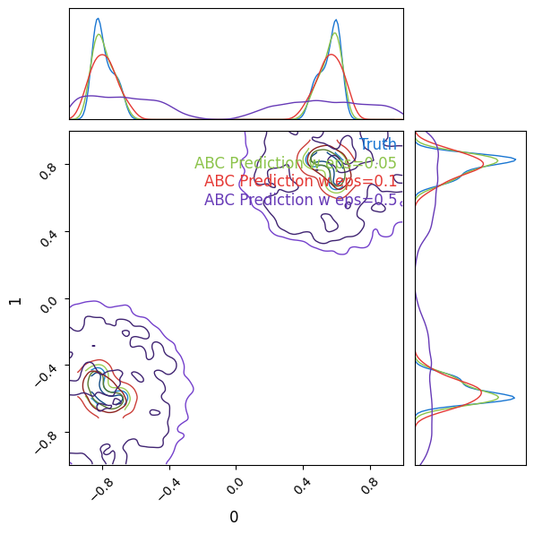
for sample, epsilon in zip(samples, epsilons):
np.save(f"samples/abc_samples_eps_mse_{epsilon}.npy", sample)We can see empirically that the posterior is closer to the target the smaller \(\epsilon\). We can also notice that the lower epsilon, the lower the acceptance rate. Hence, having a good estimate of the posterior requires a huge amount of calls to the simulator. In this case, this is no real problem. But in a real case, such as N-body simulations, one cannot afford so many simulations. The next sections will introduce Neural Density Estimators that allows to estimate the posterior using a neural network with a finite amount of simulations.
#Same run with mae
epsilons = [0.05, 0.1, 0.5]
samples = []
for epsilon in epsilons:
print(f"Running ABC with epsilon={epsilon}")
start = time.time()
abc_samples = abc(observation, prior, simulator, epsilon, distance_function=mae, n_samples=5000)
end = time.time()
print(f"ABC sampling time: {end-start: .2f} seconds.")
samples.append(abc_samples)Running ABC with epsilon=0.05Accepted samples: 100%|██████████| 5000/5000 [21:41<00:00, 3.84samples/s, acceptance_ratio=0.00247]ABC sampling time: 1301.38 seconds.
Running ABC with epsilon=0.1Accepted samples: 100%|██████████| 5000/5000 [05:25<00:00, 15.36samples/s, acceptance_ratio=0.0102]ABC sampling time: 325.63 seconds.
Running ABC with epsilon=0.5Accepted samples: 100%|██████████| 5000/5000 [00:23<00:00, 213.70samples/s, acceptance_ratio=0.202]ABC sampling time: 23.52 seconds.c = ChainConsumer()
c.add_chain(reference_samples, shade_alpha = 0.5, name='Truth')
for abc_samples, epsilon in zip(samples, epsilons):
c.add_chain(abc_samples, shade_alpha = 0.5, name=f"ABC Prediction w eps={epsilon}")
fig = c.plotter.plot(figsize=2.)
plt.show()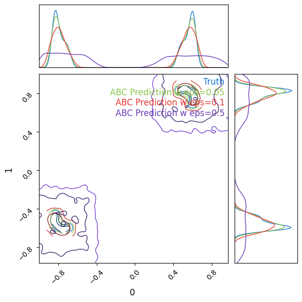
for sample, epsilon in zip(samples, epsilons):
np.save(f"samples/abc_samples_eps_mae_{epsilon}.npy", sample)Neural Density Estimation
Neural Density Estimation regroups technics allowing to sample from a posterior using neural networks. We can distinguish 3 main methods: Neural Posterior Estimation (NPE), Neural Likelihood Estimation and Neural Ratio Estimation.

In what follows, we wil use Neural Posterior Estimation and Neural Likelihood Estimation and show how it performs on two_moons use case. We first review some generalities on Neural Density Estimation theory.
Neural Posterior Estimation
We will first use Neural Posterior Estimation (NPE) to estimate the posterior \(p(\theta|x)\). The principle is to use the simulator to sample pairs \((\theta, x) \sim p(x, \theta)\) from the joint probability distribution. We can then use Neural Network architectures such as Normalizing Flows (NFs) to estimate the posterior.
Normalizing Flows
Normalizing Flows are invertible transformations of the probabilistic space that allows to map a simple distribution to a more complex distribution. (See figure below)
Neural Networks architectures exist to implement Normalizing Flows. JaxILI implements two of them as NDENetwork classes. This class implements two methods log_prob and sample that respectively allow to evaluate the log-probability of the target density and sample from the target density. The two available normalizing flows are the ConditionalRealNVP and the ConditionalMAF and can be found in the script model.py.
The script also includes a MixtureDensityNetwork that implements Mixture of Gaussians. The latter is not a Normalizing Flow but also allows to estimate probability distributions.
Training a Neural Network to fit a probability distribution
So far, we have the tools to emulate a probability distribution with a neural network. We’ll write such a probability distribution \(p_{\varphi}\) where \(\varphi\) are the parameters of the neural network. The goal of this section is to describe the optimization scheme used to train the neural network.
A way to measure how close two distributions are is by computing the Kullback-Leibler divergence:
\[ D_{\rm KL}(p||q) = \mathbb{E}_p\left[\log\left( \frac{p}{q}\right)\right] \]
where \(p\) and \(q\) are probability distributions. The Kullback-Leibler divergence is not a distance since it’s not symmetric. It is however positive and is equal to zero if and only if \(p\) and \(q\) are equal. Thus, a way to learn a probability \(p\) with a neural network with weights \(\varphi\) is to minimize \(D_{\rm KL}(p||p_{\varphi})\) w.r.t the parameters \(\varphi\). Let’s do the math!
\[\begin{align*} D_{\rm KL}(p||p_{\varphi})&=\mathbb{E}_p\left[\log\left(\frac{p}{p_{\varphi}}\right)\right]\\ &= \underbrace{\mathbb{E}_p[\log(p)]}_{-\text{Entropy of $p$}} - \mathbb{E}_p[\log(p_{\varphi})]\\ \end{align*}\]
Hence, minimizing the Kullback-Leibler divergence is equivalent to minimizing the negative log-likelihood since the entropy of \(p\) does not depends on the NN parameters \(\varphi\):
\[ \mathcal{L}_{\rm NLL} = \mathbb{E}_p[-\log(p_{\varphi})] \]
The computation of the expectancy is possible in the framework of Simulation-Based inference because our simulator samples from the probability distribution \(p\). The training set thus provides samples to approximate the loss:
\[ \mathcal{L}_{\rm NLL} = -\underset{i=1}{\overset{N_{\rm samples}}{\sum}}\log(p_{\varphi}(x_i)) \]
where \(x_i\)’s are samples from the probability distribution \(p\).
In the context of Implicit Likelihood Inference, we will usually want to estimate joint distributions. It doesn’t fundamentally changes the optimization scheme. Let’s get to the code now!
Training implementation
In this notebook, we will use ConditionalRealNVP as an example of architecture but the user is free to test other architectures. This architecture has 3 hyperparameters:
- The number of layers
n_layersstacked in the RealNVP. - The number and size of the hidden layers
layers. - The activation function
activation.
To perform the training, we will build a class inheriting from TrainerModule. This class implements the whole training and validation loops. We only need to define our loss function as well as our train step. We lay the stress on the fact that the class methods can be overload if the user wants to modify the ay the training is done.
class RealNVPTrainer(TrainerModule):
def __init__(self,
n_in : int,
n_layers : int,
layers : list[int],
activation : str,
trial : Any = None,
**kwargs):
super().__init__(model_class=ConditionalRealNVP,
model_hparams={
'n_in': n_in,
'n_layers': n_layers,
'layers' : layers,
'activation' : activation
},
**kwargs)
self.trial=trial
def create_functions(self): #Create the train_step and eval_step functions. This function is not implemented in the TrainerModule class.
def loss_nll(params, batch):
thetas, xs = batch
return -jnp.mean(self.model.apply({'params': params}, thetas, xs, method='log_prob'))
def train_step(state, batch):
loss_fn = lambda params: loss_nll(params, batch)
loss, grads =jax.value_and_grad(loss_fn)(state.params)
state = state.apply_gradients(grads=grads)
metrics = {'loss': loss}
return state, metrics
def eval_step(state, batch):
loss = loss_nll(state.params, batch)
return {'loss': loss}
return train_step, eval_step
def run_model_init(self, exmp_input, init_rng):
return self.model.init(init_rng, *exmp_input, train=True, method='log_prob')
def print_tabulate(self, exmp_input):
pass
def on_validation_epoch_end(self, epoch_idx, eval_metrics, val_loader):
if self.trial:
self.trial.report(eval_metrics['val/loss'], step=epoch_idx)
if self.trial.should_prune():
raise optuna.exceptions.TrialPruned()CHECKPOINT_PATH = '~/Documents/SBI/sbi_jax/notebooks/checkpoints_tuto' #Specify the path where the checkpoints will be saved
trainer = RealNVPTrainer(n_in=dim_obs, #Dimension of the conditional
n_layers=4,
layers=[128, 128],
activation = 'silu',
optimizer_hparams={'lr': 4e-3}, #Optimizer hyperparameters
logger_params={'base_log_dir': CHECKPOINT_PATH},
exmp_input=next(iter(train_loader)), #Example of the input
check_val_every_epoch=5, #Number of epochs before checking the validation.
seed=0)Missing logger folder: ~/Documents/SBI/sbi_jax/notebooks/checkpoints_tuto/ConditionalRealNVP/We’re all set. It is now as simple as typing .train to optimize the weights of your neural network. Metrics values are saved on the fly and can be checked during training and the best fit weights of the neural network are saved in checkpoints.
metrics = trainer.train_model(
train_loader, val_loader, test_loader=test_loader, num_epochs=50
)print(f'Training loss: {metrics["train/loss"]}')
print(f'Validation loss: {metrics["val/loss"]}')
print(f'Test loss: {metrics["test/loss"]}')Training loss: -3.308178663253784
Validation loss: -3.333005905151367
Test loss: -3.3075411319732666We see that the training, validation and test loss are in agreement. We thus avoided overfitting. Let’s freeze our model and collect samples from the posterior:
model = trainer.bind_model()key = jax.random.PRNGKey(0) #Required to generate pseudo-random numbers in Jax
samples = model.sample(
observation, num_samples=10000, key=key #The sample method allows to sample from the different output of the neural networks.
)
c = ChainConsumer()
c.add_chain(reference_samples, shade_alpha=0.5, name='Truth')
c.add_chain(samples, shade_alpha=0.5, name='Prediction')
fig = c.plotter.plot(figsize=2.)
plt.show()WARNING:chainconsumer:Parameter 0 in chain Truth is not constrained
WARNING:chainconsumer:Parameter 0 in chain Prediction is not constrained
WARNING:chainconsumer:Parameter 1 in chain Truth is not constrained
WARNING:chainconsumer:Parameter 1 in chain Prediction is not constrained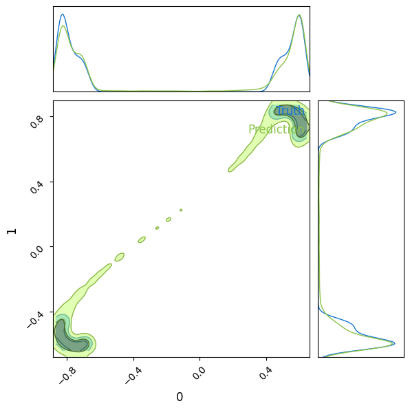
We see that the Normalizing Flow has been able to capture the bimodality of the target density and correctly covers the target density. We however observe a tail between the two regions of interest in the target density. This is expected since the normalizing flow is a continuous transformation that maps a unit gaussian to a bimodal distribution.
In the training, we fixed arbitrarily hyperparameters. It is though possible to optimize those using e.g. Optuna.
Hyperparameter tuning with Optuna
#First specify the absolute checkpoint_path. Optuna does not like relative paths.
CHECKPOINT_PATH = '/local/home/sg276684/Documents/SBI/sbi_jax/notebooks/checkpoints_tuto/optuna'We first need to create an objective function that takes a trial object in argument. This object will allow to test different hyperparameters values.
def objective(trial):
my_train_loader, my_val_loader = create_data_loader(train_set, val_set,
train=[True, False],
batch_size=256)
trainer = RealNVPTrainer(n_in=dim_obs, #Create your trainer
n_layers=trial.suggest_int('n_layers', 3, 10), #Try different number of layers
layers=[128, 128],
activation='silu',
optimizer_hparams={
'lr': trial.suggest_float('lr', 1e-4, 1e-2, log=True) #Try different learning_rate
},
logger_params={'base_log_dir': CHECKPOINT_PATH},
exmp_input=next(iter(my_train_loader)), #beware of the training input.
check_val_every_epoch=5,
enable_progress_bar=False,
trial=trial)
metrics = trainer.train_model(my_train_loader,
my_val_loader,
num_epochs=200)
del trainer
del my_train_loader, my_val_loader
return metrics['val/loss']#Let's go!
study = optuna.create_study(
study_name='realnvp_slcp_hparam_search',
storage=f'sqlite:///{CHECKPOINT_PATH}/optuna_hparam_search.db',
direction='minimize',
pruner=optuna.pruners.MedianPruner(n_startup_trials=5, n_warmup_steps=50),
load_if_exists=True
)
study.optimize(objective, n_trials=25-len(study.trials), n_jobs=1)[I 2024-02-24 22:02:33,258] Using an existing study with name 'realnvp_slcp_hparam_search' instead of creating a new one.
Missing logger folder: /local/home/sg276684/Documents/SBI/sbi_jax/notebooks/checkpoints_tuto/optuna/ConditionalRealNVP/
INFO:absl:Saving checkpoint at step: 5
INFO:absl:Using Orbax as backend to save Flax checkpoints. For potential troubleshooting see: https://flax.readthedocs.io/en/latest/guides/use_checkpointing.html#orbax-as-backend-troubleshooting
INFO:absl:Saving item to /local/home/sg276684/Documents/SBI/sbi_jax/notebooks/checkpoints_tuto/optuna/ConditionalRealNVP/version_0/checkpoint_5.
INFO:absl:Renaming /local/home/sg276684/Documents/SBI/sbi_jax/notebooks/checkpoints_tuto/optuna/ConditionalRealNVP/version_0/checkpoint_5.orbax-checkpoint-tmp-1708808571728493 to /local/home/sg276684/Documents/SBI/sbi_jax/notebooks/checkpoints_tuto/optuna/ConditionalRealNVP/version_0/checkpoint_5
INFO:absl:Finished saving checkpoint to `/local/home/sg276684/Documents/SBI/sbi_jax/notebooks/checkpoints_tuto/optuna/ConditionalRealNVP/version_0/checkpoint_5`.
INFO:absl:Saving checkpoint at step: 10
INFO:absl:Using Orbax as backend to save Flax checkpoints. For potential troubleshooting see: https://flax.readthedocs.io/en/latest/guides/use_checkpointing.html#orbax-as-backend-troubleshooting
INFO:absl:Saving item to /local/home/sg276684/Documents/SBI/sbi_jax/notebooks/checkpoints_tuto/optuna/ConditionalRealNVP/version_0/checkpoint_10.
INFO:absl:Renaming /local/home/sg276684/Documents/SBI/sbi_jax/notebooks/checkpoints_tuto/optuna/ConditionalRealNVP/version_0/checkpoint_10.orbax-checkpoint-tmp-1708808575627000 to /local/home/sg276684/Documents/SBI/sbi_jax/notebooks/checkpoints_tuto/optuna/ConditionalRealNVP/version_0/checkpoint_10
INFO:absl:Finished saving checkpoint to `/local/home/sg276684/Documents/SBI/sbi_jax/notebooks/checkpoints_tuto/optuna/ConditionalRealNVP/version_0/checkpoint_10`.
INFO:absl:Removing checkpoint at /local/home/sg276684/Documents/SBI/sbi_jax/notebooks/checkpoints_tuto/optuna/ConditionalRealNVP/version_0/checkpoint_5
INFO:absl:Saving checkpoint at step: 15
INFO:absl:Using Orbax as backend to save Flax checkpoints. For potential troubleshooting see: https://flax.readthedocs.io/en/latest/guides/use_checkpointing.html#orbax-as-backend-troubleshooting
INFO:absl:Saving item to /local/home/sg276684/Documents/SBI/sbi_jax/notebooks/checkpoints_tuto/optuna/ConditionalRealNVP/version_0/checkpoint_15.
INFO:absl:Renaming /local/home/sg276684/Documents/SBI/sbi_jax/notebooks/checkpoints_tuto/optuna/ConditionalRealNVP/version_0/checkpoint_15.orbax-checkpoint-tmp-1708808579311058 to /local/home/sg276684/Documents/SBI/sbi_jax/notebooks/checkpoints_tuto/optuna/ConditionalRealNVP/version_0/checkpoint_15
INFO:absl:Finished saving checkpoint to `/local/home/sg276684/Documents/SBI/sbi_jax/notebooks/checkpoints_tuto/optuna/ConditionalRealNVP/version_0/checkpoint_15`.
INFO:absl:Removing checkpoint at /local/home/sg276684/Documents/SBI/sbi_jax/notebooks/checkpoints_tuto/optuna/ConditionalRealNVP/version_0/checkpoint_10
INFO:absl:Saving checkpoint at step: 20
INFO:absl:Using Orbax as backend to save Flax checkpoints. For potential troubleshooting see: https://flax.readthedocs.io/en/latest/guides/use_checkpointing.html#orbax-as-backend-troubleshooting
INFO:absl:Saving item to /local/home/sg276684/Documents/SBI/sbi_jax/notebooks/checkpoints_tuto/optuna/ConditionalRealNVP/version_0/checkpoint_20.
INFO:absl:Renaming /local/home/sg276684/Documents/SBI/sbi_jax/notebooks/checkpoints_tuto/optuna/ConditionalRealNVP/version_0/checkpoint_20.orbax-checkpoint-tmp-1708808583315776 to /local/home/sg276684/Documents/SBI/sbi_jax/notebooks/checkpoints_tuto/optuna/ConditionalRealNVP/version_0/checkpoint_20
INFO:absl:Finished saving checkpoint to `/local/home/sg276684/Documents/SBI/sbi_jax/notebooks/checkpoints_tuto/optuna/ConditionalRealNVP/version_0/checkpoint_20`.
INFO:absl:Removing checkpoint at /local/home/sg276684/Documents/SBI/sbi_jax/notebooks/checkpoints_tuto/optuna/ConditionalRealNVP/version_0/checkpoint_15
INFO:absl:Saving checkpoint at step: 25
INFO:absl:Using Orbax as backend to save Flax checkpoints. For potential troubleshooting see: https://flax.readthedocs.io/en/latest/guides/use_checkpointing.html#orbax-as-backend-troubleshooting
INFO:absl:Saving item to /local/home/sg276684/Documents/SBI/sbi_jax/notebooks/checkpoints_tuto/optuna/ConditionalRealNVP/version_0/checkpoint_25.
INFO:absl:Renaming /local/home/sg276684/Documents/SBI/sbi_jax/notebooks/checkpoints_tuto/optuna/ConditionalRealNVP/version_0/checkpoint_25.orbax-checkpoint-tmp-1708808587243519 to /local/home/sg276684/Documents/SBI/sbi_jax/notebooks/checkpoints_tuto/optuna/ConditionalRealNVP/version_0/checkpoint_25
INFO:absl:Finished saving checkpoint to `/local/home/sg276684/Documents/SBI/sbi_jax/notebooks/checkpoints_tuto/optuna/ConditionalRealNVP/version_0/checkpoint_25`.
INFO:absl:Removing checkpoint at /local/home/sg276684/Documents/SBI/sbi_jax/notebooks/checkpoints_tuto/optuna/ConditionalRealNVP/version_0/checkpoint_20
INFO:absl:Saving checkpoint at step: 30
INFO:absl:Using Orbax as backend to save Flax checkpoints. For potential troubleshooting see: https://flax.readthedocs.io/en/latest/guides/use_checkpointing.html#orbax-as-backend-troubleshooting
INFO:absl:Saving item to /local/home/sg276684/Documents/SBI/sbi_jax/notebooks/checkpoints_tuto/optuna/ConditionalRealNVP/version_0/checkpoint_30.
INFO:absl:Renaming /local/home/sg276684/Documents/SBI/sbi_jax/notebooks/checkpoints_tuto/optuna/ConditionalRealNVP/version_0/checkpoint_30.orbax-checkpoint-tmp-1708808591099633 to /local/home/sg276684/Documents/SBI/sbi_jax/notebooks/checkpoints_tuto/optuna/ConditionalRealNVP/version_0/checkpoint_30
INFO:absl:Finished saving checkpoint to `/local/home/sg276684/Documents/SBI/sbi_jax/notebooks/checkpoints_tuto/optuna/ConditionalRealNVP/version_0/checkpoint_30`.
INFO:absl:Removing checkpoint at /local/home/sg276684/Documents/SBI/sbi_jax/notebooks/checkpoints_tuto/optuna/ConditionalRealNVP/version_0/checkpoint_25
INFO:absl:Saving checkpoint at step: 35
INFO:absl:Using Orbax as backend to save Flax checkpoints. For potential troubleshooting see: https://flax.readthedocs.io/en/latest/guides/use_checkpointing.html#orbax-as-backend-troubleshooting
INFO:absl:Saving item to /local/home/sg276684/Documents/SBI/sbi_jax/notebooks/checkpoints_tuto/optuna/ConditionalRealNVP/version_0/checkpoint_35.
INFO:absl:Renaming /local/home/sg276684/Documents/SBI/sbi_jax/notebooks/checkpoints_tuto/optuna/ConditionalRealNVP/version_0/checkpoint_35.orbax-checkpoint-tmp-1708808595138518 to /local/home/sg276684/Documents/SBI/sbi_jax/notebooks/checkpoints_tuto/optuna/ConditionalRealNVP/version_0/checkpoint_35
INFO:absl:Finished saving checkpoint to `/local/home/sg276684/Documents/SBI/sbi_jax/notebooks/checkpoints_tuto/optuna/ConditionalRealNVP/version_0/checkpoint_35`.
INFO:absl:Removing checkpoint at /local/home/sg276684/Documents/SBI/sbi_jax/notebooks/checkpoints_tuto/optuna/ConditionalRealNVP/version_0/checkpoint_30
INFO:absl:Saving checkpoint at step: 40
INFO:absl:Using Orbax as backend to save Flax checkpoints. For potential troubleshooting see: https://flax.readthedocs.io/en/latest/guides/use_checkpointing.html#orbax-as-backend-troubleshooting
INFO:absl:Saving item to /local/home/sg276684/Documents/SBI/sbi_jax/notebooks/checkpoints_tuto/optuna/ConditionalRealNVP/version_0/checkpoint_40.
INFO:absl:Renaming /local/home/sg276684/Documents/SBI/sbi_jax/notebooks/checkpoints_tuto/optuna/ConditionalRealNVP/version_0/checkpoint_40.orbax-checkpoint-tmp-1708808598924443 to /local/home/sg276684/Documents/SBI/sbi_jax/notebooks/checkpoints_tuto/optuna/ConditionalRealNVP/version_0/checkpoint_40
INFO:absl:Finished saving checkpoint to `/local/home/sg276684/Documents/SBI/sbi_jax/notebooks/checkpoints_tuto/optuna/ConditionalRealNVP/version_0/checkpoint_40`.
INFO:absl:Removing checkpoint at /local/home/sg276684/Documents/SBI/sbi_jax/notebooks/checkpoints_tuto/optuna/ConditionalRealNVP/version_0/checkpoint_35
INFO:absl:Saving checkpoint at step: 45
INFO:absl:Using Orbax as backend to save Flax checkpoints. For potential troubleshooting see: https://flax.readthedocs.io/en/latest/guides/use_checkpointing.html#orbax-as-backend-troubleshooting
INFO:absl:Saving item to /local/home/sg276684/Documents/SBI/sbi_jax/notebooks/checkpoints_tuto/optuna/ConditionalRealNVP/version_0/checkpoint_45.
INFO:absl:Renaming /local/home/sg276684/Documents/SBI/sbi_jax/notebooks/checkpoints_tuto/optuna/ConditionalRealNVP/version_0/checkpoint_45.orbax-checkpoint-tmp-1708808602835291 to /local/home/sg276684/Documents/SBI/sbi_jax/notebooks/checkpoints_tuto/optuna/ConditionalRealNVP/version_0/checkpoint_45
INFO:absl:Finished saving checkpoint to `/local/home/sg276684/Documents/SBI/sbi_jax/notebooks/checkpoints_tuto/optuna/ConditionalRealNVP/version_0/checkpoint_45`.
INFO:absl:Removing checkpoint at /local/home/sg276684/Documents/SBI/sbi_jax/notebooks/checkpoints_tuto/optuna/ConditionalRealNVP/version_0/checkpoint_40
INFO:absl:Saving checkpoint at step: 50
INFO:absl:Using Orbax as backend to save Flax checkpoints. For potential troubleshooting see: https://flax.readthedocs.io/en/latest/guides/use_checkpointing.html#orbax-as-backend-troubleshooting
INFO:absl:Saving item to /local/home/sg276684/Documents/SBI/sbi_jax/notebooks/checkpoints_tuto/optuna/ConditionalRealNVP/version_0/checkpoint_50.
INFO:absl:Renaming /local/home/sg276684/Documents/SBI/sbi_jax/notebooks/checkpoints_tuto/optuna/ConditionalRealNVP/version_0/checkpoint_50.orbax-checkpoint-tmp-1708808606866868 to /local/home/sg276684/Documents/SBI/sbi_jax/notebooks/checkpoints_tuto/optuna/ConditionalRealNVP/version_0/checkpoint_50
INFO:absl:Finished saving checkpoint to `/local/home/sg276684/Documents/SBI/sbi_jax/notebooks/checkpoints_tuto/optuna/ConditionalRealNVP/version_0/checkpoint_50`.
INFO:absl:Removing checkpoint at /local/home/sg276684/Documents/SBI/sbi_jax/notebooks/checkpoints_tuto/optuna/ConditionalRealNVP/version_0/checkpoint_45
INFO:absl:Saving checkpoint at step: 65
INFO:absl:Using Orbax as backend to save Flax checkpoints. For potential troubleshooting see: https://flax.readthedocs.io/en/latest/guides/use_checkpointing.html#orbax-as-backend-troubleshooting
INFO:absl:Saving item to /local/home/sg276684/Documents/SBI/sbi_jax/notebooks/checkpoints_tuto/optuna/ConditionalRealNVP/version_0/checkpoint_65.
INFO:absl:Renaming /local/home/sg276684/Documents/SBI/sbi_jax/notebooks/checkpoints_tuto/optuna/ConditionalRealNVP/version_0/checkpoint_65.orbax-checkpoint-tmp-1708808617504584 to /local/home/sg276684/Documents/SBI/sbi_jax/notebooks/checkpoints_tuto/optuna/ConditionalRealNVP/version_0/checkpoint_65
INFO:absl:Finished saving checkpoint to `/local/home/sg276684/Documents/SBI/sbi_jax/notebooks/checkpoints_tuto/optuna/ConditionalRealNVP/version_0/checkpoint_65`.
INFO:absl:Removing checkpoint at /local/home/sg276684/Documents/SBI/sbi_jax/notebooks/checkpoints_tuto/optuna/ConditionalRealNVP/version_0/checkpoint_50
INFO:absl:Saving checkpoint at step: 80
INFO:absl:Using Orbax as backend to save Flax checkpoints. For potential troubleshooting see: https://flax.readthedocs.io/en/latest/guides/use_checkpointing.html#orbax-as-backend-troubleshooting
INFO:absl:Saving item to /local/home/sg276684/Documents/SBI/sbi_jax/notebooks/checkpoints_tuto/optuna/ConditionalRealNVP/version_0/checkpoint_80.
INFO:absl:Renaming /local/home/sg276684/Documents/SBI/sbi_jax/notebooks/checkpoints_tuto/optuna/ConditionalRealNVP/version_0/checkpoint_80.orbax-checkpoint-tmp-1708808628387035 to /local/home/sg276684/Documents/SBI/sbi_jax/notebooks/checkpoints_tuto/optuna/ConditionalRealNVP/version_0/checkpoint_80
INFO:absl:Finished saving checkpoint to `/local/home/sg276684/Documents/SBI/sbi_jax/notebooks/checkpoints_tuto/optuna/ConditionalRealNVP/version_0/checkpoint_80`.
INFO:absl:Removing checkpoint at /local/home/sg276684/Documents/SBI/sbi_jax/notebooks/checkpoints_tuto/optuna/ConditionalRealNVP/version_0/checkpoint_65
INFO:absl:Saving checkpoint at step: 100
INFO:absl:Using Orbax as backend to save Flax checkpoints. For potential troubleshooting see: https://flax.readthedocs.io/en/latest/guides/use_checkpointing.html#orbax-as-backend-troubleshooting
INFO:absl:Saving item to /local/home/sg276684/Documents/SBI/sbi_jax/notebooks/checkpoints_tuto/optuna/ConditionalRealNVP/version_0/checkpoint_100.
INFO:absl:Renaming /local/home/sg276684/Documents/SBI/sbi_jax/notebooks/checkpoints_tuto/optuna/ConditionalRealNVP/version_0/checkpoint_100.orbax-checkpoint-tmp-1708808643886672 to /local/home/sg276684/Documents/SBI/sbi_jax/notebooks/checkpoints_tuto/optuna/ConditionalRealNVP/version_0/checkpoint_100
INFO:absl:Finished saving checkpoint to `/local/home/sg276684/Documents/SBI/sbi_jax/notebooks/checkpoints_tuto/optuna/ConditionalRealNVP/version_0/checkpoint_100`.
INFO:absl:Removing checkpoint at /local/home/sg276684/Documents/SBI/sbi_jax/notebooks/checkpoints_tuto/optuna/ConditionalRealNVP/version_0/checkpoint_80
INFO:absl:Saving checkpoint at step: 110
INFO:absl:Using Orbax as backend to save Flax checkpoints. For potential troubleshooting see: https://flax.readthedocs.io/en/latest/guides/use_checkpointing.html#orbax-as-backend-troubleshooting
INFO:absl:Saving item to /local/home/sg276684/Documents/SBI/sbi_jax/notebooks/checkpoints_tuto/optuna/ConditionalRealNVP/version_0/checkpoint_110.
INFO:absl:Renaming /local/home/sg276684/Documents/SBI/sbi_jax/notebooks/checkpoints_tuto/optuna/ConditionalRealNVP/version_0/checkpoint_110.orbax-checkpoint-tmp-1708808651911895 to /local/home/sg276684/Documents/SBI/sbi_jax/notebooks/checkpoints_tuto/optuna/ConditionalRealNVP/version_0/checkpoint_110
INFO:absl:Finished saving checkpoint to `/local/home/sg276684/Documents/SBI/sbi_jax/notebooks/checkpoints_tuto/optuna/ConditionalRealNVP/version_0/checkpoint_110`.
INFO:absl:Removing checkpoint at /local/home/sg276684/Documents/SBI/sbi_jax/notebooks/checkpoints_tuto/optuna/ConditionalRealNVP/version_0/checkpoint_100
INFO:absl:Saving checkpoint at step: 115
INFO:absl:Using Orbax as backend to save Flax checkpoints. For potential troubleshooting see: https://flax.readthedocs.io/en/latest/guides/use_checkpointing.html#orbax-as-backend-troubleshooting
INFO:absl:Saving item to /local/home/sg276684/Documents/SBI/sbi_jax/notebooks/checkpoints_tuto/optuna/ConditionalRealNVP/version_0/checkpoint_115.
INFO:absl:Renaming /local/home/sg276684/Documents/SBI/sbi_jax/notebooks/checkpoints_tuto/optuna/ConditionalRealNVP/version_0/checkpoint_115.orbax-checkpoint-tmp-1708808655930521 to /local/home/sg276684/Documents/SBI/sbi_jax/notebooks/checkpoints_tuto/optuna/ConditionalRealNVP/version_0/checkpoint_115
INFO:absl:Finished saving checkpoint to `/local/home/sg276684/Documents/SBI/sbi_jax/notebooks/checkpoints_tuto/optuna/ConditionalRealNVP/version_0/checkpoint_115`.
INFO:absl:Removing checkpoint at /local/home/sg276684/Documents/SBI/sbi_jax/notebooks/checkpoints_tuto/optuna/ConditionalRealNVP/version_0/checkpoint_110
INFO:absl:Saving checkpoint at step: 135
INFO:absl:Using Orbax as backend to save Flax checkpoints. For potential troubleshooting see: https://flax.readthedocs.io/en/latest/guides/use_checkpointing.html#orbax-as-backend-troubleshooting
INFO:absl:Saving item to /local/home/sg276684/Documents/SBI/sbi_jax/notebooks/checkpoints_tuto/optuna/ConditionalRealNVP/version_0/checkpoint_135.
INFO:absl:Renaming /local/home/sg276684/Documents/SBI/sbi_jax/notebooks/checkpoints_tuto/optuna/ConditionalRealNVP/version_0/checkpoint_135.orbax-checkpoint-tmp-1708808671358368 to /local/home/sg276684/Documents/SBI/sbi_jax/notebooks/checkpoints_tuto/optuna/ConditionalRealNVP/version_0/checkpoint_135
INFO:absl:Finished saving checkpoint to `/local/home/sg276684/Documents/SBI/sbi_jax/notebooks/checkpoints_tuto/optuna/ConditionalRealNVP/version_0/checkpoint_135`.
INFO:absl:Removing checkpoint at /local/home/sg276684/Documents/SBI/sbi_jax/notebooks/checkpoints_tuto/optuna/ConditionalRealNVP/version_0/checkpoint_115
INFO:absl:Saving checkpoint at step: 145
INFO:absl:Using Orbax as backend to save Flax checkpoints. For potential troubleshooting see: https://flax.readthedocs.io/en/latest/guides/use_checkpointing.html#orbax-as-backend-troubleshooting
INFO:absl:Saving item to /local/home/sg276684/Documents/SBI/sbi_jax/notebooks/checkpoints_tuto/optuna/ConditionalRealNVP/version_0/checkpoint_145.
INFO:absl:Renaming /local/home/sg276684/Documents/SBI/sbi_jax/notebooks/checkpoints_tuto/optuna/ConditionalRealNVP/version_0/checkpoint_145.orbax-checkpoint-tmp-1708808678853366 to /local/home/sg276684/Documents/SBI/sbi_jax/notebooks/checkpoints_tuto/optuna/ConditionalRealNVP/version_0/checkpoint_145
INFO:absl:Finished saving checkpoint to `/local/home/sg276684/Documents/SBI/sbi_jax/notebooks/checkpoints_tuto/optuna/ConditionalRealNVP/version_0/checkpoint_145`.
INFO:absl:Removing checkpoint at /local/home/sg276684/Documents/SBI/sbi_jax/notebooks/checkpoints_tuto/optuna/ConditionalRealNVP/version_0/checkpoint_135
INFO:absl:Saving checkpoint at step: 150
INFO:absl:Using Orbax as backend to save Flax checkpoints. For potential troubleshooting see: https://flax.readthedocs.io/en/latest/guides/use_checkpointing.html#orbax-as-backend-troubleshooting
INFO:absl:Saving item to /local/home/sg276684/Documents/SBI/sbi_jax/notebooks/checkpoints_tuto/optuna/ConditionalRealNVP/version_0/checkpoint_150.
INFO:absl:Renaming /local/home/sg276684/Documents/SBI/sbi_jax/notebooks/checkpoints_tuto/optuna/ConditionalRealNVP/version_0/checkpoint_150.orbax-checkpoint-tmp-1708808682766870 to /local/home/sg276684/Documents/SBI/sbi_jax/notebooks/checkpoints_tuto/optuna/ConditionalRealNVP/version_0/checkpoint_150
INFO:absl:Finished saving checkpoint to `/local/home/sg276684/Documents/SBI/sbi_jax/notebooks/checkpoints_tuto/optuna/ConditionalRealNVP/version_0/checkpoint_150`.
INFO:absl:Removing checkpoint at /local/home/sg276684/Documents/SBI/sbi_jax/notebooks/checkpoints_tuto/optuna/ConditionalRealNVP/version_0/checkpoint_145
INFO:absl:Saving checkpoint at step: 155
INFO:absl:Using Orbax as backend to save Flax checkpoints. For potential troubleshooting see: https://flax.readthedocs.io/en/latest/guides/use_checkpointing.html#orbax-as-backend-troubleshooting
INFO:absl:Saving item to /local/home/sg276684/Documents/SBI/sbi_jax/notebooks/checkpoints_tuto/optuna/ConditionalRealNVP/version_0/checkpoint_155.
INFO:absl:Renaming /local/home/sg276684/Documents/SBI/sbi_jax/notebooks/checkpoints_tuto/optuna/ConditionalRealNVP/version_0/checkpoint_155.orbax-checkpoint-tmp-1708808686637624 to /local/home/sg276684/Documents/SBI/sbi_jax/notebooks/checkpoints_tuto/optuna/ConditionalRealNVP/version_0/checkpoint_155
INFO:absl:Finished saving checkpoint to `/local/home/sg276684/Documents/SBI/sbi_jax/notebooks/checkpoints_tuto/optuna/ConditionalRealNVP/version_0/checkpoint_155`.
INFO:absl:Removing checkpoint at /local/home/sg276684/Documents/SBI/sbi_jax/notebooks/checkpoints_tuto/optuna/ConditionalRealNVP/version_0/checkpoint_150
INFO:absl:Saving checkpoint at step: 160
INFO:absl:Using Orbax as backend to save Flax checkpoints. For potential troubleshooting see: https://flax.readthedocs.io/en/latest/guides/use_checkpointing.html#orbax-as-backend-troubleshooting
INFO:absl:Saving item to /local/home/sg276684/Documents/SBI/sbi_jax/notebooks/checkpoints_tuto/optuna/ConditionalRealNVP/version_0/checkpoint_160.
INFO:absl:Renaming /local/home/sg276684/Documents/SBI/sbi_jax/notebooks/checkpoints_tuto/optuna/ConditionalRealNVP/version_0/checkpoint_160.orbax-checkpoint-tmp-1708808690571609 to /local/home/sg276684/Documents/SBI/sbi_jax/notebooks/checkpoints_tuto/optuna/ConditionalRealNVP/version_0/checkpoint_160
INFO:absl:Finished saving checkpoint to `/local/home/sg276684/Documents/SBI/sbi_jax/notebooks/checkpoints_tuto/optuna/ConditionalRealNVP/version_0/checkpoint_160`.
INFO:absl:Removing checkpoint at /local/home/sg276684/Documents/SBI/sbi_jax/notebooks/checkpoints_tuto/optuna/ConditionalRealNVP/version_0/checkpoint_155
INFO:absl:Saving checkpoint at step: 165
INFO:absl:Using Orbax as backend to save Flax checkpoints. For potential troubleshooting see: https://flax.readthedocs.io/en/latest/guides/use_checkpointing.html#orbax-as-backend-troubleshooting
INFO:absl:Saving item to /local/home/sg276684/Documents/SBI/sbi_jax/notebooks/checkpoints_tuto/optuna/ConditionalRealNVP/version_0/checkpoint_165.
INFO:absl:Renaming /local/home/sg276684/Documents/SBI/sbi_jax/notebooks/checkpoints_tuto/optuna/ConditionalRealNVP/version_0/checkpoint_165.orbax-checkpoint-tmp-1708808694192757 to /local/home/sg276684/Documents/SBI/sbi_jax/notebooks/checkpoints_tuto/optuna/ConditionalRealNVP/version_0/checkpoint_165
INFO:absl:Finished saving checkpoint to `/local/home/sg276684/Documents/SBI/sbi_jax/notebooks/checkpoints_tuto/optuna/ConditionalRealNVP/version_0/checkpoint_165`.
INFO:absl:Removing checkpoint at /local/home/sg276684/Documents/SBI/sbi_jax/notebooks/checkpoints_tuto/optuna/ConditionalRealNVP/version_0/checkpoint_160
INFO:absl:Saving checkpoint at step: 175
INFO:absl:Using Orbax as backend to save Flax checkpoints. For potential troubleshooting see: https://flax.readthedocs.io/en/latest/guides/use_checkpointing.html#orbax-as-backend-troubleshooting
INFO:absl:Saving item to /local/home/sg276684/Documents/SBI/sbi_jax/notebooks/checkpoints_tuto/optuna/ConditionalRealNVP/version_0/checkpoint_175.
INFO:absl:Renaming /local/home/sg276684/Documents/SBI/sbi_jax/notebooks/checkpoints_tuto/optuna/ConditionalRealNVP/version_0/checkpoint_175.orbax-checkpoint-tmp-1708808701854024 to /local/home/sg276684/Documents/SBI/sbi_jax/notebooks/checkpoints_tuto/optuna/ConditionalRealNVP/version_0/checkpoint_175
INFO:absl:Finished saving checkpoint to `/local/home/sg276684/Documents/SBI/sbi_jax/notebooks/checkpoints_tuto/optuna/ConditionalRealNVP/version_0/checkpoint_175`.
INFO:absl:Removing checkpoint at /local/home/sg276684/Documents/SBI/sbi_jax/notebooks/checkpoints_tuto/optuna/ConditionalRealNVP/version_0/checkpoint_165
INFO:absl:Saving checkpoint at step: 185
INFO:absl:Using Orbax as backend to save Flax checkpoints. For potential troubleshooting see: https://flax.readthedocs.io/en/latest/guides/use_checkpointing.html#orbax-as-backend-troubleshooting
INFO:absl:Saving item to /local/home/sg276684/Documents/SBI/sbi_jax/notebooks/checkpoints_tuto/optuna/ConditionalRealNVP/version_0/checkpoint_185.
INFO:absl:Renaming /local/home/sg276684/Documents/SBI/sbi_jax/notebooks/checkpoints_tuto/optuna/ConditionalRealNVP/version_0/checkpoint_185.orbax-checkpoint-tmp-1708808709334627 to /local/home/sg276684/Documents/SBI/sbi_jax/notebooks/checkpoints_tuto/optuna/ConditionalRealNVP/version_0/checkpoint_185
INFO:absl:Finished saving checkpoint to `/local/home/sg276684/Documents/SBI/sbi_jax/notebooks/checkpoints_tuto/optuna/ConditionalRealNVP/version_0/checkpoint_185`.
INFO:absl:Removing checkpoint at /local/home/sg276684/Documents/SBI/sbi_jax/notebooks/checkpoints_tuto/optuna/ConditionalRealNVP/version_0/checkpoint_175
INFO:absl:Saving checkpoint at step: 195
INFO:absl:Using Orbax as backend to save Flax checkpoints. For potential troubleshooting see: https://flax.readthedocs.io/en/latest/guides/use_checkpointing.html#orbax-as-backend-troubleshooting
INFO:absl:Saving item to /local/home/sg276684/Documents/SBI/sbi_jax/notebooks/checkpoints_tuto/optuna/ConditionalRealNVP/version_0/checkpoint_195.
INFO:absl:Renaming /local/home/sg276684/Documents/SBI/sbi_jax/notebooks/checkpoints_tuto/optuna/ConditionalRealNVP/version_0/checkpoint_195.orbax-checkpoint-tmp-1708808717059139 to /local/home/sg276684/Documents/SBI/sbi_jax/notebooks/checkpoints_tuto/optuna/ConditionalRealNVP/version_0/checkpoint_195
INFO:absl:Finished saving checkpoint to `/local/home/sg276684/Documents/SBI/sbi_jax/notebooks/checkpoints_tuto/optuna/ConditionalRealNVP/version_0/checkpoint_195`.
INFO:absl:Removing checkpoint at /local/home/sg276684/Documents/SBI/sbi_jax/notebooks/checkpoints_tuto/optuna/ConditionalRealNVP/version_0/checkpoint_185
[I 2024-02-24 22:05:21,022] Trial 4 finished with value: -3.178523302078247 and parameters: {'n_layers': 9, 'lr': 0.0002102819569513299}. Best is trial 4 with value: -3.178523302078247.
INFO:absl:Saving checkpoint at step: 5
INFO:absl:Using Orbax as backend to save Flax checkpoints. For potential troubleshooting see: https://flax.readthedocs.io/en/latest/guides/use_checkpointing.html#orbax-as-backend-troubleshooting
INFO:absl:Saving item to /local/home/sg276684/Documents/SBI/sbi_jax/notebooks/checkpoints_tuto/optuna/ConditionalRealNVP/version_1/checkpoint_5.
INFO:absl:Renaming /local/home/sg276684/Documents/SBI/sbi_jax/notebooks/checkpoints_tuto/optuna/ConditionalRealNVP/version_1/checkpoint_5.orbax-checkpoint-tmp-1708808739258171 to /local/home/sg276684/Documents/SBI/sbi_jax/notebooks/checkpoints_tuto/optuna/ConditionalRealNVP/version_1/checkpoint_5
INFO:absl:Finished saving checkpoint to `/local/home/sg276684/Documents/SBI/sbi_jax/notebooks/checkpoints_tuto/optuna/ConditionalRealNVP/version_1/checkpoint_5`.
INFO:absl:Saving checkpoint at step: 10
INFO:absl:Using Orbax as backend to save Flax checkpoints. For potential troubleshooting see: https://flax.readthedocs.io/en/latest/guides/use_checkpointing.html#orbax-as-backend-troubleshooting
INFO:absl:Saving item to /local/home/sg276684/Documents/SBI/sbi_jax/notebooks/checkpoints_tuto/optuna/ConditionalRealNVP/version_1/checkpoint_10.
INFO:absl:Renaming /local/home/sg276684/Documents/SBI/sbi_jax/notebooks/checkpoints_tuto/optuna/ConditionalRealNVP/version_1/checkpoint_10.orbax-checkpoint-tmp-1708808743684049 to /local/home/sg276684/Documents/SBI/sbi_jax/notebooks/checkpoints_tuto/optuna/ConditionalRealNVP/version_1/checkpoint_10
INFO:absl:Finished saving checkpoint to `/local/home/sg276684/Documents/SBI/sbi_jax/notebooks/checkpoints_tuto/optuna/ConditionalRealNVP/version_1/checkpoint_10`.
INFO:absl:Removing checkpoint at /local/home/sg276684/Documents/SBI/sbi_jax/notebooks/checkpoints_tuto/optuna/ConditionalRealNVP/version_1/checkpoint_5
INFO:absl:Saving checkpoint at step: 15
INFO:absl:Using Orbax as backend to save Flax checkpoints. For potential troubleshooting see: https://flax.readthedocs.io/en/latest/guides/use_checkpointing.html#orbax-as-backend-troubleshooting
INFO:absl:Saving item to /local/home/sg276684/Documents/SBI/sbi_jax/notebooks/checkpoints_tuto/optuna/ConditionalRealNVP/version_1/checkpoint_15.
INFO:absl:Renaming /local/home/sg276684/Documents/SBI/sbi_jax/notebooks/checkpoints_tuto/optuna/ConditionalRealNVP/version_1/checkpoint_15.orbax-checkpoint-tmp-1708808748236465 to /local/home/sg276684/Documents/SBI/sbi_jax/notebooks/checkpoints_tuto/optuna/ConditionalRealNVP/version_1/checkpoint_15
INFO:absl:Finished saving checkpoint to `/local/home/sg276684/Documents/SBI/sbi_jax/notebooks/checkpoints_tuto/optuna/ConditionalRealNVP/version_1/checkpoint_15`.
INFO:absl:Removing checkpoint at /local/home/sg276684/Documents/SBI/sbi_jax/notebooks/checkpoints_tuto/optuna/ConditionalRealNVP/version_1/checkpoint_10
INFO:absl:Saving checkpoint at step: 20
INFO:absl:Using Orbax as backend to save Flax checkpoints. For potential troubleshooting see: https://flax.readthedocs.io/en/latest/guides/use_checkpointing.html#orbax-as-backend-troubleshooting
INFO:absl:Saving item to /local/home/sg276684/Documents/SBI/sbi_jax/notebooks/checkpoints_tuto/optuna/ConditionalRealNVP/version_1/checkpoint_20.
INFO:absl:Renaming /local/home/sg276684/Documents/SBI/sbi_jax/notebooks/checkpoints_tuto/optuna/ConditionalRealNVP/version_1/checkpoint_20.orbax-checkpoint-tmp-1708808752842289 to /local/home/sg276684/Documents/SBI/sbi_jax/notebooks/checkpoints_tuto/optuna/ConditionalRealNVP/version_1/checkpoint_20
INFO:absl:Finished saving checkpoint to `/local/home/sg276684/Documents/SBI/sbi_jax/notebooks/checkpoints_tuto/optuna/ConditionalRealNVP/version_1/checkpoint_20`.
INFO:absl:Removing checkpoint at /local/home/sg276684/Documents/SBI/sbi_jax/notebooks/checkpoints_tuto/optuna/ConditionalRealNVP/version_1/checkpoint_15
INFO:absl:Saving checkpoint at step: 25
INFO:absl:Using Orbax as backend to save Flax checkpoints. For potential troubleshooting see: https://flax.readthedocs.io/en/latest/guides/use_checkpointing.html#orbax-as-backend-troubleshooting
INFO:absl:Saving item to /local/home/sg276684/Documents/SBI/sbi_jax/notebooks/checkpoints_tuto/optuna/ConditionalRealNVP/version_1/checkpoint_25.
INFO:absl:Renaming /local/home/sg276684/Documents/SBI/sbi_jax/notebooks/checkpoints_tuto/optuna/ConditionalRealNVP/version_1/checkpoint_25.orbax-checkpoint-tmp-1708808757455014 to /local/home/sg276684/Documents/SBI/sbi_jax/notebooks/checkpoints_tuto/optuna/ConditionalRealNVP/version_1/checkpoint_25
INFO:absl:Finished saving checkpoint to `/local/home/sg276684/Documents/SBI/sbi_jax/notebooks/checkpoints_tuto/optuna/ConditionalRealNVP/version_1/checkpoint_25`.
INFO:absl:Removing checkpoint at /local/home/sg276684/Documents/SBI/sbi_jax/notebooks/checkpoints_tuto/optuna/ConditionalRealNVP/version_1/checkpoint_20
INFO:absl:Saving checkpoint at step: 30
INFO:absl:Using Orbax as backend to save Flax checkpoints. For potential troubleshooting see: https://flax.readthedocs.io/en/latest/guides/use_checkpointing.html#orbax-as-backend-troubleshooting
INFO:absl:Saving item to /local/home/sg276684/Documents/SBI/sbi_jax/notebooks/checkpoints_tuto/optuna/ConditionalRealNVP/version_1/checkpoint_30.
INFO:absl:Renaming /local/home/sg276684/Documents/SBI/sbi_jax/notebooks/checkpoints_tuto/optuna/ConditionalRealNVP/version_1/checkpoint_30.orbax-checkpoint-tmp-1708808761933250 to /local/home/sg276684/Documents/SBI/sbi_jax/notebooks/checkpoints_tuto/optuna/ConditionalRealNVP/version_1/checkpoint_30
INFO:absl:Finished saving checkpoint to `/local/home/sg276684/Documents/SBI/sbi_jax/notebooks/checkpoints_tuto/optuna/ConditionalRealNVP/version_1/checkpoint_30`.
INFO:absl:Removing checkpoint at /local/home/sg276684/Documents/SBI/sbi_jax/notebooks/checkpoints_tuto/optuna/ConditionalRealNVP/version_1/checkpoint_25
INFO:absl:Saving checkpoint at step: 40
INFO:absl:Using Orbax as backend to save Flax checkpoints. For potential troubleshooting see: https://flax.readthedocs.io/en/latest/guides/use_checkpointing.html#orbax-as-backend-troubleshooting
INFO:absl:Saving item to /local/home/sg276684/Documents/SBI/sbi_jax/notebooks/checkpoints_tuto/optuna/ConditionalRealNVP/version_1/checkpoint_40.
INFO:absl:Renaming /local/home/sg276684/Documents/SBI/sbi_jax/notebooks/checkpoints_tuto/optuna/ConditionalRealNVP/version_1/checkpoint_40.orbax-checkpoint-tmp-1708808770709861 to /local/home/sg276684/Documents/SBI/sbi_jax/notebooks/checkpoints_tuto/optuna/ConditionalRealNVP/version_1/checkpoint_40
INFO:absl:Finished saving checkpoint to `/local/home/sg276684/Documents/SBI/sbi_jax/notebooks/checkpoints_tuto/optuna/ConditionalRealNVP/version_1/checkpoint_40`.
INFO:absl:Removing checkpoint at /local/home/sg276684/Documents/SBI/sbi_jax/notebooks/checkpoints_tuto/optuna/ConditionalRealNVP/version_1/checkpoint_30
INFO:absl:Saving checkpoint at step: 55
INFO:absl:Using Orbax as backend to save Flax checkpoints. For potential troubleshooting see: https://flax.readthedocs.io/en/latest/guides/use_checkpointing.html#orbax-as-backend-troubleshooting
INFO:absl:Saving item to /local/home/sg276684/Documents/SBI/sbi_jax/notebooks/checkpoints_tuto/optuna/ConditionalRealNVP/version_1/checkpoint_55.
INFO:absl:Renaming /local/home/sg276684/Documents/SBI/sbi_jax/notebooks/checkpoints_tuto/optuna/ConditionalRealNVP/version_1/checkpoint_55.orbax-checkpoint-tmp-1708808784101772 to /local/home/sg276684/Documents/SBI/sbi_jax/notebooks/checkpoints_tuto/optuna/ConditionalRealNVP/version_1/checkpoint_55
INFO:absl:Finished saving checkpoint to `/local/home/sg276684/Documents/SBI/sbi_jax/notebooks/checkpoints_tuto/optuna/ConditionalRealNVP/version_1/checkpoint_55`.
INFO:absl:Removing checkpoint at /local/home/sg276684/Documents/SBI/sbi_jax/notebooks/checkpoints_tuto/optuna/ConditionalRealNVP/version_1/checkpoint_40
INFO:absl:Saving checkpoint at step: 65
INFO:absl:Using Orbax as backend to save Flax checkpoints. For potential troubleshooting see: https://flax.readthedocs.io/en/latest/guides/use_checkpointing.html#orbax-as-backend-troubleshooting
INFO:absl:Saving item to /local/home/sg276684/Documents/SBI/sbi_jax/notebooks/checkpoints_tuto/optuna/ConditionalRealNVP/version_1/checkpoint_65.
INFO:absl:Renaming /local/home/sg276684/Documents/SBI/sbi_jax/notebooks/checkpoints_tuto/optuna/ConditionalRealNVP/version_1/checkpoint_65.orbax-checkpoint-tmp-1708808792687608 to /local/home/sg276684/Documents/SBI/sbi_jax/notebooks/checkpoints_tuto/optuna/ConditionalRealNVP/version_1/checkpoint_65
INFO:absl:Finished saving checkpoint to `/local/home/sg276684/Documents/SBI/sbi_jax/notebooks/checkpoints_tuto/optuna/ConditionalRealNVP/version_1/checkpoint_65`.
INFO:absl:Removing checkpoint at /local/home/sg276684/Documents/SBI/sbi_jax/notebooks/checkpoints_tuto/optuna/ConditionalRealNVP/version_1/checkpoint_55
INFO:absl:Saving checkpoint at step: 75
INFO:absl:Using Orbax as backend to save Flax checkpoints. For potential troubleshooting see: https://flax.readthedocs.io/en/latest/guides/use_checkpointing.html#orbax-as-backend-troubleshooting
INFO:absl:Saving item to /local/home/sg276684/Documents/SBI/sbi_jax/notebooks/checkpoints_tuto/optuna/ConditionalRealNVP/version_1/checkpoint_75.
INFO:absl:Renaming /local/home/sg276684/Documents/SBI/sbi_jax/notebooks/checkpoints_tuto/optuna/ConditionalRealNVP/version_1/checkpoint_75.orbax-checkpoint-tmp-1708808801515426 to /local/home/sg276684/Documents/SBI/sbi_jax/notebooks/checkpoints_tuto/optuna/ConditionalRealNVP/version_1/checkpoint_75
INFO:absl:Finished saving checkpoint to `/local/home/sg276684/Documents/SBI/sbi_jax/notebooks/checkpoints_tuto/optuna/ConditionalRealNVP/version_1/checkpoint_75`.
INFO:absl:Removing checkpoint at /local/home/sg276684/Documents/SBI/sbi_jax/notebooks/checkpoints_tuto/optuna/ConditionalRealNVP/version_1/checkpoint_65
INFO:absl:Saving checkpoint at step: 80
INFO:absl:Using Orbax as backend to save Flax checkpoints. For potential troubleshooting see: https://flax.readthedocs.io/en/latest/guides/use_checkpointing.html#orbax-as-backend-troubleshooting
INFO:absl:Saving item to /local/home/sg276684/Documents/SBI/sbi_jax/notebooks/checkpoints_tuto/optuna/ConditionalRealNVP/version_1/checkpoint_80.
INFO:absl:Renaming /local/home/sg276684/Documents/SBI/sbi_jax/notebooks/checkpoints_tuto/optuna/ConditionalRealNVP/version_1/checkpoint_80.orbax-checkpoint-tmp-1708808805980913 to /local/home/sg276684/Documents/SBI/sbi_jax/notebooks/checkpoints_tuto/optuna/ConditionalRealNVP/version_1/checkpoint_80
INFO:absl:Finished saving checkpoint to `/local/home/sg276684/Documents/SBI/sbi_jax/notebooks/checkpoints_tuto/optuna/ConditionalRealNVP/version_1/checkpoint_80`.
INFO:absl:Removing checkpoint at /local/home/sg276684/Documents/SBI/sbi_jax/notebooks/checkpoints_tuto/optuna/ConditionalRealNVP/version_1/checkpoint_75
INFO:absl:Saving checkpoint at step: 100
INFO:absl:Using Orbax as backend to save Flax checkpoints. For potential troubleshooting see: https://flax.readthedocs.io/en/latest/guides/use_checkpointing.html#orbax-as-backend-troubleshooting
INFO:absl:Saving item to /local/home/sg276684/Documents/SBI/sbi_jax/notebooks/checkpoints_tuto/optuna/ConditionalRealNVP/version_1/checkpoint_100.
INFO:absl:Renaming /local/home/sg276684/Documents/SBI/sbi_jax/notebooks/checkpoints_tuto/optuna/ConditionalRealNVP/version_1/checkpoint_100.orbax-checkpoint-tmp-1708808823219676 to /local/home/sg276684/Documents/SBI/sbi_jax/notebooks/checkpoints_tuto/optuna/ConditionalRealNVP/version_1/checkpoint_100
INFO:absl:Finished saving checkpoint to `/local/home/sg276684/Documents/SBI/sbi_jax/notebooks/checkpoints_tuto/optuna/ConditionalRealNVP/version_1/checkpoint_100`.
INFO:absl:Removing checkpoint at /local/home/sg276684/Documents/SBI/sbi_jax/notebooks/checkpoints_tuto/optuna/ConditionalRealNVP/version_1/checkpoint_80
INFO:absl:Saving checkpoint at step: 110
INFO:absl:Using Orbax as backend to save Flax checkpoints. For potential troubleshooting see: https://flax.readthedocs.io/en/latest/guides/use_checkpointing.html#orbax-as-backend-troubleshooting
INFO:absl:Saving item to /local/home/sg276684/Documents/SBI/sbi_jax/notebooks/checkpoints_tuto/optuna/ConditionalRealNVP/version_1/checkpoint_110.
INFO:absl:Renaming /local/home/sg276684/Documents/SBI/sbi_jax/notebooks/checkpoints_tuto/optuna/ConditionalRealNVP/version_1/checkpoint_110.orbax-checkpoint-tmp-1708808831959451 to /local/home/sg276684/Documents/SBI/sbi_jax/notebooks/checkpoints_tuto/optuna/ConditionalRealNVP/version_1/checkpoint_110
INFO:absl:Finished saving checkpoint to `/local/home/sg276684/Documents/SBI/sbi_jax/notebooks/checkpoints_tuto/optuna/ConditionalRealNVP/version_1/checkpoint_110`.
INFO:absl:Removing checkpoint at /local/home/sg276684/Documents/SBI/sbi_jax/notebooks/checkpoints_tuto/optuna/ConditionalRealNVP/version_1/checkpoint_100
INFO:absl:Saving checkpoint at step: 120
INFO:absl:Using Orbax as backend to save Flax checkpoints. For potential troubleshooting see: https://flax.readthedocs.io/en/latest/guides/use_checkpointing.html#orbax-as-backend-troubleshooting
INFO:absl:Saving item to /local/home/sg276684/Documents/SBI/sbi_jax/notebooks/checkpoints_tuto/optuna/ConditionalRealNVP/version_1/checkpoint_120.
INFO:absl:Renaming /local/home/sg276684/Documents/SBI/sbi_jax/notebooks/checkpoints_tuto/optuna/ConditionalRealNVP/version_1/checkpoint_120.orbax-checkpoint-tmp-1708808840689853 to /local/home/sg276684/Documents/SBI/sbi_jax/notebooks/checkpoints_tuto/optuna/ConditionalRealNVP/version_1/checkpoint_120
INFO:absl:Finished saving checkpoint to `/local/home/sg276684/Documents/SBI/sbi_jax/notebooks/checkpoints_tuto/optuna/ConditionalRealNVP/version_1/checkpoint_120`.
INFO:absl:Removing checkpoint at /local/home/sg276684/Documents/SBI/sbi_jax/notebooks/checkpoints_tuto/optuna/ConditionalRealNVP/version_1/checkpoint_110
INFO:absl:Saving checkpoint at step: 125
INFO:absl:Using Orbax as backend to save Flax checkpoints. For potential troubleshooting see: https://flax.readthedocs.io/en/latest/guides/use_checkpointing.html#orbax-as-backend-troubleshooting
INFO:absl:Saving item to /local/home/sg276684/Documents/SBI/sbi_jax/notebooks/checkpoints_tuto/optuna/ConditionalRealNVP/version_1/checkpoint_125.
INFO:absl:Renaming /local/home/sg276684/Documents/SBI/sbi_jax/notebooks/checkpoints_tuto/optuna/ConditionalRealNVP/version_1/checkpoint_125.orbax-checkpoint-tmp-1708808845044932 to /local/home/sg276684/Documents/SBI/sbi_jax/notebooks/checkpoints_tuto/optuna/ConditionalRealNVP/version_1/checkpoint_125
INFO:absl:Finished saving checkpoint to `/local/home/sg276684/Documents/SBI/sbi_jax/notebooks/checkpoints_tuto/optuna/ConditionalRealNVP/version_1/checkpoint_125`.
INFO:absl:Removing checkpoint at /local/home/sg276684/Documents/SBI/sbi_jax/notebooks/checkpoints_tuto/optuna/ConditionalRealNVP/version_1/checkpoint_120
INFO:absl:Saving checkpoint at step: 135
INFO:absl:Using Orbax as backend to save Flax checkpoints. For potential troubleshooting see: https://flax.readthedocs.io/en/latest/guides/use_checkpointing.html#orbax-as-backend-troubleshooting
INFO:absl:Saving item to /local/home/sg276684/Documents/SBI/sbi_jax/notebooks/checkpoints_tuto/optuna/ConditionalRealNVP/version_1/checkpoint_135.
INFO:absl:Renaming /local/home/sg276684/Documents/SBI/sbi_jax/notebooks/checkpoints_tuto/optuna/ConditionalRealNVP/version_1/checkpoint_135.orbax-checkpoint-tmp-1708808853585356 to /local/home/sg276684/Documents/SBI/sbi_jax/notebooks/checkpoints_tuto/optuna/ConditionalRealNVP/version_1/checkpoint_135
INFO:absl:Finished saving checkpoint to `/local/home/sg276684/Documents/SBI/sbi_jax/notebooks/checkpoints_tuto/optuna/ConditionalRealNVP/version_1/checkpoint_135`.
INFO:absl:Removing checkpoint at /local/home/sg276684/Documents/SBI/sbi_jax/notebooks/checkpoints_tuto/optuna/ConditionalRealNVP/version_1/checkpoint_125
INFO:absl:Saving checkpoint at step: 145
INFO:absl:Using Orbax as backend to save Flax checkpoints. For potential troubleshooting see: https://flax.readthedocs.io/en/latest/guides/use_checkpointing.html#orbax-as-backend-troubleshooting
INFO:absl:Saving item to /local/home/sg276684/Documents/SBI/sbi_jax/notebooks/checkpoints_tuto/optuna/ConditionalRealNVP/version_1/checkpoint_145.
INFO:absl:Renaming /local/home/sg276684/Documents/SBI/sbi_jax/notebooks/checkpoints_tuto/optuna/ConditionalRealNVP/version_1/checkpoint_145.orbax-checkpoint-tmp-1708808862278105 to /local/home/sg276684/Documents/SBI/sbi_jax/notebooks/checkpoints_tuto/optuna/ConditionalRealNVP/version_1/checkpoint_145
INFO:absl:Finished saving checkpoint to `/local/home/sg276684/Documents/SBI/sbi_jax/notebooks/checkpoints_tuto/optuna/ConditionalRealNVP/version_1/checkpoint_145`.
INFO:absl:Removing checkpoint at /local/home/sg276684/Documents/SBI/sbi_jax/notebooks/checkpoints_tuto/optuna/ConditionalRealNVP/version_1/checkpoint_135
INFO:absl:Saving checkpoint at step: 155
INFO:absl:Using Orbax as backend to save Flax checkpoints. For potential troubleshooting see: https://flax.readthedocs.io/en/latest/guides/use_checkpointing.html#orbax-as-backend-troubleshooting
INFO:absl:Saving item to /local/home/sg276684/Documents/SBI/sbi_jax/notebooks/checkpoints_tuto/optuna/ConditionalRealNVP/version_1/checkpoint_155.
INFO:absl:Renaming /local/home/sg276684/Documents/SBI/sbi_jax/notebooks/checkpoints_tuto/optuna/ConditionalRealNVP/version_1/checkpoint_155.orbax-checkpoint-tmp-1708808870989672 to /local/home/sg276684/Documents/SBI/sbi_jax/notebooks/checkpoints_tuto/optuna/ConditionalRealNVP/version_1/checkpoint_155
INFO:absl:Finished saving checkpoint to `/local/home/sg276684/Documents/SBI/sbi_jax/notebooks/checkpoints_tuto/optuna/ConditionalRealNVP/version_1/checkpoint_155`.
INFO:absl:Removing checkpoint at /local/home/sg276684/Documents/SBI/sbi_jax/notebooks/checkpoints_tuto/optuna/ConditionalRealNVP/version_1/checkpoint_145
INFO:absl:Saving checkpoint at step: 165
INFO:absl:Using Orbax as backend to save Flax checkpoints. For potential troubleshooting see: https://flax.readthedocs.io/en/latest/guides/use_checkpointing.html#orbax-as-backend-troubleshooting
INFO:absl:Saving item to /local/home/sg276684/Documents/SBI/sbi_jax/notebooks/checkpoints_tuto/optuna/ConditionalRealNVP/version_1/checkpoint_165.
INFO:absl:Renaming /local/home/sg276684/Documents/SBI/sbi_jax/notebooks/checkpoints_tuto/optuna/ConditionalRealNVP/version_1/checkpoint_165.orbax-checkpoint-tmp-1708808879550949 to /local/home/sg276684/Documents/SBI/sbi_jax/notebooks/checkpoints_tuto/optuna/ConditionalRealNVP/version_1/checkpoint_165
INFO:absl:Finished saving checkpoint to `/local/home/sg276684/Documents/SBI/sbi_jax/notebooks/checkpoints_tuto/optuna/ConditionalRealNVP/version_1/checkpoint_165`.
INFO:absl:Removing checkpoint at /local/home/sg276684/Documents/SBI/sbi_jax/notebooks/checkpoints_tuto/optuna/ConditionalRealNVP/version_1/checkpoint_155
INFO:absl:Saving checkpoint at step: 180
INFO:absl:Using Orbax as backend to save Flax checkpoints. For potential troubleshooting see: https://flax.readthedocs.io/en/latest/guides/use_checkpointing.html#orbax-as-backend-troubleshooting
INFO:absl:Saving item to /local/home/sg276684/Documents/SBI/sbi_jax/notebooks/checkpoints_tuto/optuna/ConditionalRealNVP/version_1/checkpoint_180.
INFO:absl:Renaming /local/home/sg276684/Documents/SBI/sbi_jax/notebooks/checkpoints_tuto/optuna/ConditionalRealNVP/version_1/checkpoint_180.orbax-checkpoint-tmp-1708808892584291 to /local/home/sg276684/Documents/SBI/sbi_jax/notebooks/checkpoints_tuto/optuna/ConditionalRealNVP/version_1/checkpoint_180
INFO:absl:Finished saving checkpoint to `/local/home/sg276684/Documents/SBI/sbi_jax/notebooks/checkpoints_tuto/optuna/ConditionalRealNVP/version_1/checkpoint_180`.
INFO:absl:Removing checkpoint at /local/home/sg276684/Documents/SBI/sbi_jax/notebooks/checkpoints_tuto/optuna/ConditionalRealNVP/version_1/checkpoint_165
INFO:absl:Saving checkpoint at step: 185
INFO:absl:Using Orbax as backend to save Flax checkpoints. For potential troubleshooting see: https://flax.readthedocs.io/en/latest/guides/use_checkpointing.html#orbax-as-backend-troubleshooting
INFO:absl:Saving item to /local/home/sg276684/Documents/SBI/sbi_jax/notebooks/checkpoints_tuto/optuna/ConditionalRealNVP/version_1/checkpoint_185.
INFO:absl:Renaming /local/home/sg276684/Documents/SBI/sbi_jax/notebooks/checkpoints_tuto/optuna/ConditionalRealNVP/version_1/checkpoint_185.orbax-checkpoint-tmp-1708808896950370 to /local/home/sg276684/Documents/SBI/sbi_jax/notebooks/checkpoints_tuto/optuna/ConditionalRealNVP/version_1/checkpoint_185
INFO:absl:Finished saving checkpoint to `/local/home/sg276684/Documents/SBI/sbi_jax/notebooks/checkpoints_tuto/optuna/ConditionalRealNVP/version_1/checkpoint_185`.
INFO:absl:Removing checkpoint at /local/home/sg276684/Documents/SBI/sbi_jax/notebooks/checkpoints_tuto/optuna/ConditionalRealNVP/version_1/checkpoint_180
INFO:absl:Saving checkpoint at step: 190
INFO:absl:Using Orbax as backend to save Flax checkpoints. For potential troubleshooting see: https://flax.readthedocs.io/en/latest/guides/use_checkpointing.html#orbax-as-backend-troubleshooting
INFO:absl:Saving item to /local/home/sg276684/Documents/SBI/sbi_jax/notebooks/checkpoints_tuto/optuna/ConditionalRealNVP/version_1/checkpoint_190.
INFO:absl:Renaming /local/home/sg276684/Documents/SBI/sbi_jax/notebooks/checkpoints_tuto/optuna/ConditionalRealNVP/version_1/checkpoint_190.orbax-checkpoint-tmp-1708808901345940 to /local/home/sg276684/Documents/SBI/sbi_jax/notebooks/checkpoints_tuto/optuna/ConditionalRealNVP/version_1/checkpoint_190
INFO:absl:Finished saving checkpoint to `/local/home/sg276684/Documents/SBI/sbi_jax/notebooks/checkpoints_tuto/optuna/ConditionalRealNVP/version_1/checkpoint_190`.
INFO:absl:Removing checkpoint at /local/home/sg276684/Documents/SBI/sbi_jax/notebooks/checkpoints_tuto/optuna/ConditionalRealNVP/version_1/checkpoint_185
INFO:absl:Saving checkpoint at step: 195
INFO:absl:Using Orbax as backend to save Flax checkpoints. For potential troubleshooting see: https://flax.readthedocs.io/en/latest/guides/use_checkpointing.html#orbax-as-backend-troubleshooting
INFO:absl:Saving item to /local/home/sg276684/Documents/SBI/sbi_jax/notebooks/checkpoints_tuto/optuna/ConditionalRealNVP/version_1/checkpoint_195.
INFO:absl:Renaming /local/home/sg276684/Documents/SBI/sbi_jax/notebooks/checkpoints_tuto/optuna/ConditionalRealNVP/version_1/checkpoint_195.orbax-checkpoint-tmp-1708808905727137 to /local/home/sg276684/Documents/SBI/sbi_jax/notebooks/checkpoints_tuto/optuna/ConditionalRealNVP/version_1/checkpoint_195
INFO:absl:Finished saving checkpoint to `/local/home/sg276684/Documents/SBI/sbi_jax/notebooks/checkpoints_tuto/optuna/ConditionalRealNVP/version_1/checkpoint_195`.
INFO:absl:Removing checkpoint at /local/home/sg276684/Documents/SBI/sbi_jax/notebooks/checkpoints_tuto/optuna/ConditionalRealNVP/version_1/checkpoint_190
[I 2024-02-24 22:08:30,129] Trial 5 finished with value: -3.6176862716674805 and parameters: {'n_layers': 10, 'lr': 0.0019470994502734226}. Best is trial 5 with value: -3.6176862716674805.
INFO:absl:Saving checkpoint at step: 5
INFO:absl:Using Orbax as backend to save Flax checkpoints. For potential troubleshooting see: https://flax.readthedocs.io/en/latest/guides/use_checkpointing.html#orbax-as-backend-troubleshooting
INFO:absl:Saving item to /local/home/sg276684/Documents/SBI/sbi_jax/notebooks/checkpoints_tuto/optuna/ConditionalRealNVP/version_2/checkpoint_5.
INFO:absl:Renaming /local/home/sg276684/Documents/SBI/sbi_jax/notebooks/checkpoints_tuto/optuna/ConditionalRealNVP/version_2/checkpoint_5.orbax-checkpoint-tmp-1708808921442248 to /local/home/sg276684/Documents/SBI/sbi_jax/notebooks/checkpoints_tuto/optuna/ConditionalRealNVP/version_2/checkpoint_5
INFO:absl:Finished saving checkpoint to `/local/home/sg276684/Documents/SBI/sbi_jax/notebooks/checkpoints_tuto/optuna/ConditionalRealNVP/version_2/checkpoint_5`.
INFO:absl:Saving checkpoint at step: 10
INFO:absl:Using Orbax as backend to save Flax checkpoints. For potential troubleshooting see: https://flax.readthedocs.io/en/latest/guides/use_checkpointing.html#orbax-as-backend-troubleshooting
INFO:absl:Saving item to /local/home/sg276684/Documents/SBI/sbi_jax/notebooks/checkpoints_tuto/optuna/ConditionalRealNVP/version_2/checkpoint_10.
INFO:absl:Renaming /local/home/sg276684/Documents/SBI/sbi_jax/notebooks/checkpoints_tuto/optuna/ConditionalRealNVP/version_2/checkpoint_10.orbax-checkpoint-tmp-1708808924264334 to /local/home/sg276684/Documents/SBI/sbi_jax/notebooks/checkpoints_tuto/optuna/ConditionalRealNVP/version_2/checkpoint_10
INFO:absl:Finished saving checkpoint to `/local/home/sg276684/Documents/SBI/sbi_jax/notebooks/checkpoints_tuto/optuna/ConditionalRealNVP/version_2/checkpoint_10`.
INFO:absl:Removing checkpoint at /local/home/sg276684/Documents/SBI/sbi_jax/notebooks/checkpoints_tuto/optuna/ConditionalRealNVP/version_2/checkpoint_5
INFO:absl:Saving checkpoint at step: 15
INFO:absl:Using Orbax as backend to save Flax checkpoints. For potential troubleshooting see: https://flax.readthedocs.io/en/latest/guides/use_checkpointing.html#orbax-as-backend-troubleshooting
INFO:absl:Saving item to /local/home/sg276684/Documents/SBI/sbi_jax/notebooks/checkpoints_tuto/optuna/ConditionalRealNVP/version_2/checkpoint_15.
INFO:absl:Renaming /local/home/sg276684/Documents/SBI/sbi_jax/notebooks/checkpoints_tuto/optuna/ConditionalRealNVP/version_2/checkpoint_15.orbax-checkpoint-tmp-1708808927185061 to /local/home/sg276684/Documents/SBI/sbi_jax/notebooks/checkpoints_tuto/optuna/ConditionalRealNVP/version_2/checkpoint_15
INFO:absl:Finished saving checkpoint to `/local/home/sg276684/Documents/SBI/sbi_jax/notebooks/checkpoints_tuto/optuna/ConditionalRealNVP/version_2/checkpoint_15`.
INFO:absl:Removing checkpoint at /local/home/sg276684/Documents/SBI/sbi_jax/notebooks/checkpoints_tuto/optuna/ConditionalRealNVP/version_2/checkpoint_10
INFO:absl:Saving checkpoint at step: 20
INFO:absl:Using Orbax as backend to save Flax checkpoints. For potential troubleshooting see: https://flax.readthedocs.io/en/latest/guides/use_checkpointing.html#orbax-as-backend-troubleshooting
INFO:absl:Saving item to /local/home/sg276684/Documents/SBI/sbi_jax/notebooks/checkpoints_tuto/optuna/ConditionalRealNVP/version_2/checkpoint_20.
INFO:absl:Renaming /local/home/sg276684/Documents/SBI/sbi_jax/notebooks/checkpoints_tuto/optuna/ConditionalRealNVP/version_2/checkpoint_20.orbax-checkpoint-tmp-1708808930176419 to /local/home/sg276684/Documents/SBI/sbi_jax/notebooks/checkpoints_tuto/optuna/ConditionalRealNVP/version_2/checkpoint_20
INFO:absl:Finished saving checkpoint to `/local/home/sg276684/Documents/SBI/sbi_jax/notebooks/checkpoints_tuto/optuna/ConditionalRealNVP/version_2/checkpoint_20`.
INFO:absl:Removing checkpoint at /local/home/sg276684/Documents/SBI/sbi_jax/notebooks/checkpoints_tuto/optuna/ConditionalRealNVP/version_2/checkpoint_15
INFO:absl:Saving checkpoint at step: 25
INFO:absl:Using Orbax as backend to save Flax checkpoints. For potential troubleshooting see: https://flax.readthedocs.io/en/latest/guides/use_checkpointing.html#orbax-as-backend-troubleshooting
INFO:absl:Saving item to /local/home/sg276684/Documents/SBI/sbi_jax/notebooks/checkpoints_tuto/optuna/ConditionalRealNVP/version_2/checkpoint_25.
INFO:absl:Renaming /local/home/sg276684/Documents/SBI/sbi_jax/notebooks/checkpoints_tuto/optuna/ConditionalRealNVP/version_2/checkpoint_25.orbax-checkpoint-tmp-1708808932930014 to /local/home/sg276684/Documents/SBI/sbi_jax/notebooks/checkpoints_tuto/optuna/ConditionalRealNVP/version_2/checkpoint_25
INFO:absl:Finished saving checkpoint to `/local/home/sg276684/Documents/SBI/sbi_jax/notebooks/checkpoints_tuto/optuna/ConditionalRealNVP/version_2/checkpoint_25`.
INFO:absl:Removing checkpoint at /local/home/sg276684/Documents/SBI/sbi_jax/notebooks/checkpoints_tuto/optuna/ConditionalRealNVP/version_2/checkpoint_20
INFO:absl:Saving checkpoint at step: 30
INFO:absl:Using Orbax as backend to save Flax checkpoints. For potential troubleshooting see: https://flax.readthedocs.io/en/latest/guides/use_checkpointing.html#orbax-as-backend-troubleshooting
INFO:absl:Saving item to /local/home/sg276684/Documents/SBI/sbi_jax/notebooks/checkpoints_tuto/optuna/ConditionalRealNVP/version_2/checkpoint_30.
INFO:absl:Renaming /local/home/sg276684/Documents/SBI/sbi_jax/notebooks/checkpoints_tuto/optuna/ConditionalRealNVP/version_2/checkpoint_30.orbax-checkpoint-tmp-1708808935686978 to /local/home/sg276684/Documents/SBI/sbi_jax/notebooks/checkpoints_tuto/optuna/ConditionalRealNVP/version_2/checkpoint_30
INFO:absl:Finished saving checkpoint to `/local/home/sg276684/Documents/SBI/sbi_jax/notebooks/checkpoints_tuto/optuna/ConditionalRealNVP/version_2/checkpoint_30`.
INFO:absl:Removing checkpoint at /local/home/sg276684/Documents/SBI/sbi_jax/notebooks/checkpoints_tuto/optuna/ConditionalRealNVP/version_2/checkpoint_25
INFO:absl:Saving checkpoint at step: 35
INFO:absl:Using Orbax as backend to save Flax checkpoints. For potential troubleshooting see: https://flax.readthedocs.io/en/latest/guides/use_checkpointing.html#orbax-as-backend-troubleshooting
INFO:absl:Saving item to /local/home/sg276684/Documents/SBI/sbi_jax/notebooks/checkpoints_tuto/optuna/ConditionalRealNVP/version_2/checkpoint_35.
INFO:absl:Renaming /local/home/sg276684/Documents/SBI/sbi_jax/notebooks/checkpoints_tuto/optuna/ConditionalRealNVP/version_2/checkpoint_35.orbax-checkpoint-tmp-1708808938142444 to /local/home/sg276684/Documents/SBI/sbi_jax/notebooks/checkpoints_tuto/optuna/ConditionalRealNVP/version_2/checkpoint_35
INFO:absl:Finished saving checkpoint to `/local/home/sg276684/Documents/SBI/sbi_jax/notebooks/checkpoints_tuto/optuna/ConditionalRealNVP/version_2/checkpoint_35`.
INFO:absl:Removing checkpoint at /local/home/sg276684/Documents/SBI/sbi_jax/notebooks/checkpoints_tuto/optuna/ConditionalRealNVP/version_2/checkpoint_30
INFO:absl:Saving checkpoint at step: 40
INFO:absl:Using Orbax as backend to save Flax checkpoints. For potential troubleshooting see: https://flax.readthedocs.io/en/latest/guides/use_checkpointing.html#orbax-as-backend-troubleshooting
INFO:absl:Saving item to /local/home/sg276684/Documents/SBI/sbi_jax/notebooks/checkpoints_tuto/optuna/ConditionalRealNVP/version_2/checkpoint_40.
INFO:absl:Renaming /local/home/sg276684/Documents/SBI/sbi_jax/notebooks/checkpoints_tuto/optuna/ConditionalRealNVP/version_2/checkpoint_40.orbax-checkpoint-tmp-1708808940849801 to /local/home/sg276684/Documents/SBI/sbi_jax/notebooks/checkpoints_tuto/optuna/ConditionalRealNVP/version_2/checkpoint_40
INFO:absl:Finished saving checkpoint to `/local/home/sg276684/Documents/SBI/sbi_jax/notebooks/checkpoints_tuto/optuna/ConditionalRealNVP/version_2/checkpoint_40`.
INFO:absl:Removing checkpoint at /local/home/sg276684/Documents/SBI/sbi_jax/notebooks/checkpoints_tuto/optuna/ConditionalRealNVP/version_2/checkpoint_35
INFO:absl:Saving checkpoint at step: 45
INFO:absl:Using Orbax as backend to save Flax checkpoints. For potential troubleshooting see: https://flax.readthedocs.io/en/latest/guides/use_checkpointing.html#orbax-as-backend-troubleshooting
INFO:absl:Saving item to /local/home/sg276684/Documents/SBI/sbi_jax/notebooks/checkpoints_tuto/optuna/ConditionalRealNVP/version_2/checkpoint_45.
INFO:absl:Renaming /local/home/sg276684/Documents/SBI/sbi_jax/notebooks/checkpoints_tuto/optuna/ConditionalRealNVP/version_2/checkpoint_45.orbax-checkpoint-tmp-1708808943312689 to /local/home/sg276684/Documents/SBI/sbi_jax/notebooks/checkpoints_tuto/optuna/ConditionalRealNVP/version_2/checkpoint_45
INFO:absl:Finished saving checkpoint to `/local/home/sg276684/Documents/SBI/sbi_jax/notebooks/checkpoints_tuto/optuna/ConditionalRealNVP/version_2/checkpoint_45`.
INFO:absl:Removing checkpoint at /local/home/sg276684/Documents/SBI/sbi_jax/notebooks/checkpoints_tuto/optuna/ConditionalRealNVP/version_2/checkpoint_40
INFO:absl:Saving checkpoint at step: 50
INFO:absl:Using Orbax as backend to save Flax checkpoints. For potential troubleshooting see: https://flax.readthedocs.io/en/latest/guides/use_checkpointing.html#orbax-as-backend-troubleshooting
INFO:absl:Saving item to /local/home/sg276684/Documents/SBI/sbi_jax/notebooks/checkpoints_tuto/optuna/ConditionalRealNVP/version_2/checkpoint_50.
INFO:absl:Renaming /local/home/sg276684/Documents/SBI/sbi_jax/notebooks/checkpoints_tuto/optuna/ConditionalRealNVP/version_2/checkpoint_50.orbax-checkpoint-tmp-1708808945921613 to /local/home/sg276684/Documents/SBI/sbi_jax/notebooks/checkpoints_tuto/optuna/ConditionalRealNVP/version_2/checkpoint_50
INFO:absl:Finished saving checkpoint to `/local/home/sg276684/Documents/SBI/sbi_jax/notebooks/checkpoints_tuto/optuna/ConditionalRealNVP/version_2/checkpoint_50`.
INFO:absl:Removing checkpoint at /local/home/sg276684/Documents/SBI/sbi_jax/notebooks/checkpoints_tuto/optuna/ConditionalRealNVP/version_2/checkpoint_45
INFO:absl:Saving checkpoint at step: 55
INFO:absl:Using Orbax as backend to save Flax checkpoints. For potential troubleshooting see: https://flax.readthedocs.io/en/latest/guides/use_checkpointing.html#orbax-as-backend-troubleshooting
INFO:absl:Saving item to /local/home/sg276684/Documents/SBI/sbi_jax/notebooks/checkpoints_tuto/optuna/ConditionalRealNVP/version_2/checkpoint_55.
INFO:absl:Renaming /local/home/sg276684/Documents/SBI/sbi_jax/notebooks/checkpoints_tuto/optuna/ConditionalRealNVP/version_2/checkpoint_55.orbax-checkpoint-tmp-1708808948577174 to /local/home/sg276684/Documents/SBI/sbi_jax/notebooks/checkpoints_tuto/optuna/ConditionalRealNVP/version_2/checkpoint_55
INFO:absl:Finished saving checkpoint to `/local/home/sg276684/Documents/SBI/sbi_jax/notebooks/checkpoints_tuto/optuna/ConditionalRealNVP/version_2/checkpoint_55`.
INFO:absl:Removing checkpoint at /local/home/sg276684/Documents/SBI/sbi_jax/notebooks/checkpoints_tuto/optuna/ConditionalRealNVP/version_2/checkpoint_50
INFO:absl:Saving checkpoint at step: 60
INFO:absl:Using Orbax as backend to save Flax checkpoints. For potential troubleshooting see: https://flax.readthedocs.io/en/latest/guides/use_checkpointing.html#orbax-as-backend-troubleshooting
INFO:absl:Saving item to /local/home/sg276684/Documents/SBI/sbi_jax/notebooks/checkpoints_tuto/optuna/ConditionalRealNVP/version_2/checkpoint_60.
INFO:absl:Renaming /local/home/sg276684/Documents/SBI/sbi_jax/notebooks/checkpoints_tuto/optuna/ConditionalRealNVP/version_2/checkpoint_60.orbax-checkpoint-tmp-1708808951500513 to /local/home/sg276684/Documents/SBI/sbi_jax/notebooks/checkpoints_tuto/optuna/ConditionalRealNVP/version_2/checkpoint_60
INFO:absl:Finished saving checkpoint to `/local/home/sg276684/Documents/SBI/sbi_jax/notebooks/checkpoints_tuto/optuna/ConditionalRealNVP/version_2/checkpoint_60`.
INFO:absl:Removing checkpoint at /local/home/sg276684/Documents/SBI/sbi_jax/notebooks/checkpoints_tuto/optuna/ConditionalRealNVP/version_2/checkpoint_55
INFO:absl:Saving checkpoint at step: 65
INFO:absl:Using Orbax as backend to save Flax checkpoints. For potential troubleshooting see: https://flax.readthedocs.io/en/latest/guides/use_checkpointing.html#orbax-as-backend-troubleshooting
INFO:absl:Saving item to /local/home/sg276684/Documents/SBI/sbi_jax/notebooks/checkpoints_tuto/optuna/ConditionalRealNVP/version_2/checkpoint_65.
INFO:absl:Renaming /local/home/sg276684/Documents/SBI/sbi_jax/notebooks/checkpoints_tuto/optuna/ConditionalRealNVP/version_2/checkpoint_65.orbax-checkpoint-tmp-1708808954153490 to /local/home/sg276684/Documents/SBI/sbi_jax/notebooks/checkpoints_tuto/optuna/ConditionalRealNVP/version_2/checkpoint_65
INFO:absl:Finished saving checkpoint to `/local/home/sg276684/Documents/SBI/sbi_jax/notebooks/checkpoints_tuto/optuna/ConditionalRealNVP/version_2/checkpoint_65`.
INFO:absl:Removing checkpoint at /local/home/sg276684/Documents/SBI/sbi_jax/notebooks/checkpoints_tuto/optuna/ConditionalRealNVP/version_2/checkpoint_60
INFO:absl:Saving checkpoint at step: 70
INFO:absl:Using Orbax as backend to save Flax checkpoints. For potential troubleshooting see: https://flax.readthedocs.io/en/latest/guides/use_checkpointing.html#orbax-as-backend-troubleshooting
INFO:absl:Saving item to /local/home/sg276684/Documents/SBI/sbi_jax/notebooks/checkpoints_tuto/optuna/ConditionalRealNVP/version_2/checkpoint_70.
INFO:absl:Renaming /local/home/sg276684/Documents/SBI/sbi_jax/notebooks/checkpoints_tuto/optuna/ConditionalRealNVP/version_2/checkpoint_70.orbax-checkpoint-tmp-1708808957055996 to /local/home/sg276684/Documents/SBI/sbi_jax/notebooks/checkpoints_tuto/optuna/ConditionalRealNVP/version_2/checkpoint_70
INFO:absl:Finished saving checkpoint to `/local/home/sg276684/Documents/SBI/sbi_jax/notebooks/checkpoints_tuto/optuna/ConditionalRealNVP/version_2/checkpoint_70`.
INFO:absl:Removing checkpoint at /local/home/sg276684/Documents/SBI/sbi_jax/notebooks/checkpoints_tuto/optuna/ConditionalRealNVP/version_2/checkpoint_65
INFO:absl:Saving checkpoint at step: 75
INFO:absl:Using Orbax as backend to save Flax checkpoints. For potential troubleshooting see: https://flax.readthedocs.io/en/latest/guides/use_checkpointing.html#orbax-as-backend-troubleshooting
INFO:absl:Saving item to /local/home/sg276684/Documents/SBI/sbi_jax/notebooks/checkpoints_tuto/optuna/ConditionalRealNVP/version_2/checkpoint_75.
INFO:absl:Renaming /local/home/sg276684/Documents/SBI/sbi_jax/notebooks/checkpoints_tuto/optuna/ConditionalRealNVP/version_2/checkpoint_75.orbax-checkpoint-tmp-1708808959748137 to /local/home/sg276684/Documents/SBI/sbi_jax/notebooks/checkpoints_tuto/optuna/ConditionalRealNVP/version_2/checkpoint_75
INFO:absl:Finished saving checkpoint to `/local/home/sg276684/Documents/SBI/sbi_jax/notebooks/checkpoints_tuto/optuna/ConditionalRealNVP/version_2/checkpoint_75`.
INFO:absl:Removing checkpoint at /local/home/sg276684/Documents/SBI/sbi_jax/notebooks/checkpoints_tuto/optuna/ConditionalRealNVP/version_2/checkpoint_70
INFO:absl:Saving checkpoint at step: 80
INFO:absl:Using Orbax as backend to save Flax checkpoints. For potential troubleshooting see: https://flax.readthedocs.io/en/latest/guides/use_checkpointing.html#orbax-as-backend-troubleshooting
INFO:absl:Saving item to /local/home/sg276684/Documents/SBI/sbi_jax/notebooks/checkpoints_tuto/optuna/ConditionalRealNVP/version_2/checkpoint_80.
INFO:absl:Renaming /local/home/sg276684/Documents/SBI/sbi_jax/notebooks/checkpoints_tuto/optuna/ConditionalRealNVP/version_2/checkpoint_80.orbax-checkpoint-tmp-1708808962517874 to /local/home/sg276684/Documents/SBI/sbi_jax/notebooks/checkpoints_tuto/optuna/ConditionalRealNVP/version_2/checkpoint_80
INFO:absl:Finished saving checkpoint to `/local/home/sg276684/Documents/SBI/sbi_jax/notebooks/checkpoints_tuto/optuna/ConditionalRealNVP/version_2/checkpoint_80`.
INFO:absl:Removing checkpoint at /local/home/sg276684/Documents/SBI/sbi_jax/notebooks/checkpoints_tuto/optuna/ConditionalRealNVP/version_2/checkpoint_75
INFO:absl:Saving checkpoint at step: 85
INFO:absl:Using Orbax as backend to save Flax checkpoints. For potential troubleshooting see: https://flax.readthedocs.io/en/latest/guides/use_checkpointing.html#orbax-as-backend-troubleshooting
INFO:absl:Saving item to /local/home/sg276684/Documents/SBI/sbi_jax/notebooks/checkpoints_tuto/optuna/ConditionalRealNVP/version_2/checkpoint_85.
INFO:absl:Renaming /local/home/sg276684/Documents/SBI/sbi_jax/notebooks/checkpoints_tuto/optuna/ConditionalRealNVP/version_2/checkpoint_85.orbax-checkpoint-tmp-1708808965370113 to /local/home/sg276684/Documents/SBI/sbi_jax/notebooks/checkpoints_tuto/optuna/ConditionalRealNVP/version_2/checkpoint_85
INFO:absl:Finished saving checkpoint to `/local/home/sg276684/Documents/SBI/sbi_jax/notebooks/checkpoints_tuto/optuna/ConditionalRealNVP/version_2/checkpoint_85`.
INFO:absl:Removing checkpoint at /local/home/sg276684/Documents/SBI/sbi_jax/notebooks/checkpoints_tuto/optuna/ConditionalRealNVP/version_2/checkpoint_80
INFO:absl:Saving checkpoint at step: 90
INFO:absl:Using Orbax as backend to save Flax checkpoints. For potential troubleshooting see: https://flax.readthedocs.io/en/latest/guides/use_checkpointing.html#orbax-as-backend-troubleshooting
INFO:absl:Saving item to /local/home/sg276684/Documents/SBI/sbi_jax/notebooks/checkpoints_tuto/optuna/ConditionalRealNVP/version_2/checkpoint_90.
INFO:absl:Renaming /local/home/sg276684/Documents/SBI/sbi_jax/notebooks/checkpoints_tuto/optuna/ConditionalRealNVP/version_2/checkpoint_90.orbax-checkpoint-tmp-1708808967988039 to /local/home/sg276684/Documents/SBI/sbi_jax/notebooks/checkpoints_tuto/optuna/ConditionalRealNVP/version_2/checkpoint_90
INFO:absl:Finished saving checkpoint to `/local/home/sg276684/Documents/SBI/sbi_jax/notebooks/checkpoints_tuto/optuna/ConditionalRealNVP/version_2/checkpoint_90`.
INFO:absl:Removing checkpoint at /local/home/sg276684/Documents/SBI/sbi_jax/notebooks/checkpoints_tuto/optuna/ConditionalRealNVP/version_2/checkpoint_85
INFO:absl:Saving checkpoint at step: 95
INFO:absl:Using Orbax as backend to save Flax checkpoints. For potential troubleshooting see: https://flax.readthedocs.io/en/latest/guides/use_checkpointing.html#orbax-as-backend-troubleshooting
INFO:absl:Saving item to /local/home/sg276684/Documents/SBI/sbi_jax/notebooks/checkpoints_tuto/optuna/ConditionalRealNVP/version_2/checkpoint_95.
INFO:absl:Renaming /local/home/sg276684/Documents/SBI/sbi_jax/notebooks/checkpoints_tuto/optuna/ConditionalRealNVP/version_2/checkpoint_95.orbax-checkpoint-tmp-1708808970837708 to /local/home/sg276684/Documents/SBI/sbi_jax/notebooks/checkpoints_tuto/optuna/ConditionalRealNVP/version_2/checkpoint_95
INFO:absl:Finished saving checkpoint to `/local/home/sg276684/Documents/SBI/sbi_jax/notebooks/checkpoints_tuto/optuna/ConditionalRealNVP/version_2/checkpoint_95`.
INFO:absl:Removing checkpoint at /local/home/sg276684/Documents/SBI/sbi_jax/notebooks/checkpoints_tuto/optuna/ConditionalRealNVP/version_2/checkpoint_90
INFO:absl:Saving checkpoint at step: 100
INFO:absl:Using Orbax as backend to save Flax checkpoints. For potential troubleshooting see: https://flax.readthedocs.io/en/latest/guides/use_checkpointing.html#orbax-as-backend-troubleshooting
INFO:absl:Saving item to /local/home/sg276684/Documents/SBI/sbi_jax/notebooks/checkpoints_tuto/optuna/ConditionalRealNVP/version_2/checkpoint_100.
INFO:absl:Renaming /local/home/sg276684/Documents/SBI/sbi_jax/notebooks/checkpoints_tuto/optuna/ConditionalRealNVP/version_2/checkpoint_100.orbax-checkpoint-tmp-1708808973450526 to /local/home/sg276684/Documents/SBI/sbi_jax/notebooks/checkpoints_tuto/optuna/ConditionalRealNVP/version_2/checkpoint_100
INFO:absl:Finished saving checkpoint to `/local/home/sg276684/Documents/SBI/sbi_jax/notebooks/checkpoints_tuto/optuna/ConditionalRealNVP/version_2/checkpoint_100`.
INFO:absl:Removing checkpoint at /local/home/sg276684/Documents/SBI/sbi_jax/notebooks/checkpoints_tuto/optuna/ConditionalRealNVP/version_2/checkpoint_95
INFO:absl:Saving checkpoint at step: 105
INFO:absl:Using Orbax as backend to save Flax checkpoints. For potential troubleshooting see: https://flax.readthedocs.io/en/latest/guides/use_checkpointing.html#orbax-as-backend-troubleshooting
INFO:absl:Saving item to /local/home/sg276684/Documents/SBI/sbi_jax/notebooks/checkpoints_tuto/optuna/ConditionalRealNVP/version_2/checkpoint_105.
INFO:absl:Renaming /local/home/sg276684/Documents/SBI/sbi_jax/notebooks/checkpoints_tuto/optuna/ConditionalRealNVP/version_2/checkpoint_105.orbax-checkpoint-tmp-1708808976342824 to /local/home/sg276684/Documents/SBI/sbi_jax/notebooks/checkpoints_tuto/optuna/ConditionalRealNVP/version_2/checkpoint_105
INFO:absl:Finished saving checkpoint to `/local/home/sg276684/Documents/SBI/sbi_jax/notebooks/checkpoints_tuto/optuna/ConditionalRealNVP/version_2/checkpoint_105`.
INFO:absl:Removing checkpoint at /local/home/sg276684/Documents/SBI/sbi_jax/notebooks/checkpoints_tuto/optuna/ConditionalRealNVP/version_2/checkpoint_100
INFO:absl:Saving checkpoint at step: 115
INFO:absl:Using Orbax as backend to save Flax checkpoints. For potential troubleshooting see: https://flax.readthedocs.io/en/latest/guides/use_checkpointing.html#orbax-as-backend-troubleshooting
INFO:absl:Saving item to /local/home/sg276684/Documents/SBI/sbi_jax/notebooks/checkpoints_tuto/optuna/ConditionalRealNVP/version_2/checkpoint_115.
INFO:absl:Renaming /local/home/sg276684/Documents/SBI/sbi_jax/notebooks/checkpoints_tuto/optuna/ConditionalRealNVP/version_2/checkpoint_115.orbax-checkpoint-tmp-1708808981809283 to /local/home/sg276684/Documents/SBI/sbi_jax/notebooks/checkpoints_tuto/optuna/ConditionalRealNVP/version_2/checkpoint_115
INFO:absl:Finished saving checkpoint to `/local/home/sg276684/Documents/SBI/sbi_jax/notebooks/checkpoints_tuto/optuna/ConditionalRealNVP/version_2/checkpoint_115`.
INFO:absl:Removing checkpoint at /local/home/sg276684/Documents/SBI/sbi_jax/notebooks/checkpoints_tuto/optuna/ConditionalRealNVP/version_2/checkpoint_105
INFO:absl:Saving checkpoint at step: 120
INFO:absl:Using Orbax as backend to save Flax checkpoints. For potential troubleshooting see: https://flax.readthedocs.io/en/latest/guides/use_checkpointing.html#orbax-as-backend-troubleshooting
INFO:absl:Saving item to /local/home/sg276684/Documents/SBI/sbi_jax/notebooks/checkpoints_tuto/optuna/ConditionalRealNVP/version_2/checkpoint_120.
INFO:absl:Renaming /local/home/sg276684/Documents/SBI/sbi_jax/notebooks/checkpoints_tuto/optuna/ConditionalRealNVP/version_2/checkpoint_120.orbax-checkpoint-tmp-1708808984483970 to /local/home/sg276684/Documents/SBI/sbi_jax/notebooks/checkpoints_tuto/optuna/ConditionalRealNVP/version_2/checkpoint_120
INFO:absl:Finished saving checkpoint to `/local/home/sg276684/Documents/SBI/sbi_jax/notebooks/checkpoints_tuto/optuna/ConditionalRealNVP/version_2/checkpoint_120`.
INFO:absl:Removing checkpoint at /local/home/sg276684/Documents/SBI/sbi_jax/notebooks/checkpoints_tuto/optuna/ConditionalRealNVP/version_2/checkpoint_115
INFO:absl:Saving checkpoint at step: 130
INFO:absl:Using Orbax as backend to save Flax checkpoints. For potential troubleshooting see: https://flax.readthedocs.io/en/latest/guides/use_checkpointing.html#orbax-as-backend-troubleshooting
INFO:absl:Saving item to /local/home/sg276684/Documents/SBI/sbi_jax/notebooks/checkpoints_tuto/optuna/ConditionalRealNVP/version_2/checkpoint_130.
INFO:absl:Renaming /local/home/sg276684/Documents/SBI/sbi_jax/notebooks/checkpoints_tuto/optuna/ConditionalRealNVP/version_2/checkpoint_130.orbax-checkpoint-tmp-1708808990176428 to /local/home/sg276684/Documents/SBI/sbi_jax/notebooks/checkpoints_tuto/optuna/ConditionalRealNVP/version_2/checkpoint_130
INFO:absl:Finished saving checkpoint to `/local/home/sg276684/Documents/SBI/sbi_jax/notebooks/checkpoints_tuto/optuna/ConditionalRealNVP/version_2/checkpoint_130`.
INFO:absl:Removing checkpoint at /local/home/sg276684/Documents/SBI/sbi_jax/notebooks/checkpoints_tuto/optuna/ConditionalRealNVP/version_2/checkpoint_120
INFO:absl:Saving checkpoint at step: 135
INFO:absl:Using Orbax as backend to save Flax checkpoints. For potential troubleshooting see: https://flax.readthedocs.io/en/latest/guides/use_checkpointing.html#orbax-as-backend-troubleshooting
INFO:absl:Saving item to /local/home/sg276684/Documents/SBI/sbi_jax/notebooks/checkpoints_tuto/optuna/ConditionalRealNVP/version_2/checkpoint_135.
INFO:absl:Renaming /local/home/sg276684/Documents/SBI/sbi_jax/notebooks/checkpoints_tuto/optuna/ConditionalRealNVP/version_2/checkpoint_135.orbax-checkpoint-tmp-1708808992782269 to /local/home/sg276684/Documents/SBI/sbi_jax/notebooks/checkpoints_tuto/optuna/ConditionalRealNVP/version_2/checkpoint_135
INFO:absl:Finished saving checkpoint to `/local/home/sg276684/Documents/SBI/sbi_jax/notebooks/checkpoints_tuto/optuna/ConditionalRealNVP/version_2/checkpoint_135`.
INFO:absl:Removing checkpoint at /local/home/sg276684/Documents/SBI/sbi_jax/notebooks/checkpoints_tuto/optuna/ConditionalRealNVP/version_2/checkpoint_130
INFO:absl:Saving checkpoint at step: 140
INFO:absl:Using Orbax as backend to save Flax checkpoints. For potential troubleshooting see: https://flax.readthedocs.io/en/latest/guides/use_checkpointing.html#orbax-as-backend-troubleshooting
INFO:absl:Saving item to /local/home/sg276684/Documents/SBI/sbi_jax/notebooks/checkpoints_tuto/optuna/ConditionalRealNVP/version_2/checkpoint_140.
INFO:absl:Renaming /local/home/sg276684/Documents/SBI/sbi_jax/notebooks/checkpoints_tuto/optuna/ConditionalRealNVP/version_2/checkpoint_140.orbax-checkpoint-tmp-1708808995702721 to /local/home/sg276684/Documents/SBI/sbi_jax/notebooks/checkpoints_tuto/optuna/ConditionalRealNVP/version_2/checkpoint_140
INFO:absl:Finished saving checkpoint to `/local/home/sg276684/Documents/SBI/sbi_jax/notebooks/checkpoints_tuto/optuna/ConditionalRealNVP/version_2/checkpoint_140`.
INFO:absl:Removing checkpoint at /local/home/sg276684/Documents/SBI/sbi_jax/notebooks/checkpoints_tuto/optuna/ConditionalRealNVP/version_2/checkpoint_135
INFO:absl:Saving checkpoint at step: 145
INFO:absl:Using Orbax as backend to save Flax checkpoints. For potential troubleshooting see: https://flax.readthedocs.io/en/latest/guides/use_checkpointing.html#orbax-as-backend-troubleshooting
INFO:absl:Saving item to /local/home/sg276684/Documents/SBI/sbi_jax/notebooks/checkpoints_tuto/optuna/ConditionalRealNVP/version_2/checkpoint_145.
INFO:absl:Renaming /local/home/sg276684/Documents/SBI/sbi_jax/notebooks/checkpoints_tuto/optuna/ConditionalRealNVP/version_2/checkpoint_145.orbax-checkpoint-tmp-1708808998321939 to /local/home/sg276684/Documents/SBI/sbi_jax/notebooks/checkpoints_tuto/optuna/ConditionalRealNVP/version_2/checkpoint_145
INFO:absl:Finished saving checkpoint to `/local/home/sg276684/Documents/SBI/sbi_jax/notebooks/checkpoints_tuto/optuna/ConditionalRealNVP/version_2/checkpoint_145`.
INFO:absl:Removing checkpoint at /local/home/sg276684/Documents/SBI/sbi_jax/notebooks/checkpoints_tuto/optuna/ConditionalRealNVP/version_2/checkpoint_140
INFO:absl:Saving checkpoint at step: 150
INFO:absl:Using Orbax as backend to save Flax checkpoints. For potential troubleshooting see: https://flax.readthedocs.io/en/latest/guides/use_checkpointing.html#orbax-as-backend-troubleshooting
INFO:absl:Saving item to /local/home/sg276684/Documents/SBI/sbi_jax/notebooks/checkpoints_tuto/optuna/ConditionalRealNVP/version_2/checkpoint_150.
INFO:absl:Renaming /local/home/sg276684/Documents/SBI/sbi_jax/notebooks/checkpoints_tuto/optuna/ConditionalRealNVP/version_2/checkpoint_150.orbax-checkpoint-tmp-1708809001181565 to /local/home/sg276684/Documents/SBI/sbi_jax/notebooks/checkpoints_tuto/optuna/ConditionalRealNVP/version_2/checkpoint_150
INFO:absl:Finished saving checkpoint to `/local/home/sg276684/Documents/SBI/sbi_jax/notebooks/checkpoints_tuto/optuna/ConditionalRealNVP/version_2/checkpoint_150`.
INFO:absl:Removing checkpoint at /local/home/sg276684/Documents/SBI/sbi_jax/notebooks/checkpoints_tuto/optuna/ConditionalRealNVP/version_2/checkpoint_145
INFO:absl:Saving checkpoint at step: 155
INFO:absl:Using Orbax as backend to save Flax checkpoints. For potential troubleshooting see: https://flax.readthedocs.io/en/latest/guides/use_checkpointing.html#orbax-as-backend-troubleshooting
INFO:absl:Saving item to /local/home/sg276684/Documents/SBI/sbi_jax/notebooks/checkpoints_tuto/optuna/ConditionalRealNVP/version_2/checkpoint_155.
INFO:absl:Renaming /local/home/sg276684/Documents/SBI/sbi_jax/notebooks/checkpoints_tuto/optuna/ConditionalRealNVP/version_2/checkpoint_155.orbax-checkpoint-tmp-1708809003824308 to /local/home/sg276684/Documents/SBI/sbi_jax/notebooks/checkpoints_tuto/optuna/ConditionalRealNVP/version_2/checkpoint_155
INFO:absl:Finished saving checkpoint to `/local/home/sg276684/Documents/SBI/sbi_jax/notebooks/checkpoints_tuto/optuna/ConditionalRealNVP/version_2/checkpoint_155`.
INFO:absl:Removing checkpoint at /local/home/sg276684/Documents/SBI/sbi_jax/notebooks/checkpoints_tuto/optuna/ConditionalRealNVP/version_2/checkpoint_150
INFO:absl:Saving checkpoint at step: 160
INFO:absl:Using Orbax as backend to save Flax checkpoints. For potential troubleshooting see: https://flax.readthedocs.io/en/latest/guides/use_checkpointing.html#orbax-as-backend-troubleshooting
INFO:absl:Saving item to /local/home/sg276684/Documents/SBI/sbi_jax/notebooks/checkpoints_tuto/optuna/ConditionalRealNVP/version_2/checkpoint_160.
INFO:absl:Renaming /local/home/sg276684/Documents/SBI/sbi_jax/notebooks/checkpoints_tuto/optuna/ConditionalRealNVP/version_2/checkpoint_160.orbax-checkpoint-tmp-1708809006694167 to /local/home/sg276684/Documents/SBI/sbi_jax/notebooks/checkpoints_tuto/optuna/ConditionalRealNVP/version_2/checkpoint_160
INFO:absl:Finished saving checkpoint to `/local/home/sg276684/Documents/SBI/sbi_jax/notebooks/checkpoints_tuto/optuna/ConditionalRealNVP/version_2/checkpoint_160`.
INFO:absl:Removing checkpoint at /local/home/sg276684/Documents/SBI/sbi_jax/notebooks/checkpoints_tuto/optuna/ConditionalRealNVP/version_2/checkpoint_155
INFO:absl:Saving checkpoint at step: 165
INFO:absl:Using Orbax as backend to save Flax checkpoints. For potential troubleshooting see: https://flax.readthedocs.io/en/latest/guides/use_checkpointing.html#orbax-as-backend-troubleshooting
INFO:absl:Saving item to /local/home/sg276684/Documents/SBI/sbi_jax/notebooks/checkpoints_tuto/optuna/ConditionalRealNVP/version_2/checkpoint_165.
INFO:absl:Renaming /local/home/sg276684/Documents/SBI/sbi_jax/notebooks/checkpoints_tuto/optuna/ConditionalRealNVP/version_2/checkpoint_165.orbax-checkpoint-tmp-1708809009342589 to /local/home/sg276684/Documents/SBI/sbi_jax/notebooks/checkpoints_tuto/optuna/ConditionalRealNVP/version_2/checkpoint_165
INFO:absl:Finished saving checkpoint to `/local/home/sg276684/Documents/SBI/sbi_jax/notebooks/checkpoints_tuto/optuna/ConditionalRealNVP/version_2/checkpoint_165`.
INFO:absl:Removing checkpoint at /local/home/sg276684/Documents/SBI/sbi_jax/notebooks/checkpoints_tuto/optuna/ConditionalRealNVP/version_2/checkpoint_160
INFO:absl:Saving checkpoint at step: 170
INFO:absl:Using Orbax as backend to save Flax checkpoints. For potential troubleshooting see: https://flax.readthedocs.io/en/latest/guides/use_checkpointing.html#orbax-as-backend-troubleshooting
INFO:absl:Saving item to /local/home/sg276684/Documents/SBI/sbi_jax/notebooks/checkpoints_tuto/optuna/ConditionalRealNVP/version_2/checkpoint_170.
INFO:absl:Renaming /local/home/sg276684/Documents/SBI/sbi_jax/notebooks/checkpoints_tuto/optuna/ConditionalRealNVP/version_2/checkpoint_170.orbax-checkpoint-tmp-1708809012182879 to /local/home/sg276684/Documents/SBI/sbi_jax/notebooks/checkpoints_tuto/optuna/ConditionalRealNVP/version_2/checkpoint_170
INFO:absl:Finished saving checkpoint to `/local/home/sg276684/Documents/SBI/sbi_jax/notebooks/checkpoints_tuto/optuna/ConditionalRealNVP/version_2/checkpoint_170`.
INFO:absl:Removing checkpoint at /local/home/sg276684/Documents/SBI/sbi_jax/notebooks/checkpoints_tuto/optuna/ConditionalRealNVP/version_2/checkpoint_165
INFO:absl:Saving checkpoint at step: 175
INFO:absl:Using Orbax as backend to save Flax checkpoints. For potential troubleshooting see: https://flax.readthedocs.io/en/latest/guides/use_checkpointing.html#orbax-as-backend-troubleshooting
INFO:absl:Saving item to /local/home/sg276684/Documents/SBI/sbi_jax/notebooks/checkpoints_tuto/optuna/ConditionalRealNVP/version_2/checkpoint_175.
INFO:absl:Renaming /local/home/sg276684/Documents/SBI/sbi_jax/notebooks/checkpoints_tuto/optuna/ConditionalRealNVP/version_2/checkpoint_175.orbax-checkpoint-tmp-1708809015000479 to /local/home/sg276684/Documents/SBI/sbi_jax/notebooks/checkpoints_tuto/optuna/ConditionalRealNVP/version_2/checkpoint_175
INFO:absl:Finished saving checkpoint to `/local/home/sg276684/Documents/SBI/sbi_jax/notebooks/checkpoints_tuto/optuna/ConditionalRealNVP/version_2/checkpoint_175`.
INFO:absl:Removing checkpoint at /local/home/sg276684/Documents/SBI/sbi_jax/notebooks/checkpoints_tuto/optuna/ConditionalRealNVP/version_2/checkpoint_170
INFO:absl:Saving checkpoint at step: 185
INFO:absl:Using Orbax as backend to save Flax checkpoints. For potential troubleshooting see: https://flax.readthedocs.io/en/latest/guides/use_checkpointing.html#orbax-as-backend-troubleshooting
INFO:absl:Saving item to /local/home/sg276684/Documents/SBI/sbi_jax/notebooks/checkpoints_tuto/optuna/ConditionalRealNVP/version_2/checkpoint_185.
INFO:absl:Renaming /local/home/sg276684/Documents/SBI/sbi_jax/notebooks/checkpoints_tuto/optuna/ConditionalRealNVP/version_2/checkpoint_185.orbax-checkpoint-tmp-1708809020439081 to /local/home/sg276684/Documents/SBI/sbi_jax/notebooks/checkpoints_tuto/optuna/ConditionalRealNVP/version_2/checkpoint_185
INFO:absl:Finished saving checkpoint to `/local/home/sg276684/Documents/SBI/sbi_jax/notebooks/checkpoints_tuto/optuna/ConditionalRealNVP/version_2/checkpoint_185`.
INFO:absl:Removing checkpoint at /local/home/sg276684/Documents/SBI/sbi_jax/notebooks/checkpoints_tuto/optuna/ConditionalRealNVP/version_2/checkpoint_175
INFO:absl:Saving checkpoint at step: 190
INFO:absl:Using Orbax as backend to save Flax checkpoints. For potential troubleshooting see: https://flax.readthedocs.io/en/latest/guides/use_checkpointing.html#orbax-as-backend-troubleshooting
INFO:absl:Saving item to /local/home/sg276684/Documents/SBI/sbi_jax/notebooks/checkpoints_tuto/optuna/ConditionalRealNVP/version_2/checkpoint_190.
INFO:absl:Renaming /local/home/sg276684/Documents/SBI/sbi_jax/notebooks/checkpoints_tuto/optuna/ConditionalRealNVP/version_2/checkpoint_190.orbax-checkpoint-tmp-1708809023166368 to /local/home/sg276684/Documents/SBI/sbi_jax/notebooks/checkpoints_tuto/optuna/ConditionalRealNVP/version_2/checkpoint_190
INFO:absl:Finished saving checkpoint to `/local/home/sg276684/Documents/SBI/sbi_jax/notebooks/checkpoints_tuto/optuna/ConditionalRealNVP/version_2/checkpoint_190`.
INFO:absl:Removing checkpoint at /local/home/sg276684/Documents/SBI/sbi_jax/notebooks/checkpoints_tuto/optuna/ConditionalRealNVP/version_2/checkpoint_185
INFO:absl:Saving checkpoint at step: 195
INFO:absl:Using Orbax as backend to save Flax checkpoints. For potential troubleshooting see: https://flax.readthedocs.io/en/latest/guides/use_checkpointing.html#orbax-as-backend-troubleshooting
INFO:absl:Saving item to /local/home/sg276684/Documents/SBI/sbi_jax/notebooks/checkpoints_tuto/optuna/ConditionalRealNVP/version_2/checkpoint_195.
INFO:absl:Renaming /local/home/sg276684/Documents/SBI/sbi_jax/notebooks/checkpoints_tuto/optuna/ConditionalRealNVP/version_2/checkpoint_195.orbax-checkpoint-tmp-1708809025986380 to /local/home/sg276684/Documents/SBI/sbi_jax/notebooks/checkpoints_tuto/optuna/ConditionalRealNVP/version_2/checkpoint_195
INFO:absl:Finished saving checkpoint to `/local/home/sg276684/Documents/SBI/sbi_jax/notebooks/checkpoints_tuto/optuna/ConditionalRealNVP/version_2/checkpoint_195`.
INFO:absl:Removing checkpoint at /local/home/sg276684/Documents/SBI/sbi_jax/notebooks/checkpoints_tuto/optuna/ConditionalRealNVP/version_2/checkpoint_190
INFO:absl:Saving checkpoint at step: 200
INFO:absl:Using Orbax as backend to save Flax checkpoints. For potential troubleshooting see: https://flax.readthedocs.io/en/latest/guides/use_checkpointing.html#orbax-as-backend-troubleshooting
INFO:absl:Saving item to /local/home/sg276684/Documents/SBI/sbi_jax/notebooks/checkpoints_tuto/optuna/ConditionalRealNVP/version_2/checkpoint_200.
INFO:absl:Renaming /local/home/sg276684/Documents/SBI/sbi_jax/notebooks/checkpoints_tuto/optuna/ConditionalRealNVP/version_2/checkpoint_200.orbax-checkpoint-tmp-1708809028603120 to /local/home/sg276684/Documents/SBI/sbi_jax/notebooks/checkpoints_tuto/optuna/ConditionalRealNVP/version_2/checkpoint_200
INFO:absl:Finished saving checkpoint to `/local/home/sg276684/Documents/SBI/sbi_jax/notebooks/checkpoints_tuto/optuna/ConditionalRealNVP/version_2/checkpoint_200`.
INFO:absl:Removing checkpoint at /local/home/sg276684/Documents/SBI/sbi_jax/notebooks/checkpoints_tuto/optuna/ConditionalRealNVP/version_2/checkpoint_195
[I 2024-02-24 22:10:28,735] Trial 6 finished with value: -3.084000587463379 and parameters: {'n_layers': 6, 'lr': 0.00015193548513440952}. Best is trial 5 with value: -3.6176862716674805.
INFO:absl:Saving checkpoint at step: 5
INFO:absl:Using Orbax as backend to save Flax checkpoints. For potential troubleshooting see: https://flax.readthedocs.io/en/latest/guides/use_checkpointing.html#orbax-as-backend-troubleshooting
INFO:absl:Saving item to /local/home/sg276684/Documents/SBI/sbi_jax/notebooks/checkpoints_tuto/optuna/ConditionalRealNVP/version_3/checkpoint_5.
INFO:absl:Renaming /local/home/sg276684/Documents/SBI/sbi_jax/notebooks/checkpoints_tuto/optuna/ConditionalRealNVP/version_3/checkpoint_5.orbax-checkpoint-tmp-1708809045022293 to /local/home/sg276684/Documents/SBI/sbi_jax/notebooks/checkpoints_tuto/optuna/ConditionalRealNVP/version_3/checkpoint_5
INFO:absl:Finished saving checkpoint to `/local/home/sg276684/Documents/SBI/sbi_jax/notebooks/checkpoints_tuto/optuna/ConditionalRealNVP/version_3/checkpoint_5`.
INFO:absl:Saving checkpoint at step: 10
INFO:absl:Using Orbax as backend to save Flax checkpoints. For potential troubleshooting see: https://flax.readthedocs.io/en/latest/guides/use_checkpointing.html#orbax-as-backend-troubleshooting
INFO:absl:Saving item to /local/home/sg276684/Documents/SBI/sbi_jax/notebooks/checkpoints_tuto/optuna/ConditionalRealNVP/version_3/checkpoint_10.
INFO:absl:Renaming /local/home/sg276684/Documents/SBI/sbi_jax/notebooks/checkpoints_tuto/optuna/ConditionalRealNVP/version_3/checkpoint_10.orbax-checkpoint-tmp-1708809048823206 to /local/home/sg276684/Documents/SBI/sbi_jax/notebooks/checkpoints_tuto/optuna/ConditionalRealNVP/version_3/checkpoint_10
INFO:absl:Finished saving checkpoint to `/local/home/sg276684/Documents/SBI/sbi_jax/notebooks/checkpoints_tuto/optuna/ConditionalRealNVP/version_3/checkpoint_10`.
INFO:absl:Removing checkpoint at /local/home/sg276684/Documents/SBI/sbi_jax/notebooks/checkpoints_tuto/optuna/ConditionalRealNVP/version_3/checkpoint_5
INFO:absl:Saving checkpoint at step: 15
INFO:absl:Using Orbax as backend to save Flax checkpoints. For potential troubleshooting see: https://flax.readthedocs.io/en/latest/guides/use_checkpointing.html#orbax-as-backend-troubleshooting
INFO:absl:Saving item to /local/home/sg276684/Documents/SBI/sbi_jax/notebooks/checkpoints_tuto/optuna/ConditionalRealNVP/version_3/checkpoint_15.
INFO:absl:Renaming /local/home/sg276684/Documents/SBI/sbi_jax/notebooks/checkpoints_tuto/optuna/ConditionalRealNVP/version_3/checkpoint_15.orbax-checkpoint-tmp-1708809052817521 to /local/home/sg276684/Documents/SBI/sbi_jax/notebooks/checkpoints_tuto/optuna/ConditionalRealNVP/version_3/checkpoint_15
INFO:absl:Finished saving checkpoint to `/local/home/sg276684/Documents/SBI/sbi_jax/notebooks/checkpoints_tuto/optuna/ConditionalRealNVP/version_3/checkpoint_15`.
INFO:absl:Removing checkpoint at /local/home/sg276684/Documents/SBI/sbi_jax/notebooks/checkpoints_tuto/optuna/ConditionalRealNVP/version_3/checkpoint_10
INFO:absl:Saving checkpoint at step: 20
INFO:absl:Using Orbax as backend to save Flax checkpoints. For potential troubleshooting see: https://flax.readthedocs.io/en/latest/guides/use_checkpointing.html#orbax-as-backend-troubleshooting
INFO:absl:Saving item to /local/home/sg276684/Documents/SBI/sbi_jax/notebooks/checkpoints_tuto/optuna/ConditionalRealNVP/version_3/checkpoint_20.
INFO:absl:Renaming /local/home/sg276684/Documents/SBI/sbi_jax/notebooks/checkpoints_tuto/optuna/ConditionalRealNVP/version_3/checkpoint_20.orbax-checkpoint-tmp-1708809056814045 to /local/home/sg276684/Documents/SBI/sbi_jax/notebooks/checkpoints_tuto/optuna/ConditionalRealNVP/version_3/checkpoint_20
INFO:absl:Finished saving checkpoint to `/local/home/sg276684/Documents/SBI/sbi_jax/notebooks/checkpoints_tuto/optuna/ConditionalRealNVP/version_3/checkpoint_20`.
INFO:absl:Removing checkpoint at /local/home/sg276684/Documents/SBI/sbi_jax/notebooks/checkpoints_tuto/optuna/ConditionalRealNVP/version_3/checkpoint_15
INFO:absl:Saving checkpoint at step: 25
INFO:absl:Using Orbax as backend to save Flax checkpoints. For potential troubleshooting see: https://flax.readthedocs.io/en/latest/guides/use_checkpointing.html#orbax-as-backend-troubleshooting
INFO:absl:Saving item to /local/home/sg276684/Documents/SBI/sbi_jax/notebooks/checkpoints_tuto/optuna/ConditionalRealNVP/version_3/checkpoint_25.
INFO:absl:Renaming /local/home/sg276684/Documents/SBI/sbi_jax/notebooks/checkpoints_tuto/optuna/ConditionalRealNVP/version_3/checkpoint_25.orbax-checkpoint-tmp-1708809060731955 to /local/home/sg276684/Documents/SBI/sbi_jax/notebooks/checkpoints_tuto/optuna/ConditionalRealNVP/version_3/checkpoint_25
INFO:absl:Finished saving checkpoint to `/local/home/sg276684/Documents/SBI/sbi_jax/notebooks/checkpoints_tuto/optuna/ConditionalRealNVP/version_3/checkpoint_25`.
INFO:absl:Removing checkpoint at /local/home/sg276684/Documents/SBI/sbi_jax/notebooks/checkpoints_tuto/optuna/ConditionalRealNVP/version_3/checkpoint_20
INFO:absl:Saving checkpoint at step: 35
INFO:absl:Using Orbax as backend to save Flax checkpoints. For potential troubleshooting see: https://flax.readthedocs.io/en/latest/guides/use_checkpointing.html#orbax-as-backend-troubleshooting
INFO:absl:Saving item to /local/home/sg276684/Documents/SBI/sbi_jax/notebooks/checkpoints_tuto/optuna/ConditionalRealNVP/version_3/checkpoint_35.
INFO:absl:Renaming /local/home/sg276684/Documents/SBI/sbi_jax/notebooks/checkpoints_tuto/optuna/ConditionalRealNVP/version_3/checkpoint_35.orbax-checkpoint-tmp-1708809068469599 to /local/home/sg276684/Documents/SBI/sbi_jax/notebooks/checkpoints_tuto/optuna/ConditionalRealNVP/version_3/checkpoint_35
INFO:absl:Finished saving checkpoint to `/local/home/sg276684/Documents/SBI/sbi_jax/notebooks/checkpoints_tuto/optuna/ConditionalRealNVP/version_3/checkpoint_35`.
INFO:absl:Removing checkpoint at /local/home/sg276684/Documents/SBI/sbi_jax/notebooks/checkpoints_tuto/optuna/ConditionalRealNVP/version_3/checkpoint_25
INFO:absl:Saving checkpoint at step: 40
INFO:absl:Using Orbax as backend to save Flax checkpoints. For potential troubleshooting see: https://flax.readthedocs.io/en/latest/guides/use_checkpointing.html#orbax-as-backend-troubleshooting
INFO:absl:Saving item to /local/home/sg276684/Documents/SBI/sbi_jax/notebooks/checkpoints_tuto/optuna/ConditionalRealNVP/version_3/checkpoint_40.
INFO:absl:Renaming /local/home/sg276684/Documents/SBI/sbi_jax/notebooks/checkpoints_tuto/optuna/ConditionalRealNVP/version_3/checkpoint_40.orbax-checkpoint-tmp-1708809072478488 to /local/home/sg276684/Documents/SBI/sbi_jax/notebooks/checkpoints_tuto/optuna/ConditionalRealNVP/version_3/checkpoint_40
INFO:absl:Finished saving checkpoint to `/local/home/sg276684/Documents/SBI/sbi_jax/notebooks/checkpoints_tuto/optuna/ConditionalRealNVP/version_3/checkpoint_40`.
INFO:absl:Removing checkpoint at /local/home/sg276684/Documents/SBI/sbi_jax/notebooks/checkpoints_tuto/optuna/ConditionalRealNVP/version_3/checkpoint_35
INFO:absl:Saving checkpoint at step: 45
INFO:absl:Using Orbax as backend to save Flax checkpoints. For potential troubleshooting see: https://flax.readthedocs.io/en/latest/guides/use_checkpointing.html#orbax-as-backend-troubleshooting
INFO:absl:Saving item to /local/home/sg276684/Documents/SBI/sbi_jax/notebooks/checkpoints_tuto/optuna/ConditionalRealNVP/version_3/checkpoint_45.
INFO:absl:Renaming /local/home/sg276684/Documents/SBI/sbi_jax/notebooks/checkpoints_tuto/optuna/ConditionalRealNVP/version_3/checkpoint_45.orbax-checkpoint-tmp-1708809076450339 to /local/home/sg276684/Documents/SBI/sbi_jax/notebooks/checkpoints_tuto/optuna/ConditionalRealNVP/version_3/checkpoint_45
INFO:absl:Finished saving checkpoint to `/local/home/sg276684/Documents/SBI/sbi_jax/notebooks/checkpoints_tuto/optuna/ConditionalRealNVP/version_3/checkpoint_45`.
INFO:absl:Removing checkpoint at /local/home/sg276684/Documents/SBI/sbi_jax/notebooks/checkpoints_tuto/optuna/ConditionalRealNVP/version_3/checkpoint_40
INFO:absl:Saving checkpoint at step: 50
INFO:absl:Using Orbax as backend to save Flax checkpoints. For potential troubleshooting see: https://flax.readthedocs.io/en/latest/guides/use_checkpointing.html#orbax-as-backend-troubleshooting
INFO:absl:Saving item to /local/home/sg276684/Documents/SBI/sbi_jax/notebooks/checkpoints_tuto/optuna/ConditionalRealNVP/version_3/checkpoint_50.
INFO:absl:Renaming /local/home/sg276684/Documents/SBI/sbi_jax/notebooks/checkpoints_tuto/optuna/ConditionalRealNVP/version_3/checkpoint_50.orbax-checkpoint-tmp-1708809080442644 to /local/home/sg276684/Documents/SBI/sbi_jax/notebooks/checkpoints_tuto/optuna/ConditionalRealNVP/version_3/checkpoint_50
INFO:absl:Finished saving checkpoint to `/local/home/sg276684/Documents/SBI/sbi_jax/notebooks/checkpoints_tuto/optuna/ConditionalRealNVP/version_3/checkpoint_50`.
INFO:absl:Removing checkpoint at /local/home/sg276684/Documents/SBI/sbi_jax/notebooks/checkpoints_tuto/optuna/ConditionalRealNVP/version_3/checkpoint_45
INFO:absl:Saving checkpoint at step: 65
INFO:absl:Using Orbax as backend to save Flax checkpoints. For potential troubleshooting see: https://flax.readthedocs.io/en/latest/guides/use_checkpointing.html#orbax-as-backend-troubleshooting
INFO:absl:Saving item to /local/home/sg276684/Documents/SBI/sbi_jax/notebooks/checkpoints_tuto/optuna/ConditionalRealNVP/version_3/checkpoint_65.
INFO:absl:Renaming /local/home/sg276684/Documents/SBI/sbi_jax/notebooks/checkpoints_tuto/optuna/ConditionalRealNVP/version_3/checkpoint_65.orbax-checkpoint-tmp-1708809092084946 to /local/home/sg276684/Documents/SBI/sbi_jax/notebooks/checkpoints_tuto/optuna/ConditionalRealNVP/version_3/checkpoint_65
INFO:absl:Finished saving checkpoint to `/local/home/sg276684/Documents/SBI/sbi_jax/notebooks/checkpoints_tuto/optuna/ConditionalRealNVP/version_3/checkpoint_65`.
INFO:absl:Removing checkpoint at /local/home/sg276684/Documents/SBI/sbi_jax/notebooks/checkpoints_tuto/optuna/ConditionalRealNVP/version_3/checkpoint_50
INFO:absl:Saving checkpoint at step: 70
INFO:absl:Using Orbax as backend to save Flax checkpoints. For potential troubleshooting see: https://flax.readthedocs.io/en/latest/guides/use_checkpointing.html#orbax-as-backend-troubleshooting
INFO:absl:Saving item to /local/home/sg276684/Documents/SBI/sbi_jax/notebooks/checkpoints_tuto/optuna/ConditionalRealNVP/version_3/checkpoint_70.
INFO:absl:Renaming /local/home/sg276684/Documents/SBI/sbi_jax/notebooks/checkpoints_tuto/optuna/ConditionalRealNVP/version_3/checkpoint_70.orbax-checkpoint-tmp-1708809096041704 to /local/home/sg276684/Documents/SBI/sbi_jax/notebooks/checkpoints_tuto/optuna/ConditionalRealNVP/version_3/checkpoint_70
INFO:absl:Finished saving checkpoint to `/local/home/sg276684/Documents/SBI/sbi_jax/notebooks/checkpoints_tuto/optuna/ConditionalRealNVP/version_3/checkpoint_70`.
INFO:absl:Removing checkpoint at /local/home/sg276684/Documents/SBI/sbi_jax/notebooks/checkpoints_tuto/optuna/ConditionalRealNVP/version_3/checkpoint_65
INFO:absl:Saving checkpoint at step: 80
INFO:absl:Using Orbax as backend to save Flax checkpoints. For potential troubleshooting see: https://flax.readthedocs.io/en/latest/guides/use_checkpointing.html#orbax-as-backend-troubleshooting
INFO:absl:Saving item to /local/home/sg276684/Documents/SBI/sbi_jax/notebooks/checkpoints_tuto/optuna/ConditionalRealNVP/version_3/checkpoint_80.
INFO:absl:Renaming /local/home/sg276684/Documents/SBI/sbi_jax/notebooks/checkpoints_tuto/optuna/ConditionalRealNVP/version_3/checkpoint_80.orbax-checkpoint-tmp-1708809104499363 to /local/home/sg276684/Documents/SBI/sbi_jax/notebooks/checkpoints_tuto/optuna/ConditionalRealNVP/version_3/checkpoint_80
INFO:absl:Finished saving checkpoint to `/local/home/sg276684/Documents/SBI/sbi_jax/notebooks/checkpoints_tuto/optuna/ConditionalRealNVP/version_3/checkpoint_80`.
INFO:absl:Removing checkpoint at /local/home/sg276684/Documents/SBI/sbi_jax/notebooks/checkpoints_tuto/optuna/ConditionalRealNVP/version_3/checkpoint_70
INFO:absl:Saving checkpoint at step: 85
INFO:absl:Using Orbax as backend to save Flax checkpoints. For potential troubleshooting see: https://flax.readthedocs.io/en/latest/guides/use_checkpointing.html#orbax-as-backend-troubleshooting
INFO:absl:Saving item to /local/home/sg276684/Documents/SBI/sbi_jax/notebooks/checkpoints_tuto/optuna/ConditionalRealNVP/version_3/checkpoint_85.
INFO:absl:Renaming /local/home/sg276684/Documents/SBI/sbi_jax/notebooks/checkpoints_tuto/optuna/ConditionalRealNVP/version_3/checkpoint_85.orbax-checkpoint-tmp-1708809108617128 to /local/home/sg276684/Documents/SBI/sbi_jax/notebooks/checkpoints_tuto/optuna/ConditionalRealNVP/version_3/checkpoint_85
INFO:absl:Finished saving checkpoint to `/local/home/sg276684/Documents/SBI/sbi_jax/notebooks/checkpoints_tuto/optuna/ConditionalRealNVP/version_3/checkpoint_85`.
INFO:absl:Removing checkpoint at /local/home/sg276684/Documents/SBI/sbi_jax/notebooks/checkpoints_tuto/optuna/ConditionalRealNVP/version_3/checkpoint_80
INFO:absl:Saving checkpoint at step: 90
INFO:absl:Using Orbax as backend to save Flax checkpoints. For potential troubleshooting see: https://flax.readthedocs.io/en/latest/guides/use_checkpointing.html#orbax-as-backend-troubleshooting
INFO:absl:Saving item to /local/home/sg276684/Documents/SBI/sbi_jax/notebooks/checkpoints_tuto/optuna/ConditionalRealNVP/version_3/checkpoint_90.
INFO:absl:Renaming /local/home/sg276684/Documents/SBI/sbi_jax/notebooks/checkpoints_tuto/optuna/ConditionalRealNVP/version_3/checkpoint_90.orbax-checkpoint-tmp-1708809112797888 to /local/home/sg276684/Documents/SBI/sbi_jax/notebooks/checkpoints_tuto/optuna/ConditionalRealNVP/version_3/checkpoint_90
INFO:absl:Finished saving checkpoint to `/local/home/sg276684/Documents/SBI/sbi_jax/notebooks/checkpoints_tuto/optuna/ConditionalRealNVP/version_3/checkpoint_90`.
INFO:absl:Removing checkpoint at /local/home/sg276684/Documents/SBI/sbi_jax/notebooks/checkpoints_tuto/optuna/ConditionalRealNVP/version_3/checkpoint_85
INFO:absl:Saving checkpoint at step: 100
INFO:absl:Using Orbax as backend to save Flax checkpoints. For potential troubleshooting see: https://flax.readthedocs.io/en/latest/guides/use_checkpointing.html#orbax-as-backend-troubleshooting
INFO:absl:Saving item to /local/home/sg276684/Documents/SBI/sbi_jax/notebooks/checkpoints_tuto/optuna/ConditionalRealNVP/version_3/checkpoint_100.
INFO:absl:Renaming /local/home/sg276684/Documents/SBI/sbi_jax/notebooks/checkpoints_tuto/optuna/ConditionalRealNVP/version_3/checkpoint_100.orbax-checkpoint-tmp-1708809120978027 to /local/home/sg276684/Documents/SBI/sbi_jax/notebooks/checkpoints_tuto/optuna/ConditionalRealNVP/version_3/checkpoint_100
INFO:absl:Finished saving checkpoint to `/local/home/sg276684/Documents/SBI/sbi_jax/notebooks/checkpoints_tuto/optuna/ConditionalRealNVP/version_3/checkpoint_100`.
INFO:absl:Removing checkpoint at /local/home/sg276684/Documents/SBI/sbi_jax/notebooks/checkpoints_tuto/optuna/ConditionalRealNVP/version_3/checkpoint_90
INFO:absl:Saving checkpoint at step: 110
INFO:absl:Using Orbax as backend to save Flax checkpoints. For potential troubleshooting see: https://flax.readthedocs.io/en/latest/guides/use_checkpointing.html#orbax-as-backend-troubleshooting
INFO:absl:Saving item to /local/home/sg276684/Documents/SBI/sbi_jax/notebooks/checkpoints_tuto/optuna/ConditionalRealNVP/version_3/checkpoint_110.
INFO:absl:Renaming /local/home/sg276684/Documents/SBI/sbi_jax/notebooks/checkpoints_tuto/optuna/ConditionalRealNVP/version_3/checkpoint_110.orbax-checkpoint-tmp-1708809128916247 to /local/home/sg276684/Documents/SBI/sbi_jax/notebooks/checkpoints_tuto/optuna/ConditionalRealNVP/version_3/checkpoint_110
INFO:absl:Finished saving checkpoint to `/local/home/sg276684/Documents/SBI/sbi_jax/notebooks/checkpoints_tuto/optuna/ConditionalRealNVP/version_3/checkpoint_110`.
INFO:absl:Removing checkpoint at /local/home/sg276684/Documents/SBI/sbi_jax/notebooks/checkpoints_tuto/optuna/ConditionalRealNVP/version_3/checkpoint_100
INFO:absl:Saving checkpoint at step: 115
INFO:absl:Using Orbax as backend to save Flax checkpoints. For potential troubleshooting see: https://flax.readthedocs.io/en/latest/guides/use_checkpointing.html#orbax-as-backend-troubleshooting
INFO:absl:Saving item to /local/home/sg276684/Documents/SBI/sbi_jax/notebooks/checkpoints_tuto/optuna/ConditionalRealNVP/version_3/checkpoint_115.
INFO:absl:Renaming /local/home/sg276684/Documents/SBI/sbi_jax/notebooks/checkpoints_tuto/optuna/ConditionalRealNVP/version_3/checkpoint_115.orbax-checkpoint-tmp-1708809133059805 to /local/home/sg276684/Documents/SBI/sbi_jax/notebooks/checkpoints_tuto/optuna/ConditionalRealNVP/version_3/checkpoint_115
INFO:absl:Finished saving checkpoint to `/local/home/sg276684/Documents/SBI/sbi_jax/notebooks/checkpoints_tuto/optuna/ConditionalRealNVP/version_3/checkpoint_115`.
INFO:absl:Removing checkpoint at /local/home/sg276684/Documents/SBI/sbi_jax/notebooks/checkpoints_tuto/optuna/ConditionalRealNVP/version_3/checkpoint_110
INFO:absl:Saving checkpoint at step: 125
INFO:absl:Using Orbax as backend to save Flax checkpoints. For potential troubleshooting see: https://flax.readthedocs.io/en/latest/guides/use_checkpointing.html#orbax-as-backend-troubleshooting
INFO:absl:Saving item to /local/home/sg276684/Documents/SBI/sbi_jax/notebooks/checkpoints_tuto/optuna/ConditionalRealNVP/version_3/checkpoint_125.
INFO:absl:Renaming /local/home/sg276684/Documents/SBI/sbi_jax/notebooks/checkpoints_tuto/optuna/ConditionalRealNVP/version_3/checkpoint_125.orbax-checkpoint-tmp-1708809141220730 to /local/home/sg276684/Documents/SBI/sbi_jax/notebooks/checkpoints_tuto/optuna/ConditionalRealNVP/version_3/checkpoint_125
INFO:absl:Finished saving checkpoint to `/local/home/sg276684/Documents/SBI/sbi_jax/notebooks/checkpoints_tuto/optuna/ConditionalRealNVP/version_3/checkpoint_125`.
INFO:absl:Removing checkpoint at /local/home/sg276684/Documents/SBI/sbi_jax/notebooks/checkpoints_tuto/optuna/ConditionalRealNVP/version_3/checkpoint_115
INFO:absl:Saving checkpoint at step: 135
INFO:absl:Using Orbax as backend to save Flax checkpoints. For potential troubleshooting see: https://flax.readthedocs.io/en/latest/guides/use_checkpointing.html#orbax-as-backend-troubleshooting
INFO:absl:Saving item to /local/home/sg276684/Documents/SBI/sbi_jax/notebooks/checkpoints_tuto/optuna/ConditionalRealNVP/version_3/checkpoint_135.
INFO:absl:Renaming /local/home/sg276684/Documents/SBI/sbi_jax/notebooks/checkpoints_tuto/optuna/ConditionalRealNVP/version_3/checkpoint_135.orbax-checkpoint-tmp-1708809149260386 to /local/home/sg276684/Documents/SBI/sbi_jax/notebooks/checkpoints_tuto/optuna/ConditionalRealNVP/version_3/checkpoint_135
INFO:absl:Finished saving checkpoint to `/local/home/sg276684/Documents/SBI/sbi_jax/notebooks/checkpoints_tuto/optuna/ConditionalRealNVP/version_3/checkpoint_135`.
INFO:absl:Removing checkpoint at /local/home/sg276684/Documents/SBI/sbi_jax/notebooks/checkpoints_tuto/optuna/ConditionalRealNVP/version_3/checkpoint_125
INFO:absl:Saving checkpoint at step: 140
INFO:absl:Using Orbax as backend to save Flax checkpoints. For potential troubleshooting see: https://flax.readthedocs.io/en/latest/guides/use_checkpointing.html#orbax-as-backend-troubleshooting
INFO:absl:Saving item to /local/home/sg276684/Documents/SBI/sbi_jax/notebooks/checkpoints_tuto/optuna/ConditionalRealNVP/version_3/checkpoint_140.
INFO:absl:Renaming /local/home/sg276684/Documents/SBI/sbi_jax/notebooks/checkpoints_tuto/optuna/ConditionalRealNVP/version_3/checkpoint_140.orbax-checkpoint-tmp-1708809153392319 to /local/home/sg276684/Documents/SBI/sbi_jax/notebooks/checkpoints_tuto/optuna/ConditionalRealNVP/version_3/checkpoint_140
INFO:absl:Finished saving checkpoint to `/local/home/sg276684/Documents/SBI/sbi_jax/notebooks/checkpoints_tuto/optuna/ConditionalRealNVP/version_3/checkpoint_140`.
INFO:absl:Removing checkpoint at /local/home/sg276684/Documents/SBI/sbi_jax/notebooks/checkpoints_tuto/optuna/ConditionalRealNVP/version_3/checkpoint_135
INFO:absl:Saving checkpoint at step: 150
INFO:absl:Using Orbax as backend to save Flax checkpoints. For potential troubleshooting see: https://flax.readthedocs.io/en/latest/guides/use_checkpointing.html#orbax-as-backend-troubleshooting
INFO:absl:Saving item to /local/home/sg276684/Documents/SBI/sbi_jax/notebooks/checkpoints_tuto/optuna/ConditionalRealNVP/version_3/checkpoint_150.
INFO:absl:Renaming /local/home/sg276684/Documents/SBI/sbi_jax/notebooks/checkpoints_tuto/optuna/ConditionalRealNVP/version_3/checkpoint_150.orbax-checkpoint-tmp-1708809161579616 to /local/home/sg276684/Documents/SBI/sbi_jax/notebooks/checkpoints_tuto/optuna/ConditionalRealNVP/version_3/checkpoint_150
INFO:absl:Finished saving checkpoint to `/local/home/sg276684/Documents/SBI/sbi_jax/notebooks/checkpoints_tuto/optuna/ConditionalRealNVP/version_3/checkpoint_150`.
INFO:absl:Removing checkpoint at /local/home/sg276684/Documents/SBI/sbi_jax/notebooks/checkpoints_tuto/optuna/ConditionalRealNVP/version_3/checkpoint_140
INFO:absl:Saving checkpoint at step: 155
INFO:absl:Using Orbax as backend to save Flax checkpoints. For potential troubleshooting see: https://flax.readthedocs.io/en/latest/guides/use_checkpointing.html#orbax-as-backend-troubleshooting
INFO:absl:Saving item to /local/home/sg276684/Documents/SBI/sbi_jax/notebooks/checkpoints_tuto/optuna/ConditionalRealNVP/version_3/checkpoint_155.
INFO:absl:Renaming /local/home/sg276684/Documents/SBI/sbi_jax/notebooks/checkpoints_tuto/optuna/ConditionalRealNVP/version_3/checkpoint_155.orbax-checkpoint-tmp-1708809165655818 to /local/home/sg276684/Documents/SBI/sbi_jax/notebooks/checkpoints_tuto/optuna/ConditionalRealNVP/version_3/checkpoint_155
INFO:absl:Finished saving checkpoint to `/local/home/sg276684/Documents/SBI/sbi_jax/notebooks/checkpoints_tuto/optuna/ConditionalRealNVP/version_3/checkpoint_155`.
INFO:absl:Removing checkpoint at /local/home/sg276684/Documents/SBI/sbi_jax/notebooks/checkpoints_tuto/optuna/ConditionalRealNVP/version_3/checkpoint_150
INFO:absl:Saving checkpoint at step: 165
INFO:absl:Using Orbax as backend to save Flax checkpoints. For potential troubleshooting see: https://flax.readthedocs.io/en/latest/guides/use_checkpointing.html#orbax-as-backend-troubleshooting
INFO:absl:Saving item to /local/home/sg276684/Documents/SBI/sbi_jax/notebooks/checkpoints_tuto/optuna/ConditionalRealNVP/version_3/checkpoint_165.
INFO:absl:Renaming /local/home/sg276684/Documents/SBI/sbi_jax/notebooks/checkpoints_tuto/optuna/ConditionalRealNVP/version_3/checkpoint_165.orbax-checkpoint-tmp-1708809173671065 to /local/home/sg276684/Documents/SBI/sbi_jax/notebooks/checkpoints_tuto/optuna/ConditionalRealNVP/version_3/checkpoint_165
INFO:absl:Finished saving checkpoint to `/local/home/sg276684/Documents/SBI/sbi_jax/notebooks/checkpoints_tuto/optuna/ConditionalRealNVP/version_3/checkpoint_165`.
INFO:absl:Removing checkpoint at /local/home/sg276684/Documents/SBI/sbi_jax/notebooks/checkpoints_tuto/optuna/ConditionalRealNVP/version_3/checkpoint_155
INFO:absl:Saving checkpoint at step: 180
INFO:absl:Using Orbax as backend to save Flax checkpoints. For potential troubleshooting see: https://flax.readthedocs.io/en/latest/guides/use_checkpointing.html#orbax-as-backend-troubleshooting
INFO:absl:Saving item to /local/home/sg276684/Documents/SBI/sbi_jax/notebooks/checkpoints_tuto/optuna/ConditionalRealNVP/version_3/checkpoint_180.
INFO:absl:Renaming /local/home/sg276684/Documents/SBI/sbi_jax/notebooks/checkpoints_tuto/optuna/ConditionalRealNVP/version_3/checkpoint_180.orbax-checkpoint-tmp-1708809185991923 to /local/home/sg276684/Documents/SBI/sbi_jax/notebooks/checkpoints_tuto/optuna/ConditionalRealNVP/version_3/checkpoint_180
INFO:absl:Finished saving checkpoint to `/local/home/sg276684/Documents/SBI/sbi_jax/notebooks/checkpoints_tuto/optuna/ConditionalRealNVP/version_3/checkpoint_180`.
INFO:absl:Removing checkpoint at /local/home/sg276684/Documents/SBI/sbi_jax/notebooks/checkpoints_tuto/optuna/ConditionalRealNVP/version_3/checkpoint_165
INFO:absl:Saving checkpoint at step: 185
INFO:absl:Using Orbax as backend to save Flax checkpoints. For potential troubleshooting see: https://flax.readthedocs.io/en/latest/guides/use_checkpointing.html#orbax-as-backend-troubleshooting
INFO:absl:Saving item to /local/home/sg276684/Documents/SBI/sbi_jax/notebooks/checkpoints_tuto/optuna/ConditionalRealNVP/version_3/checkpoint_185.
INFO:absl:Renaming /local/home/sg276684/Documents/SBI/sbi_jax/notebooks/checkpoints_tuto/optuna/ConditionalRealNVP/version_3/checkpoint_185.orbax-checkpoint-tmp-1708809190103696 to /local/home/sg276684/Documents/SBI/sbi_jax/notebooks/checkpoints_tuto/optuna/ConditionalRealNVP/version_3/checkpoint_185
INFO:absl:Finished saving checkpoint to `/local/home/sg276684/Documents/SBI/sbi_jax/notebooks/checkpoints_tuto/optuna/ConditionalRealNVP/version_3/checkpoint_185`.
INFO:absl:Removing checkpoint at /local/home/sg276684/Documents/SBI/sbi_jax/notebooks/checkpoints_tuto/optuna/ConditionalRealNVP/version_3/checkpoint_180
INFO:absl:Saving checkpoint at step: 195
INFO:absl:Using Orbax as backend to save Flax checkpoints. For potential troubleshooting see: https://flax.readthedocs.io/en/latest/guides/use_checkpointing.html#orbax-as-backend-troubleshooting
INFO:absl:Saving item to /local/home/sg276684/Documents/SBI/sbi_jax/notebooks/checkpoints_tuto/optuna/ConditionalRealNVP/version_3/checkpoint_195.
INFO:absl:Renaming /local/home/sg276684/Documents/SBI/sbi_jax/notebooks/checkpoints_tuto/optuna/ConditionalRealNVP/version_3/checkpoint_195.orbax-checkpoint-tmp-1708809198068492 to /local/home/sg276684/Documents/SBI/sbi_jax/notebooks/checkpoints_tuto/optuna/ConditionalRealNVP/version_3/checkpoint_195
INFO:absl:Finished saving checkpoint to `/local/home/sg276684/Documents/SBI/sbi_jax/notebooks/checkpoints_tuto/optuna/ConditionalRealNVP/version_3/checkpoint_195`.
INFO:absl:Removing checkpoint at /local/home/sg276684/Documents/SBI/sbi_jax/notebooks/checkpoints_tuto/optuna/ConditionalRealNVP/version_3/checkpoint_185
INFO:absl:Saving checkpoint at step: 200
INFO:absl:Using Orbax as backend to save Flax checkpoints. For potential troubleshooting see: https://flax.readthedocs.io/en/latest/guides/use_checkpointing.html#orbax-as-backend-troubleshooting
INFO:absl:Saving item to /local/home/sg276684/Documents/SBI/sbi_jax/notebooks/checkpoints_tuto/optuna/ConditionalRealNVP/version_3/checkpoint_200.
INFO:absl:Renaming /local/home/sg276684/Documents/SBI/sbi_jax/notebooks/checkpoints_tuto/optuna/ConditionalRealNVP/version_3/checkpoint_200.orbax-checkpoint-tmp-1708809202178342 to /local/home/sg276684/Documents/SBI/sbi_jax/notebooks/checkpoints_tuto/optuna/ConditionalRealNVP/version_3/checkpoint_200
INFO:absl:Finished saving checkpoint to `/local/home/sg276684/Documents/SBI/sbi_jax/notebooks/checkpoints_tuto/optuna/ConditionalRealNVP/version_3/checkpoint_200`.
INFO:absl:Removing checkpoint at /local/home/sg276684/Documents/SBI/sbi_jax/notebooks/checkpoints_tuto/optuna/ConditionalRealNVP/version_3/checkpoint_195
[I 2024-02-24 22:13:22,301] Trial 7 finished with value: -2.9074013233184814 and parameters: {'n_layers': 9, 'lr': 0.00011425531356812663}. Best is trial 5 with value: -3.6176862716674805.
INFO:absl:Saving checkpoint at step: 5
INFO:absl:Using Orbax as backend to save Flax checkpoints. For potential troubleshooting see: https://flax.readthedocs.io/en/latest/guides/use_checkpointing.html#orbax-as-backend-troubleshooting
INFO:absl:Saving item to /local/home/sg276684/Documents/SBI/sbi_jax/notebooks/checkpoints_tuto/optuna/ConditionalRealNVP/version_4/checkpoint_5.
INFO:absl:Renaming /local/home/sg276684/Documents/SBI/sbi_jax/notebooks/checkpoints_tuto/optuna/ConditionalRealNVP/version_4/checkpoint_5.orbax-checkpoint-tmp-1708809214390940 to /local/home/sg276684/Documents/SBI/sbi_jax/notebooks/checkpoints_tuto/optuna/ConditionalRealNVP/version_4/checkpoint_5
INFO:absl:Finished saving checkpoint to `/local/home/sg276684/Documents/SBI/sbi_jax/notebooks/checkpoints_tuto/optuna/ConditionalRealNVP/version_4/checkpoint_5`.
INFO:absl:Saving checkpoint at step: 10
INFO:absl:Using Orbax as backend to save Flax checkpoints. For potential troubleshooting see: https://flax.readthedocs.io/en/latest/guides/use_checkpointing.html#orbax-as-backend-troubleshooting
INFO:absl:Saving item to /local/home/sg276684/Documents/SBI/sbi_jax/notebooks/checkpoints_tuto/optuna/ConditionalRealNVP/version_4/checkpoint_10.
INFO:absl:Renaming /local/home/sg276684/Documents/SBI/sbi_jax/notebooks/checkpoints_tuto/optuna/ConditionalRealNVP/version_4/checkpoint_10.orbax-checkpoint-tmp-1708809217634497 to /local/home/sg276684/Documents/SBI/sbi_jax/notebooks/checkpoints_tuto/optuna/ConditionalRealNVP/version_4/checkpoint_10
INFO:absl:Finished saving checkpoint to `/local/home/sg276684/Documents/SBI/sbi_jax/notebooks/checkpoints_tuto/optuna/ConditionalRealNVP/version_4/checkpoint_10`.
INFO:absl:Removing checkpoint at /local/home/sg276684/Documents/SBI/sbi_jax/notebooks/checkpoints_tuto/optuna/ConditionalRealNVP/version_4/checkpoint_5
INFO:absl:Saving checkpoint at step: 15
INFO:absl:Using Orbax as backend to save Flax checkpoints. For potential troubleshooting see: https://flax.readthedocs.io/en/latest/guides/use_checkpointing.html#orbax-as-backend-troubleshooting
INFO:absl:Saving item to /local/home/sg276684/Documents/SBI/sbi_jax/notebooks/checkpoints_tuto/optuna/ConditionalRealNVP/version_4/checkpoint_15.
INFO:absl:Renaming /local/home/sg276684/Documents/SBI/sbi_jax/notebooks/checkpoints_tuto/optuna/ConditionalRealNVP/version_4/checkpoint_15.orbax-checkpoint-tmp-1708809220832700 to /local/home/sg276684/Documents/SBI/sbi_jax/notebooks/checkpoints_tuto/optuna/ConditionalRealNVP/version_4/checkpoint_15
INFO:absl:Finished saving checkpoint to `/local/home/sg276684/Documents/SBI/sbi_jax/notebooks/checkpoints_tuto/optuna/ConditionalRealNVP/version_4/checkpoint_15`.
INFO:absl:Removing checkpoint at /local/home/sg276684/Documents/SBI/sbi_jax/notebooks/checkpoints_tuto/optuna/ConditionalRealNVP/version_4/checkpoint_10
INFO:absl:Saving checkpoint at step: 20
INFO:absl:Using Orbax as backend to save Flax checkpoints. For potential troubleshooting see: https://flax.readthedocs.io/en/latest/guides/use_checkpointing.html#orbax-as-backend-troubleshooting
INFO:absl:Saving item to /local/home/sg276684/Documents/SBI/sbi_jax/notebooks/checkpoints_tuto/optuna/ConditionalRealNVP/version_4/checkpoint_20.
INFO:absl:Renaming /local/home/sg276684/Documents/SBI/sbi_jax/notebooks/checkpoints_tuto/optuna/ConditionalRealNVP/version_4/checkpoint_20.orbax-checkpoint-tmp-1708809223897084 to /local/home/sg276684/Documents/SBI/sbi_jax/notebooks/checkpoints_tuto/optuna/ConditionalRealNVP/version_4/checkpoint_20
INFO:absl:Finished saving checkpoint to `/local/home/sg276684/Documents/SBI/sbi_jax/notebooks/checkpoints_tuto/optuna/ConditionalRealNVP/version_4/checkpoint_20`.
INFO:absl:Removing checkpoint at /local/home/sg276684/Documents/SBI/sbi_jax/notebooks/checkpoints_tuto/optuna/ConditionalRealNVP/version_4/checkpoint_15
INFO:absl:Saving checkpoint at step: 25
INFO:absl:Using Orbax as backend to save Flax checkpoints. For potential troubleshooting see: https://flax.readthedocs.io/en/latest/guides/use_checkpointing.html#orbax-as-backend-troubleshooting
INFO:absl:Saving item to /local/home/sg276684/Documents/SBI/sbi_jax/notebooks/checkpoints_tuto/optuna/ConditionalRealNVP/version_4/checkpoint_25.
INFO:absl:Renaming /local/home/sg276684/Documents/SBI/sbi_jax/notebooks/checkpoints_tuto/optuna/ConditionalRealNVP/version_4/checkpoint_25.orbax-checkpoint-tmp-1708809227358166 to /local/home/sg276684/Documents/SBI/sbi_jax/notebooks/checkpoints_tuto/optuna/ConditionalRealNVP/version_4/checkpoint_25
INFO:absl:Finished saving checkpoint to `/local/home/sg276684/Documents/SBI/sbi_jax/notebooks/checkpoints_tuto/optuna/ConditionalRealNVP/version_4/checkpoint_25`.
INFO:absl:Removing checkpoint at /local/home/sg276684/Documents/SBI/sbi_jax/notebooks/checkpoints_tuto/optuna/ConditionalRealNVP/version_4/checkpoint_20
INFO:absl:Saving checkpoint at step: 30
INFO:absl:Using Orbax as backend to save Flax checkpoints. For potential troubleshooting see: https://flax.readthedocs.io/en/latest/guides/use_checkpointing.html#orbax-as-backend-troubleshooting
INFO:absl:Saving item to /local/home/sg276684/Documents/SBI/sbi_jax/notebooks/checkpoints_tuto/optuna/ConditionalRealNVP/version_4/checkpoint_30.
INFO:absl:Renaming /local/home/sg276684/Documents/SBI/sbi_jax/notebooks/checkpoints_tuto/optuna/ConditionalRealNVP/version_4/checkpoint_30.orbax-checkpoint-tmp-1708809230682722 to /local/home/sg276684/Documents/SBI/sbi_jax/notebooks/checkpoints_tuto/optuna/ConditionalRealNVP/version_4/checkpoint_30
INFO:absl:Finished saving checkpoint to `/local/home/sg276684/Documents/SBI/sbi_jax/notebooks/checkpoints_tuto/optuna/ConditionalRealNVP/version_4/checkpoint_30`.
INFO:absl:Removing checkpoint at /local/home/sg276684/Documents/SBI/sbi_jax/notebooks/checkpoints_tuto/optuna/ConditionalRealNVP/version_4/checkpoint_25
INFO:absl:Saving checkpoint at step: 35
INFO:absl:Using Orbax as backend to save Flax checkpoints. For potential troubleshooting see: https://flax.readthedocs.io/en/latest/guides/use_checkpointing.html#orbax-as-backend-troubleshooting
INFO:absl:Saving item to /local/home/sg276684/Documents/SBI/sbi_jax/notebooks/checkpoints_tuto/optuna/ConditionalRealNVP/version_4/checkpoint_35.
INFO:absl:Renaming /local/home/sg276684/Documents/SBI/sbi_jax/notebooks/checkpoints_tuto/optuna/ConditionalRealNVP/version_4/checkpoint_35.orbax-checkpoint-tmp-1708809233749235 to /local/home/sg276684/Documents/SBI/sbi_jax/notebooks/checkpoints_tuto/optuna/ConditionalRealNVP/version_4/checkpoint_35
INFO:absl:Finished saving checkpoint to `/local/home/sg276684/Documents/SBI/sbi_jax/notebooks/checkpoints_tuto/optuna/ConditionalRealNVP/version_4/checkpoint_35`.
INFO:absl:Removing checkpoint at /local/home/sg276684/Documents/SBI/sbi_jax/notebooks/checkpoints_tuto/optuna/ConditionalRealNVP/version_4/checkpoint_30
INFO:absl:Saving checkpoint at step: 40
INFO:absl:Using Orbax as backend to save Flax checkpoints. For potential troubleshooting see: https://flax.readthedocs.io/en/latest/guides/use_checkpointing.html#orbax-as-backend-troubleshooting
INFO:absl:Saving item to /local/home/sg276684/Documents/SBI/sbi_jax/notebooks/checkpoints_tuto/optuna/ConditionalRealNVP/version_4/checkpoint_40.
INFO:absl:Renaming /local/home/sg276684/Documents/SBI/sbi_jax/notebooks/checkpoints_tuto/optuna/ConditionalRealNVP/version_4/checkpoint_40.orbax-checkpoint-tmp-1708809236964779 to /local/home/sg276684/Documents/SBI/sbi_jax/notebooks/checkpoints_tuto/optuna/ConditionalRealNVP/version_4/checkpoint_40
INFO:absl:Finished saving checkpoint to `/local/home/sg276684/Documents/SBI/sbi_jax/notebooks/checkpoints_tuto/optuna/ConditionalRealNVP/version_4/checkpoint_40`.
INFO:absl:Removing checkpoint at /local/home/sg276684/Documents/SBI/sbi_jax/notebooks/checkpoints_tuto/optuna/ConditionalRealNVP/version_4/checkpoint_35
INFO:absl:Saving checkpoint at step: 50
INFO:absl:Using Orbax as backend to save Flax checkpoints. For potential troubleshooting see: https://flax.readthedocs.io/en/latest/guides/use_checkpointing.html#orbax-as-backend-troubleshooting
INFO:absl:Saving item to /local/home/sg276684/Documents/SBI/sbi_jax/notebooks/checkpoints_tuto/optuna/ConditionalRealNVP/version_4/checkpoint_50.
INFO:absl:Renaming /local/home/sg276684/Documents/SBI/sbi_jax/notebooks/checkpoints_tuto/optuna/ConditionalRealNVP/version_4/checkpoint_50.orbax-checkpoint-tmp-1708809243085874 to /local/home/sg276684/Documents/SBI/sbi_jax/notebooks/checkpoints_tuto/optuna/ConditionalRealNVP/version_4/checkpoint_50
INFO:absl:Finished saving checkpoint to `/local/home/sg276684/Documents/SBI/sbi_jax/notebooks/checkpoints_tuto/optuna/ConditionalRealNVP/version_4/checkpoint_50`.
INFO:absl:Removing checkpoint at /local/home/sg276684/Documents/SBI/sbi_jax/notebooks/checkpoints_tuto/optuna/ConditionalRealNVP/version_4/checkpoint_40
INFO:absl:Saving checkpoint at step: 55
INFO:absl:Using Orbax as backend to save Flax checkpoints. For potential troubleshooting see: https://flax.readthedocs.io/en/latest/guides/use_checkpointing.html#orbax-as-backend-troubleshooting
INFO:absl:Saving item to /local/home/sg276684/Documents/SBI/sbi_jax/notebooks/checkpoints_tuto/optuna/ConditionalRealNVP/version_4/checkpoint_55.
INFO:absl:Renaming /local/home/sg276684/Documents/SBI/sbi_jax/notebooks/checkpoints_tuto/optuna/ConditionalRealNVP/version_4/checkpoint_55.orbax-checkpoint-tmp-1708809246342300 to /local/home/sg276684/Documents/SBI/sbi_jax/notebooks/checkpoints_tuto/optuna/ConditionalRealNVP/version_4/checkpoint_55
INFO:absl:Finished saving checkpoint to `/local/home/sg276684/Documents/SBI/sbi_jax/notebooks/checkpoints_tuto/optuna/ConditionalRealNVP/version_4/checkpoint_55`.
INFO:absl:Removing checkpoint at /local/home/sg276684/Documents/SBI/sbi_jax/notebooks/checkpoints_tuto/optuna/ConditionalRealNVP/version_4/checkpoint_50
INFO:absl:Saving checkpoint at step: 65
INFO:absl:Using Orbax as backend to save Flax checkpoints. For potential troubleshooting see: https://flax.readthedocs.io/en/latest/guides/use_checkpointing.html#orbax-as-backend-troubleshooting
INFO:absl:Saving item to /local/home/sg276684/Documents/SBI/sbi_jax/notebooks/checkpoints_tuto/optuna/ConditionalRealNVP/version_4/checkpoint_65.
INFO:absl:Renaming /local/home/sg276684/Documents/SBI/sbi_jax/notebooks/checkpoints_tuto/optuna/ConditionalRealNVP/version_4/checkpoint_65.orbax-checkpoint-tmp-1708809252512430 to /local/home/sg276684/Documents/SBI/sbi_jax/notebooks/checkpoints_tuto/optuna/ConditionalRealNVP/version_4/checkpoint_65
INFO:absl:Finished saving checkpoint to `/local/home/sg276684/Documents/SBI/sbi_jax/notebooks/checkpoints_tuto/optuna/ConditionalRealNVP/version_4/checkpoint_65`.
INFO:absl:Removing checkpoint at /local/home/sg276684/Documents/SBI/sbi_jax/notebooks/checkpoints_tuto/optuna/ConditionalRealNVP/version_4/checkpoint_55
INFO:absl:Saving checkpoint at step: 70
INFO:absl:Using Orbax as backend to save Flax checkpoints. For potential troubleshooting see: https://flax.readthedocs.io/en/latest/guides/use_checkpointing.html#orbax-as-backend-troubleshooting
INFO:absl:Saving item to /local/home/sg276684/Documents/SBI/sbi_jax/notebooks/checkpoints_tuto/optuna/ConditionalRealNVP/version_4/checkpoint_70.
INFO:absl:Renaming /local/home/sg276684/Documents/SBI/sbi_jax/notebooks/checkpoints_tuto/optuna/ConditionalRealNVP/version_4/checkpoint_70.orbax-checkpoint-tmp-1708809255702271 to /local/home/sg276684/Documents/SBI/sbi_jax/notebooks/checkpoints_tuto/optuna/ConditionalRealNVP/version_4/checkpoint_70
INFO:absl:Finished saving checkpoint to `/local/home/sg276684/Documents/SBI/sbi_jax/notebooks/checkpoints_tuto/optuna/ConditionalRealNVP/version_4/checkpoint_70`.
INFO:absl:Removing checkpoint at /local/home/sg276684/Documents/SBI/sbi_jax/notebooks/checkpoints_tuto/optuna/ConditionalRealNVP/version_4/checkpoint_65
INFO:absl:Saving checkpoint at step: 80
INFO:absl:Using Orbax as backend to save Flax checkpoints. For potential troubleshooting see: https://flax.readthedocs.io/en/latest/guides/use_checkpointing.html#orbax-as-backend-troubleshooting
INFO:absl:Saving item to /local/home/sg276684/Documents/SBI/sbi_jax/notebooks/checkpoints_tuto/optuna/ConditionalRealNVP/version_4/checkpoint_80.
INFO:absl:Renaming /local/home/sg276684/Documents/SBI/sbi_jax/notebooks/checkpoints_tuto/optuna/ConditionalRealNVP/version_4/checkpoint_80.orbax-checkpoint-tmp-1708809261927527 to /local/home/sg276684/Documents/SBI/sbi_jax/notebooks/checkpoints_tuto/optuna/ConditionalRealNVP/version_4/checkpoint_80
INFO:absl:Finished saving checkpoint to `/local/home/sg276684/Documents/SBI/sbi_jax/notebooks/checkpoints_tuto/optuna/ConditionalRealNVP/version_4/checkpoint_80`.
INFO:absl:Removing checkpoint at /local/home/sg276684/Documents/SBI/sbi_jax/notebooks/checkpoints_tuto/optuna/ConditionalRealNVP/version_4/checkpoint_70
INFO:absl:Saving checkpoint at step: 85
INFO:absl:Using Orbax as backend to save Flax checkpoints. For potential troubleshooting see: https://flax.readthedocs.io/en/latest/guides/use_checkpointing.html#orbax-as-backend-troubleshooting
INFO:absl:Saving item to /local/home/sg276684/Documents/SBI/sbi_jax/notebooks/checkpoints_tuto/optuna/ConditionalRealNVP/version_4/checkpoint_85.
INFO:absl:Renaming /local/home/sg276684/Documents/SBI/sbi_jax/notebooks/checkpoints_tuto/optuna/ConditionalRealNVP/version_4/checkpoint_85.orbax-checkpoint-tmp-1708809265187243 to /local/home/sg276684/Documents/SBI/sbi_jax/notebooks/checkpoints_tuto/optuna/ConditionalRealNVP/version_4/checkpoint_85
INFO:absl:Finished saving checkpoint to `/local/home/sg276684/Documents/SBI/sbi_jax/notebooks/checkpoints_tuto/optuna/ConditionalRealNVP/version_4/checkpoint_85`.
INFO:absl:Removing checkpoint at /local/home/sg276684/Documents/SBI/sbi_jax/notebooks/checkpoints_tuto/optuna/ConditionalRealNVP/version_4/checkpoint_80
INFO:absl:Saving checkpoint at step: 105
INFO:absl:Using Orbax as backend to save Flax checkpoints. For potential troubleshooting see: https://flax.readthedocs.io/en/latest/guides/use_checkpointing.html#orbax-as-backend-troubleshooting
INFO:absl:Saving item to /local/home/sg276684/Documents/SBI/sbi_jax/notebooks/checkpoints_tuto/optuna/ConditionalRealNVP/version_4/checkpoint_105.
INFO:absl:Renaming /local/home/sg276684/Documents/SBI/sbi_jax/notebooks/checkpoints_tuto/optuna/ConditionalRealNVP/version_4/checkpoint_105.orbax-checkpoint-tmp-1708809277483346 to /local/home/sg276684/Documents/SBI/sbi_jax/notebooks/checkpoints_tuto/optuna/ConditionalRealNVP/version_4/checkpoint_105
INFO:absl:Finished saving checkpoint to `/local/home/sg276684/Documents/SBI/sbi_jax/notebooks/checkpoints_tuto/optuna/ConditionalRealNVP/version_4/checkpoint_105`.
INFO:absl:Removing checkpoint at /local/home/sg276684/Documents/SBI/sbi_jax/notebooks/checkpoints_tuto/optuna/ConditionalRealNVP/version_4/checkpoint_85
INFO:absl:Saving checkpoint at step: 110
INFO:absl:Using Orbax as backend to save Flax checkpoints. For potential troubleshooting see: https://flax.readthedocs.io/en/latest/guides/use_checkpointing.html#orbax-as-backend-troubleshooting
INFO:absl:Saving item to /local/home/sg276684/Documents/SBI/sbi_jax/notebooks/checkpoints_tuto/optuna/ConditionalRealNVP/version_4/checkpoint_110.
INFO:absl:Renaming /local/home/sg276684/Documents/SBI/sbi_jax/notebooks/checkpoints_tuto/optuna/ConditionalRealNVP/version_4/checkpoint_110.orbax-checkpoint-tmp-1708809280680878 to /local/home/sg276684/Documents/SBI/sbi_jax/notebooks/checkpoints_tuto/optuna/ConditionalRealNVP/version_4/checkpoint_110
INFO:absl:Finished saving checkpoint to `/local/home/sg276684/Documents/SBI/sbi_jax/notebooks/checkpoints_tuto/optuna/ConditionalRealNVP/version_4/checkpoint_110`.
INFO:absl:Removing checkpoint at /local/home/sg276684/Documents/SBI/sbi_jax/notebooks/checkpoints_tuto/optuna/ConditionalRealNVP/version_4/checkpoint_105
INFO:absl:Saving checkpoint at step: 115
INFO:absl:Using Orbax as backend to save Flax checkpoints. For potential troubleshooting see: https://flax.readthedocs.io/en/latest/guides/use_checkpointing.html#orbax-as-backend-troubleshooting
INFO:absl:Saving item to /local/home/sg276684/Documents/SBI/sbi_jax/notebooks/checkpoints_tuto/optuna/ConditionalRealNVP/version_4/checkpoint_115.
INFO:absl:Renaming /local/home/sg276684/Documents/SBI/sbi_jax/notebooks/checkpoints_tuto/optuna/ConditionalRealNVP/version_4/checkpoint_115.orbax-checkpoint-tmp-1708809283738178 to /local/home/sg276684/Documents/SBI/sbi_jax/notebooks/checkpoints_tuto/optuna/ConditionalRealNVP/version_4/checkpoint_115
INFO:absl:Finished saving checkpoint to `/local/home/sg276684/Documents/SBI/sbi_jax/notebooks/checkpoints_tuto/optuna/ConditionalRealNVP/version_4/checkpoint_115`.
INFO:absl:Removing checkpoint at /local/home/sg276684/Documents/SBI/sbi_jax/notebooks/checkpoints_tuto/optuna/ConditionalRealNVP/version_4/checkpoint_110
INFO:absl:Saving checkpoint at step: 125
INFO:absl:Using Orbax as backend to save Flax checkpoints. For potential troubleshooting see: https://flax.readthedocs.io/en/latest/guides/use_checkpointing.html#orbax-as-backend-troubleshooting
INFO:absl:Saving item to /local/home/sg276684/Documents/SBI/sbi_jax/notebooks/checkpoints_tuto/optuna/ConditionalRealNVP/version_4/checkpoint_125.
INFO:absl:Renaming /local/home/sg276684/Documents/SBI/sbi_jax/notebooks/checkpoints_tuto/optuna/ConditionalRealNVP/version_4/checkpoint_125.orbax-checkpoint-tmp-1708809290108999 to /local/home/sg276684/Documents/SBI/sbi_jax/notebooks/checkpoints_tuto/optuna/ConditionalRealNVP/version_4/checkpoint_125
INFO:absl:Finished saving checkpoint to `/local/home/sg276684/Documents/SBI/sbi_jax/notebooks/checkpoints_tuto/optuna/ConditionalRealNVP/version_4/checkpoint_125`.
INFO:absl:Removing checkpoint at /local/home/sg276684/Documents/SBI/sbi_jax/notebooks/checkpoints_tuto/optuna/ConditionalRealNVP/version_4/checkpoint_115
INFO:absl:Saving checkpoint at step: 140
INFO:absl:Using Orbax as backend to save Flax checkpoints. For potential troubleshooting see: https://flax.readthedocs.io/en/latest/guides/use_checkpointing.html#orbax-as-backend-troubleshooting
INFO:absl:Saving item to /local/home/sg276684/Documents/SBI/sbi_jax/notebooks/checkpoints_tuto/optuna/ConditionalRealNVP/version_4/checkpoint_140.
INFO:absl:Renaming /local/home/sg276684/Documents/SBI/sbi_jax/notebooks/checkpoints_tuto/optuna/ConditionalRealNVP/version_4/checkpoint_140.orbax-checkpoint-tmp-1708809299299161 to /local/home/sg276684/Documents/SBI/sbi_jax/notebooks/checkpoints_tuto/optuna/ConditionalRealNVP/version_4/checkpoint_140
INFO:absl:Finished saving checkpoint to `/local/home/sg276684/Documents/SBI/sbi_jax/notebooks/checkpoints_tuto/optuna/ConditionalRealNVP/version_4/checkpoint_140`.
INFO:absl:Removing checkpoint at /local/home/sg276684/Documents/SBI/sbi_jax/notebooks/checkpoints_tuto/optuna/ConditionalRealNVP/version_4/checkpoint_125
INFO:absl:Saving checkpoint at step: 145
INFO:absl:Using Orbax as backend to save Flax checkpoints. For potential troubleshooting see: https://flax.readthedocs.io/en/latest/guides/use_checkpointing.html#orbax-as-backend-troubleshooting
INFO:absl:Saving item to /local/home/sg276684/Documents/SBI/sbi_jax/notebooks/checkpoints_tuto/optuna/ConditionalRealNVP/version_4/checkpoint_145.
INFO:absl:Renaming /local/home/sg276684/Documents/SBI/sbi_jax/notebooks/checkpoints_tuto/optuna/ConditionalRealNVP/version_4/checkpoint_145.orbax-checkpoint-tmp-1708809302585560 to /local/home/sg276684/Documents/SBI/sbi_jax/notebooks/checkpoints_tuto/optuna/ConditionalRealNVP/version_4/checkpoint_145
INFO:absl:Finished saving checkpoint to `/local/home/sg276684/Documents/SBI/sbi_jax/notebooks/checkpoints_tuto/optuna/ConditionalRealNVP/version_4/checkpoint_145`.
INFO:absl:Removing checkpoint at /local/home/sg276684/Documents/SBI/sbi_jax/notebooks/checkpoints_tuto/optuna/ConditionalRealNVP/version_4/checkpoint_140
INFO:absl:Saving checkpoint at step: 150
INFO:absl:Using Orbax as backend to save Flax checkpoints. For potential troubleshooting see: https://flax.readthedocs.io/en/latest/guides/use_checkpointing.html#orbax-as-backend-troubleshooting
INFO:absl:Saving item to /local/home/sg276684/Documents/SBI/sbi_jax/notebooks/checkpoints_tuto/optuna/ConditionalRealNVP/version_4/checkpoint_150.
INFO:absl:Renaming /local/home/sg276684/Documents/SBI/sbi_jax/notebooks/checkpoints_tuto/optuna/ConditionalRealNVP/version_4/checkpoint_150.orbax-checkpoint-tmp-1708809305846873 to /local/home/sg276684/Documents/SBI/sbi_jax/notebooks/checkpoints_tuto/optuna/ConditionalRealNVP/version_4/checkpoint_150
INFO:absl:Finished saving checkpoint to `/local/home/sg276684/Documents/SBI/sbi_jax/notebooks/checkpoints_tuto/optuna/ConditionalRealNVP/version_4/checkpoint_150`.
INFO:absl:Removing checkpoint at /local/home/sg276684/Documents/SBI/sbi_jax/notebooks/checkpoints_tuto/optuna/ConditionalRealNVP/version_4/checkpoint_145
INFO:absl:Saving checkpoint at step: 155
INFO:absl:Using Orbax as backend to save Flax checkpoints. For potential troubleshooting see: https://flax.readthedocs.io/en/latest/guides/use_checkpointing.html#orbax-as-backend-troubleshooting
INFO:absl:Saving item to /local/home/sg276684/Documents/SBI/sbi_jax/notebooks/checkpoints_tuto/optuna/ConditionalRealNVP/version_4/checkpoint_155.
INFO:absl:Renaming /local/home/sg276684/Documents/SBI/sbi_jax/notebooks/checkpoints_tuto/optuna/ConditionalRealNVP/version_4/checkpoint_155.orbax-checkpoint-tmp-1708809308838745 to /local/home/sg276684/Documents/SBI/sbi_jax/notebooks/checkpoints_tuto/optuna/ConditionalRealNVP/version_4/checkpoint_155
INFO:absl:Finished saving checkpoint to `/local/home/sg276684/Documents/SBI/sbi_jax/notebooks/checkpoints_tuto/optuna/ConditionalRealNVP/version_4/checkpoint_155`.
INFO:absl:Removing checkpoint at /local/home/sg276684/Documents/SBI/sbi_jax/notebooks/checkpoints_tuto/optuna/ConditionalRealNVP/version_4/checkpoint_150
INFO:absl:Saving checkpoint at step: 175
INFO:absl:Using Orbax as backend to save Flax checkpoints. For potential troubleshooting see: https://flax.readthedocs.io/en/latest/guides/use_checkpointing.html#orbax-as-backend-troubleshooting
INFO:absl:Saving item to /local/home/sg276684/Documents/SBI/sbi_jax/notebooks/checkpoints_tuto/optuna/ConditionalRealNVP/version_4/checkpoint_175.
INFO:absl:Renaming /local/home/sg276684/Documents/SBI/sbi_jax/notebooks/checkpoints_tuto/optuna/ConditionalRealNVP/version_4/checkpoint_175.orbax-checkpoint-tmp-1708809321430497 to /local/home/sg276684/Documents/SBI/sbi_jax/notebooks/checkpoints_tuto/optuna/ConditionalRealNVP/version_4/checkpoint_175
INFO:absl:Finished saving checkpoint to `/local/home/sg276684/Documents/SBI/sbi_jax/notebooks/checkpoints_tuto/optuna/ConditionalRealNVP/version_4/checkpoint_175`.
INFO:absl:Removing checkpoint at /local/home/sg276684/Documents/SBI/sbi_jax/notebooks/checkpoints_tuto/optuna/ConditionalRealNVP/version_4/checkpoint_155
[I 2024-02-24 22:15:37,028] Trial 8 finished with value: -3.230044364929199 and parameters: {'n_layers': 7, 'lr': 0.00022031938563198104}. Best is trial 5 with value: -3.6176862716674805.
INFO:absl:Saving checkpoint at step: 5
INFO:absl:Using Orbax as backend to save Flax checkpoints. For potential troubleshooting see: https://flax.readthedocs.io/en/latest/guides/use_checkpointing.html#orbax-as-backend-troubleshooting
INFO:absl:Saving item to /local/home/sg276684/Documents/SBI/sbi_jax/notebooks/checkpoints_tuto/optuna/ConditionalRealNVP/version_5/checkpoint_5.
INFO:absl:Renaming /local/home/sg276684/Documents/SBI/sbi_jax/notebooks/checkpoints_tuto/optuna/ConditionalRealNVP/version_5/checkpoint_5.orbax-checkpoint-tmp-1708809354021228 to /local/home/sg276684/Documents/SBI/sbi_jax/notebooks/checkpoints_tuto/optuna/ConditionalRealNVP/version_5/checkpoint_5
INFO:absl:Finished saving checkpoint to `/local/home/sg276684/Documents/SBI/sbi_jax/notebooks/checkpoints_tuto/optuna/ConditionalRealNVP/version_5/checkpoint_5`.
INFO:absl:Saving checkpoint at step: 10
INFO:absl:Using Orbax as backend to save Flax checkpoints. For potential troubleshooting see: https://flax.readthedocs.io/en/latest/guides/use_checkpointing.html#orbax-as-backend-troubleshooting
INFO:absl:Saving item to /local/home/sg276684/Documents/SBI/sbi_jax/notebooks/checkpoints_tuto/optuna/ConditionalRealNVP/version_5/checkpoint_10.
INFO:absl:Renaming /local/home/sg276684/Documents/SBI/sbi_jax/notebooks/checkpoints_tuto/optuna/ConditionalRealNVP/version_5/checkpoint_10.orbax-checkpoint-tmp-1708809358031255 to /local/home/sg276684/Documents/SBI/sbi_jax/notebooks/checkpoints_tuto/optuna/ConditionalRealNVP/version_5/checkpoint_10
INFO:absl:Finished saving checkpoint to `/local/home/sg276684/Documents/SBI/sbi_jax/notebooks/checkpoints_tuto/optuna/ConditionalRealNVP/version_5/checkpoint_10`.
INFO:absl:Removing checkpoint at /local/home/sg276684/Documents/SBI/sbi_jax/notebooks/checkpoints_tuto/optuna/ConditionalRealNVP/version_5/checkpoint_5
INFO:absl:Saving checkpoint at step: 15
INFO:absl:Using Orbax as backend to save Flax checkpoints. For potential troubleshooting see: https://flax.readthedocs.io/en/latest/guides/use_checkpointing.html#orbax-as-backend-troubleshooting
INFO:absl:Saving item to /local/home/sg276684/Documents/SBI/sbi_jax/notebooks/checkpoints_tuto/optuna/ConditionalRealNVP/version_5/checkpoint_15.
INFO:absl:Renaming /local/home/sg276684/Documents/SBI/sbi_jax/notebooks/checkpoints_tuto/optuna/ConditionalRealNVP/version_5/checkpoint_15.orbax-checkpoint-tmp-1708809362154942 to /local/home/sg276684/Documents/SBI/sbi_jax/notebooks/checkpoints_tuto/optuna/ConditionalRealNVP/version_5/checkpoint_15
INFO:absl:Finished saving checkpoint to `/local/home/sg276684/Documents/SBI/sbi_jax/notebooks/checkpoints_tuto/optuna/ConditionalRealNVP/version_5/checkpoint_15`.
INFO:absl:Removing checkpoint at /local/home/sg276684/Documents/SBI/sbi_jax/notebooks/checkpoints_tuto/optuna/ConditionalRealNVP/version_5/checkpoint_10
INFO:absl:Saving checkpoint at step: 30
INFO:absl:Using Orbax as backend to save Flax checkpoints. For potential troubleshooting see: https://flax.readthedocs.io/en/latest/guides/use_checkpointing.html#orbax-as-backend-troubleshooting
INFO:absl:Saving item to /local/home/sg276684/Documents/SBI/sbi_jax/notebooks/checkpoints_tuto/optuna/ConditionalRealNVP/version_5/checkpoint_30.
INFO:absl:Renaming /local/home/sg276684/Documents/SBI/sbi_jax/notebooks/checkpoints_tuto/optuna/ConditionalRealNVP/version_5/checkpoint_30.orbax-checkpoint-tmp-1708809374064808 to /local/home/sg276684/Documents/SBI/sbi_jax/notebooks/checkpoints_tuto/optuna/ConditionalRealNVP/version_5/checkpoint_30
INFO:absl:Finished saving checkpoint to `/local/home/sg276684/Documents/SBI/sbi_jax/notebooks/checkpoints_tuto/optuna/ConditionalRealNVP/version_5/checkpoint_30`.
INFO:absl:Removing checkpoint at /local/home/sg276684/Documents/SBI/sbi_jax/notebooks/checkpoints_tuto/optuna/ConditionalRealNVP/version_5/checkpoint_15
INFO:absl:Saving checkpoint at step: 35
INFO:absl:Using Orbax as backend to save Flax checkpoints. For potential troubleshooting see: https://flax.readthedocs.io/en/latest/guides/use_checkpointing.html#orbax-as-backend-troubleshooting
INFO:absl:Saving item to /local/home/sg276684/Documents/SBI/sbi_jax/notebooks/checkpoints_tuto/optuna/ConditionalRealNVP/version_5/checkpoint_35.
INFO:absl:Renaming /local/home/sg276684/Documents/SBI/sbi_jax/notebooks/checkpoints_tuto/optuna/ConditionalRealNVP/version_5/checkpoint_35.orbax-checkpoint-tmp-1708809378103551 to /local/home/sg276684/Documents/SBI/sbi_jax/notebooks/checkpoints_tuto/optuna/ConditionalRealNVP/version_5/checkpoint_35
INFO:absl:Finished saving checkpoint to `/local/home/sg276684/Documents/SBI/sbi_jax/notebooks/checkpoints_tuto/optuna/ConditionalRealNVP/version_5/checkpoint_35`.
INFO:absl:Removing checkpoint at /local/home/sg276684/Documents/SBI/sbi_jax/notebooks/checkpoints_tuto/optuna/ConditionalRealNVP/version_5/checkpoint_30
INFO:absl:Saving checkpoint at step: 40
INFO:absl:Using Orbax as backend to save Flax checkpoints. For potential troubleshooting see: https://flax.readthedocs.io/en/latest/guides/use_checkpointing.html#orbax-as-backend-troubleshooting
INFO:absl:Saving item to /local/home/sg276684/Documents/SBI/sbi_jax/notebooks/checkpoints_tuto/optuna/ConditionalRealNVP/version_5/checkpoint_40.
INFO:absl:Renaming /local/home/sg276684/Documents/SBI/sbi_jax/notebooks/checkpoints_tuto/optuna/ConditionalRealNVP/version_5/checkpoint_40.orbax-checkpoint-tmp-1708809382216140 to /local/home/sg276684/Documents/SBI/sbi_jax/notebooks/checkpoints_tuto/optuna/ConditionalRealNVP/version_5/checkpoint_40
INFO:absl:Finished saving checkpoint to `/local/home/sg276684/Documents/SBI/sbi_jax/notebooks/checkpoints_tuto/optuna/ConditionalRealNVP/version_5/checkpoint_40`.
INFO:absl:Removing checkpoint at /local/home/sg276684/Documents/SBI/sbi_jax/notebooks/checkpoints_tuto/optuna/ConditionalRealNVP/version_5/checkpoint_35
INFO:absl:Saving checkpoint at step: 45
INFO:absl:Using Orbax as backend to save Flax checkpoints. For potential troubleshooting see: https://flax.readthedocs.io/en/latest/guides/use_checkpointing.html#orbax-as-backend-troubleshooting
INFO:absl:Saving item to /local/home/sg276684/Documents/SBI/sbi_jax/notebooks/checkpoints_tuto/optuna/ConditionalRealNVP/version_5/checkpoint_45.
INFO:absl:Renaming /local/home/sg276684/Documents/SBI/sbi_jax/notebooks/checkpoints_tuto/optuna/ConditionalRealNVP/version_5/checkpoint_45.orbax-checkpoint-tmp-1708809386256555 to /local/home/sg276684/Documents/SBI/sbi_jax/notebooks/checkpoints_tuto/optuna/ConditionalRealNVP/version_5/checkpoint_45
INFO:absl:Finished saving checkpoint to `/local/home/sg276684/Documents/SBI/sbi_jax/notebooks/checkpoints_tuto/optuna/ConditionalRealNVP/version_5/checkpoint_45`.
INFO:absl:Removing checkpoint at /local/home/sg276684/Documents/SBI/sbi_jax/notebooks/checkpoints_tuto/optuna/ConditionalRealNVP/version_5/checkpoint_40
INFO:absl:Saving checkpoint at step: 55
INFO:absl:Using Orbax as backend to save Flax checkpoints. For potential troubleshooting see: https://flax.readthedocs.io/en/latest/guides/use_checkpointing.html#orbax-as-backend-troubleshooting
INFO:absl:Saving item to /local/home/sg276684/Documents/SBI/sbi_jax/notebooks/checkpoints_tuto/optuna/ConditionalRealNVP/version_5/checkpoint_55.
INFO:absl:Renaming /local/home/sg276684/Documents/SBI/sbi_jax/notebooks/checkpoints_tuto/optuna/ConditionalRealNVP/version_5/checkpoint_55.orbax-checkpoint-tmp-1708809394166712 to /local/home/sg276684/Documents/SBI/sbi_jax/notebooks/checkpoints_tuto/optuna/ConditionalRealNVP/version_5/checkpoint_55
INFO:absl:Finished saving checkpoint to `/local/home/sg276684/Documents/SBI/sbi_jax/notebooks/checkpoints_tuto/optuna/ConditionalRealNVP/version_5/checkpoint_55`.
INFO:absl:Removing checkpoint at /local/home/sg276684/Documents/SBI/sbi_jax/notebooks/checkpoints_tuto/optuna/ConditionalRealNVP/version_5/checkpoint_45
INFO:absl:Saving checkpoint at step: 70
INFO:absl:Using Orbax as backend to save Flax checkpoints. For potential troubleshooting see: https://flax.readthedocs.io/en/latest/guides/use_checkpointing.html#orbax-as-backend-troubleshooting
INFO:absl:Saving item to /local/home/sg276684/Documents/SBI/sbi_jax/notebooks/checkpoints_tuto/optuna/ConditionalRealNVP/version_5/checkpoint_70.
INFO:absl:Renaming /local/home/sg276684/Documents/SBI/sbi_jax/notebooks/checkpoints_tuto/optuna/ConditionalRealNVP/version_5/checkpoint_70.orbax-checkpoint-tmp-1708809406289483 to /local/home/sg276684/Documents/SBI/sbi_jax/notebooks/checkpoints_tuto/optuna/ConditionalRealNVP/version_5/checkpoint_70
INFO:absl:Finished saving checkpoint to `/local/home/sg276684/Documents/SBI/sbi_jax/notebooks/checkpoints_tuto/optuna/ConditionalRealNVP/version_5/checkpoint_70`.
INFO:absl:Removing checkpoint at /local/home/sg276684/Documents/SBI/sbi_jax/notebooks/checkpoints_tuto/optuna/ConditionalRealNVP/version_5/checkpoint_55
INFO:absl:Saving checkpoint at step: 85
INFO:absl:Using Orbax as backend to save Flax checkpoints. For potential troubleshooting see: https://flax.readthedocs.io/en/latest/guides/use_checkpointing.html#orbax-as-backend-troubleshooting
INFO:absl:Saving item to /local/home/sg276684/Documents/SBI/sbi_jax/notebooks/checkpoints_tuto/optuna/ConditionalRealNVP/version_5/checkpoint_85.
INFO:absl:Renaming /local/home/sg276684/Documents/SBI/sbi_jax/notebooks/checkpoints_tuto/optuna/ConditionalRealNVP/version_5/checkpoint_85.orbax-checkpoint-tmp-1708809418171113 to /local/home/sg276684/Documents/SBI/sbi_jax/notebooks/checkpoints_tuto/optuna/ConditionalRealNVP/version_5/checkpoint_85
INFO:absl:Finished saving checkpoint to `/local/home/sg276684/Documents/SBI/sbi_jax/notebooks/checkpoints_tuto/optuna/ConditionalRealNVP/version_5/checkpoint_85`.
INFO:absl:Removing checkpoint at /local/home/sg276684/Documents/SBI/sbi_jax/notebooks/checkpoints_tuto/optuna/ConditionalRealNVP/version_5/checkpoint_70
INFO:absl:Saving checkpoint at step: 110
INFO:absl:Using Orbax as backend to save Flax checkpoints. For potential troubleshooting see: https://flax.readthedocs.io/en/latest/guides/use_checkpointing.html#orbax-as-backend-troubleshooting
INFO:absl:Saving item to /local/home/sg276684/Documents/SBI/sbi_jax/notebooks/checkpoints_tuto/optuna/ConditionalRealNVP/version_5/checkpoint_110.
INFO:absl:Renaming /local/home/sg276684/Documents/SBI/sbi_jax/notebooks/checkpoints_tuto/optuna/ConditionalRealNVP/version_5/checkpoint_110.orbax-checkpoint-tmp-1708809438089058 to /local/home/sg276684/Documents/SBI/sbi_jax/notebooks/checkpoints_tuto/optuna/ConditionalRealNVP/version_5/checkpoint_110
INFO:absl:Finished saving checkpoint to `/local/home/sg276684/Documents/SBI/sbi_jax/notebooks/checkpoints_tuto/optuna/ConditionalRealNVP/version_5/checkpoint_110`.
INFO:absl:Removing checkpoint at /local/home/sg276684/Documents/SBI/sbi_jax/notebooks/checkpoints_tuto/optuna/ConditionalRealNVP/version_5/checkpoint_85
INFO:absl:Saving checkpoint at step: 125
INFO:absl:Using Orbax as backend to save Flax checkpoints. For potential troubleshooting see: https://flax.readthedocs.io/en/latest/guides/use_checkpointing.html#orbax-as-backend-troubleshooting
INFO:absl:Saving item to /local/home/sg276684/Documents/SBI/sbi_jax/notebooks/checkpoints_tuto/optuna/ConditionalRealNVP/version_5/checkpoint_125.
INFO:absl:Renaming /local/home/sg276684/Documents/SBI/sbi_jax/notebooks/checkpoints_tuto/optuna/ConditionalRealNVP/version_5/checkpoint_125.orbax-checkpoint-tmp-1708809450099704 to /local/home/sg276684/Documents/SBI/sbi_jax/notebooks/checkpoints_tuto/optuna/ConditionalRealNVP/version_5/checkpoint_125
INFO:absl:Finished saving checkpoint to `/local/home/sg276684/Documents/SBI/sbi_jax/notebooks/checkpoints_tuto/optuna/ConditionalRealNVP/version_5/checkpoint_125`.
INFO:absl:Removing checkpoint at /local/home/sg276684/Documents/SBI/sbi_jax/notebooks/checkpoints_tuto/optuna/ConditionalRealNVP/version_5/checkpoint_110
INFO:absl:Saving checkpoint at step: 130
INFO:absl:Using Orbax as backend to save Flax checkpoints. For potential troubleshooting see: https://flax.readthedocs.io/en/latest/guides/use_checkpointing.html#orbax-as-backend-troubleshooting
INFO:absl:Saving item to /local/home/sg276684/Documents/SBI/sbi_jax/notebooks/checkpoints_tuto/optuna/ConditionalRealNVP/version_5/checkpoint_130.
INFO:absl:Renaming /local/home/sg276684/Documents/SBI/sbi_jax/notebooks/checkpoints_tuto/optuna/ConditionalRealNVP/version_5/checkpoint_130.orbax-checkpoint-tmp-1708809453958364 to /local/home/sg276684/Documents/SBI/sbi_jax/notebooks/checkpoints_tuto/optuna/ConditionalRealNVP/version_5/checkpoint_130
INFO:absl:Finished saving checkpoint to `/local/home/sg276684/Documents/SBI/sbi_jax/notebooks/checkpoints_tuto/optuna/ConditionalRealNVP/version_5/checkpoint_130`.
INFO:absl:Removing checkpoint at /local/home/sg276684/Documents/SBI/sbi_jax/notebooks/checkpoints_tuto/optuna/ConditionalRealNVP/version_5/checkpoint_125
INFO:absl:Saving checkpoint at step: 135
INFO:absl:Using Orbax as backend to save Flax checkpoints. For potential troubleshooting see: https://flax.readthedocs.io/en/latest/guides/use_checkpointing.html#orbax-as-backend-troubleshooting
INFO:absl:Saving item to /local/home/sg276684/Documents/SBI/sbi_jax/notebooks/checkpoints_tuto/optuna/ConditionalRealNVP/version_5/checkpoint_135.
INFO:absl:Renaming /local/home/sg276684/Documents/SBI/sbi_jax/notebooks/checkpoints_tuto/optuna/ConditionalRealNVP/version_5/checkpoint_135.orbax-checkpoint-tmp-1708809458075090 to /local/home/sg276684/Documents/SBI/sbi_jax/notebooks/checkpoints_tuto/optuna/ConditionalRealNVP/version_5/checkpoint_135
INFO:absl:Finished saving checkpoint to `/local/home/sg276684/Documents/SBI/sbi_jax/notebooks/checkpoints_tuto/optuna/ConditionalRealNVP/version_5/checkpoint_135`.
INFO:absl:Removing checkpoint at /local/home/sg276684/Documents/SBI/sbi_jax/notebooks/checkpoints_tuto/optuna/ConditionalRealNVP/version_5/checkpoint_130
INFO:absl:Saving checkpoint at step: 150
INFO:absl:Using Orbax as backend to save Flax checkpoints. For potential troubleshooting see: https://flax.readthedocs.io/en/latest/guides/use_checkpointing.html#orbax-as-backend-troubleshooting
INFO:absl:Saving item to /local/home/sg276684/Documents/SBI/sbi_jax/notebooks/checkpoints_tuto/optuna/ConditionalRealNVP/version_5/checkpoint_150.
INFO:absl:Renaming /local/home/sg276684/Documents/SBI/sbi_jax/notebooks/checkpoints_tuto/optuna/ConditionalRealNVP/version_5/checkpoint_150.orbax-checkpoint-tmp-1708809470169640 to /local/home/sg276684/Documents/SBI/sbi_jax/notebooks/checkpoints_tuto/optuna/ConditionalRealNVP/version_5/checkpoint_150
INFO:absl:Finished saving checkpoint to `/local/home/sg276684/Documents/SBI/sbi_jax/notebooks/checkpoints_tuto/optuna/ConditionalRealNVP/version_5/checkpoint_150`.
INFO:absl:Removing checkpoint at /local/home/sg276684/Documents/SBI/sbi_jax/notebooks/checkpoints_tuto/optuna/ConditionalRealNVP/version_5/checkpoint_135
INFO:absl:Saving checkpoint at step: 160
INFO:absl:Using Orbax as backend to save Flax checkpoints. For potential troubleshooting see: https://flax.readthedocs.io/en/latest/guides/use_checkpointing.html#orbax-as-backend-troubleshooting
INFO:absl:Saving item to /local/home/sg276684/Documents/SBI/sbi_jax/notebooks/checkpoints_tuto/optuna/ConditionalRealNVP/version_5/checkpoint_160.
INFO:absl:Renaming /local/home/sg276684/Documents/SBI/sbi_jax/notebooks/checkpoints_tuto/optuna/ConditionalRealNVP/version_5/checkpoint_160.orbax-checkpoint-tmp-1708809478109855 to /local/home/sg276684/Documents/SBI/sbi_jax/notebooks/checkpoints_tuto/optuna/ConditionalRealNVP/version_5/checkpoint_160
INFO:absl:Finished saving checkpoint to `/local/home/sg276684/Documents/SBI/sbi_jax/notebooks/checkpoints_tuto/optuna/ConditionalRealNVP/version_5/checkpoint_160`.
INFO:absl:Removing checkpoint at /local/home/sg276684/Documents/SBI/sbi_jax/notebooks/checkpoints_tuto/optuna/ConditionalRealNVP/version_5/checkpoint_150
INFO:absl:Saving checkpoint at step: 165
INFO:absl:Using Orbax as backend to save Flax checkpoints. For potential troubleshooting see: https://flax.readthedocs.io/en/latest/guides/use_checkpointing.html#orbax-as-backend-troubleshooting
INFO:absl:Saving item to /local/home/sg276684/Documents/SBI/sbi_jax/notebooks/checkpoints_tuto/optuna/ConditionalRealNVP/version_5/checkpoint_165.
INFO:absl:Renaming /local/home/sg276684/Documents/SBI/sbi_jax/notebooks/checkpoints_tuto/optuna/ConditionalRealNVP/version_5/checkpoint_165.orbax-checkpoint-tmp-1708809482132965 to /local/home/sg276684/Documents/SBI/sbi_jax/notebooks/checkpoints_tuto/optuna/ConditionalRealNVP/version_5/checkpoint_165
INFO:absl:Finished saving checkpoint to `/local/home/sg276684/Documents/SBI/sbi_jax/notebooks/checkpoints_tuto/optuna/ConditionalRealNVP/version_5/checkpoint_165`.
INFO:absl:Removing checkpoint at /local/home/sg276684/Documents/SBI/sbi_jax/notebooks/checkpoints_tuto/optuna/ConditionalRealNVP/version_5/checkpoint_160
INFO:absl:Saving checkpoint at step: 175
INFO:absl:Using Orbax as backend to save Flax checkpoints. For potential troubleshooting see: https://flax.readthedocs.io/en/latest/guides/use_checkpointing.html#orbax-as-backend-troubleshooting
INFO:absl:Saving item to /local/home/sg276684/Documents/SBI/sbi_jax/notebooks/checkpoints_tuto/optuna/ConditionalRealNVP/version_5/checkpoint_175.
INFO:absl:Renaming /local/home/sg276684/Documents/SBI/sbi_jax/notebooks/checkpoints_tuto/optuna/ConditionalRealNVP/version_5/checkpoint_175.orbax-checkpoint-tmp-1708809490186191 to /local/home/sg276684/Documents/SBI/sbi_jax/notebooks/checkpoints_tuto/optuna/ConditionalRealNVP/version_5/checkpoint_175
INFO:absl:Finished saving checkpoint to `/local/home/sg276684/Documents/SBI/sbi_jax/notebooks/checkpoints_tuto/optuna/ConditionalRealNVP/version_5/checkpoint_175`.
INFO:absl:Removing checkpoint at /local/home/sg276684/Documents/SBI/sbi_jax/notebooks/checkpoints_tuto/optuna/ConditionalRealNVP/version_5/checkpoint_165
INFO:absl:Saving checkpoint at step: 180
INFO:absl:Using Orbax as backend to save Flax checkpoints. For potential troubleshooting see: https://flax.readthedocs.io/en/latest/guides/use_checkpointing.html#orbax-as-backend-troubleshooting
INFO:absl:Saving item to /local/home/sg276684/Documents/SBI/sbi_jax/notebooks/checkpoints_tuto/optuna/ConditionalRealNVP/version_5/checkpoint_180.
INFO:absl:Renaming /local/home/sg276684/Documents/SBI/sbi_jax/notebooks/checkpoints_tuto/optuna/ConditionalRealNVP/version_5/checkpoint_180.orbax-checkpoint-tmp-1708809494053961 to /local/home/sg276684/Documents/SBI/sbi_jax/notebooks/checkpoints_tuto/optuna/ConditionalRealNVP/version_5/checkpoint_180
INFO:absl:Finished saving checkpoint to `/local/home/sg276684/Documents/SBI/sbi_jax/notebooks/checkpoints_tuto/optuna/ConditionalRealNVP/version_5/checkpoint_180`.
INFO:absl:Removing checkpoint at /local/home/sg276684/Documents/SBI/sbi_jax/notebooks/checkpoints_tuto/optuna/ConditionalRealNVP/version_5/checkpoint_175
INFO:absl:Saving checkpoint at step: 185
INFO:absl:Using Orbax as backend to save Flax checkpoints. For potential troubleshooting see: https://flax.readthedocs.io/en/latest/guides/use_checkpointing.html#orbax-as-backend-troubleshooting
INFO:absl:Saving item to /local/home/sg276684/Documents/SBI/sbi_jax/notebooks/checkpoints_tuto/optuna/ConditionalRealNVP/version_5/checkpoint_185.
INFO:absl:Renaming /local/home/sg276684/Documents/SBI/sbi_jax/notebooks/checkpoints_tuto/optuna/ConditionalRealNVP/version_5/checkpoint_185.orbax-checkpoint-tmp-1708809498138581 to /local/home/sg276684/Documents/SBI/sbi_jax/notebooks/checkpoints_tuto/optuna/ConditionalRealNVP/version_5/checkpoint_185
INFO:absl:Finished saving checkpoint to `/local/home/sg276684/Documents/SBI/sbi_jax/notebooks/checkpoints_tuto/optuna/ConditionalRealNVP/version_5/checkpoint_185`.
INFO:absl:Removing checkpoint at /local/home/sg276684/Documents/SBI/sbi_jax/notebooks/checkpoints_tuto/optuna/ConditionalRealNVP/version_5/checkpoint_180
[I 2024-02-24 22:18:30,329] Trial 9 finished with value: -3.39766526222229 and parameters: {'n_layers': 9, 'lr': 0.0004581227568273388}. Best is trial 5 with value: -3.6176862716674805.
INFO:absl:Saving checkpoint at step: 5
INFO:absl:Using Orbax as backend to save Flax checkpoints. For potential troubleshooting see: https://flax.readthedocs.io/en/latest/guides/use_checkpointing.html#orbax-as-backend-troubleshooting
INFO:absl:Saving item to /local/home/sg276684/Documents/SBI/sbi_jax/notebooks/checkpoints_tuto/optuna/ConditionalRealNVP/version_6/checkpoint_5.
INFO:absl:Renaming /local/home/sg276684/Documents/SBI/sbi_jax/notebooks/checkpoints_tuto/optuna/ConditionalRealNVP/version_6/checkpoint_5.orbax-checkpoint-tmp-1708809524393440 to /local/home/sg276684/Documents/SBI/sbi_jax/notebooks/checkpoints_tuto/optuna/ConditionalRealNVP/version_6/checkpoint_5
INFO:absl:Finished saving checkpoint to `/local/home/sg276684/Documents/SBI/sbi_jax/notebooks/checkpoints_tuto/optuna/ConditionalRealNVP/version_6/checkpoint_5`.
INFO:absl:Saving checkpoint at step: 10
INFO:absl:Using Orbax as backend to save Flax checkpoints. For potential troubleshooting see: https://flax.readthedocs.io/en/latest/guides/use_checkpointing.html#orbax-as-backend-troubleshooting
INFO:absl:Saving item to /local/home/sg276684/Documents/SBI/sbi_jax/notebooks/checkpoints_tuto/optuna/ConditionalRealNVP/version_6/checkpoint_10.
INFO:absl:Renaming /local/home/sg276684/Documents/SBI/sbi_jax/notebooks/checkpoints_tuto/optuna/ConditionalRealNVP/version_6/checkpoint_10.orbax-checkpoint-tmp-1708809527983968 to /local/home/sg276684/Documents/SBI/sbi_jax/notebooks/checkpoints_tuto/optuna/ConditionalRealNVP/version_6/checkpoint_10
INFO:absl:Finished saving checkpoint to `/local/home/sg276684/Documents/SBI/sbi_jax/notebooks/checkpoints_tuto/optuna/ConditionalRealNVP/version_6/checkpoint_10`.
INFO:absl:Removing checkpoint at /local/home/sg276684/Documents/SBI/sbi_jax/notebooks/checkpoints_tuto/optuna/ConditionalRealNVP/version_6/checkpoint_5
INFO:absl:Saving checkpoint at step: 15
INFO:absl:Using Orbax as backend to save Flax checkpoints. For potential troubleshooting see: https://flax.readthedocs.io/en/latest/guides/use_checkpointing.html#orbax-as-backend-troubleshooting
INFO:absl:Saving item to /local/home/sg276684/Documents/SBI/sbi_jax/notebooks/checkpoints_tuto/optuna/ConditionalRealNVP/version_6/checkpoint_15.
INFO:absl:Renaming /local/home/sg276684/Documents/SBI/sbi_jax/notebooks/checkpoints_tuto/optuna/ConditionalRealNVP/version_6/checkpoint_15.orbax-checkpoint-tmp-1708809531597331 to /local/home/sg276684/Documents/SBI/sbi_jax/notebooks/checkpoints_tuto/optuna/ConditionalRealNVP/version_6/checkpoint_15
INFO:absl:Finished saving checkpoint to `/local/home/sg276684/Documents/SBI/sbi_jax/notebooks/checkpoints_tuto/optuna/ConditionalRealNVP/version_6/checkpoint_15`.
INFO:absl:Removing checkpoint at /local/home/sg276684/Documents/SBI/sbi_jax/notebooks/checkpoints_tuto/optuna/ConditionalRealNVP/version_6/checkpoint_10
INFO:absl:Saving checkpoint at step: 20
INFO:absl:Using Orbax as backend to save Flax checkpoints. For potential troubleshooting see: https://flax.readthedocs.io/en/latest/guides/use_checkpointing.html#orbax-as-backend-troubleshooting
INFO:absl:Saving item to /local/home/sg276684/Documents/SBI/sbi_jax/notebooks/checkpoints_tuto/optuna/ConditionalRealNVP/version_6/checkpoint_20.
INFO:absl:Renaming /local/home/sg276684/Documents/SBI/sbi_jax/notebooks/checkpoints_tuto/optuna/ConditionalRealNVP/version_6/checkpoint_20.orbax-checkpoint-tmp-1708809535232734 to /local/home/sg276684/Documents/SBI/sbi_jax/notebooks/checkpoints_tuto/optuna/ConditionalRealNVP/version_6/checkpoint_20
INFO:absl:Finished saving checkpoint to `/local/home/sg276684/Documents/SBI/sbi_jax/notebooks/checkpoints_tuto/optuna/ConditionalRealNVP/version_6/checkpoint_20`.
INFO:absl:Removing checkpoint at /local/home/sg276684/Documents/SBI/sbi_jax/notebooks/checkpoints_tuto/optuna/ConditionalRealNVP/version_6/checkpoint_15
INFO:absl:Saving checkpoint at step: 25
INFO:absl:Using Orbax as backend to save Flax checkpoints. For potential troubleshooting see: https://flax.readthedocs.io/en/latest/guides/use_checkpointing.html#orbax-as-backend-troubleshooting
INFO:absl:Saving item to /local/home/sg276684/Documents/SBI/sbi_jax/notebooks/checkpoints_tuto/optuna/ConditionalRealNVP/version_6/checkpoint_25.
INFO:absl:Renaming /local/home/sg276684/Documents/SBI/sbi_jax/notebooks/checkpoints_tuto/optuna/ConditionalRealNVP/version_6/checkpoint_25.orbax-checkpoint-tmp-1708809538639288 to /local/home/sg276684/Documents/SBI/sbi_jax/notebooks/checkpoints_tuto/optuna/ConditionalRealNVP/version_6/checkpoint_25
INFO:absl:Finished saving checkpoint to `/local/home/sg276684/Documents/SBI/sbi_jax/notebooks/checkpoints_tuto/optuna/ConditionalRealNVP/version_6/checkpoint_25`.
INFO:absl:Removing checkpoint at /local/home/sg276684/Documents/SBI/sbi_jax/notebooks/checkpoints_tuto/optuna/ConditionalRealNVP/version_6/checkpoint_20
INFO:absl:Saving checkpoint at step: 30
INFO:absl:Using Orbax as backend to save Flax checkpoints. For potential troubleshooting see: https://flax.readthedocs.io/en/latest/guides/use_checkpointing.html#orbax-as-backend-troubleshooting
INFO:absl:Saving item to /local/home/sg276684/Documents/SBI/sbi_jax/notebooks/checkpoints_tuto/optuna/ConditionalRealNVP/version_6/checkpoint_30.
INFO:absl:Renaming /local/home/sg276684/Documents/SBI/sbi_jax/notebooks/checkpoints_tuto/optuna/ConditionalRealNVP/version_6/checkpoint_30.orbax-checkpoint-tmp-1708809542223890 to /local/home/sg276684/Documents/SBI/sbi_jax/notebooks/checkpoints_tuto/optuna/ConditionalRealNVP/version_6/checkpoint_30
INFO:absl:Finished saving checkpoint to `/local/home/sg276684/Documents/SBI/sbi_jax/notebooks/checkpoints_tuto/optuna/ConditionalRealNVP/version_6/checkpoint_30`.
INFO:absl:Removing checkpoint at /local/home/sg276684/Documents/SBI/sbi_jax/notebooks/checkpoints_tuto/optuna/ConditionalRealNVP/version_6/checkpoint_25
INFO:absl:Saving checkpoint at step: 35
INFO:absl:Using Orbax as backend to save Flax checkpoints. For potential troubleshooting see: https://flax.readthedocs.io/en/latest/guides/use_checkpointing.html#orbax-as-backend-troubleshooting
INFO:absl:Saving item to /local/home/sg276684/Documents/SBI/sbi_jax/notebooks/checkpoints_tuto/optuna/ConditionalRealNVP/version_6/checkpoint_35.
INFO:absl:Renaming /local/home/sg276684/Documents/SBI/sbi_jax/notebooks/checkpoints_tuto/optuna/ConditionalRealNVP/version_6/checkpoint_35.orbax-checkpoint-tmp-1708809545834519 to /local/home/sg276684/Documents/SBI/sbi_jax/notebooks/checkpoints_tuto/optuna/ConditionalRealNVP/version_6/checkpoint_35
INFO:absl:Finished saving checkpoint to `/local/home/sg276684/Documents/SBI/sbi_jax/notebooks/checkpoints_tuto/optuna/ConditionalRealNVP/version_6/checkpoint_35`.
INFO:absl:Removing checkpoint at /local/home/sg276684/Documents/SBI/sbi_jax/notebooks/checkpoints_tuto/optuna/ConditionalRealNVP/version_6/checkpoint_30
INFO:absl:Saving checkpoint at step: 40
INFO:absl:Using Orbax as backend to save Flax checkpoints. For potential troubleshooting see: https://flax.readthedocs.io/en/latest/guides/use_checkpointing.html#orbax-as-backend-troubleshooting
INFO:absl:Saving item to /local/home/sg276684/Documents/SBI/sbi_jax/notebooks/checkpoints_tuto/optuna/ConditionalRealNVP/version_6/checkpoint_40.
INFO:absl:Renaming /local/home/sg276684/Documents/SBI/sbi_jax/notebooks/checkpoints_tuto/optuna/ConditionalRealNVP/version_6/checkpoint_40.orbax-checkpoint-tmp-1708809549235312 to /local/home/sg276684/Documents/SBI/sbi_jax/notebooks/checkpoints_tuto/optuna/ConditionalRealNVP/version_6/checkpoint_40
INFO:absl:Finished saving checkpoint to `/local/home/sg276684/Documents/SBI/sbi_jax/notebooks/checkpoints_tuto/optuna/ConditionalRealNVP/version_6/checkpoint_40`.
INFO:absl:Removing checkpoint at /local/home/sg276684/Documents/SBI/sbi_jax/notebooks/checkpoints_tuto/optuna/ConditionalRealNVP/version_6/checkpoint_35
INFO:absl:Saving checkpoint at step: 60
INFO:absl:Using Orbax as backend to save Flax checkpoints. For potential troubleshooting see: https://flax.readthedocs.io/en/latest/guides/use_checkpointing.html#orbax-as-backend-troubleshooting
INFO:absl:Saving item to /local/home/sg276684/Documents/SBI/sbi_jax/notebooks/checkpoints_tuto/optuna/ConditionalRealNVP/version_6/checkpoint_60.
INFO:absl:Renaming /local/home/sg276684/Documents/SBI/sbi_jax/notebooks/checkpoints_tuto/optuna/ConditionalRealNVP/version_6/checkpoint_60.orbax-checkpoint-tmp-1708809563320457 to /local/home/sg276684/Documents/SBI/sbi_jax/notebooks/checkpoints_tuto/optuna/ConditionalRealNVP/version_6/checkpoint_60
INFO:absl:Finished saving checkpoint to `/local/home/sg276684/Documents/SBI/sbi_jax/notebooks/checkpoints_tuto/optuna/ConditionalRealNVP/version_6/checkpoint_60`.
INFO:absl:Removing checkpoint at /local/home/sg276684/Documents/SBI/sbi_jax/notebooks/checkpoints_tuto/optuna/ConditionalRealNVP/version_6/checkpoint_40
INFO:absl:Saving checkpoint at step: 75
INFO:absl:Using Orbax as backend to save Flax checkpoints. For potential troubleshooting see: https://flax.readthedocs.io/en/latest/guides/use_checkpointing.html#orbax-as-backend-troubleshooting
INFO:absl:Saving item to /local/home/sg276684/Documents/SBI/sbi_jax/notebooks/checkpoints_tuto/optuna/ConditionalRealNVP/version_6/checkpoint_75.
INFO:absl:Renaming /local/home/sg276684/Documents/SBI/sbi_jax/notebooks/checkpoints_tuto/optuna/ConditionalRealNVP/version_6/checkpoint_75.orbax-checkpoint-tmp-1708809573950001 to /local/home/sg276684/Documents/SBI/sbi_jax/notebooks/checkpoints_tuto/optuna/ConditionalRealNVP/version_6/checkpoint_75
INFO:absl:Finished saving checkpoint to `/local/home/sg276684/Documents/SBI/sbi_jax/notebooks/checkpoints_tuto/optuna/ConditionalRealNVP/version_6/checkpoint_75`.
INFO:absl:Removing checkpoint at /local/home/sg276684/Documents/SBI/sbi_jax/notebooks/checkpoints_tuto/optuna/ConditionalRealNVP/version_6/checkpoint_60
INFO:absl:Saving checkpoint at step: 80
INFO:absl:Using Orbax as backend to save Flax checkpoints. For potential troubleshooting see: https://flax.readthedocs.io/en/latest/guides/use_checkpointing.html#orbax-as-backend-troubleshooting
INFO:absl:Saving item to /local/home/sg276684/Documents/SBI/sbi_jax/notebooks/checkpoints_tuto/optuna/ConditionalRealNVP/version_6/checkpoint_80.
INFO:absl:Renaming /local/home/sg276684/Documents/SBI/sbi_jax/notebooks/checkpoints_tuto/optuna/ConditionalRealNVP/version_6/checkpoint_80.orbax-checkpoint-tmp-1708809577530960 to /local/home/sg276684/Documents/SBI/sbi_jax/notebooks/checkpoints_tuto/optuna/ConditionalRealNVP/version_6/checkpoint_80
INFO:absl:Finished saving checkpoint to `/local/home/sg276684/Documents/SBI/sbi_jax/notebooks/checkpoints_tuto/optuna/ConditionalRealNVP/version_6/checkpoint_80`.
INFO:absl:Removing checkpoint at /local/home/sg276684/Documents/SBI/sbi_jax/notebooks/checkpoints_tuto/optuna/ConditionalRealNVP/version_6/checkpoint_75
INFO:absl:Saving checkpoint at step: 100
INFO:absl:Using Orbax as backend to save Flax checkpoints. For potential troubleshooting see: https://flax.readthedocs.io/en/latest/guides/use_checkpointing.html#orbax-as-backend-troubleshooting
INFO:absl:Saving item to /local/home/sg276684/Documents/SBI/sbi_jax/notebooks/checkpoints_tuto/optuna/ConditionalRealNVP/version_6/checkpoint_100.
INFO:absl:Renaming /local/home/sg276684/Documents/SBI/sbi_jax/notebooks/checkpoints_tuto/optuna/ConditionalRealNVP/version_6/checkpoint_100.orbax-checkpoint-tmp-1708809591594645 to /local/home/sg276684/Documents/SBI/sbi_jax/notebooks/checkpoints_tuto/optuna/ConditionalRealNVP/version_6/checkpoint_100
INFO:absl:Finished saving checkpoint to `/local/home/sg276684/Documents/SBI/sbi_jax/notebooks/checkpoints_tuto/optuna/ConditionalRealNVP/version_6/checkpoint_100`.
INFO:absl:Removing checkpoint at /local/home/sg276684/Documents/SBI/sbi_jax/notebooks/checkpoints_tuto/optuna/ConditionalRealNVP/version_6/checkpoint_80
INFO:absl:Saving checkpoint at step: 110
INFO:absl:Using Orbax as backend to save Flax checkpoints. For potential troubleshooting see: https://flax.readthedocs.io/en/latest/guides/use_checkpointing.html#orbax-as-backend-troubleshooting
INFO:absl:Saving item to /local/home/sg276684/Documents/SBI/sbi_jax/notebooks/checkpoints_tuto/optuna/ConditionalRealNVP/version_6/checkpoint_110.
INFO:absl:Renaming /local/home/sg276684/Documents/SBI/sbi_jax/notebooks/checkpoints_tuto/optuna/ConditionalRealNVP/version_6/checkpoint_110.orbax-checkpoint-tmp-1708809598646343 to /local/home/sg276684/Documents/SBI/sbi_jax/notebooks/checkpoints_tuto/optuna/ConditionalRealNVP/version_6/checkpoint_110
INFO:absl:Finished saving checkpoint to `/local/home/sg276684/Documents/SBI/sbi_jax/notebooks/checkpoints_tuto/optuna/ConditionalRealNVP/version_6/checkpoint_110`.
INFO:absl:Removing checkpoint at /local/home/sg276684/Documents/SBI/sbi_jax/notebooks/checkpoints_tuto/optuna/ConditionalRealNVP/version_6/checkpoint_100
INFO:absl:Saving checkpoint at step: 115
INFO:absl:Using Orbax as backend to save Flax checkpoints. For potential troubleshooting see: https://flax.readthedocs.io/en/latest/guides/use_checkpointing.html#orbax-as-backend-troubleshooting
INFO:absl:Saving item to /local/home/sg276684/Documents/SBI/sbi_jax/notebooks/checkpoints_tuto/optuna/ConditionalRealNVP/version_6/checkpoint_115.
INFO:absl:Renaming /local/home/sg276684/Documents/SBI/sbi_jax/notebooks/checkpoints_tuto/optuna/ConditionalRealNVP/version_6/checkpoint_115.orbax-checkpoint-tmp-1708809602232220 to /local/home/sg276684/Documents/SBI/sbi_jax/notebooks/checkpoints_tuto/optuna/ConditionalRealNVP/version_6/checkpoint_115
INFO:absl:Finished saving checkpoint to `/local/home/sg276684/Documents/SBI/sbi_jax/notebooks/checkpoints_tuto/optuna/ConditionalRealNVP/version_6/checkpoint_115`.
INFO:absl:Removing checkpoint at /local/home/sg276684/Documents/SBI/sbi_jax/notebooks/checkpoints_tuto/optuna/ConditionalRealNVP/version_6/checkpoint_110
INFO:absl:Saving checkpoint at step: 120
INFO:absl:Using Orbax as backend to save Flax checkpoints. For potential troubleshooting see: https://flax.readthedocs.io/en/latest/guides/use_checkpointing.html#orbax-as-backend-troubleshooting
INFO:absl:Saving item to /local/home/sg276684/Documents/SBI/sbi_jax/notebooks/checkpoints_tuto/optuna/ConditionalRealNVP/version_6/checkpoint_120.
INFO:absl:Renaming /local/home/sg276684/Documents/SBI/sbi_jax/notebooks/checkpoints_tuto/optuna/ConditionalRealNVP/version_6/checkpoint_120.orbax-checkpoint-tmp-1708809605899778 to /local/home/sg276684/Documents/SBI/sbi_jax/notebooks/checkpoints_tuto/optuna/ConditionalRealNVP/version_6/checkpoint_120
INFO:absl:Finished saving checkpoint to `/local/home/sg276684/Documents/SBI/sbi_jax/notebooks/checkpoints_tuto/optuna/ConditionalRealNVP/version_6/checkpoint_120`.
INFO:absl:Removing checkpoint at /local/home/sg276684/Documents/SBI/sbi_jax/notebooks/checkpoints_tuto/optuna/ConditionalRealNVP/version_6/checkpoint_115
INFO:absl:Saving checkpoint at step: 135
INFO:absl:Using Orbax as backend to save Flax checkpoints. For potential troubleshooting see: https://flax.readthedocs.io/en/latest/guides/use_checkpointing.html#orbax-as-backend-troubleshooting
INFO:absl:Saving item to /local/home/sg276684/Documents/SBI/sbi_jax/notebooks/checkpoints_tuto/optuna/ConditionalRealNVP/version_6/checkpoint_135.
INFO:absl:Renaming /local/home/sg276684/Documents/SBI/sbi_jax/notebooks/checkpoints_tuto/optuna/ConditionalRealNVP/version_6/checkpoint_135.orbax-checkpoint-tmp-1708809616471054 to /local/home/sg276684/Documents/SBI/sbi_jax/notebooks/checkpoints_tuto/optuna/ConditionalRealNVP/version_6/checkpoint_135
INFO:absl:Finished saving checkpoint to `/local/home/sg276684/Documents/SBI/sbi_jax/notebooks/checkpoints_tuto/optuna/ConditionalRealNVP/version_6/checkpoint_135`.
INFO:absl:Removing checkpoint at /local/home/sg276684/Documents/SBI/sbi_jax/notebooks/checkpoints_tuto/optuna/ConditionalRealNVP/version_6/checkpoint_120
INFO:absl:Saving checkpoint at step: 150
INFO:absl:Using Orbax as backend to save Flax checkpoints. For potential troubleshooting see: https://flax.readthedocs.io/en/latest/guides/use_checkpointing.html#orbax-as-backend-troubleshooting
INFO:absl:Saving item to /local/home/sg276684/Documents/SBI/sbi_jax/notebooks/checkpoints_tuto/optuna/ConditionalRealNVP/version_6/checkpoint_150.
INFO:absl:Renaming /local/home/sg276684/Documents/SBI/sbi_jax/notebooks/checkpoints_tuto/optuna/ConditionalRealNVP/version_6/checkpoint_150.orbax-checkpoint-tmp-1708809627006884 to /local/home/sg276684/Documents/SBI/sbi_jax/notebooks/checkpoints_tuto/optuna/ConditionalRealNVP/version_6/checkpoint_150
INFO:absl:Finished saving checkpoint to `/local/home/sg276684/Documents/SBI/sbi_jax/notebooks/checkpoints_tuto/optuna/ConditionalRealNVP/version_6/checkpoint_150`.
INFO:absl:Removing checkpoint at /local/home/sg276684/Documents/SBI/sbi_jax/notebooks/checkpoints_tuto/optuna/ConditionalRealNVP/version_6/checkpoint_135
INFO:absl:Saving checkpoint at step: 155
INFO:absl:Using Orbax as backend to save Flax checkpoints. For potential troubleshooting see: https://flax.readthedocs.io/en/latest/guides/use_checkpointing.html#orbax-as-backend-troubleshooting
INFO:absl:Saving item to /local/home/sg276684/Documents/SBI/sbi_jax/notebooks/checkpoints_tuto/optuna/ConditionalRealNVP/version_6/checkpoint_155.
INFO:absl:Renaming /local/home/sg276684/Documents/SBI/sbi_jax/notebooks/checkpoints_tuto/optuna/ConditionalRealNVP/version_6/checkpoint_155.orbax-checkpoint-tmp-1708809630661949 to /local/home/sg276684/Documents/SBI/sbi_jax/notebooks/checkpoints_tuto/optuna/ConditionalRealNVP/version_6/checkpoint_155
INFO:absl:Finished saving checkpoint to `/local/home/sg276684/Documents/SBI/sbi_jax/notebooks/checkpoints_tuto/optuna/ConditionalRealNVP/version_6/checkpoint_155`.
INFO:absl:Removing checkpoint at /local/home/sg276684/Documents/SBI/sbi_jax/notebooks/checkpoints_tuto/optuna/ConditionalRealNVP/version_6/checkpoint_150
INFO:absl:Saving checkpoint at step: 160
INFO:absl:Using Orbax as backend to save Flax checkpoints. For potential troubleshooting see: https://flax.readthedocs.io/en/latest/guides/use_checkpointing.html#orbax-as-backend-troubleshooting
INFO:absl:Saving item to /local/home/sg276684/Documents/SBI/sbi_jax/notebooks/checkpoints_tuto/optuna/ConditionalRealNVP/version_6/checkpoint_160.
INFO:absl:Renaming /local/home/sg276684/Documents/SBI/sbi_jax/notebooks/checkpoints_tuto/optuna/ConditionalRealNVP/version_6/checkpoint_160.orbax-checkpoint-tmp-1708809634098001 to /local/home/sg276684/Documents/SBI/sbi_jax/notebooks/checkpoints_tuto/optuna/ConditionalRealNVP/version_6/checkpoint_160
INFO:absl:Finished saving checkpoint to `/local/home/sg276684/Documents/SBI/sbi_jax/notebooks/checkpoints_tuto/optuna/ConditionalRealNVP/version_6/checkpoint_160`.
INFO:absl:Removing checkpoint at /local/home/sg276684/Documents/SBI/sbi_jax/notebooks/checkpoints_tuto/optuna/ConditionalRealNVP/version_6/checkpoint_155
INFO:absl:Saving checkpoint at step: 165
INFO:absl:Using Orbax as backend to save Flax checkpoints. For potential troubleshooting see: https://flax.readthedocs.io/en/latest/guides/use_checkpointing.html#orbax-as-backend-troubleshooting
INFO:absl:Saving item to /local/home/sg276684/Documents/SBI/sbi_jax/notebooks/checkpoints_tuto/optuna/ConditionalRealNVP/version_6/checkpoint_165.
INFO:absl:Renaming /local/home/sg276684/Documents/SBI/sbi_jax/notebooks/checkpoints_tuto/optuna/ConditionalRealNVP/version_6/checkpoint_165.orbax-checkpoint-tmp-1708809637673530 to /local/home/sg276684/Documents/SBI/sbi_jax/notebooks/checkpoints_tuto/optuna/ConditionalRealNVP/version_6/checkpoint_165
INFO:absl:Finished saving checkpoint to `/local/home/sg276684/Documents/SBI/sbi_jax/notebooks/checkpoints_tuto/optuna/ConditionalRealNVP/version_6/checkpoint_165`.
INFO:absl:Removing checkpoint at /local/home/sg276684/Documents/SBI/sbi_jax/notebooks/checkpoints_tuto/optuna/ConditionalRealNVP/version_6/checkpoint_160
INFO:absl:Saving checkpoint at step: 195
INFO:absl:Using Orbax as backend to save Flax checkpoints. For potential troubleshooting see: https://flax.readthedocs.io/en/latest/guides/use_checkpointing.html#orbax-as-backend-troubleshooting
INFO:absl:Saving item to /local/home/sg276684/Documents/SBI/sbi_jax/notebooks/checkpoints_tuto/optuna/ConditionalRealNVP/version_6/checkpoint_195.
INFO:absl:Renaming /local/home/sg276684/Documents/SBI/sbi_jax/notebooks/checkpoints_tuto/optuna/ConditionalRealNVP/version_6/checkpoint_195.orbax-checkpoint-tmp-1708809658752751 to /local/home/sg276684/Documents/SBI/sbi_jax/notebooks/checkpoints_tuto/optuna/ConditionalRealNVP/version_6/checkpoint_195
INFO:absl:Finished saving checkpoint to `/local/home/sg276684/Documents/SBI/sbi_jax/notebooks/checkpoints_tuto/optuna/ConditionalRealNVP/version_6/checkpoint_195`.
INFO:absl:Removing checkpoint at /local/home/sg276684/Documents/SBI/sbi_jax/notebooks/checkpoints_tuto/optuna/ConditionalRealNVP/version_6/checkpoint_165
INFO:absl:Saving checkpoint at step: 200
INFO:absl:Using Orbax as backend to save Flax checkpoints. For potential troubleshooting see: https://flax.readthedocs.io/en/latest/guides/use_checkpointing.html#orbax-as-backend-troubleshooting
INFO:absl:Saving item to /local/home/sg276684/Documents/SBI/sbi_jax/notebooks/checkpoints_tuto/optuna/ConditionalRealNVP/version_6/checkpoint_200.
INFO:absl:Renaming /local/home/sg276684/Documents/SBI/sbi_jax/notebooks/checkpoints_tuto/optuna/ConditionalRealNVP/version_6/checkpoint_200.orbax-checkpoint-tmp-1708809662374203 to /local/home/sg276684/Documents/SBI/sbi_jax/notebooks/checkpoints_tuto/optuna/ConditionalRealNVP/version_6/checkpoint_200
INFO:absl:Finished saving checkpoint to `/local/home/sg276684/Documents/SBI/sbi_jax/notebooks/checkpoints_tuto/optuna/ConditionalRealNVP/version_6/checkpoint_200`.
INFO:absl:Removing checkpoint at /local/home/sg276684/Documents/SBI/sbi_jax/notebooks/checkpoints_tuto/optuna/ConditionalRealNVP/version_6/checkpoint_195
[I 2024-02-24 22:21:02,469] Trial 10 finished with value: -3.403024435043335 and parameters: {'n_layers': 8, 'lr': 0.0005613577404957827}. Best is trial 5 with value: -3.6176862716674805.
INFO:absl:Saving checkpoint at step: 5
INFO:absl:Using Orbax as backend to save Flax checkpoints. For potential troubleshooting see: https://flax.readthedocs.io/en/latest/guides/use_checkpointing.html#orbax-as-backend-troubleshooting
INFO:absl:Saving item to /local/home/sg276684/Documents/SBI/sbi_jax/notebooks/checkpoints_tuto/optuna/ConditionalRealNVP/version_7/checkpoint_5.
INFO:absl:Renaming /local/home/sg276684/Documents/SBI/sbi_jax/notebooks/checkpoints_tuto/optuna/ConditionalRealNVP/version_7/checkpoint_5.orbax-checkpoint-tmp-1708809681890943 to /local/home/sg276684/Documents/SBI/sbi_jax/notebooks/checkpoints_tuto/optuna/ConditionalRealNVP/version_7/checkpoint_5
INFO:absl:Finished saving checkpoint to `/local/home/sg276684/Documents/SBI/sbi_jax/notebooks/checkpoints_tuto/optuna/ConditionalRealNVP/version_7/checkpoint_5`.
INFO:absl:Saving checkpoint at step: 10
INFO:absl:Using Orbax as backend to save Flax checkpoints. For potential troubleshooting see: https://flax.readthedocs.io/en/latest/guides/use_checkpointing.html#orbax-as-backend-troubleshooting
INFO:absl:Saving item to /local/home/sg276684/Documents/SBI/sbi_jax/notebooks/checkpoints_tuto/optuna/ConditionalRealNVP/version_7/checkpoint_10.
INFO:absl:Renaming /local/home/sg276684/Documents/SBI/sbi_jax/notebooks/checkpoints_tuto/optuna/ConditionalRealNVP/version_7/checkpoint_10.orbax-checkpoint-tmp-1708809686306732 to /local/home/sg276684/Documents/SBI/sbi_jax/notebooks/checkpoints_tuto/optuna/ConditionalRealNVP/version_7/checkpoint_10
INFO:absl:Finished saving checkpoint to `/local/home/sg276684/Documents/SBI/sbi_jax/notebooks/checkpoints_tuto/optuna/ConditionalRealNVP/version_7/checkpoint_10`.
INFO:absl:Removing checkpoint at /local/home/sg276684/Documents/SBI/sbi_jax/notebooks/checkpoints_tuto/optuna/ConditionalRealNVP/version_7/checkpoint_5
INFO:absl:Saving checkpoint at step: 15
INFO:absl:Using Orbax as backend to save Flax checkpoints. For potential troubleshooting see: https://flax.readthedocs.io/en/latest/guides/use_checkpointing.html#orbax-as-backend-troubleshooting
INFO:absl:Saving item to /local/home/sg276684/Documents/SBI/sbi_jax/notebooks/checkpoints_tuto/optuna/ConditionalRealNVP/version_7/checkpoint_15.
INFO:absl:Renaming /local/home/sg276684/Documents/SBI/sbi_jax/notebooks/checkpoints_tuto/optuna/ConditionalRealNVP/version_7/checkpoint_15.orbax-checkpoint-tmp-1708809690783668 to /local/home/sg276684/Documents/SBI/sbi_jax/notebooks/checkpoints_tuto/optuna/ConditionalRealNVP/version_7/checkpoint_15
INFO:absl:Finished saving checkpoint to `/local/home/sg276684/Documents/SBI/sbi_jax/notebooks/checkpoints_tuto/optuna/ConditionalRealNVP/version_7/checkpoint_15`.
INFO:absl:Removing checkpoint at /local/home/sg276684/Documents/SBI/sbi_jax/notebooks/checkpoints_tuto/optuna/ConditionalRealNVP/version_7/checkpoint_10
INFO:absl:Saving checkpoint at step: 25
INFO:absl:Using Orbax as backend to save Flax checkpoints. For potential troubleshooting see: https://flax.readthedocs.io/en/latest/guides/use_checkpointing.html#orbax-as-backend-troubleshooting
INFO:absl:Saving item to /local/home/sg276684/Documents/SBI/sbi_jax/notebooks/checkpoints_tuto/optuna/ConditionalRealNVP/version_7/checkpoint_25.
INFO:absl:Renaming /local/home/sg276684/Documents/SBI/sbi_jax/notebooks/checkpoints_tuto/optuna/ConditionalRealNVP/version_7/checkpoint_25.orbax-checkpoint-tmp-1708809699436914 to /local/home/sg276684/Documents/SBI/sbi_jax/notebooks/checkpoints_tuto/optuna/ConditionalRealNVP/version_7/checkpoint_25
INFO:absl:Finished saving checkpoint to `/local/home/sg276684/Documents/SBI/sbi_jax/notebooks/checkpoints_tuto/optuna/ConditionalRealNVP/version_7/checkpoint_25`.
INFO:absl:Removing checkpoint at /local/home/sg276684/Documents/SBI/sbi_jax/notebooks/checkpoints_tuto/optuna/ConditionalRealNVP/version_7/checkpoint_15
INFO:absl:Saving checkpoint at step: 30
INFO:absl:Using Orbax as backend to save Flax checkpoints. For potential troubleshooting see: https://flax.readthedocs.io/en/latest/guides/use_checkpointing.html#orbax-as-backend-troubleshooting
INFO:absl:Saving item to /local/home/sg276684/Documents/SBI/sbi_jax/notebooks/checkpoints_tuto/optuna/ConditionalRealNVP/version_7/checkpoint_30.
INFO:absl:Renaming /local/home/sg276684/Documents/SBI/sbi_jax/notebooks/checkpoints_tuto/optuna/ConditionalRealNVP/version_7/checkpoint_30.orbax-checkpoint-tmp-1708809703837796 to /local/home/sg276684/Documents/SBI/sbi_jax/notebooks/checkpoints_tuto/optuna/ConditionalRealNVP/version_7/checkpoint_30
INFO:absl:Finished saving checkpoint to `/local/home/sg276684/Documents/SBI/sbi_jax/notebooks/checkpoints_tuto/optuna/ConditionalRealNVP/version_7/checkpoint_30`.
INFO:absl:Removing checkpoint at /local/home/sg276684/Documents/SBI/sbi_jax/notebooks/checkpoints_tuto/optuna/ConditionalRealNVP/version_7/checkpoint_25
INFO:absl:Saving checkpoint at step: 35
INFO:absl:Using Orbax as backend to save Flax checkpoints. For potential troubleshooting see: https://flax.readthedocs.io/en/latest/guides/use_checkpointing.html#orbax-as-backend-troubleshooting
INFO:absl:Saving item to /local/home/sg276684/Documents/SBI/sbi_jax/notebooks/checkpoints_tuto/optuna/ConditionalRealNVP/version_7/checkpoint_35.
INFO:absl:Renaming /local/home/sg276684/Documents/SBI/sbi_jax/notebooks/checkpoints_tuto/optuna/ConditionalRealNVP/version_7/checkpoint_35.orbax-checkpoint-tmp-1708809708313653 to /local/home/sg276684/Documents/SBI/sbi_jax/notebooks/checkpoints_tuto/optuna/ConditionalRealNVP/version_7/checkpoint_35
INFO:absl:Finished saving checkpoint to `/local/home/sg276684/Documents/SBI/sbi_jax/notebooks/checkpoints_tuto/optuna/ConditionalRealNVP/version_7/checkpoint_35`.
INFO:absl:Removing checkpoint at /local/home/sg276684/Documents/SBI/sbi_jax/notebooks/checkpoints_tuto/optuna/ConditionalRealNVP/version_7/checkpoint_30
INFO:absl:Saving checkpoint at step: 40
INFO:absl:Using Orbax as backend to save Flax checkpoints. For potential troubleshooting see: https://flax.readthedocs.io/en/latest/guides/use_checkpointing.html#orbax-as-backend-troubleshooting
INFO:absl:Saving item to /local/home/sg276684/Documents/SBI/sbi_jax/notebooks/checkpoints_tuto/optuna/ConditionalRealNVP/version_7/checkpoint_40.
INFO:absl:Renaming /local/home/sg276684/Documents/SBI/sbi_jax/notebooks/checkpoints_tuto/optuna/ConditionalRealNVP/version_7/checkpoint_40.orbax-checkpoint-tmp-1708809712750343 to /local/home/sg276684/Documents/SBI/sbi_jax/notebooks/checkpoints_tuto/optuna/ConditionalRealNVP/version_7/checkpoint_40
INFO:absl:Finished saving checkpoint to `/local/home/sg276684/Documents/SBI/sbi_jax/notebooks/checkpoints_tuto/optuna/ConditionalRealNVP/version_7/checkpoint_40`.
INFO:absl:Removing checkpoint at /local/home/sg276684/Documents/SBI/sbi_jax/notebooks/checkpoints_tuto/optuna/ConditionalRealNVP/version_7/checkpoint_35
INFO:absl:Saving checkpoint at step: 65
INFO:absl:Using Orbax as backend to save Flax checkpoints. For potential troubleshooting see: https://flax.readthedocs.io/en/latest/guides/use_checkpointing.html#orbax-as-backend-troubleshooting
INFO:absl:Saving item to /local/home/sg276684/Documents/SBI/sbi_jax/notebooks/checkpoints_tuto/optuna/ConditionalRealNVP/version_7/checkpoint_65.
INFO:absl:Renaming /local/home/sg276684/Documents/SBI/sbi_jax/notebooks/checkpoints_tuto/optuna/ConditionalRealNVP/version_7/checkpoint_65.orbax-checkpoint-tmp-1708809734744689 to /local/home/sg276684/Documents/SBI/sbi_jax/notebooks/checkpoints_tuto/optuna/ConditionalRealNVP/version_7/checkpoint_65
INFO:absl:Finished saving checkpoint to `/local/home/sg276684/Documents/SBI/sbi_jax/notebooks/checkpoints_tuto/optuna/ConditionalRealNVP/version_7/checkpoint_65`.
INFO:absl:Removing checkpoint at /local/home/sg276684/Documents/SBI/sbi_jax/notebooks/checkpoints_tuto/optuna/ConditionalRealNVP/version_7/checkpoint_40
INFO:absl:Saving checkpoint at step: 70
INFO:absl:Using Orbax as backend to save Flax checkpoints. For potential troubleshooting see: https://flax.readthedocs.io/en/latest/guides/use_checkpointing.html#orbax-as-backend-troubleshooting
INFO:absl:Saving item to /local/home/sg276684/Documents/SBI/sbi_jax/notebooks/checkpoints_tuto/optuna/ConditionalRealNVP/version_7/checkpoint_70.
INFO:absl:Renaming /local/home/sg276684/Documents/SBI/sbi_jax/notebooks/checkpoints_tuto/optuna/ConditionalRealNVP/version_7/checkpoint_70.orbax-checkpoint-tmp-1708809739126873 to /local/home/sg276684/Documents/SBI/sbi_jax/notebooks/checkpoints_tuto/optuna/ConditionalRealNVP/version_7/checkpoint_70
INFO:absl:Finished saving checkpoint to `/local/home/sg276684/Documents/SBI/sbi_jax/notebooks/checkpoints_tuto/optuna/ConditionalRealNVP/version_7/checkpoint_70`.
INFO:absl:Removing checkpoint at /local/home/sg276684/Documents/SBI/sbi_jax/notebooks/checkpoints_tuto/optuna/ConditionalRealNVP/version_7/checkpoint_65
INFO:absl:Saving checkpoint at step: 75
INFO:absl:Using Orbax as backend to save Flax checkpoints. For potential troubleshooting see: https://flax.readthedocs.io/en/latest/guides/use_checkpointing.html#orbax-as-backend-troubleshooting
INFO:absl:Saving item to /local/home/sg276684/Documents/SBI/sbi_jax/notebooks/checkpoints_tuto/optuna/ConditionalRealNVP/version_7/checkpoint_75.
INFO:absl:Renaming /local/home/sg276684/Documents/SBI/sbi_jax/notebooks/checkpoints_tuto/optuna/ConditionalRealNVP/version_7/checkpoint_75.orbax-checkpoint-tmp-1708809743561213 to /local/home/sg276684/Documents/SBI/sbi_jax/notebooks/checkpoints_tuto/optuna/ConditionalRealNVP/version_7/checkpoint_75
INFO:absl:Finished saving checkpoint to `/local/home/sg276684/Documents/SBI/sbi_jax/notebooks/checkpoints_tuto/optuna/ConditionalRealNVP/version_7/checkpoint_75`.
INFO:absl:Removing checkpoint at /local/home/sg276684/Documents/SBI/sbi_jax/notebooks/checkpoints_tuto/optuna/ConditionalRealNVP/version_7/checkpoint_70
INFO:absl:Saving checkpoint at step: 90
INFO:absl:Using Orbax as backend to save Flax checkpoints. For potential troubleshooting see: https://flax.readthedocs.io/en/latest/guides/use_checkpointing.html#orbax-as-backend-troubleshooting
INFO:absl:Saving item to /local/home/sg276684/Documents/SBI/sbi_jax/notebooks/checkpoints_tuto/optuna/ConditionalRealNVP/version_7/checkpoint_90.
INFO:absl:Renaming /local/home/sg276684/Documents/SBI/sbi_jax/notebooks/checkpoints_tuto/optuna/ConditionalRealNVP/version_7/checkpoint_90.orbax-checkpoint-tmp-1708809756920057 to /local/home/sg276684/Documents/SBI/sbi_jax/notebooks/checkpoints_tuto/optuna/ConditionalRealNVP/version_7/checkpoint_90
INFO:absl:Finished saving checkpoint to `/local/home/sg276684/Documents/SBI/sbi_jax/notebooks/checkpoints_tuto/optuna/ConditionalRealNVP/version_7/checkpoint_90`.
INFO:absl:Removing checkpoint at /local/home/sg276684/Documents/SBI/sbi_jax/notebooks/checkpoints_tuto/optuna/ConditionalRealNVP/version_7/checkpoint_75
INFO:absl:Saving checkpoint at step: 95
INFO:absl:Using Orbax as backend to save Flax checkpoints. For potential troubleshooting see: https://flax.readthedocs.io/en/latest/guides/use_checkpointing.html#orbax-as-backend-troubleshooting
INFO:absl:Saving item to /local/home/sg276684/Documents/SBI/sbi_jax/notebooks/checkpoints_tuto/optuna/ConditionalRealNVP/version_7/checkpoint_95.
INFO:absl:Renaming /local/home/sg276684/Documents/SBI/sbi_jax/notebooks/checkpoints_tuto/optuna/ConditionalRealNVP/version_7/checkpoint_95.orbax-checkpoint-tmp-1708809761327070 to /local/home/sg276684/Documents/SBI/sbi_jax/notebooks/checkpoints_tuto/optuna/ConditionalRealNVP/version_7/checkpoint_95
INFO:absl:Finished saving checkpoint to `/local/home/sg276684/Documents/SBI/sbi_jax/notebooks/checkpoints_tuto/optuna/ConditionalRealNVP/version_7/checkpoint_95`.
INFO:absl:Removing checkpoint at /local/home/sg276684/Documents/SBI/sbi_jax/notebooks/checkpoints_tuto/optuna/ConditionalRealNVP/version_7/checkpoint_90
INFO:absl:Saving checkpoint at step: 100
INFO:absl:Using Orbax as backend to save Flax checkpoints. For potential troubleshooting see: https://flax.readthedocs.io/en/latest/guides/use_checkpointing.html#orbax-as-backend-troubleshooting
INFO:absl:Saving item to /local/home/sg276684/Documents/SBI/sbi_jax/notebooks/checkpoints_tuto/optuna/ConditionalRealNVP/version_7/checkpoint_100.
INFO:absl:Renaming /local/home/sg276684/Documents/SBI/sbi_jax/notebooks/checkpoints_tuto/optuna/ConditionalRealNVP/version_7/checkpoint_100.orbax-checkpoint-tmp-1708809765854272 to /local/home/sg276684/Documents/SBI/sbi_jax/notebooks/checkpoints_tuto/optuna/ConditionalRealNVP/version_7/checkpoint_100
INFO:absl:Finished saving checkpoint to `/local/home/sg276684/Documents/SBI/sbi_jax/notebooks/checkpoints_tuto/optuna/ConditionalRealNVP/version_7/checkpoint_100`.
INFO:absl:Removing checkpoint at /local/home/sg276684/Documents/SBI/sbi_jax/notebooks/checkpoints_tuto/optuna/ConditionalRealNVP/version_7/checkpoint_95
INFO:absl:Saving checkpoint at step: 110
INFO:absl:Using Orbax as backend to save Flax checkpoints. For potential troubleshooting see: https://flax.readthedocs.io/en/latest/guides/use_checkpointing.html#orbax-as-backend-troubleshooting
INFO:absl:Saving item to /local/home/sg276684/Documents/SBI/sbi_jax/notebooks/checkpoints_tuto/optuna/ConditionalRealNVP/version_7/checkpoint_110.
INFO:absl:Renaming /local/home/sg276684/Documents/SBI/sbi_jax/notebooks/checkpoints_tuto/optuna/ConditionalRealNVP/version_7/checkpoint_110.orbax-checkpoint-tmp-1708809774506706 to /local/home/sg276684/Documents/SBI/sbi_jax/notebooks/checkpoints_tuto/optuna/ConditionalRealNVP/version_7/checkpoint_110
INFO:absl:Finished saving checkpoint to `/local/home/sg276684/Documents/SBI/sbi_jax/notebooks/checkpoints_tuto/optuna/ConditionalRealNVP/version_7/checkpoint_110`.
INFO:absl:Removing checkpoint at /local/home/sg276684/Documents/SBI/sbi_jax/notebooks/checkpoints_tuto/optuna/ConditionalRealNVP/version_7/checkpoint_100
INFO:absl:Saving checkpoint at step: 115
INFO:absl:Using Orbax as backend to save Flax checkpoints. For potential troubleshooting see: https://flax.readthedocs.io/en/latest/guides/use_checkpointing.html#orbax-as-backend-troubleshooting
INFO:absl:Saving item to /local/home/sg276684/Documents/SBI/sbi_jax/notebooks/checkpoints_tuto/optuna/ConditionalRealNVP/version_7/checkpoint_115.
INFO:absl:Renaming /local/home/sg276684/Documents/SBI/sbi_jax/notebooks/checkpoints_tuto/optuna/ConditionalRealNVP/version_7/checkpoint_115.orbax-checkpoint-tmp-1708809778966168 to /local/home/sg276684/Documents/SBI/sbi_jax/notebooks/checkpoints_tuto/optuna/ConditionalRealNVP/version_7/checkpoint_115
INFO:absl:Finished saving checkpoint to `/local/home/sg276684/Documents/SBI/sbi_jax/notebooks/checkpoints_tuto/optuna/ConditionalRealNVP/version_7/checkpoint_115`.
INFO:absl:Removing checkpoint at /local/home/sg276684/Documents/SBI/sbi_jax/notebooks/checkpoints_tuto/optuna/ConditionalRealNVP/version_7/checkpoint_110
INFO:absl:Saving checkpoint at step: 125
INFO:absl:Using Orbax as backend to save Flax checkpoints. For potential troubleshooting see: https://flax.readthedocs.io/en/latest/guides/use_checkpointing.html#orbax-as-backend-troubleshooting
INFO:absl:Saving item to /local/home/sg276684/Documents/SBI/sbi_jax/notebooks/checkpoints_tuto/optuna/ConditionalRealNVP/version_7/checkpoint_125.
INFO:absl:Renaming /local/home/sg276684/Documents/SBI/sbi_jax/notebooks/checkpoints_tuto/optuna/ConditionalRealNVP/version_7/checkpoint_125.orbax-checkpoint-tmp-1708809787893075 to /local/home/sg276684/Documents/SBI/sbi_jax/notebooks/checkpoints_tuto/optuna/ConditionalRealNVP/version_7/checkpoint_125
INFO:absl:Finished saving checkpoint to `/local/home/sg276684/Documents/SBI/sbi_jax/notebooks/checkpoints_tuto/optuna/ConditionalRealNVP/version_7/checkpoint_125`.
INFO:absl:Removing checkpoint at /local/home/sg276684/Documents/SBI/sbi_jax/notebooks/checkpoints_tuto/optuna/ConditionalRealNVP/version_7/checkpoint_115
INFO:absl:Saving checkpoint at step: 135
INFO:absl:Using Orbax as backend to save Flax checkpoints. For potential troubleshooting see: https://flax.readthedocs.io/en/latest/guides/use_checkpointing.html#orbax-as-backend-troubleshooting
INFO:absl:Saving item to /local/home/sg276684/Documents/SBI/sbi_jax/notebooks/checkpoints_tuto/optuna/ConditionalRealNVP/version_7/checkpoint_135.
INFO:absl:Renaming /local/home/sg276684/Documents/SBI/sbi_jax/notebooks/checkpoints_tuto/optuna/ConditionalRealNVP/version_7/checkpoint_135.orbax-checkpoint-tmp-1708809796849877 to /local/home/sg276684/Documents/SBI/sbi_jax/notebooks/checkpoints_tuto/optuna/ConditionalRealNVP/version_7/checkpoint_135
INFO:absl:Finished saving checkpoint to `/local/home/sg276684/Documents/SBI/sbi_jax/notebooks/checkpoints_tuto/optuna/ConditionalRealNVP/version_7/checkpoint_135`.
INFO:absl:Removing checkpoint at /local/home/sg276684/Documents/SBI/sbi_jax/notebooks/checkpoints_tuto/optuna/ConditionalRealNVP/version_7/checkpoint_125
INFO:absl:Saving checkpoint at step: 140
INFO:absl:Using Orbax as backend to save Flax checkpoints. For potential troubleshooting see: https://flax.readthedocs.io/en/latest/guides/use_checkpointing.html#orbax-as-backend-troubleshooting
INFO:absl:Saving item to /local/home/sg276684/Documents/SBI/sbi_jax/notebooks/checkpoints_tuto/optuna/ConditionalRealNVP/version_7/checkpoint_140.
INFO:absl:Renaming /local/home/sg276684/Documents/SBI/sbi_jax/notebooks/checkpoints_tuto/optuna/ConditionalRealNVP/version_7/checkpoint_140.orbax-checkpoint-tmp-1708809801301319 to /local/home/sg276684/Documents/SBI/sbi_jax/notebooks/checkpoints_tuto/optuna/ConditionalRealNVP/version_7/checkpoint_140
INFO:absl:Finished saving checkpoint to `/local/home/sg276684/Documents/SBI/sbi_jax/notebooks/checkpoints_tuto/optuna/ConditionalRealNVP/version_7/checkpoint_140`.
INFO:absl:Removing checkpoint at /local/home/sg276684/Documents/SBI/sbi_jax/notebooks/checkpoints_tuto/optuna/ConditionalRealNVP/version_7/checkpoint_135
INFO:absl:Saving checkpoint at step: 150
INFO:absl:Using Orbax as backend to save Flax checkpoints. For potential troubleshooting see: https://flax.readthedocs.io/en/latest/guides/use_checkpointing.html#orbax-as-backend-troubleshooting
INFO:absl:Saving item to /local/home/sg276684/Documents/SBI/sbi_jax/notebooks/checkpoints_tuto/optuna/ConditionalRealNVP/version_7/checkpoint_150.
INFO:absl:Renaming /local/home/sg276684/Documents/SBI/sbi_jax/notebooks/checkpoints_tuto/optuna/ConditionalRealNVP/version_7/checkpoint_150.orbax-checkpoint-tmp-1708809810148139 to /local/home/sg276684/Documents/SBI/sbi_jax/notebooks/checkpoints_tuto/optuna/ConditionalRealNVP/version_7/checkpoint_150
INFO:absl:Finished saving checkpoint to `/local/home/sg276684/Documents/SBI/sbi_jax/notebooks/checkpoints_tuto/optuna/ConditionalRealNVP/version_7/checkpoint_150`.
INFO:absl:Removing checkpoint at /local/home/sg276684/Documents/SBI/sbi_jax/notebooks/checkpoints_tuto/optuna/ConditionalRealNVP/version_7/checkpoint_140
INFO:absl:Saving checkpoint at step: 155
INFO:absl:Using Orbax as backend to save Flax checkpoints. For potential troubleshooting see: https://flax.readthedocs.io/en/latest/guides/use_checkpointing.html#orbax-as-backend-troubleshooting
INFO:absl:Saving item to /local/home/sg276684/Documents/SBI/sbi_jax/notebooks/checkpoints_tuto/optuna/ConditionalRealNVP/version_7/checkpoint_155.
INFO:absl:Renaming /local/home/sg276684/Documents/SBI/sbi_jax/notebooks/checkpoints_tuto/optuna/ConditionalRealNVP/version_7/checkpoint_155.orbax-checkpoint-tmp-1708809814391203 to /local/home/sg276684/Documents/SBI/sbi_jax/notebooks/checkpoints_tuto/optuna/ConditionalRealNVP/version_7/checkpoint_155
INFO:absl:Finished saving checkpoint to `/local/home/sg276684/Documents/SBI/sbi_jax/notebooks/checkpoints_tuto/optuna/ConditionalRealNVP/version_7/checkpoint_155`.
INFO:absl:Removing checkpoint at /local/home/sg276684/Documents/SBI/sbi_jax/notebooks/checkpoints_tuto/optuna/ConditionalRealNVP/version_7/checkpoint_150
INFO:absl:Saving checkpoint at step: 160
INFO:absl:Using Orbax as backend to save Flax checkpoints. For potential troubleshooting see: https://flax.readthedocs.io/en/latest/guides/use_checkpointing.html#orbax-as-backend-troubleshooting
INFO:absl:Saving item to /local/home/sg276684/Documents/SBI/sbi_jax/notebooks/checkpoints_tuto/optuna/ConditionalRealNVP/version_7/checkpoint_160.
INFO:absl:Renaming /local/home/sg276684/Documents/SBI/sbi_jax/notebooks/checkpoints_tuto/optuna/ConditionalRealNVP/version_7/checkpoint_160.orbax-checkpoint-tmp-1708809818846273 to /local/home/sg276684/Documents/SBI/sbi_jax/notebooks/checkpoints_tuto/optuna/ConditionalRealNVP/version_7/checkpoint_160
INFO:absl:Finished saving checkpoint to `/local/home/sg276684/Documents/SBI/sbi_jax/notebooks/checkpoints_tuto/optuna/ConditionalRealNVP/version_7/checkpoint_160`.
INFO:absl:Removing checkpoint at /local/home/sg276684/Documents/SBI/sbi_jax/notebooks/checkpoints_tuto/optuna/ConditionalRealNVP/version_7/checkpoint_155
INFO:absl:Saving checkpoint at step: 165
INFO:absl:Using Orbax as backend to save Flax checkpoints. For potential troubleshooting see: https://flax.readthedocs.io/en/latest/guides/use_checkpointing.html#orbax-as-backend-troubleshooting
INFO:absl:Saving item to /local/home/sg276684/Documents/SBI/sbi_jax/notebooks/checkpoints_tuto/optuna/ConditionalRealNVP/version_7/checkpoint_165.
INFO:absl:Renaming /local/home/sg276684/Documents/SBI/sbi_jax/notebooks/checkpoints_tuto/optuna/ConditionalRealNVP/version_7/checkpoint_165.orbax-checkpoint-tmp-1708809823374712 to /local/home/sg276684/Documents/SBI/sbi_jax/notebooks/checkpoints_tuto/optuna/ConditionalRealNVP/version_7/checkpoint_165
INFO:absl:Finished saving checkpoint to `/local/home/sg276684/Documents/SBI/sbi_jax/notebooks/checkpoints_tuto/optuna/ConditionalRealNVP/version_7/checkpoint_165`.
INFO:absl:Removing checkpoint at /local/home/sg276684/Documents/SBI/sbi_jax/notebooks/checkpoints_tuto/optuna/ConditionalRealNVP/version_7/checkpoint_160
INFO:absl:Saving checkpoint at step: 175
INFO:absl:Using Orbax as backend to save Flax checkpoints. For potential troubleshooting see: https://flax.readthedocs.io/en/latest/guides/use_checkpointing.html#orbax-as-backend-troubleshooting
INFO:absl:Saving item to /local/home/sg276684/Documents/SBI/sbi_jax/notebooks/checkpoints_tuto/optuna/ConditionalRealNVP/version_7/checkpoint_175.
INFO:absl:Renaming /local/home/sg276684/Documents/SBI/sbi_jax/notebooks/checkpoints_tuto/optuna/ConditionalRealNVP/version_7/checkpoint_175.orbax-checkpoint-tmp-1708809832214117 to /local/home/sg276684/Documents/SBI/sbi_jax/notebooks/checkpoints_tuto/optuna/ConditionalRealNVP/version_7/checkpoint_175
INFO:absl:Finished saving checkpoint to `/local/home/sg276684/Documents/SBI/sbi_jax/notebooks/checkpoints_tuto/optuna/ConditionalRealNVP/version_7/checkpoint_175`.
INFO:absl:Removing checkpoint at /local/home/sg276684/Documents/SBI/sbi_jax/notebooks/checkpoints_tuto/optuna/ConditionalRealNVP/version_7/checkpoint_165
INFO:absl:Saving checkpoint at step: 180
INFO:absl:Using Orbax as backend to save Flax checkpoints. For potential troubleshooting see: https://flax.readthedocs.io/en/latest/guides/use_checkpointing.html#orbax-as-backend-troubleshooting
INFO:absl:Saving item to /local/home/sg276684/Documents/SBI/sbi_jax/notebooks/checkpoints_tuto/optuna/ConditionalRealNVP/version_7/checkpoint_180.
INFO:absl:Renaming /local/home/sg276684/Documents/SBI/sbi_jax/notebooks/checkpoints_tuto/optuna/ConditionalRealNVP/version_7/checkpoint_180.orbax-checkpoint-tmp-1708809836695976 to /local/home/sg276684/Documents/SBI/sbi_jax/notebooks/checkpoints_tuto/optuna/ConditionalRealNVP/version_7/checkpoint_180
INFO:absl:Finished saving checkpoint to `/local/home/sg276684/Documents/SBI/sbi_jax/notebooks/checkpoints_tuto/optuna/ConditionalRealNVP/version_7/checkpoint_180`.
INFO:absl:Removing checkpoint at /local/home/sg276684/Documents/SBI/sbi_jax/notebooks/checkpoints_tuto/optuna/ConditionalRealNVP/version_7/checkpoint_175
INFO:absl:Saving checkpoint at step: 185
INFO:absl:Using Orbax as backend to save Flax checkpoints. For potential troubleshooting see: https://flax.readthedocs.io/en/latest/guides/use_checkpointing.html#orbax-as-backend-troubleshooting
INFO:absl:Saving item to /local/home/sg276684/Documents/SBI/sbi_jax/notebooks/checkpoints_tuto/optuna/ConditionalRealNVP/version_7/checkpoint_185.
INFO:absl:Renaming /local/home/sg276684/Documents/SBI/sbi_jax/notebooks/checkpoints_tuto/optuna/ConditionalRealNVP/version_7/checkpoint_185.orbax-checkpoint-tmp-1708809841141955 to /local/home/sg276684/Documents/SBI/sbi_jax/notebooks/checkpoints_tuto/optuna/ConditionalRealNVP/version_7/checkpoint_185
INFO:absl:Finished saving checkpoint to `/local/home/sg276684/Documents/SBI/sbi_jax/notebooks/checkpoints_tuto/optuna/ConditionalRealNVP/version_7/checkpoint_185`.
INFO:absl:Removing checkpoint at /local/home/sg276684/Documents/SBI/sbi_jax/notebooks/checkpoints_tuto/optuna/ConditionalRealNVP/version_7/checkpoint_180
[I 2024-02-24 22:24:14,298] Trial 11 finished with value: -3.417576551437378 and parameters: {'n_layers': 10, 'lr': 0.0003795060478244454}. Best is trial 5 with value: -3.6176862716674805.
INFO:absl:Saving checkpoint at step: 5
INFO:absl:Using Orbax as backend to save Flax checkpoints. For potential troubleshooting see: https://flax.readthedocs.io/en/latest/guides/use_checkpointing.html#orbax-as-backend-troubleshooting
INFO:absl:Saving item to /local/home/sg276684/Documents/SBI/sbi_jax/notebooks/checkpoints_tuto/optuna/ConditionalRealNVP/version_8/checkpoint_5.
INFO:absl:Renaming /local/home/sg276684/Documents/SBI/sbi_jax/notebooks/checkpoints_tuto/optuna/ConditionalRealNVP/version_8/checkpoint_5.orbax-checkpoint-tmp-1708809859186807 to /local/home/sg276684/Documents/SBI/sbi_jax/notebooks/checkpoints_tuto/optuna/ConditionalRealNVP/version_8/checkpoint_5
INFO:absl:Finished saving checkpoint to `/local/home/sg276684/Documents/SBI/sbi_jax/notebooks/checkpoints_tuto/optuna/ConditionalRealNVP/version_8/checkpoint_5`.
INFO:absl:Saving checkpoint at step: 10
INFO:absl:Using Orbax as backend to save Flax checkpoints. For potential troubleshooting see: https://flax.readthedocs.io/en/latest/guides/use_checkpointing.html#orbax-as-backend-troubleshooting
INFO:absl:Saving item to /local/home/sg276684/Documents/SBI/sbi_jax/notebooks/checkpoints_tuto/optuna/ConditionalRealNVP/version_8/checkpoint_10.
INFO:absl:Renaming /local/home/sg276684/Documents/SBI/sbi_jax/notebooks/checkpoints_tuto/optuna/ConditionalRealNVP/version_8/checkpoint_10.orbax-checkpoint-tmp-1708809860863287 to /local/home/sg276684/Documents/SBI/sbi_jax/notebooks/checkpoints_tuto/optuna/ConditionalRealNVP/version_8/checkpoint_10
INFO:absl:Finished saving checkpoint to `/local/home/sg276684/Documents/SBI/sbi_jax/notebooks/checkpoints_tuto/optuna/ConditionalRealNVP/version_8/checkpoint_10`.
INFO:absl:Removing checkpoint at /local/home/sg276684/Documents/SBI/sbi_jax/notebooks/checkpoints_tuto/optuna/ConditionalRealNVP/version_8/checkpoint_5
INFO:absl:Saving checkpoint at step: 15
INFO:absl:Using Orbax as backend to save Flax checkpoints. For potential troubleshooting see: https://flax.readthedocs.io/en/latest/guides/use_checkpointing.html#orbax-as-backend-troubleshooting
INFO:absl:Saving item to /local/home/sg276684/Documents/SBI/sbi_jax/notebooks/checkpoints_tuto/optuna/ConditionalRealNVP/version_8/checkpoint_15.
INFO:absl:Renaming /local/home/sg276684/Documents/SBI/sbi_jax/notebooks/checkpoints_tuto/optuna/ConditionalRealNVP/version_8/checkpoint_15.orbax-checkpoint-tmp-1708809862390107 to /local/home/sg276684/Documents/SBI/sbi_jax/notebooks/checkpoints_tuto/optuna/ConditionalRealNVP/version_8/checkpoint_15
INFO:absl:Finished saving checkpoint to `/local/home/sg276684/Documents/SBI/sbi_jax/notebooks/checkpoints_tuto/optuna/ConditionalRealNVP/version_8/checkpoint_15`.
INFO:absl:Removing checkpoint at /local/home/sg276684/Documents/SBI/sbi_jax/notebooks/checkpoints_tuto/optuna/ConditionalRealNVP/version_8/checkpoint_10
INFO:absl:Saving checkpoint at step: 20
INFO:absl:Using Orbax as backend to save Flax checkpoints. For potential troubleshooting see: https://flax.readthedocs.io/en/latest/guides/use_checkpointing.html#orbax-as-backend-troubleshooting
INFO:absl:Saving item to /local/home/sg276684/Documents/SBI/sbi_jax/notebooks/checkpoints_tuto/optuna/ConditionalRealNVP/version_8/checkpoint_20.
INFO:absl:Renaming /local/home/sg276684/Documents/SBI/sbi_jax/notebooks/checkpoints_tuto/optuna/ConditionalRealNVP/version_8/checkpoint_20.orbax-checkpoint-tmp-1708809863833135 to /local/home/sg276684/Documents/SBI/sbi_jax/notebooks/checkpoints_tuto/optuna/ConditionalRealNVP/version_8/checkpoint_20
INFO:absl:Finished saving checkpoint to `/local/home/sg276684/Documents/SBI/sbi_jax/notebooks/checkpoints_tuto/optuna/ConditionalRealNVP/version_8/checkpoint_20`.
INFO:absl:Removing checkpoint at /local/home/sg276684/Documents/SBI/sbi_jax/notebooks/checkpoints_tuto/optuna/ConditionalRealNVP/version_8/checkpoint_15
INFO:absl:Saving checkpoint at step: 25
INFO:absl:Using Orbax as backend to save Flax checkpoints. For potential troubleshooting see: https://flax.readthedocs.io/en/latest/guides/use_checkpointing.html#orbax-as-backend-troubleshooting
INFO:absl:Saving item to /local/home/sg276684/Documents/SBI/sbi_jax/notebooks/checkpoints_tuto/optuna/ConditionalRealNVP/version_8/checkpoint_25.
INFO:absl:Renaming /local/home/sg276684/Documents/SBI/sbi_jax/notebooks/checkpoints_tuto/optuna/ConditionalRealNVP/version_8/checkpoint_25.orbax-checkpoint-tmp-1708809865500687 to /local/home/sg276684/Documents/SBI/sbi_jax/notebooks/checkpoints_tuto/optuna/ConditionalRealNVP/version_8/checkpoint_25
INFO:absl:Finished saving checkpoint to `/local/home/sg276684/Documents/SBI/sbi_jax/notebooks/checkpoints_tuto/optuna/ConditionalRealNVP/version_8/checkpoint_25`.
INFO:absl:Removing checkpoint at /local/home/sg276684/Documents/SBI/sbi_jax/notebooks/checkpoints_tuto/optuna/ConditionalRealNVP/version_8/checkpoint_20
INFO:absl:Saving checkpoint at step: 45
INFO:absl:Using Orbax as backend to save Flax checkpoints. For potential troubleshooting see: https://flax.readthedocs.io/en/latest/guides/use_checkpointing.html#orbax-as-backend-troubleshooting
INFO:absl:Saving item to /local/home/sg276684/Documents/SBI/sbi_jax/notebooks/checkpoints_tuto/optuna/ConditionalRealNVP/version_8/checkpoint_45.
INFO:absl:Renaming /local/home/sg276684/Documents/SBI/sbi_jax/notebooks/checkpoints_tuto/optuna/ConditionalRealNVP/version_8/checkpoint_45.orbax-checkpoint-tmp-1708809871319258 to /local/home/sg276684/Documents/SBI/sbi_jax/notebooks/checkpoints_tuto/optuna/ConditionalRealNVP/version_8/checkpoint_45
INFO:absl:Finished saving checkpoint to `/local/home/sg276684/Documents/SBI/sbi_jax/notebooks/checkpoints_tuto/optuna/ConditionalRealNVP/version_8/checkpoint_45`.
INFO:absl:Removing checkpoint at /local/home/sg276684/Documents/SBI/sbi_jax/notebooks/checkpoints_tuto/optuna/ConditionalRealNVP/version_8/checkpoint_25
[I 2024-02-24 22:24:32,837] Trial 12 pruned.
INFO:absl:Saving checkpoint at step: 5
INFO:absl:Using Orbax as backend to save Flax checkpoints. For potential troubleshooting see: https://flax.readthedocs.io/en/latest/guides/use_checkpointing.html#orbax-as-backend-troubleshooting
INFO:absl:Saving item to /local/home/sg276684/Documents/SBI/sbi_jax/notebooks/checkpoints_tuto/optuna/ConditionalRealNVP/version_9/checkpoint_5.
INFO:absl:Renaming /local/home/sg276684/Documents/SBI/sbi_jax/notebooks/checkpoints_tuto/optuna/ConditionalRealNVP/version_9/checkpoint_5.orbax-checkpoint-tmp-1708809880152006 to /local/home/sg276684/Documents/SBI/sbi_jax/notebooks/checkpoints_tuto/optuna/ConditionalRealNVP/version_9/checkpoint_5
INFO:absl:Finished saving checkpoint to `/local/home/sg276684/Documents/SBI/sbi_jax/notebooks/checkpoints_tuto/optuna/ConditionalRealNVP/version_9/checkpoint_5`.
INFO:absl:Saving checkpoint at step: 10
INFO:absl:Using Orbax as backend to save Flax checkpoints. For potential troubleshooting see: https://flax.readthedocs.io/en/latest/guides/use_checkpointing.html#orbax-as-backend-troubleshooting
INFO:absl:Saving item to /local/home/sg276684/Documents/SBI/sbi_jax/notebooks/checkpoints_tuto/optuna/ConditionalRealNVP/version_9/checkpoint_10.
INFO:absl:Renaming /local/home/sg276684/Documents/SBI/sbi_jax/notebooks/checkpoints_tuto/optuna/ConditionalRealNVP/version_9/checkpoint_10.orbax-checkpoint-tmp-1708809882109612 to /local/home/sg276684/Documents/SBI/sbi_jax/notebooks/checkpoints_tuto/optuna/ConditionalRealNVP/version_9/checkpoint_10
INFO:absl:Finished saving checkpoint to `/local/home/sg276684/Documents/SBI/sbi_jax/notebooks/checkpoints_tuto/optuna/ConditionalRealNVP/version_9/checkpoint_10`.
INFO:absl:Removing checkpoint at /local/home/sg276684/Documents/SBI/sbi_jax/notebooks/checkpoints_tuto/optuna/ConditionalRealNVP/version_9/checkpoint_5
INFO:absl:Saving checkpoint at step: 15
INFO:absl:Using Orbax as backend to save Flax checkpoints. For potential troubleshooting see: https://flax.readthedocs.io/en/latest/guides/use_checkpointing.html#orbax-as-backend-troubleshooting
INFO:absl:Saving item to /local/home/sg276684/Documents/SBI/sbi_jax/notebooks/checkpoints_tuto/optuna/ConditionalRealNVP/version_9/checkpoint_15.
INFO:absl:Renaming /local/home/sg276684/Documents/SBI/sbi_jax/notebooks/checkpoints_tuto/optuna/ConditionalRealNVP/version_9/checkpoint_15.orbax-checkpoint-tmp-1708809884035747 to /local/home/sg276684/Documents/SBI/sbi_jax/notebooks/checkpoints_tuto/optuna/ConditionalRealNVP/version_9/checkpoint_15
INFO:absl:Finished saving checkpoint to `/local/home/sg276684/Documents/SBI/sbi_jax/notebooks/checkpoints_tuto/optuna/ConditionalRealNVP/version_9/checkpoint_15`.
INFO:absl:Removing checkpoint at /local/home/sg276684/Documents/SBI/sbi_jax/notebooks/checkpoints_tuto/optuna/ConditionalRealNVP/version_9/checkpoint_10
INFO:absl:Saving checkpoint at step: 20
INFO:absl:Using Orbax as backend to save Flax checkpoints. For potential troubleshooting see: https://flax.readthedocs.io/en/latest/guides/use_checkpointing.html#orbax-as-backend-troubleshooting
INFO:absl:Saving item to /local/home/sg276684/Documents/SBI/sbi_jax/notebooks/checkpoints_tuto/optuna/ConditionalRealNVP/version_9/checkpoint_20.
INFO:absl:Renaming /local/home/sg276684/Documents/SBI/sbi_jax/notebooks/checkpoints_tuto/optuna/ConditionalRealNVP/version_9/checkpoint_20.orbax-checkpoint-tmp-1708809886113233 to /local/home/sg276684/Documents/SBI/sbi_jax/notebooks/checkpoints_tuto/optuna/ConditionalRealNVP/version_9/checkpoint_20
INFO:absl:Finished saving checkpoint to `/local/home/sg276684/Documents/SBI/sbi_jax/notebooks/checkpoints_tuto/optuna/ConditionalRealNVP/version_9/checkpoint_20`.
INFO:absl:Removing checkpoint at /local/home/sg276684/Documents/SBI/sbi_jax/notebooks/checkpoints_tuto/optuna/ConditionalRealNVP/version_9/checkpoint_15
INFO:absl:Saving checkpoint at step: 25
INFO:absl:Using Orbax as backend to save Flax checkpoints. For potential troubleshooting see: https://flax.readthedocs.io/en/latest/guides/use_checkpointing.html#orbax-as-backend-troubleshooting
INFO:absl:Saving item to /local/home/sg276684/Documents/SBI/sbi_jax/notebooks/checkpoints_tuto/optuna/ConditionalRealNVP/version_9/checkpoint_25.
INFO:absl:Renaming /local/home/sg276684/Documents/SBI/sbi_jax/notebooks/checkpoints_tuto/optuna/ConditionalRealNVP/version_9/checkpoint_25.orbax-checkpoint-tmp-1708809888074684 to /local/home/sg276684/Documents/SBI/sbi_jax/notebooks/checkpoints_tuto/optuna/ConditionalRealNVP/version_9/checkpoint_25
INFO:absl:Finished saving checkpoint to `/local/home/sg276684/Documents/SBI/sbi_jax/notebooks/checkpoints_tuto/optuna/ConditionalRealNVP/version_9/checkpoint_25`.
INFO:absl:Removing checkpoint at /local/home/sg276684/Documents/SBI/sbi_jax/notebooks/checkpoints_tuto/optuna/ConditionalRealNVP/version_9/checkpoint_20
INFO:absl:Saving checkpoint at step: 35
INFO:absl:Using Orbax as backend to save Flax checkpoints. For potential troubleshooting see: https://flax.readthedocs.io/en/latest/guides/use_checkpointing.html#orbax-as-backend-troubleshooting
INFO:absl:Saving item to /local/home/sg276684/Documents/SBI/sbi_jax/notebooks/checkpoints_tuto/optuna/ConditionalRealNVP/version_9/checkpoint_35.
INFO:absl:Renaming /local/home/sg276684/Documents/SBI/sbi_jax/notebooks/checkpoints_tuto/optuna/ConditionalRealNVP/version_9/checkpoint_35.orbax-checkpoint-tmp-1708809892042805 to /local/home/sg276684/Documents/SBI/sbi_jax/notebooks/checkpoints_tuto/optuna/ConditionalRealNVP/version_9/checkpoint_35
INFO:absl:Finished saving checkpoint to `/local/home/sg276684/Documents/SBI/sbi_jax/notebooks/checkpoints_tuto/optuna/ConditionalRealNVP/version_9/checkpoint_35`.
INFO:absl:Removing checkpoint at /local/home/sg276684/Documents/SBI/sbi_jax/notebooks/checkpoints_tuto/optuna/ConditionalRealNVP/version_9/checkpoint_25
INFO:absl:Saving checkpoint at step: 40
INFO:absl:Using Orbax as backend to save Flax checkpoints. For potential troubleshooting see: https://flax.readthedocs.io/en/latest/guides/use_checkpointing.html#orbax-as-backend-troubleshooting
INFO:absl:Saving item to /local/home/sg276684/Documents/SBI/sbi_jax/notebooks/checkpoints_tuto/optuna/ConditionalRealNVP/version_9/checkpoint_40.
INFO:absl:Renaming /local/home/sg276684/Documents/SBI/sbi_jax/notebooks/checkpoints_tuto/optuna/ConditionalRealNVP/version_9/checkpoint_40.orbax-checkpoint-tmp-1708809893958709 to /local/home/sg276684/Documents/SBI/sbi_jax/notebooks/checkpoints_tuto/optuna/ConditionalRealNVP/version_9/checkpoint_40
INFO:absl:Finished saving checkpoint to `/local/home/sg276684/Documents/SBI/sbi_jax/notebooks/checkpoints_tuto/optuna/ConditionalRealNVP/version_9/checkpoint_40`.
INFO:absl:Removing checkpoint at /local/home/sg276684/Documents/SBI/sbi_jax/notebooks/checkpoints_tuto/optuna/ConditionalRealNVP/version_9/checkpoint_35
INFO:absl:Saving checkpoint at step: 45
INFO:absl:Using Orbax as backend to save Flax checkpoints. For potential troubleshooting see: https://flax.readthedocs.io/en/latest/guides/use_checkpointing.html#orbax-as-backend-troubleshooting
INFO:absl:Saving item to /local/home/sg276684/Documents/SBI/sbi_jax/notebooks/checkpoints_tuto/optuna/ConditionalRealNVP/version_9/checkpoint_45.
INFO:absl:Renaming /local/home/sg276684/Documents/SBI/sbi_jax/notebooks/checkpoints_tuto/optuna/ConditionalRealNVP/version_9/checkpoint_45.orbax-checkpoint-tmp-1708809896237723 to /local/home/sg276684/Documents/SBI/sbi_jax/notebooks/checkpoints_tuto/optuna/ConditionalRealNVP/version_9/checkpoint_45
INFO:absl:Finished saving checkpoint to `/local/home/sg276684/Documents/SBI/sbi_jax/notebooks/checkpoints_tuto/optuna/ConditionalRealNVP/version_9/checkpoint_45`.
INFO:absl:Removing checkpoint at /local/home/sg276684/Documents/SBI/sbi_jax/notebooks/checkpoints_tuto/optuna/ConditionalRealNVP/version_9/checkpoint_40
[I 2024-02-24 22:24:58,310] Trial 13 pruned.
INFO:absl:Saving checkpoint at step: 5
INFO:absl:Using Orbax as backend to save Flax checkpoints. For potential troubleshooting see: https://flax.readthedocs.io/en/latest/guides/use_checkpointing.html#orbax-as-backend-troubleshooting
INFO:absl:Saving item to /local/home/sg276684/Documents/SBI/sbi_jax/notebooks/checkpoints_tuto/optuna/ConditionalRealNVP/version_10/checkpoint_5.
INFO:absl:Renaming /local/home/sg276684/Documents/SBI/sbi_jax/notebooks/checkpoints_tuto/optuna/ConditionalRealNVP/version_10/checkpoint_5.orbax-checkpoint-tmp-1708809907057109 to /local/home/sg276684/Documents/SBI/sbi_jax/notebooks/checkpoints_tuto/optuna/ConditionalRealNVP/version_10/checkpoint_5
INFO:absl:Finished saving checkpoint to `/local/home/sg276684/Documents/SBI/sbi_jax/notebooks/checkpoints_tuto/optuna/ConditionalRealNVP/version_10/checkpoint_5`.
INFO:absl:Saving checkpoint at step: 10
INFO:absl:Using Orbax as backend to save Flax checkpoints. For potential troubleshooting see: https://flax.readthedocs.io/en/latest/guides/use_checkpointing.html#orbax-as-backend-troubleshooting
INFO:absl:Saving item to /local/home/sg276684/Documents/SBI/sbi_jax/notebooks/checkpoints_tuto/optuna/ConditionalRealNVP/version_10/checkpoint_10.
INFO:absl:Renaming /local/home/sg276684/Documents/SBI/sbi_jax/notebooks/checkpoints_tuto/optuna/ConditionalRealNVP/version_10/checkpoint_10.orbax-checkpoint-tmp-1708809909367583 to /local/home/sg276684/Documents/SBI/sbi_jax/notebooks/checkpoints_tuto/optuna/ConditionalRealNVP/version_10/checkpoint_10
INFO:absl:Finished saving checkpoint to `/local/home/sg276684/Documents/SBI/sbi_jax/notebooks/checkpoints_tuto/optuna/ConditionalRealNVP/version_10/checkpoint_10`.
INFO:absl:Removing checkpoint at /local/home/sg276684/Documents/SBI/sbi_jax/notebooks/checkpoints_tuto/optuna/ConditionalRealNVP/version_10/checkpoint_5
INFO:absl:Saving checkpoint at step: 25
INFO:absl:Using Orbax as backend to save Flax checkpoints. For potential troubleshooting see: https://flax.readthedocs.io/en/latest/guides/use_checkpointing.html#orbax-as-backend-troubleshooting
INFO:absl:Saving item to /local/home/sg276684/Documents/SBI/sbi_jax/notebooks/checkpoints_tuto/optuna/ConditionalRealNVP/version_10/checkpoint_25.
INFO:absl:Renaming /local/home/sg276684/Documents/SBI/sbi_jax/notebooks/checkpoints_tuto/optuna/ConditionalRealNVP/version_10/checkpoint_25.orbax-checkpoint-tmp-1708809916518414 to /local/home/sg276684/Documents/SBI/sbi_jax/notebooks/checkpoints_tuto/optuna/ConditionalRealNVP/version_10/checkpoint_25
INFO:absl:Finished saving checkpoint to `/local/home/sg276684/Documents/SBI/sbi_jax/notebooks/checkpoints_tuto/optuna/ConditionalRealNVP/version_10/checkpoint_25`.
INFO:absl:Removing checkpoint at /local/home/sg276684/Documents/SBI/sbi_jax/notebooks/checkpoints_tuto/optuna/ConditionalRealNVP/version_10/checkpoint_10
INFO:absl:Saving checkpoint at step: 60
INFO:absl:Using Orbax as backend to save Flax checkpoints. For potential troubleshooting see: https://flax.readthedocs.io/en/latest/guides/use_checkpointing.html#orbax-as-backend-troubleshooting
INFO:absl:Saving item to /local/home/sg276684/Documents/SBI/sbi_jax/notebooks/checkpoints_tuto/optuna/ConditionalRealNVP/version_10/checkpoint_60.
INFO:absl:Renaming /local/home/sg276684/Documents/SBI/sbi_jax/notebooks/checkpoints_tuto/optuna/ConditionalRealNVP/version_10/checkpoint_60.orbax-checkpoint-tmp-1708809932816038 to /local/home/sg276684/Documents/SBI/sbi_jax/notebooks/checkpoints_tuto/optuna/ConditionalRealNVP/version_10/checkpoint_60
INFO:absl:Finished saving checkpoint to `/local/home/sg276684/Documents/SBI/sbi_jax/notebooks/checkpoints_tuto/optuna/ConditionalRealNVP/version_10/checkpoint_60`.
INFO:absl:Removing checkpoint at /local/home/sg276684/Documents/SBI/sbi_jax/notebooks/checkpoints_tuto/optuna/ConditionalRealNVP/version_10/checkpoint_25
INFO:absl:Saving checkpoint at step: 70
INFO:absl:Using Orbax as backend to save Flax checkpoints. For potential troubleshooting see: https://flax.readthedocs.io/en/latest/guides/use_checkpointing.html#orbax-as-backend-troubleshooting
INFO:absl:Saving item to /local/home/sg276684/Documents/SBI/sbi_jax/notebooks/checkpoints_tuto/optuna/ConditionalRealNVP/version_10/checkpoint_70.
INFO:absl:Renaming /local/home/sg276684/Documents/SBI/sbi_jax/notebooks/checkpoints_tuto/optuna/ConditionalRealNVP/version_10/checkpoint_70.orbax-checkpoint-tmp-1708809937487419 to /local/home/sg276684/Documents/SBI/sbi_jax/notebooks/checkpoints_tuto/optuna/ConditionalRealNVP/version_10/checkpoint_70
INFO:absl:Finished saving checkpoint to `/local/home/sg276684/Documents/SBI/sbi_jax/notebooks/checkpoints_tuto/optuna/ConditionalRealNVP/version_10/checkpoint_70`.
INFO:absl:Removing checkpoint at /local/home/sg276684/Documents/SBI/sbi_jax/notebooks/checkpoints_tuto/optuna/ConditionalRealNVP/version_10/checkpoint_60
INFO:absl:Saving checkpoint at step: 75
INFO:absl:Using Orbax as backend to save Flax checkpoints. For potential troubleshooting see: https://flax.readthedocs.io/en/latest/guides/use_checkpointing.html#orbax-as-backend-troubleshooting
INFO:absl:Saving item to /local/home/sg276684/Documents/SBI/sbi_jax/notebooks/checkpoints_tuto/optuna/ConditionalRealNVP/version_10/checkpoint_75.
INFO:absl:Renaming /local/home/sg276684/Documents/SBI/sbi_jax/notebooks/checkpoints_tuto/optuna/ConditionalRealNVP/version_10/checkpoint_75.orbax-checkpoint-tmp-1708809939926490 to /local/home/sg276684/Documents/SBI/sbi_jax/notebooks/checkpoints_tuto/optuna/ConditionalRealNVP/version_10/checkpoint_75
INFO:absl:Finished saving checkpoint to `/local/home/sg276684/Documents/SBI/sbi_jax/notebooks/checkpoints_tuto/optuna/ConditionalRealNVP/version_10/checkpoint_75`.
INFO:absl:Removing checkpoint at /local/home/sg276684/Documents/SBI/sbi_jax/notebooks/checkpoints_tuto/optuna/ConditionalRealNVP/version_10/checkpoint_70
INFO:absl:Saving checkpoint at step: 90
INFO:absl:Using Orbax as backend to save Flax checkpoints. For potential troubleshooting see: https://flax.readthedocs.io/en/latest/guides/use_checkpointing.html#orbax-as-backend-troubleshooting
INFO:absl:Saving item to /local/home/sg276684/Documents/SBI/sbi_jax/notebooks/checkpoints_tuto/optuna/ConditionalRealNVP/version_10/checkpoint_90.
INFO:absl:Renaming /local/home/sg276684/Documents/SBI/sbi_jax/notebooks/checkpoints_tuto/optuna/ConditionalRealNVP/version_10/checkpoint_90.orbax-checkpoint-tmp-1708809947018527 to /local/home/sg276684/Documents/SBI/sbi_jax/notebooks/checkpoints_tuto/optuna/ConditionalRealNVP/version_10/checkpoint_90
INFO:absl:Finished saving checkpoint to `/local/home/sg276684/Documents/SBI/sbi_jax/notebooks/checkpoints_tuto/optuna/ConditionalRealNVP/version_10/checkpoint_90`.
INFO:absl:Removing checkpoint at /local/home/sg276684/Documents/SBI/sbi_jax/notebooks/checkpoints_tuto/optuna/ConditionalRealNVP/version_10/checkpoint_75
INFO:absl:Saving checkpoint at step: 95
INFO:absl:Using Orbax as backend to save Flax checkpoints. For potential troubleshooting see: https://flax.readthedocs.io/en/latest/guides/use_checkpointing.html#orbax-as-backend-troubleshooting
INFO:absl:Saving item to /local/home/sg276684/Documents/SBI/sbi_jax/notebooks/checkpoints_tuto/optuna/ConditionalRealNVP/version_10/checkpoint_95.
INFO:absl:Renaming /local/home/sg276684/Documents/SBI/sbi_jax/notebooks/checkpoints_tuto/optuna/ConditionalRealNVP/version_10/checkpoint_95.orbax-checkpoint-tmp-1708809949319674 to /local/home/sg276684/Documents/SBI/sbi_jax/notebooks/checkpoints_tuto/optuna/ConditionalRealNVP/version_10/checkpoint_95
INFO:absl:Finished saving checkpoint to `/local/home/sg276684/Documents/SBI/sbi_jax/notebooks/checkpoints_tuto/optuna/ConditionalRealNVP/version_10/checkpoint_95`.
INFO:absl:Removing checkpoint at /local/home/sg276684/Documents/SBI/sbi_jax/notebooks/checkpoints_tuto/optuna/ConditionalRealNVP/version_10/checkpoint_90
INFO:absl:Saving checkpoint at step: 120
INFO:absl:Using Orbax as backend to save Flax checkpoints. For potential troubleshooting see: https://flax.readthedocs.io/en/latest/guides/use_checkpointing.html#orbax-as-backend-troubleshooting
INFO:absl:Saving item to /local/home/sg276684/Documents/SBI/sbi_jax/notebooks/checkpoints_tuto/optuna/ConditionalRealNVP/version_10/checkpoint_120.
INFO:absl:Renaming /local/home/sg276684/Documents/SBI/sbi_jax/notebooks/checkpoints_tuto/optuna/ConditionalRealNVP/version_10/checkpoint_120.orbax-checkpoint-tmp-1708809961202785 to /local/home/sg276684/Documents/SBI/sbi_jax/notebooks/checkpoints_tuto/optuna/ConditionalRealNVP/version_10/checkpoint_120
INFO:absl:Finished saving checkpoint to `/local/home/sg276684/Documents/SBI/sbi_jax/notebooks/checkpoints_tuto/optuna/ConditionalRealNVP/version_10/checkpoint_120`.
INFO:absl:Removing checkpoint at /local/home/sg276684/Documents/SBI/sbi_jax/notebooks/checkpoints_tuto/optuna/ConditionalRealNVP/version_10/checkpoint_95
INFO:absl:Saving checkpoint at step: 125
INFO:absl:Using Orbax as backend to save Flax checkpoints. For potential troubleshooting see: https://flax.readthedocs.io/en/latest/guides/use_checkpointing.html#orbax-as-backend-troubleshooting
INFO:absl:Saving item to /local/home/sg276684/Documents/SBI/sbi_jax/notebooks/checkpoints_tuto/optuna/ConditionalRealNVP/version_10/checkpoint_125.
INFO:absl:Renaming /local/home/sg276684/Documents/SBI/sbi_jax/notebooks/checkpoints_tuto/optuna/ConditionalRealNVP/version_10/checkpoint_125.orbax-checkpoint-tmp-1708809963454599 to /local/home/sg276684/Documents/SBI/sbi_jax/notebooks/checkpoints_tuto/optuna/ConditionalRealNVP/version_10/checkpoint_125
INFO:absl:Finished saving checkpoint to `/local/home/sg276684/Documents/SBI/sbi_jax/notebooks/checkpoints_tuto/optuna/ConditionalRealNVP/version_10/checkpoint_125`.
INFO:absl:Removing checkpoint at /local/home/sg276684/Documents/SBI/sbi_jax/notebooks/checkpoints_tuto/optuna/ConditionalRealNVP/version_10/checkpoint_120
INFO:absl:Saving checkpoint at step: 135
INFO:absl:Using Orbax as backend to save Flax checkpoints. For potential troubleshooting see: https://flax.readthedocs.io/en/latest/guides/use_checkpointing.html#orbax-as-backend-troubleshooting
INFO:absl:Saving item to /local/home/sg276684/Documents/SBI/sbi_jax/notebooks/checkpoints_tuto/optuna/ConditionalRealNVP/version_10/checkpoint_135.
INFO:absl:Renaming /local/home/sg276684/Documents/SBI/sbi_jax/notebooks/checkpoints_tuto/optuna/ConditionalRealNVP/version_10/checkpoint_135.orbax-checkpoint-tmp-1708809968168261 to /local/home/sg276684/Documents/SBI/sbi_jax/notebooks/checkpoints_tuto/optuna/ConditionalRealNVP/version_10/checkpoint_135
INFO:absl:Finished saving checkpoint to `/local/home/sg276684/Documents/SBI/sbi_jax/notebooks/checkpoints_tuto/optuna/ConditionalRealNVP/version_10/checkpoint_135`.
INFO:absl:Removing checkpoint at /local/home/sg276684/Documents/SBI/sbi_jax/notebooks/checkpoints_tuto/optuna/ConditionalRealNVP/version_10/checkpoint_125
INFO:absl:Saving checkpoint at step: 140
INFO:absl:Using Orbax as backend to save Flax checkpoints. For potential troubleshooting see: https://flax.readthedocs.io/en/latest/guides/use_checkpointing.html#orbax-as-backend-troubleshooting
INFO:absl:Saving item to /local/home/sg276684/Documents/SBI/sbi_jax/notebooks/checkpoints_tuto/optuna/ConditionalRealNVP/version_10/checkpoint_140.
INFO:absl:Renaming /local/home/sg276684/Documents/SBI/sbi_jax/notebooks/checkpoints_tuto/optuna/ConditionalRealNVP/version_10/checkpoint_140.orbax-checkpoint-tmp-1708809970684244 to /local/home/sg276684/Documents/SBI/sbi_jax/notebooks/checkpoints_tuto/optuna/ConditionalRealNVP/version_10/checkpoint_140
INFO:absl:Finished saving checkpoint to `/local/home/sg276684/Documents/SBI/sbi_jax/notebooks/checkpoints_tuto/optuna/ConditionalRealNVP/version_10/checkpoint_140`.
INFO:absl:Removing checkpoint at /local/home/sg276684/Documents/SBI/sbi_jax/notebooks/checkpoints_tuto/optuna/ConditionalRealNVP/version_10/checkpoint_135
INFO:absl:Saving checkpoint at step: 150
INFO:absl:Using Orbax as backend to save Flax checkpoints. For potential troubleshooting see: https://flax.readthedocs.io/en/latest/guides/use_checkpointing.html#orbax-as-backend-troubleshooting
INFO:absl:Saving item to /local/home/sg276684/Documents/SBI/sbi_jax/notebooks/checkpoints_tuto/optuna/ConditionalRealNVP/version_10/checkpoint_150.
INFO:absl:Renaming /local/home/sg276684/Documents/SBI/sbi_jax/notebooks/checkpoints_tuto/optuna/ConditionalRealNVP/version_10/checkpoint_150.orbax-checkpoint-tmp-1708809975375307 to /local/home/sg276684/Documents/SBI/sbi_jax/notebooks/checkpoints_tuto/optuna/ConditionalRealNVP/version_10/checkpoint_150
INFO:absl:Finished saving checkpoint to `/local/home/sg276684/Documents/SBI/sbi_jax/notebooks/checkpoints_tuto/optuna/ConditionalRealNVP/version_10/checkpoint_150`.
INFO:absl:Removing checkpoint at /local/home/sg276684/Documents/SBI/sbi_jax/notebooks/checkpoints_tuto/optuna/ConditionalRealNVP/version_10/checkpoint_140
INFO:absl:Saving checkpoint at step: 160
INFO:absl:Using Orbax as backend to save Flax checkpoints. For potential troubleshooting see: https://flax.readthedocs.io/en/latest/guides/use_checkpointing.html#orbax-as-backend-troubleshooting
INFO:absl:Saving item to /local/home/sg276684/Documents/SBI/sbi_jax/notebooks/checkpoints_tuto/optuna/ConditionalRealNVP/version_10/checkpoint_160.
INFO:absl:Renaming /local/home/sg276684/Documents/SBI/sbi_jax/notebooks/checkpoints_tuto/optuna/ConditionalRealNVP/version_10/checkpoint_160.orbax-checkpoint-tmp-1708809980094882 to /local/home/sg276684/Documents/SBI/sbi_jax/notebooks/checkpoints_tuto/optuna/ConditionalRealNVP/version_10/checkpoint_160
INFO:absl:Finished saving checkpoint to `/local/home/sg276684/Documents/SBI/sbi_jax/notebooks/checkpoints_tuto/optuna/ConditionalRealNVP/version_10/checkpoint_160`.
INFO:absl:Removing checkpoint at /local/home/sg276684/Documents/SBI/sbi_jax/notebooks/checkpoints_tuto/optuna/ConditionalRealNVP/version_10/checkpoint_150
INFO:absl:Saving checkpoint at step: 175
INFO:absl:Using Orbax as backend to save Flax checkpoints. For potential troubleshooting see: https://flax.readthedocs.io/en/latest/guides/use_checkpointing.html#orbax-as-backend-troubleshooting
INFO:absl:Saving item to /local/home/sg276684/Documents/SBI/sbi_jax/notebooks/checkpoints_tuto/optuna/ConditionalRealNVP/version_10/checkpoint_175.
INFO:absl:Renaming /local/home/sg276684/Documents/SBI/sbi_jax/notebooks/checkpoints_tuto/optuna/ConditionalRealNVP/version_10/checkpoint_175.orbax-checkpoint-tmp-1708809987038638 to /local/home/sg276684/Documents/SBI/sbi_jax/notebooks/checkpoints_tuto/optuna/ConditionalRealNVP/version_10/checkpoint_175
INFO:absl:Finished saving checkpoint to `/local/home/sg276684/Documents/SBI/sbi_jax/notebooks/checkpoints_tuto/optuna/ConditionalRealNVP/version_10/checkpoint_175`.
INFO:absl:Removing checkpoint at /local/home/sg276684/Documents/SBI/sbi_jax/notebooks/checkpoints_tuto/optuna/ConditionalRealNVP/version_10/checkpoint_160
INFO:absl:Saving checkpoint at step: 185
INFO:absl:Using Orbax as backend to save Flax checkpoints. For potential troubleshooting see: https://flax.readthedocs.io/en/latest/guides/use_checkpointing.html#orbax-as-backend-troubleshooting
INFO:absl:Saving item to /local/home/sg276684/Documents/SBI/sbi_jax/notebooks/checkpoints_tuto/optuna/ConditionalRealNVP/version_10/checkpoint_185.
INFO:absl:Renaming /local/home/sg276684/Documents/SBI/sbi_jax/notebooks/checkpoints_tuto/optuna/ConditionalRealNVP/version_10/checkpoint_185.orbax-checkpoint-tmp-1708809991750649 to /local/home/sg276684/Documents/SBI/sbi_jax/notebooks/checkpoints_tuto/optuna/ConditionalRealNVP/version_10/checkpoint_185
INFO:absl:Finished saving checkpoint to `/local/home/sg276684/Documents/SBI/sbi_jax/notebooks/checkpoints_tuto/optuna/ConditionalRealNVP/version_10/checkpoint_185`.
INFO:absl:Removing checkpoint at /local/home/sg276684/Documents/SBI/sbi_jax/notebooks/checkpoints_tuto/optuna/ConditionalRealNVP/version_10/checkpoint_175
INFO:absl:Saving checkpoint at step: 190
INFO:absl:Using Orbax as backend to save Flax checkpoints. For potential troubleshooting see: https://flax.readthedocs.io/en/latest/guides/use_checkpointing.html#orbax-as-backend-troubleshooting
INFO:absl:Saving item to /local/home/sg276684/Documents/SBI/sbi_jax/notebooks/checkpoints_tuto/optuna/ConditionalRealNVP/version_10/checkpoint_190.
INFO:absl:Renaming /local/home/sg276684/Documents/SBI/sbi_jax/notebooks/checkpoints_tuto/optuna/ConditionalRealNVP/version_10/checkpoint_190.orbax-checkpoint-tmp-1708809994047105 to /local/home/sg276684/Documents/SBI/sbi_jax/notebooks/checkpoints_tuto/optuna/ConditionalRealNVP/version_10/checkpoint_190
INFO:absl:Finished saving checkpoint to `/local/home/sg276684/Documents/SBI/sbi_jax/notebooks/checkpoints_tuto/optuna/ConditionalRealNVP/version_10/checkpoint_190`.
INFO:absl:Removing checkpoint at /local/home/sg276684/Documents/SBI/sbi_jax/notebooks/checkpoints_tuto/optuna/ConditionalRealNVP/version_10/checkpoint_185
INFO:absl:Saving checkpoint at step: 195
INFO:absl:Using Orbax as backend to save Flax checkpoints. For potential troubleshooting see: https://flax.readthedocs.io/en/latest/guides/use_checkpointing.html#orbax-as-backend-troubleshooting
INFO:absl:Saving item to /local/home/sg276684/Documents/SBI/sbi_jax/notebooks/checkpoints_tuto/optuna/ConditionalRealNVP/version_10/checkpoint_195.
INFO:absl:Renaming /local/home/sg276684/Documents/SBI/sbi_jax/notebooks/checkpoints_tuto/optuna/ConditionalRealNVP/version_10/checkpoint_195.orbax-checkpoint-tmp-1708809996526631 to /local/home/sg276684/Documents/SBI/sbi_jax/notebooks/checkpoints_tuto/optuna/ConditionalRealNVP/version_10/checkpoint_195
INFO:absl:Finished saving checkpoint to `/local/home/sg276684/Documents/SBI/sbi_jax/notebooks/checkpoints_tuto/optuna/ConditionalRealNVP/version_10/checkpoint_195`.
INFO:absl:Removing checkpoint at /local/home/sg276684/Documents/SBI/sbi_jax/notebooks/checkpoints_tuto/optuna/ConditionalRealNVP/version_10/checkpoint_190
[I 2024-02-24 22:26:38,877] Trial 14 finished with value: -3.534791946411133 and parameters: {'n_layers': 5, 'lr': 0.0067473531260283355}. Best is trial 5 with value: -3.6176862716674805.
INFO:absl:Saving checkpoint at step: 5
INFO:absl:Using Orbax as backend to save Flax checkpoints. For potential troubleshooting see: https://flax.readthedocs.io/en/latest/guides/use_checkpointing.html#orbax-as-backend-troubleshooting
INFO:absl:Saving item to /local/home/sg276684/Documents/SBI/sbi_jax/notebooks/checkpoints_tuto/optuna/ConditionalRealNVP/version_11/checkpoint_5.
INFO:absl:Renaming /local/home/sg276684/Documents/SBI/sbi_jax/notebooks/checkpoints_tuto/optuna/ConditionalRealNVP/version_11/checkpoint_5.orbax-checkpoint-tmp-1708810008887737 to /local/home/sg276684/Documents/SBI/sbi_jax/notebooks/checkpoints_tuto/optuna/ConditionalRealNVP/version_11/checkpoint_5
INFO:absl:Finished saving checkpoint to `/local/home/sg276684/Documents/SBI/sbi_jax/notebooks/checkpoints_tuto/optuna/ConditionalRealNVP/version_11/checkpoint_5`.
INFO:absl:Saving checkpoint at step: 10
INFO:absl:Using Orbax as backend to save Flax checkpoints. For potential troubleshooting see: https://flax.readthedocs.io/en/latest/guides/use_checkpointing.html#orbax-as-backend-troubleshooting
INFO:absl:Saving item to /local/home/sg276684/Documents/SBI/sbi_jax/notebooks/checkpoints_tuto/optuna/ConditionalRealNVP/version_11/checkpoint_10.
INFO:absl:Renaming /local/home/sg276684/Documents/SBI/sbi_jax/notebooks/checkpoints_tuto/optuna/ConditionalRealNVP/version_11/checkpoint_10.orbax-checkpoint-tmp-1708810011713215 to /local/home/sg276684/Documents/SBI/sbi_jax/notebooks/checkpoints_tuto/optuna/ConditionalRealNVP/version_11/checkpoint_10
INFO:absl:Finished saving checkpoint to `/local/home/sg276684/Documents/SBI/sbi_jax/notebooks/checkpoints_tuto/optuna/ConditionalRealNVP/version_11/checkpoint_10`.
INFO:absl:Removing checkpoint at /local/home/sg276684/Documents/SBI/sbi_jax/notebooks/checkpoints_tuto/optuna/ConditionalRealNVP/version_11/checkpoint_5
INFO:absl:Saving checkpoint at step: 15
INFO:absl:Using Orbax as backend to save Flax checkpoints. For potential troubleshooting see: https://flax.readthedocs.io/en/latest/guides/use_checkpointing.html#orbax-as-backend-troubleshooting
INFO:absl:Saving item to /local/home/sg276684/Documents/SBI/sbi_jax/notebooks/checkpoints_tuto/optuna/ConditionalRealNVP/version_11/checkpoint_15.
INFO:absl:Renaming /local/home/sg276684/Documents/SBI/sbi_jax/notebooks/checkpoints_tuto/optuna/ConditionalRealNVP/version_11/checkpoint_15.orbax-checkpoint-tmp-1708810014271187 to /local/home/sg276684/Documents/SBI/sbi_jax/notebooks/checkpoints_tuto/optuna/ConditionalRealNVP/version_11/checkpoint_15
INFO:absl:Finished saving checkpoint to `/local/home/sg276684/Documents/SBI/sbi_jax/notebooks/checkpoints_tuto/optuna/ConditionalRealNVP/version_11/checkpoint_15`.
INFO:absl:Removing checkpoint at /local/home/sg276684/Documents/SBI/sbi_jax/notebooks/checkpoints_tuto/optuna/ConditionalRealNVP/version_11/checkpoint_10
INFO:absl:Saving checkpoint at step: 20
INFO:absl:Using Orbax as backend to save Flax checkpoints. For potential troubleshooting see: https://flax.readthedocs.io/en/latest/guides/use_checkpointing.html#orbax-as-backend-troubleshooting
INFO:absl:Saving item to /local/home/sg276684/Documents/SBI/sbi_jax/notebooks/checkpoints_tuto/optuna/ConditionalRealNVP/version_11/checkpoint_20.
INFO:absl:Renaming /local/home/sg276684/Documents/SBI/sbi_jax/notebooks/checkpoints_tuto/optuna/ConditionalRealNVP/version_11/checkpoint_20.orbax-checkpoint-tmp-1708810017153267 to /local/home/sg276684/Documents/SBI/sbi_jax/notebooks/checkpoints_tuto/optuna/ConditionalRealNVP/version_11/checkpoint_20
INFO:absl:Finished saving checkpoint to `/local/home/sg276684/Documents/SBI/sbi_jax/notebooks/checkpoints_tuto/optuna/ConditionalRealNVP/version_11/checkpoint_20`.
INFO:absl:Removing checkpoint at /local/home/sg276684/Documents/SBI/sbi_jax/notebooks/checkpoints_tuto/optuna/ConditionalRealNVP/version_11/checkpoint_15
INFO:absl:Saving checkpoint at step: 40
INFO:absl:Using Orbax as backend to save Flax checkpoints. For potential troubleshooting see: https://flax.readthedocs.io/en/latest/guides/use_checkpointing.html#orbax-as-backend-troubleshooting
INFO:absl:Saving item to /local/home/sg276684/Documents/SBI/sbi_jax/notebooks/checkpoints_tuto/optuna/ConditionalRealNVP/version_11/checkpoint_40.
INFO:absl:Renaming /local/home/sg276684/Documents/SBI/sbi_jax/notebooks/checkpoints_tuto/optuna/ConditionalRealNVP/version_11/checkpoint_40.orbax-checkpoint-tmp-1708810027770915 to /local/home/sg276684/Documents/SBI/sbi_jax/notebooks/checkpoints_tuto/optuna/ConditionalRealNVP/version_11/checkpoint_40
INFO:absl:Finished saving checkpoint to `/local/home/sg276684/Documents/SBI/sbi_jax/notebooks/checkpoints_tuto/optuna/ConditionalRealNVP/version_11/checkpoint_40`.
INFO:absl:Removing checkpoint at /local/home/sg276684/Documents/SBI/sbi_jax/notebooks/checkpoints_tuto/optuna/ConditionalRealNVP/version_11/checkpoint_20
INFO:absl:Saving checkpoint at step: 45
INFO:absl:Using Orbax as backend to save Flax checkpoints. For potential troubleshooting see: https://flax.readthedocs.io/en/latest/guides/use_checkpointing.html#orbax-as-backend-troubleshooting
INFO:absl:Saving item to /local/home/sg276684/Documents/SBI/sbi_jax/notebooks/checkpoints_tuto/optuna/ConditionalRealNVP/version_11/checkpoint_45.
INFO:absl:Renaming /local/home/sg276684/Documents/SBI/sbi_jax/notebooks/checkpoints_tuto/optuna/ConditionalRealNVP/version_11/checkpoint_45.orbax-checkpoint-tmp-1708810030570852 to /local/home/sg276684/Documents/SBI/sbi_jax/notebooks/checkpoints_tuto/optuna/ConditionalRealNVP/version_11/checkpoint_45
INFO:absl:Finished saving checkpoint to `/local/home/sg276684/Documents/SBI/sbi_jax/notebooks/checkpoints_tuto/optuna/ConditionalRealNVP/version_11/checkpoint_45`.
INFO:absl:Removing checkpoint at /local/home/sg276684/Documents/SBI/sbi_jax/notebooks/checkpoints_tuto/optuna/ConditionalRealNVP/version_11/checkpoint_40
INFO:absl:Saving checkpoint at step: 65
INFO:absl:Using Orbax as backend to save Flax checkpoints. For potential troubleshooting see: https://flax.readthedocs.io/en/latest/guides/use_checkpointing.html#orbax-as-backend-troubleshooting
INFO:absl:Saving item to /local/home/sg276684/Documents/SBI/sbi_jax/notebooks/checkpoints_tuto/optuna/ConditionalRealNVP/version_11/checkpoint_65.
INFO:absl:Renaming /local/home/sg276684/Documents/SBI/sbi_jax/notebooks/checkpoints_tuto/optuna/ConditionalRealNVP/version_11/checkpoint_65.orbax-checkpoint-tmp-1708810041332891 to /local/home/sg276684/Documents/SBI/sbi_jax/notebooks/checkpoints_tuto/optuna/ConditionalRealNVP/version_11/checkpoint_65
INFO:absl:Finished saving checkpoint to `/local/home/sg276684/Documents/SBI/sbi_jax/notebooks/checkpoints_tuto/optuna/ConditionalRealNVP/version_11/checkpoint_65`.
INFO:absl:Removing checkpoint at /local/home/sg276684/Documents/SBI/sbi_jax/notebooks/checkpoints_tuto/optuna/ConditionalRealNVP/version_11/checkpoint_45
INFO:absl:Saving checkpoint at step: 75
INFO:absl:Using Orbax as backend to save Flax checkpoints. For potential troubleshooting see: https://flax.readthedocs.io/en/latest/guides/use_checkpointing.html#orbax-as-backend-troubleshooting
INFO:absl:Saving item to /local/home/sg276684/Documents/SBI/sbi_jax/notebooks/checkpoints_tuto/optuna/ConditionalRealNVP/version_11/checkpoint_75.
INFO:absl:Renaming /local/home/sg276684/Documents/SBI/sbi_jax/notebooks/checkpoints_tuto/optuna/ConditionalRealNVP/version_11/checkpoint_75.orbax-checkpoint-tmp-1708810046761855 to /local/home/sg276684/Documents/SBI/sbi_jax/notebooks/checkpoints_tuto/optuna/ConditionalRealNVP/version_11/checkpoint_75
INFO:absl:Finished saving checkpoint to `/local/home/sg276684/Documents/SBI/sbi_jax/notebooks/checkpoints_tuto/optuna/ConditionalRealNVP/version_11/checkpoint_75`.
INFO:absl:Removing checkpoint at /local/home/sg276684/Documents/SBI/sbi_jax/notebooks/checkpoints_tuto/optuna/ConditionalRealNVP/version_11/checkpoint_65
INFO:absl:Saving checkpoint at step: 90
INFO:absl:Using Orbax as backend to save Flax checkpoints. For potential troubleshooting see: https://flax.readthedocs.io/en/latest/guides/use_checkpointing.html#orbax-as-backend-troubleshooting
INFO:absl:Saving item to /local/home/sg276684/Documents/SBI/sbi_jax/notebooks/checkpoints_tuto/optuna/ConditionalRealNVP/version_11/checkpoint_90.
INFO:absl:Renaming /local/home/sg276684/Documents/SBI/sbi_jax/notebooks/checkpoints_tuto/optuna/ConditionalRealNVP/version_11/checkpoint_90.orbax-checkpoint-tmp-1708810054745020 to /local/home/sg276684/Documents/SBI/sbi_jax/notebooks/checkpoints_tuto/optuna/ConditionalRealNVP/version_11/checkpoint_90
INFO:absl:Finished saving checkpoint to `/local/home/sg276684/Documents/SBI/sbi_jax/notebooks/checkpoints_tuto/optuna/ConditionalRealNVP/version_11/checkpoint_90`.
INFO:absl:Removing checkpoint at /local/home/sg276684/Documents/SBI/sbi_jax/notebooks/checkpoints_tuto/optuna/ConditionalRealNVP/version_11/checkpoint_75
INFO:absl:Saving checkpoint at step: 125
INFO:absl:Using Orbax as backend to save Flax checkpoints. For potential troubleshooting see: https://flax.readthedocs.io/en/latest/guides/use_checkpointing.html#orbax-as-backend-troubleshooting
INFO:absl:Saving item to /local/home/sg276684/Documents/SBI/sbi_jax/notebooks/checkpoints_tuto/optuna/ConditionalRealNVP/version_11/checkpoint_125.
INFO:absl:Renaming /local/home/sg276684/Documents/SBI/sbi_jax/notebooks/checkpoints_tuto/optuna/ConditionalRealNVP/version_11/checkpoint_125.orbax-checkpoint-tmp-1708810073622745 to /local/home/sg276684/Documents/SBI/sbi_jax/notebooks/checkpoints_tuto/optuna/ConditionalRealNVP/version_11/checkpoint_125
INFO:absl:Finished saving checkpoint to `/local/home/sg276684/Documents/SBI/sbi_jax/notebooks/checkpoints_tuto/optuna/ConditionalRealNVP/version_11/checkpoint_125`.
INFO:absl:Removing checkpoint at /local/home/sg276684/Documents/SBI/sbi_jax/notebooks/checkpoints_tuto/optuna/ConditionalRealNVP/version_11/checkpoint_90
INFO:absl:Saving checkpoint at step: 130
INFO:absl:Using Orbax as backend to save Flax checkpoints. For potential troubleshooting see: https://flax.readthedocs.io/en/latest/guides/use_checkpointing.html#orbax-as-backend-troubleshooting
INFO:absl:Saving item to /local/home/sg276684/Documents/SBI/sbi_jax/notebooks/checkpoints_tuto/optuna/ConditionalRealNVP/version_11/checkpoint_130.
INFO:absl:Renaming /local/home/sg276684/Documents/SBI/sbi_jax/notebooks/checkpoints_tuto/optuna/ConditionalRealNVP/version_11/checkpoint_130.orbax-checkpoint-tmp-1708810076520007 to /local/home/sg276684/Documents/SBI/sbi_jax/notebooks/checkpoints_tuto/optuna/ConditionalRealNVP/version_11/checkpoint_130
INFO:absl:Finished saving checkpoint to `/local/home/sg276684/Documents/SBI/sbi_jax/notebooks/checkpoints_tuto/optuna/ConditionalRealNVP/version_11/checkpoint_130`.
INFO:absl:Removing checkpoint at /local/home/sg276684/Documents/SBI/sbi_jax/notebooks/checkpoints_tuto/optuna/ConditionalRealNVP/version_11/checkpoint_125
INFO:absl:Saving checkpoint at step: 135
INFO:absl:Using Orbax as backend to save Flax checkpoints. For potential troubleshooting see: https://flax.readthedocs.io/en/latest/guides/use_checkpointing.html#orbax-as-backend-troubleshooting
INFO:absl:Saving item to /local/home/sg276684/Documents/SBI/sbi_jax/notebooks/checkpoints_tuto/optuna/ConditionalRealNVP/version_11/checkpoint_135.
INFO:absl:Renaming /local/home/sg276684/Documents/SBI/sbi_jax/notebooks/checkpoints_tuto/optuna/ConditionalRealNVP/version_11/checkpoint_135.orbax-checkpoint-tmp-1708810079073749 to /local/home/sg276684/Documents/SBI/sbi_jax/notebooks/checkpoints_tuto/optuna/ConditionalRealNVP/version_11/checkpoint_135
INFO:absl:Finished saving checkpoint to `/local/home/sg276684/Documents/SBI/sbi_jax/notebooks/checkpoints_tuto/optuna/ConditionalRealNVP/version_11/checkpoint_135`.
INFO:absl:Removing checkpoint at /local/home/sg276684/Documents/SBI/sbi_jax/notebooks/checkpoints_tuto/optuna/ConditionalRealNVP/version_11/checkpoint_130
INFO:absl:Saving checkpoint at step: 145
INFO:absl:Using Orbax as backend to save Flax checkpoints. For potential troubleshooting see: https://flax.readthedocs.io/en/latest/guides/use_checkpointing.html#orbax-as-backend-troubleshooting
INFO:absl:Saving item to /local/home/sg276684/Documents/SBI/sbi_jax/notebooks/checkpoints_tuto/optuna/ConditionalRealNVP/version_11/checkpoint_145.
INFO:absl:Renaming /local/home/sg276684/Documents/SBI/sbi_jax/notebooks/checkpoints_tuto/optuna/ConditionalRealNVP/version_11/checkpoint_145.orbax-checkpoint-tmp-1708810084490992 to /local/home/sg276684/Documents/SBI/sbi_jax/notebooks/checkpoints_tuto/optuna/ConditionalRealNVP/version_11/checkpoint_145
INFO:absl:Finished saving checkpoint to `/local/home/sg276684/Documents/SBI/sbi_jax/notebooks/checkpoints_tuto/optuna/ConditionalRealNVP/version_11/checkpoint_145`.
INFO:absl:Removing checkpoint at /local/home/sg276684/Documents/SBI/sbi_jax/notebooks/checkpoints_tuto/optuna/ConditionalRealNVP/version_11/checkpoint_135
INFO:absl:Saving checkpoint at step: 150
INFO:absl:Using Orbax as backend to save Flax checkpoints. For potential troubleshooting see: https://flax.readthedocs.io/en/latest/guides/use_checkpointing.html#orbax-as-backend-troubleshooting
INFO:absl:Saving item to /local/home/sg276684/Documents/SBI/sbi_jax/notebooks/checkpoints_tuto/optuna/ConditionalRealNVP/version_11/checkpoint_150.
INFO:absl:Renaming /local/home/sg276684/Documents/SBI/sbi_jax/notebooks/checkpoints_tuto/optuna/ConditionalRealNVP/version_11/checkpoint_150.orbax-checkpoint-tmp-1708810087299162 to /local/home/sg276684/Documents/SBI/sbi_jax/notebooks/checkpoints_tuto/optuna/ConditionalRealNVP/version_11/checkpoint_150
INFO:absl:Finished saving checkpoint to `/local/home/sg276684/Documents/SBI/sbi_jax/notebooks/checkpoints_tuto/optuna/ConditionalRealNVP/version_11/checkpoint_150`.
INFO:absl:Removing checkpoint at /local/home/sg276684/Documents/SBI/sbi_jax/notebooks/checkpoints_tuto/optuna/ConditionalRealNVP/version_11/checkpoint_145
INFO:absl:Saving checkpoint at step: 155
INFO:absl:Using Orbax as backend to save Flax checkpoints. For potential troubleshooting see: https://flax.readthedocs.io/en/latest/guides/use_checkpointing.html#orbax-as-backend-troubleshooting
INFO:absl:Saving item to /local/home/sg276684/Documents/SBI/sbi_jax/notebooks/checkpoints_tuto/optuna/ConditionalRealNVP/version_11/checkpoint_155.
INFO:absl:Renaming /local/home/sg276684/Documents/SBI/sbi_jax/notebooks/checkpoints_tuto/optuna/ConditionalRealNVP/version_11/checkpoint_155.orbax-checkpoint-tmp-1708810090036471 to /local/home/sg276684/Documents/SBI/sbi_jax/notebooks/checkpoints_tuto/optuna/ConditionalRealNVP/version_11/checkpoint_155
INFO:absl:Finished saving checkpoint to `/local/home/sg276684/Documents/SBI/sbi_jax/notebooks/checkpoints_tuto/optuna/ConditionalRealNVP/version_11/checkpoint_155`.
INFO:absl:Removing checkpoint at /local/home/sg276684/Documents/SBI/sbi_jax/notebooks/checkpoints_tuto/optuna/ConditionalRealNVP/version_11/checkpoint_150
INFO:absl:Saving checkpoint at step: 160
INFO:absl:Using Orbax as backend to save Flax checkpoints. For potential troubleshooting see: https://flax.readthedocs.io/en/latest/guides/use_checkpointing.html#orbax-as-backend-troubleshooting
INFO:absl:Saving item to /local/home/sg276684/Documents/SBI/sbi_jax/notebooks/checkpoints_tuto/optuna/ConditionalRealNVP/version_11/checkpoint_160.
INFO:absl:Renaming /local/home/sg276684/Documents/SBI/sbi_jax/notebooks/checkpoints_tuto/optuna/ConditionalRealNVP/version_11/checkpoint_160.orbax-checkpoint-tmp-1708810092671003 to /local/home/sg276684/Documents/SBI/sbi_jax/notebooks/checkpoints_tuto/optuna/ConditionalRealNVP/version_11/checkpoint_160
INFO:absl:Finished saving checkpoint to `/local/home/sg276684/Documents/SBI/sbi_jax/notebooks/checkpoints_tuto/optuna/ConditionalRealNVP/version_11/checkpoint_160`.
INFO:absl:Removing checkpoint at /local/home/sg276684/Documents/SBI/sbi_jax/notebooks/checkpoints_tuto/optuna/ConditionalRealNVP/version_11/checkpoint_155
INFO:absl:Saving checkpoint at step: 180
INFO:absl:Using Orbax as backend to save Flax checkpoints. For potential troubleshooting see: https://flax.readthedocs.io/en/latest/guides/use_checkpointing.html#orbax-as-backend-troubleshooting
INFO:absl:Saving item to /local/home/sg276684/Documents/SBI/sbi_jax/notebooks/checkpoints_tuto/optuna/ConditionalRealNVP/version_11/checkpoint_180.
INFO:absl:Renaming /local/home/sg276684/Documents/SBI/sbi_jax/notebooks/checkpoints_tuto/optuna/ConditionalRealNVP/version_11/checkpoint_180.orbax-checkpoint-tmp-1708810103381577 to /local/home/sg276684/Documents/SBI/sbi_jax/notebooks/checkpoints_tuto/optuna/ConditionalRealNVP/version_11/checkpoint_180
INFO:absl:Finished saving checkpoint to `/local/home/sg276684/Documents/SBI/sbi_jax/notebooks/checkpoints_tuto/optuna/ConditionalRealNVP/version_11/checkpoint_180`.
INFO:absl:Removing checkpoint at /local/home/sg276684/Documents/SBI/sbi_jax/notebooks/checkpoints_tuto/optuna/ConditionalRealNVP/version_11/checkpoint_160
INFO:absl:Saving checkpoint at step: 185
INFO:absl:Using Orbax as backend to save Flax checkpoints. For potential troubleshooting see: https://flax.readthedocs.io/en/latest/guides/use_checkpointing.html#orbax-as-backend-troubleshooting
INFO:absl:Saving item to /local/home/sg276684/Documents/SBI/sbi_jax/notebooks/checkpoints_tuto/optuna/ConditionalRealNVP/version_11/checkpoint_185.
INFO:absl:Renaming /local/home/sg276684/Documents/SBI/sbi_jax/notebooks/checkpoints_tuto/optuna/ConditionalRealNVP/version_11/checkpoint_185.orbax-checkpoint-tmp-1708810106165102 to /local/home/sg276684/Documents/SBI/sbi_jax/notebooks/checkpoints_tuto/optuna/ConditionalRealNVP/version_11/checkpoint_185
INFO:absl:Finished saving checkpoint to `/local/home/sg276684/Documents/SBI/sbi_jax/notebooks/checkpoints_tuto/optuna/ConditionalRealNVP/version_11/checkpoint_185`.
INFO:absl:Removing checkpoint at /local/home/sg276684/Documents/SBI/sbi_jax/notebooks/checkpoints_tuto/optuna/ConditionalRealNVP/version_11/checkpoint_180
INFO:absl:Saving checkpoint at step: 195
INFO:absl:Using Orbax as backend to save Flax checkpoints. For potential troubleshooting see: https://flax.readthedocs.io/en/latest/guides/use_checkpointing.html#orbax-as-backend-troubleshooting
INFO:absl:Saving item to /local/home/sg276684/Documents/SBI/sbi_jax/notebooks/checkpoints_tuto/optuna/ConditionalRealNVP/version_11/checkpoint_195.
INFO:absl:Renaming /local/home/sg276684/Documents/SBI/sbi_jax/notebooks/checkpoints_tuto/optuna/ConditionalRealNVP/version_11/checkpoint_195.orbax-checkpoint-tmp-1708810111588820 to /local/home/sg276684/Documents/SBI/sbi_jax/notebooks/checkpoints_tuto/optuna/ConditionalRealNVP/version_11/checkpoint_195
INFO:absl:Finished saving checkpoint to `/local/home/sg276684/Documents/SBI/sbi_jax/notebooks/checkpoints_tuto/optuna/ConditionalRealNVP/version_11/checkpoint_195`.
INFO:absl:Removing checkpoint at /local/home/sg276684/Documents/SBI/sbi_jax/notebooks/checkpoints_tuto/optuna/ConditionalRealNVP/version_11/checkpoint_185
[I 2024-02-24 22:28:34,287] Trial 15 finished with value: -3.5865116119384766 and parameters: {'n_layers': 6, 'lr': 0.0087643004343027}. Best is trial 5 with value: -3.6176862716674805.
INFO:absl:Saving checkpoint at step: 5
INFO:absl:Using Orbax as backend to save Flax checkpoints. For potential troubleshooting see: https://flax.readthedocs.io/en/latest/guides/use_checkpointing.html#orbax-as-backend-troubleshooting
INFO:absl:Saving item to /local/home/sg276684/Documents/SBI/sbi_jax/notebooks/checkpoints_tuto/optuna/ConditionalRealNVP/version_12/checkpoint_5.
INFO:absl:Renaming /local/home/sg276684/Documents/SBI/sbi_jax/notebooks/checkpoints_tuto/optuna/ConditionalRealNVP/version_12/checkpoint_5.orbax-checkpoint-tmp-1708810125155420 to /local/home/sg276684/Documents/SBI/sbi_jax/notebooks/checkpoints_tuto/optuna/ConditionalRealNVP/version_12/checkpoint_5
INFO:absl:Finished saving checkpoint to `/local/home/sg276684/Documents/SBI/sbi_jax/notebooks/checkpoints_tuto/optuna/ConditionalRealNVP/version_12/checkpoint_5`.
INFO:absl:Saving checkpoint at step: 10
INFO:absl:Using Orbax as backend to save Flax checkpoints. For potential troubleshooting see: https://flax.readthedocs.io/en/latest/guides/use_checkpointing.html#orbax-as-backend-troubleshooting
INFO:absl:Saving item to /local/home/sg276684/Documents/SBI/sbi_jax/notebooks/checkpoints_tuto/optuna/ConditionalRealNVP/version_12/checkpoint_10.
INFO:absl:Renaming /local/home/sg276684/Documents/SBI/sbi_jax/notebooks/checkpoints_tuto/optuna/ConditionalRealNVP/version_12/checkpoint_10.orbax-checkpoint-tmp-1708810127876491 to /local/home/sg276684/Documents/SBI/sbi_jax/notebooks/checkpoints_tuto/optuna/ConditionalRealNVP/version_12/checkpoint_10
INFO:absl:Finished saving checkpoint to `/local/home/sg276684/Documents/SBI/sbi_jax/notebooks/checkpoints_tuto/optuna/ConditionalRealNVP/version_12/checkpoint_10`.
INFO:absl:Removing checkpoint at /local/home/sg276684/Documents/SBI/sbi_jax/notebooks/checkpoints_tuto/optuna/ConditionalRealNVP/version_12/checkpoint_5
INFO:absl:Saving checkpoint at step: 15
INFO:absl:Using Orbax as backend to save Flax checkpoints. For potential troubleshooting see: https://flax.readthedocs.io/en/latest/guides/use_checkpointing.html#orbax-as-backend-troubleshooting
INFO:absl:Saving item to /local/home/sg276684/Documents/SBI/sbi_jax/notebooks/checkpoints_tuto/optuna/ConditionalRealNVP/version_12/checkpoint_15.
INFO:absl:Renaming /local/home/sg276684/Documents/SBI/sbi_jax/notebooks/checkpoints_tuto/optuna/ConditionalRealNVP/version_12/checkpoint_15.orbax-checkpoint-tmp-1708810130826371 to /local/home/sg276684/Documents/SBI/sbi_jax/notebooks/checkpoints_tuto/optuna/ConditionalRealNVP/version_12/checkpoint_15
INFO:absl:Finished saving checkpoint to `/local/home/sg276684/Documents/SBI/sbi_jax/notebooks/checkpoints_tuto/optuna/ConditionalRealNVP/version_12/checkpoint_15`.
INFO:absl:Removing checkpoint at /local/home/sg276684/Documents/SBI/sbi_jax/notebooks/checkpoints_tuto/optuna/ConditionalRealNVP/version_12/checkpoint_10
INFO:absl:Saving checkpoint at step: 20
INFO:absl:Using Orbax as backend to save Flax checkpoints. For potential troubleshooting see: https://flax.readthedocs.io/en/latest/guides/use_checkpointing.html#orbax-as-backend-troubleshooting
INFO:absl:Saving item to /local/home/sg276684/Documents/SBI/sbi_jax/notebooks/checkpoints_tuto/optuna/ConditionalRealNVP/version_12/checkpoint_20.
INFO:absl:Renaming /local/home/sg276684/Documents/SBI/sbi_jax/notebooks/checkpoints_tuto/optuna/ConditionalRealNVP/version_12/checkpoint_20.orbax-checkpoint-tmp-1708810133615680 to /local/home/sg276684/Documents/SBI/sbi_jax/notebooks/checkpoints_tuto/optuna/ConditionalRealNVP/version_12/checkpoint_20
INFO:absl:Finished saving checkpoint to `/local/home/sg276684/Documents/SBI/sbi_jax/notebooks/checkpoints_tuto/optuna/ConditionalRealNVP/version_12/checkpoint_20`.
INFO:absl:Removing checkpoint at /local/home/sg276684/Documents/SBI/sbi_jax/notebooks/checkpoints_tuto/optuna/ConditionalRealNVP/version_12/checkpoint_15
INFO:absl:Saving checkpoint at step: 25
INFO:absl:Using Orbax as backend to save Flax checkpoints. For potential troubleshooting see: https://flax.readthedocs.io/en/latest/guides/use_checkpointing.html#orbax-as-backend-troubleshooting
INFO:absl:Saving item to /local/home/sg276684/Documents/SBI/sbi_jax/notebooks/checkpoints_tuto/optuna/ConditionalRealNVP/version_12/checkpoint_25.
INFO:absl:Renaming /local/home/sg276684/Documents/SBI/sbi_jax/notebooks/checkpoints_tuto/optuna/ConditionalRealNVP/version_12/checkpoint_25.orbax-checkpoint-tmp-1708810136510501 to /local/home/sg276684/Documents/SBI/sbi_jax/notebooks/checkpoints_tuto/optuna/ConditionalRealNVP/version_12/checkpoint_25
INFO:absl:Finished saving checkpoint to `/local/home/sg276684/Documents/SBI/sbi_jax/notebooks/checkpoints_tuto/optuna/ConditionalRealNVP/version_12/checkpoint_25`.
INFO:absl:Removing checkpoint at /local/home/sg276684/Documents/SBI/sbi_jax/notebooks/checkpoints_tuto/optuna/ConditionalRealNVP/version_12/checkpoint_20
INFO:absl:Saving checkpoint at step: 30
INFO:absl:Using Orbax as backend to save Flax checkpoints. For potential troubleshooting see: https://flax.readthedocs.io/en/latest/guides/use_checkpointing.html#orbax-as-backend-troubleshooting
INFO:absl:Saving item to /local/home/sg276684/Documents/SBI/sbi_jax/notebooks/checkpoints_tuto/optuna/ConditionalRealNVP/version_12/checkpoint_30.
INFO:absl:Renaming /local/home/sg276684/Documents/SBI/sbi_jax/notebooks/checkpoints_tuto/optuna/ConditionalRealNVP/version_12/checkpoint_30.orbax-checkpoint-tmp-1708810139221407 to /local/home/sg276684/Documents/SBI/sbi_jax/notebooks/checkpoints_tuto/optuna/ConditionalRealNVP/version_12/checkpoint_30
INFO:absl:Finished saving checkpoint to `/local/home/sg276684/Documents/SBI/sbi_jax/notebooks/checkpoints_tuto/optuna/ConditionalRealNVP/version_12/checkpoint_30`.
INFO:absl:Removing checkpoint at /local/home/sg276684/Documents/SBI/sbi_jax/notebooks/checkpoints_tuto/optuna/ConditionalRealNVP/version_12/checkpoint_25
INFO:absl:Saving checkpoint at step: 35
INFO:absl:Using Orbax as backend to save Flax checkpoints. For potential troubleshooting see: https://flax.readthedocs.io/en/latest/guides/use_checkpointing.html#orbax-as-backend-troubleshooting
INFO:absl:Saving item to /local/home/sg276684/Documents/SBI/sbi_jax/notebooks/checkpoints_tuto/optuna/ConditionalRealNVP/version_12/checkpoint_35.
INFO:absl:Renaming /local/home/sg276684/Documents/SBI/sbi_jax/notebooks/checkpoints_tuto/optuna/ConditionalRealNVP/version_12/checkpoint_35.orbax-checkpoint-tmp-1708810142162480 to /local/home/sg276684/Documents/SBI/sbi_jax/notebooks/checkpoints_tuto/optuna/ConditionalRealNVP/version_12/checkpoint_35
INFO:absl:Finished saving checkpoint to `/local/home/sg276684/Documents/SBI/sbi_jax/notebooks/checkpoints_tuto/optuna/ConditionalRealNVP/version_12/checkpoint_35`.
INFO:absl:Removing checkpoint at /local/home/sg276684/Documents/SBI/sbi_jax/notebooks/checkpoints_tuto/optuna/ConditionalRealNVP/version_12/checkpoint_30
INFO:absl:Saving checkpoint at step: 40
INFO:absl:Using Orbax as backend to save Flax checkpoints. For potential troubleshooting see: https://flax.readthedocs.io/en/latest/guides/use_checkpointing.html#orbax-as-backend-troubleshooting
INFO:absl:Saving item to /local/home/sg276684/Documents/SBI/sbi_jax/notebooks/checkpoints_tuto/optuna/ConditionalRealNVP/version_12/checkpoint_40.
INFO:absl:Renaming /local/home/sg276684/Documents/SBI/sbi_jax/notebooks/checkpoints_tuto/optuna/ConditionalRealNVP/version_12/checkpoint_40.orbax-checkpoint-tmp-1708810145080415 to /local/home/sg276684/Documents/SBI/sbi_jax/notebooks/checkpoints_tuto/optuna/ConditionalRealNVP/version_12/checkpoint_40
INFO:absl:Finished saving checkpoint to `/local/home/sg276684/Documents/SBI/sbi_jax/notebooks/checkpoints_tuto/optuna/ConditionalRealNVP/version_12/checkpoint_40`.
INFO:absl:Removing checkpoint at /local/home/sg276684/Documents/SBI/sbi_jax/notebooks/checkpoints_tuto/optuna/ConditionalRealNVP/version_12/checkpoint_35
INFO:absl:Saving checkpoint at step: 45
INFO:absl:Using Orbax as backend to save Flax checkpoints. For potential troubleshooting see: https://flax.readthedocs.io/en/latest/guides/use_checkpointing.html#orbax-as-backend-troubleshooting
INFO:absl:Saving item to /local/home/sg276684/Documents/SBI/sbi_jax/notebooks/checkpoints_tuto/optuna/ConditionalRealNVP/version_12/checkpoint_45.
INFO:absl:Renaming /local/home/sg276684/Documents/SBI/sbi_jax/notebooks/checkpoints_tuto/optuna/ConditionalRealNVP/version_12/checkpoint_45.orbax-checkpoint-tmp-1708810147762876 to /local/home/sg276684/Documents/SBI/sbi_jax/notebooks/checkpoints_tuto/optuna/ConditionalRealNVP/version_12/checkpoint_45
INFO:absl:Finished saving checkpoint to `/local/home/sg276684/Documents/SBI/sbi_jax/notebooks/checkpoints_tuto/optuna/ConditionalRealNVP/version_12/checkpoint_45`.
INFO:absl:Removing checkpoint at /local/home/sg276684/Documents/SBI/sbi_jax/notebooks/checkpoints_tuto/optuna/ConditionalRealNVP/version_12/checkpoint_40
INFO:absl:Saving checkpoint at step: 70
INFO:absl:Using Orbax as backend to save Flax checkpoints. For potential troubleshooting see: https://flax.readthedocs.io/en/latest/guides/use_checkpointing.html#orbax-as-backend-troubleshooting
INFO:absl:Saving item to /local/home/sg276684/Documents/SBI/sbi_jax/notebooks/checkpoints_tuto/optuna/ConditionalRealNVP/version_12/checkpoint_70.
INFO:absl:Renaming /local/home/sg276684/Documents/SBI/sbi_jax/notebooks/checkpoints_tuto/optuna/ConditionalRealNVP/version_12/checkpoint_70.orbax-checkpoint-tmp-1708810161879644 to /local/home/sg276684/Documents/SBI/sbi_jax/notebooks/checkpoints_tuto/optuna/ConditionalRealNVP/version_12/checkpoint_70
INFO:absl:Finished saving checkpoint to `/local/home/sg276684/Documents/SBI/sbi_jax/notebooks/checkpoints_tuto/optuna/ConditionalRealNVP/version_12/checkpoint_70`.
INFO:absl:Removing checkpoint at /local/home/sg276684/Documents/SBI/sbi_jax/notebooks/checkpoints_tuto/optuna/ConditionalRealNVP/version_12/checkpoint_45
INFO:absl:Saving checkpoint at step: 80
INFO:absl:Using Orbax as backend to save Flax checkpoints. For potential troubleshooting see: https://flax.readthedocs.io/en/latest/guides/use_checkpointing.html#orbax-as-backend-troubleshooting
INFO:absl:Saving item to /local/home/sg276684/Documents/SBI/sbi_jax/notebooks/checkpoints_tuto/optuna/ConditionalRealNVP/version_12/checkpoint_80.
INFO:absl:Renaming /local/home/sg276684/Documents/SBI/sbi_jax/notebooks/checkpoints_tuto/optuna/ConditionalRealNVP/version_12/checkpoint_80.orbax-checkpoint-tmp-1708810167492255 to /local/home/sg276684/Documents/SBI/sbi_jax/notebooks/checkpoints_tuto/optuna/ConditionalRealNVP/version_12/checkpoint_80
INFO:absl:Finished saving checkpoint to `/local/home/sg276684/Documents/SBI/sbi_jax/notebooks/checkpoints_tuto/optuna/ConditionalRealNVP/version_12/checkpoint_80`.
INFO:absl:Removing checkpoint at /local/home/sg276684/Documents/SBI/sbi_jax/notebooks/checkpoints_tuto/optuna/ConditionalRealNVP/version_12/checkpoint_70
INFO:absl:Saving checkpoint at step: 95
INFO:absl:Using Orbax as backend to save Flax checkpoints. For potential troubleshooting see: https://flax.readthedocs.io/en/latest/guides/use_checkpointing.html#orbax-as-backend-troubleshooting
INFO:absl:Saving item to /local/home/sg276684/Documents/SBI/sbi_jax/notebooks/checkpoints_tuto/optuna/ConditionalRealNVP/version_12/checkpoint_95.
INFO:absl:Renaming /local/home/sg276684/Documents/SBI/sbi_jax/notebooks/checkpoints_tuto/optuna/ConditionalRealNVP/version_12/checkpoint_95.orbax-checkpoint-tmp-1708810176070913 to /local/home/sg276684/Documents/SBI/sbi_jax/notebooks/checkpoints_tuto/optuna/ConditionalRealNVP/version_12/checkpoint_95
INFO:absl:Finished saving checkpoint to `/local/home/sg276684/Documents/SBI/sbi_jax/notebooks/checkpoints_tuto/optuna/ConditionalRealNVP/version_12/checkpoint_95`.
INFO:absl:Removing checkpoint at /local/home/sg276684/Documents/SBI/sbi_jax/notebooks/checkpoints_tuto/optuna/ConditionalRealNVP/version_12/checkpoint_80
INFO:absl:Saving checkpoint at step: 105
INFO:absl:Using Orbax as backend to save Flax checkpoints. For potential troubleshooting see: https://flax.readthedocs.io/en/latest/guides/use_checkpointing.html#orbax-as-backend-troubleshooting
INFO:absl:Saving item to /local/home/sg276684/Documents/SBI/sbi_jax/notebooks/checkpoints_tuto/optuna/ConditionalRealNVP/version_12/checkpoint_105.
INFO:absl:Renaming /local/home/sg276684/Documents/SBI/sbi_jax/notebooks/checkpoints_tuto/optuna/ConditionalRealNVP/version_12/checkpoint_105.orbax-checkpoint-tmp-1708810181721291 to /local/home/sg276684/Documents/SBI/sbi_jax/notebooks/checkpoints_tuto/optuna/ConditionalRealNVP/version_12/checkpoint_105
INFO:absl:Finished saving checkpoint to `/local/home/sg276684/Documents/SBI/sbi_jax/notebooks/checkpoints_tuto/optuna/ConditionalRealNVP/version_12/checkpoint_105`.
INFO:absl:Removing checkpoint at /local/home/sg276684/Documents/SBI/sbi_jax/notebooks/checkpoints_tuto/optuna/ConditionalRealNVP/version_12/checkpoint_95
INFO:absl:Saving checkpoint at step: 120
INFO:absl:Using Orbax as backend to save Flax checkpoints. For potential troubleshooting see: https://flax.readthedocs.io/en/latest/guides/use_checkpointing.html#orbax-as-backend-troubleshooting
INFO:absl:Saving item to /local/home/sg276684/Documents/SBI/sbi_jax/notebooks/checkpoints_tuto/optuna/ConditionalRealNVP/version_12/checkpoint_120.
INFO:absl:Renaming /local/home/sg276684/Documents/SBI/sbi_jax/notebooks/checkpoints_tuto/optuna/ConditionalRealNVP/version_12/checkpoint_120.orbax-checkpoint-tmp-1708810190285345 to /local/home/sg276684/Documents/SBI/sbi_jax/notebooks/checkpoints_tuto/optuna/ConditionalRealNVP/version_12/checkpoint_120
INFO:absl:Finished saving checkpoint to `/local/home/sg276684/Documents/SBI/sbi_jax/notebooks/checkpoints_tuto/optuna/ConditionalRealNVP/version_12/checkpoint_120`.
INFO:absl:Removing checkpoint at /local/home/sg276684/Documents/SBI/sbi_jax/notebooks/checkpoints_tuto/optuna/ConditionalRealNVP/version_12/checkpoint_105
INFO:absl:Saving checkpoint at step: 130
INFO:absl:Using Orbax as backend to save Flax checkpoints. For potential troubleshooting see: https://flax.readthedocs.io/en/latest/guides/use_checkpointing.html#orbax-as-backend-troubleshooting
INFO:absl:Saving item to /local/home/sg276684/Documents/SBI/sbi_jax/notebooks/checkpoints_tuto/optuna/ConditionalRealNVP/version_12/checkpoint_130.
INFO:absl:Renaming /local/home/sg276684/Documents/SBI/sbi_jax/notebooks/checkpoints_tuto/optuna/ConditionalRealNVP/version_12/checkpoint_130.orbax-checkpoint-tmp-1708810195906549 to /local/home/sg276684/Documents/SBI/sbi_jax/notebooks/checkpoints_tuto/optuna/ConditionalRealNVP/version_12/checkpoint_130
INFO:absl:Finished saving checkpoint to `/local/home/sg276684/Documents/SBI/sbi_jax/notebooks/checkpoints_tuto/optuna/ConditionalRealNVP/version_12/checkpoint_130`.
INFO:absl:Removing checkpoint at /local/home/sg276684/Documents/SBI/sbi_jax/notebooks/checkpoints_tuto/optuna/ConditionalRealNVP/version_12/checkpoint_120
INFO:absl:Saving checkpoint at step: 140
INFO:absl:Using Orbax as backend to save Flax checkpoints. For potential troubleshooting see: https://flax.readthedocs.io/en/latest/guides/use_checkpointing.html#orbax-as-backend-troubleshooting
INFO:absl:Saving item to /local/home/sg276684/Documents/SBI/sbi_jax/notebooks/checkpoints_tuto/optuna/ConditionalRealNVP/version_12/checkpoint_140.
INFO:absl:Renaming /local/home/sg276684/Documents/SBI/sbi_jax/notebooks/checkpoints_tuto/optuna/ConditionalRealNVP/version_12/checkpoint_140.orbax-checkpoint-tmp-1708810201535001 to /local/home/sg276684/Documents/SBI/sbi_jax/notebooks/checkpoints_tuto/optuna/ConditionalRealNVP/version_12/checkpoint_140
INFO:absl:Finished saving checkpoint to `/local/home/sg276684/Documents/SBI/sbi_jax/notebooks/checkpoints_tuto/optuna/ConditionalRealNVP/version_12/checkpoint_140`.
INFO:absl:Removing checkpoint at /local/home/sg276684/Documents/SBI/sbi_jax/notebooks/checkpoints_tuto/optuna/ConditionalRealNVP/version_12/checkpoint_130
INFO:absl:Saving checkpoint at step: 145
INFO:absl:Using Orbax as backend to save Flax checkpoints. For potential troubleshooting see: https://flax.readthedocs.io/en/latest/guides/use_checkpointing.html#orbax-as-backend-troubleshooting
INFO:absl:Saving item to /local/home/sg276684/Documents/SBI/sbi_jax/notebooks/checkpoints_tuto/optuna/ConditionalRealNVP/version_12/checkpoint_145.
INFO:absl:Renaming /local/home/sg276684/Documents/SBI/sbi_jax/notebooks/checkpoints_tuto/optuna/ConditionalRealNVP/version_12/checkpoint_145.orbax-checkpoint-tmp-1708810204261673 to /local/home/sg276684/Documents/SBI/sbi_jax/notebooks/checkpoints_tuto/optuna/ConditionalRealNVP/version_12/checkpoint_145
INFO:absl:Finished saving checkpoint to `/local/home/sg276684/Documents/SBI/sbi_jax/notebooks/checkpoints_tuto/optuna/ConditionalRealNVP/version_12/checkpoint_145`.
INFO:absl:Removing checkpoint at /local/home/sg276684/Documents/SBI/sbi_jax/notebooks/checkpoints_tuto/optuna/ConditionalRealNVP/version_12/checkpoint_140
INFO:absl:Saving checkpoint at step: 150
INFO:absl:Using Orbax as backend to save Flax checkpoints. For potential troubleshooting see: https://flax.readthedocs.io/en/latest/guides/use_checkpointing.html#orbax-as-backend-troubleshooting
INFO:absl:Saving item to /local/home/sg276684/Documents/SBI/sbi_jax/notebooks/checkpoints_tuto/optuna/ConditionalRealNVP/version_12/checkpoint_150.
INFO:absl:Renaming /local/home/sg276684/Documents/SBI/sbi_jax/notebooks/checkpoints_tuto/optuna/ConditionalRealNVP/version_12/checkpoint_150.orbax-checkpoint-tmp-1708810207154613 to /local/home/sg276684/Documents/SBI/sbi_jax/notebooks/checkpoints_tuto/optuna/ConditionalRealNVP/version_12/checkpoint_150
INFO:absl:Finished saving checkpoint to `/local/home/sg276684/Documents/SBI/sbi_jax/notebooks/checkpoints_tuto/optuna/ConditionalRealNVP/version_12/checkpoint_150`.
INFO:absl:Removing checkpoint at /local/home/sg276684/Documents/SBI/sbi_jax/notebooks/checkpoints_tuto/optuna/ConditionalRealNVP/version_12/checkpoint_145
INFO:absl:Saving checkpoint at step: 155
INFO:absl:Using Orbax as backend to save Flax checkpoints. For potential troubleshooting see: https://flax.readthedocs.io/en/latest/guides/use_checkpointing.html#orbax-as-backend-troubleshooting
INFO:absl:Saving item to /local/home/sg276684/Documents/SBI/sbi_jax/notebooks/checkpoints_tuto/optuna/ConditionalRealNVP/version_12/checkpoint_155.
INFO:absl:Renaming /local/home/sg276684/Documents/SBI/sbi_jax/notebooks/checkpoints_tuto/optuna/ConditionalRealNVP/version_12/checkpoint_155.orbax-checkpoint-tmp-1708810210094091 to /local/home/sg276684/Documents/SBI/sbi_jax/notebooks/checkpoints_tuto/optuna/ConditionalRealNVP/version_12/checkpoint_155
INFO:absl:Finished saving checkpoint to `/local/home/sg276684/Documents/SBI/sbi_jax/notebooks/checkpoints_tuto/optuna/ConditionalRealNVP/version_12/checkpoint_155`.
INFO:absl:Removing checkpoint at /local/home/sg276684/Documents/SBI/sbi_jax/notebooks/checkpoints_tuto/optuna/ConditionalRealNVP/version_12/checkpoint_150
INFO:absl:Saving checkpoint at step: 160
INFO:absl:Using Orbax as backend to save Flax checkpoints. For potential troubleshooting see: https://flax.readthedocs.io/en/latest/guides/use_checkpointing.html#orbax-as-backend-troubleshooting
INFO:absl:Saving item to /local/home/sg276684/Documents/SBI/sbi_jax/notebooks/checkpoints_tuto/optuna/ConditionalRealNVP/version_12/checkpoint_160.
INFO:absl:Renaming /local/home/sg276684/Documents/SBI/sbi_jax/notebooks/checkpoints_tuto/optuna/ConditionalRealNVP/version_12/checkpoint_160.orbax-checkpoint-tmp-1708810212807525 to /local/home/sg276684/Documents/SBI/sbi_jax/notebooks/checkpoints_tuto/optuna/ConditionalRealNVP/version_12/checkpoint_160
INFO:absl:Finished saving checkpoint to `/local/home/sg276684/Documents/SBI/sbi_jax/notebooks/checkpoints_tuto/optuna/ConditionalRealNVP/version_12/checkpoint_160`.
INFO:absl:Removing checkpoint at /local/home/sg276684/Documents/SBI/sbi_jax/notebooks/checkpoints_tuto/optuna/ConditionalRealNVP/version_12/checkpoint_155
INFO:absl:Saving checkpoint at step: 175
INFO:absl:Using Orbax as backend to save Flax checkpoints. For potential troubleshooting see: https://flax.readthedocs.io/en/latest/guides/use_checkpointing.html#orbax-as-backend-troubleshooting
INFO:absl:Saving item to /local/home/sg276684/Documents/SBI/sbi_jax/notebooks/checkpoints_tuto/optuna/ConditionalRealNVP/version_12/checkpoint_175.
INFO:absl:Renaming /local/home/sg276684/Documents/SBI/sbi_jax/notebooks/checkpoints_tuto/optuna/ConditionalRealNVP/version_12/checkpoint_175.orbax-checkpoint-tmp-1708810221324309 to /local/home/sg276684/Documents/SBI/sbi_jax/notebooks/checkpoints_tuto/optuna/ConditionalRealNVP/version_12/checkpoint_175
INFO:absl:Finished saving checkpoint to `/local/home/sg276684/Documents/SBI/sbi_jax/notebooks/checkpoints_tuto/optuna/ConditionalRealNVP/version_12/checkpoint_175`.
INFO:absl:Removing checkpoint at /local/home/sg276684/Documents/SBI/sbi_jax/notebooks/checkpoints_tuto/optuna/ConditionalRealNVP/version_12/checkpoint_160
INFO:absl:Saving checkpoint at step: 185
INFO:absl:Using Orbax as backend to save Flax checkpoints. For potential troubleshooting see: https://flax.readthedocs.io/en/latest/guides/use_checkpointing.html#orbax-as-backend-troubleshooting
INFO:absl:Saving item to /local/home/sg276684/Documents/SBI/sbi_jax/notebooks/checkpoints_tuto/optuna/ConditionalRealNVP/version_12/checkpoint_185.
INFO:absl:Renaming /local/home/sg276684/Documents/SBI/sbi_jax/notebooks/checkpoints_tuto/optuna/ConditionalRealNVP/version_12/checkpoint_185.orbax-checkpoint-tmp-1708810226959315 to /local/home/sg276684/Documents/SBI/sbi_jax/notebooks/checkpoints_tuto/optuna/ConditionalRealNVP/version_12/checkpoint_185
INFO:absl:Finished saving checkpoint to `/local/home/sg276684/Documents/SBI/sbi_jax/notebooks/checkpoints_tuto/optuna/ConditionalRealNVP/version_12/checkpoint_185`.
INFO:absl:Removing checkpoint at /local/home/sg276684/Documents/SBI/sbi_jax/notebooks/checkpoints_tuto/optuna/ConditionalRealNVP/version_12/checkpoint_175
INFO:absl:Saving checkpoint at step: 190
INFO:absl:Using Orbax as backend to save Flax checkpoints. For potential troubleshooting see: https://flax.readthedocs.io/en/latest/guides/use_checkpointing.html#orbax-as-backend-troubleshooting
INFO:absl:Saving item to /local/home/sg276684/Documents/SBI/sbi_jax/notebooks/checkpoints_tuto/optuna/ConditionalRealNVP/version_12/checkpoint_190.
INFO:absl:Renaming /local/home/sg276684/Documents/SBI/sbi_jax/notebooks/checkpoints_tuto/optuna/ConditionalRealNVP/version_12/checkpoint_190.orbax-checkpoint-tmp-1708810229805912 to /local/home/sg276684/Documents/SBI/sbi_jax/notebooks/checkpoints_tuto/optuna/ConditionalRealNVP/version_12/checkpoint_190
INFO:absl:Finished saving checkpoint to `/local/home/sg276684/Documents/SBI/sbi_jax/notebooks/checkpoints_tuto/optuna/ConditionalRealNVP/version_12/checkpoint_190`.
INFO:absl:Removing checkpoint at /local/home/sg276684/Documents/SBI/sbi_jax/notebooks/checkpoints_tuto/optuna/ConditionalRealNVP/version_12/checkpoint_185
INFO:absl:Saving checkpoint at step: 195
INFO:absl:Using Orbax as backend to save Flax checkpoints. For potential troubleshooting see: https://flax.readthedocs.io/en/latest/guides/use_checkpointing.html#orbax-as-backend-troubleshooting
INFO:absl:Saving item to /local/home/sg276684/Documents/SBI/sbi_jax/notebooks/checkpoints_tuto/optuna/ConditionalRealNVP/version_12/checkpoint_195.
INFO:absl:Renaming /local/home/sg276684/Documents/SBI/sbi_jax/notebooks/checkpoints_tuto/optuna/ConditionalRealNVP/version_12/checkpoint_195.orbax-checkpoint-tmp-1708810232645739 to /local/home/sg276684/Documents/SBI/sbi_jax/notebooks/checkpoints_tuto/optuna/ConditionalRealNVP/version_12/checkpoint_195
INFO:absl:Finished saving checkpoint to `/local/home/sg276684/Documents/SBI/sbi_jax/notebooks/checkpoints_tuto/optuna/ConditionalRealNVP/version_12/checkpoint_195`.
INFO:absl:Removing checkpoint at /local/home/sg276684/Documents/SBI/sbi_jax/notebooks/checkpoints_tuto/optuna/ConditionalRealNVP/version_12/checkpoint_190
[I 2024-02-24 22:30:35,665] Trial 16 finished with value: -3.540743112564087 and parameters: {'n_layers': 6, 'lr': 0.0019302836443431475}. Best is trial 5 with value: -3.6176862716674805.
INFO:absl:Saving checkpoint at step: 5
INFO:absl:Using Orbax as backend to save Flax checkpoints. For potential troubleshooting see: https://flax.readthedocs.io/en/latest/guides/use_checkpointing.html#orbax-as-backend-troubleshooting
INFO:absl:Saving item to /local/home/sg276684/Documents/SBI/sbi_jax/notebooks/checkpoints_tuto/optuna/ConditionalRealNVP/version_13/checkpoint_5.
INFO:absl:Renaming /local/home/sg276684/Documents/SBI/sbi_jax/notebooks/checkpoints_tuto/optuna/ConditionalRealNVP/version_13/checkpoint_5.orbax-checkpoint-tmp-1708810247562627 to /local/home/sg276684/Documents/SBI/sbi_jax/notebooks/checkpoints_tuto/optuna/ConditionalRealNVP/version_13/checkpoint_5
INFO:absl:Finished saving checkpoint to `/local/home/sg276684/Documents/SBI/sbi_jax/notebooks/checkpoints_tuto/optuna/ConditionalRealNVP/version_13/checkpoint_5`.
INFO:absl:Saving checkpoint at step: 10
INFO:absl:Using Orbax as backend to save Flax checkpoints. For potential troubleshooting see: https://flax.readthedocs.io/en/latest/guides/use_checkpointing.html#orbax-as-backend-troubleshooting
INFO:absl:Saving item to /local/home/sg276684/Documents/SBI/sbi_jax/notebooks/checkpoints_tuto/optuna/ConditionalRealNVP/version_13/checkpoint_10.
INFO:absl:Renaming /local/home/sg276684/Documents/SBI/sbi_jax/notebooks/checkpoints_tuto/optuna/ConditionalRealNVP/version_13/checkpoint_10.orbax-checkpoint-tmp-1708810250874706 to /local/home/sg276684/Documents/SBI/sbi_jax/notebooks/checkpoints_tuto/optuna/ConditionalRealNVP/version_13/checkpoint_10
INFO:absl:Finished saving checkpoint to `/local/home/sg276684/Documents/SBI/sbi_jax/notebooks/checkpoints_tuto/optuna/ConditionalRealNVP/version_13/checkpoint_10`.
INFO:absl:Removing checkpoint at /local/home/sg276684/Documents/SBI/sbi_jax/notebooks/checkpoints_tuto/optuna/ConditionalRealNVP/version_13/checkpoint_5
INFO:absl:Saving checkpoint at step: 15
INFO:absl:Using Orbax as backend to save Flax checkpoints. For potential troubleshooting see: https://flax.readthedocs.io/en/latest/guides/use_checkpointing.html#orbax-as-backend-troubleshooting
INFO:absl:Saving item to /local/home/sg276684/Documents/SBI/sbi_jax/notebooks/checkpoints_tuto/optuna/ConditionalRealNVP/version_13/checkpoint_15.
INFO:absl:Renaming /local/home/sg276684/Documents/SBI/sbi_jax/notebooks/checkpoints_tuto/optuna/ConditionalRealNVP/version_13/checkpoint_15.orbax-checkpoint-tmp-1708810253914235 to /local/home/sg276684/Documents/SBI/sbi_jax/notebooks/checkpoints_tuto/optuna/ConditionalRealNVP/version_13/checkpoint_15
INFO:absl:Finished saving checkpoint to `/local/home/sg276684/Documents/SBI/sbi_jax/notebooks/checkpoints_tuto/optuna/ConditionalRealNVP/version_13/checkpoint_15`.
INFO:absl:Removing checkpoint at /local/home/sg276684/Documents/SBI/sbi_jax/notebooks/checkpoints_tuto/optuna/ConditionalRealNVP/version_13/checkpoint_10
INFO:absl:Saving checkpoint at step: 25
INFO:absl:Using Orbax as backend to save Flax checkpoints. For potential troubleshooting see: https://flax.readthedocs.io/en/latest/guides/use_checkpointing.html#orbax-as-backend-troubleshooting
INFO:absl:Saving item to /local/home/sg276684/Documents/SBI/sbi_jax/notebooks/checkpoints_tuto/optuna/ConditionalRealNVP/version_13/checkpoint_25.
INFO:absl:Renaming /local/home/sg276684/Documents/SBI/sbi_jax/notebooks/checkpoints_tuto/optuna/ConditionalRealNVP/version_13/checkpoint_25.orbax-checkpoint-tmp-1708810260360939 to /local/home/sg276684/Documents/SBI/sbi_jax/notebooks/checkpoints_tuto/optuna/ConditionalRealNVP/version_13/checkpoint_25
INFO:absl:Finished saving checkpoint to `/local/home/sg276684/Documents/SBI/sbi_jax/notebooks/checkpoints_tuto/optuna/ConditionalRealNVP/version_13/checkpoint_25`.
INFO:absl:Removing checkpoint at /local/home/sg276684/Documents/SBI/sbi_jax/notebooks/checkpoints_tuto/optuna/ConditionalRealNVP/version_13/checkpoint_15
INFO:absl:Saving checkpoint at step: 30
INFO:absl:Using Orbax as backend to save Flax checkpoints. For potential troubleshooting see: https://flax.readthedocs.io/en/latest/guides/use_checkpointing.html#orbax-as-backend-troubleshooting
INFO:absl:Saving item to /local/home/sg276684/Documents/SBI/sbi_jax/notebooks/checkpoints_tuto/optuna/ConditionalRealNVP/version_13/checkpoint_30.
INFO:absl:Renaming /local/home/sg276684/Documents/SBI/sbi_jax/notebooks/checkpoints_tuto/optuna/ConditionalRealNVP/version_13/checkpoint_30.orbax-checkpoint-tmp-1708810263358135 to /local/home/sg276684/Documents/SBI/sbi_jax/notebooks/checkpoints_tuto/optuna/ConditionalRealNVP/version_13/checkpoint_30
INFO:absl:Finished saving checkpoint to `/local/home/sg276684/Documents/SBI/sbi_jax/notebooks/checkpoints_tuto/optuna/ConditionalRealNVP/version_13/checkpoint_30`.
INFO:absl:Removing checkpoint at /local/home/sg276684/Documents/SBI/sbi_jax/notebooks/checkpoints_tuto/optuna/ConditionalRealNVP/version_13/checkpoint_25
INFO:absl:Saving checkpoint at step: 35
INFO:absl:Using Orbax as backend to save Flax checkpoints. For potential troubleshooting see: https://flax.readthedocs.io/en/latest/guides/use_checkpointing.html#orbax-as-backend-troubleshooting
INFO:absl:Saving item to /local/home/sg276684/Documents/SBI/sbi_jax/notebooks/checkpoints_tuto/optuna/ConditionalRealNVP/version_13/checkpoint_35.
INFO:absl:Renaming /local/home/sg276684/Documents/SBI/sbi_jax/notebooks/checkpoints_tuto/optuna/ConditionalRealNVP/version_13/checkpoint_35.orbax-checkpoint-tmp-1708810266609010 to /local/home/sg276684/Documents/SBI/sbi_jax/notebooks/checkpoints_tuto/optuna/ConditionalRealNVP/version_13/checkpoint_35
INFO:absl:Finished saving checkpoint to `/local/home/sg276684/Documents/SBI/sbi_jax/notebooks/checkpoints_tuto/optuna/ConditionalRealNVP/version_13/checkpoint_35`.
INFO:absl:Removing checkpoint at /local/home/sg276684/Documents/SBI/sbi_jax/notebooks/checkpoints_tuto/optuna/ConditionalRealNVP/version_13/checkpoint_30
INFO:absl:Saving checkpoint at step: 45
INFO:absl:Using Orbax as backend to save Flax checkpoints. For potential troubleshooting see: https://flax.readthedocs.io/en/latest/guides/use_checkpointing.html#orbax-as-backend-troubleshooting
INFO:absl:Saving item to /local/home/sg276684/Documents/SBI/sbi_jax/notebooks/checkpoints_tuto/optuna/ConditionalRealNVP/version_13/checkpoint_45.
INFO:absl:Renaming /local/home/sg276684/Documents/SBI/sbi_jax/notebooks/checkpoints_tuto/optuna/ConditionalRealNVP/version_13/checkpoint_45.orbax-checkpoint-tmp-1708810272820736 to /local/home/sg276684/Documents/SBI/sbi_jax/notebooks/checkpoints_tuto/optuna/ConditionalRealNVP/version_13/checkpoint_45
INFO:absl:Finished saving checkpoint to `/local/home/sg276684/Documents/SBI/sbi_jax/notebooks/checkpoints_tuto/optuna/ConditionalRealNVP/version_13/checkpoint_45`.
INFO:absl:Removing checkpoint at /local/home/sg276684/Documents/SBI/sbi_jax/notebooks/checkpoints_tuto/optuna/ConditionalRealNVP/version_13/checkpoint_35
INFO:absl:Saving checkpoint at step: 50
INFO:absl:Using Orbax as backend to save Flax checkpoints. For potential troubleshooting see: https://flax.readthedocs.io/en/latest/guides/use_checkpointing.html#orbax-as-backend-troubleshooting
INFO:absl:Saving item to /local/home/sg276684/Documents/SBI/sbi_jax/notebooks/checkpoints_tuto/optuna/ConditionalRealNVP/version_13/checkpoint_50.
INFO:absl:Renaming /local/home/sg276684/Documents/SBI/sbi_jax/notebooks/checkpoints_tuto/optuna/ConditionalRealNVP/version_13/checkpoint_50.orbax-checkpoint-tmp-1708810276054010 to /local/home/sg276684/Documents/SBI/sbi_jax/notebooks/checkpoints_tuto/optuna/ConditionalRealNVP/version_13/checkpoint_50
INFO:absl:Finished saving checkpoint to `/local/home/sg276684/Documents/SBI/sbi_jax/notebooks/checkpoints_tuto/optuna/ConditionalRealNVP/version_13/checkpoint_50`.
INFO:absl:Removing checkpoint at /local/home/sg276684/Documents/SBI/sbi_jax/notebooks/checkpoints_tuto/optuna/ConditionalRealNVP/version_13/checkpoint_45
INFO:absl:Saving checkpoint at step: 60
INFO:absl:Using Orbax as backend to save Flax checkpoints. For potential troubleshooting see: https://flax.readthedocs.io/en/latest/guides/use_checkpointing.html#orbax-as-backend-troubleshooting
INFO:absl:Saving item to /local/home/sg276684/Documents/SBI/sbi_jax/notebooks/checkpoints_tuto/optuna/ConditionalRealNVP/version_13/checkpoint_60.
INFO:absl:Renaming /local/home/sg276684/Documents/SBI/sbi_jax/notebooks/checkpoints_tuto/optuna/ConditionalRealNVP/version_13/checkpoint_60.orbax-checkpoint-tmp-1708810282283218 to /local/home/sg276684/Documents/SBI/sbi_jax/notebooks/checkpoints_tuto/optuna/ConditionalRealNVP/version_13/checkpoint_60
INFO:absl:Finished saving checkpoint to `/local/home/sg276684/Documents/SBI/sbi_jax/notebooks/checkpoints_tuto/optuna/ConditionalRealNVP/version_13/checkpoint_60`.
INFO:absl:Removing checkpoint at /local/home/sg276684/Documents/SBI/sbi_jax/notebooks/checkpoints_tuto/optuna/ConditionalRealNVP/version_13/checkpoint_50
INFO:absl:Saving checkpoint at step: 70
INFO:absl:Using Orbax as backend to save Flax checkpoints. For potential troubleshooting see: https://flax.readthedocs.io/en/latest/guides/use_checkpointing.html#orbax-as-backend-troubleshooting
INFO:absl:Saving item to /local/home/sg276684/Documents/SBI/sbi_jax/notebooks/checkpoints_tuto/optuna/ConditionalRealNVP/version_13/checkpoint_70.
INFO:absl:Renaming /local/home/sg276684/Documents/SBI/sbi_jax/notebooks/checkpoints_tuto/optuna/ConditionalRealNVP/version_13/checkpoint_70.orbax-checkpoint-tmp-1708810288529884 to /local/home/sg276684/Documents/SBI/sbi_jax/notebooks/checkpoints_tuto/optuna/ConditionalRealNVP/version_13/checkpoint_70
INFO:absl:Finished saving checkpoint to `/local/home/sg276684/Documents/SBI/sbi_jax/notebooks/checkpoints_tuto/optuna/ConditionalRealNVP/version_13/checkpoint_70`.
INFO:absl:Removing checkpoint at /local/home/sg276684/Documents/SBI/sbi_jax/notebooks/checkpoints_tuto/optuna/ConditionalRealNVP/version_13/checkpoint_60
INFO:absl:Saving checkpoint at step: 80
INFO:absl:Using Orbax as backend to save Flax checkpoints. For potential troubleshooting see: https://flax.readthedocs.io/en/latest/guides/use_checkpointing.html#orbax-as-backend-troubleshooting
INFO:absl:Saving item to /local/home/sg276684/Documents/SBI/sbi_jax/notebooks/checkpoints_tuto/optuna/ConditionalRealNVP/version_13/checkpoint_80.
INFO:absl:Renaming /local/home/sg276684/Documents/SBI/sbi_jax/notebooks/checkpoints_tuto/optuna/ConditionalRealNVP/version_13/checkpoint_80.orbax-checkpoint-tmp-1708810294781007 to /local/home/sg276684/Documents/SBI/sbi_jax/notebooks/checkpoints_tuto/optuna/ConditionalRealNVP/version_13/checkpoint_80
INFO:absl:Finished saving checkpoint to `/local/home/sg276684/Documents/SBI/sbi_jax/notebooks/checkpoints_tuto/optuna/ConditionalRealNVP/version_13/checkpoint_80`.
INFO:absl:Removing checkpoint at /local/home/sg276684/Documents/SBI/sbi_jax/notebooks/checkpoints_tuto/optuna/ConditionalRealNVP/version_13/checkpoint_70
INFO:absl:Saving checkpoint at step: 85
INFO:absl:Using Orbax as backend to save Flax checkpoints. For potential troubleshooting see: https://flax.readthedocs.io/en/latest/guides/use_checkpointing.html#orbax-as-backend-troubleshooting
INFO:absl:Saving item to /local/home/sg276684/Documents/SBI/sbi_jax/notebooks/checkpoints_tuto/optuna/ConditionalRealNVP/version_13/checkpoint_85.
INFO:absl:Renaming /local/home/sg276684/Documents/SBI/sbi_jax/notebooks/checkpoints_tuto/optuna/ConditionalRealNVP/version_13/checkpoint_85.orbax-checkpoint-tmp-1708810297985837 to /local/home/sg276684/Documents/SBI/sbi_jax/notebooks/checkpoints_tuto/optuna/ConditionalRealNVP/version_13/checkpoint_85
INFO:absl:Finished saving checkpoint to `/local/home/sg276684/Documents/SBI/sbi_jax/notebooks/checkpoints_tuto/optuna/ConditionalRealNVP/version_13/checkpoint_85`.
INFO:absl:Removing checkpoint at /local/home/sg276684/Documents/SBI/sbi_jax/notebooks/checkpoints_tuto/optuna/ConditionalRealNVP/version_13/checkpoint_80
INFO:absl:Saving checkpoint at step: 90
INFO:absl:Using Orbax as backend to save Flax checkpoints. For potential troubleshooting see: https://flax.readthedocs.io/en/latest/guides/use_checkpointing.html#orbax-as-backend-troubleshooting
INFO:absl:Saving item to /local/home/sg276684/Documents/SBI/sbi_jax/notebooks/checkpoints_tuto/optuna/ConditionalRealNVP/version_13/checkpoint_90.
INFO:absl:Renaming /local/home/sg276684/Documents/SBI/sbi_jax/notebooks/checkpoints_tuto/optuna/ConditionalRealNVP/version_13/checkpoint_90.orbax-checkpoint-tmp-1708810301220677 to /local/home/sg276684/Documents/SBI/sbi_jax/notebooks/checkpoints_tuto/optuna/ConditionalRealNVP/version_13/checkpoint_90
INFO:absl:Finished saving checkpoint to `/local/home/sg276684/Documents/SBI/sbi_jax/notebooks/checkpoints_tuto/optuna/ConditionalRealNVP/version_13/checkpoint_90`.
INFO:absl:Removing checkpoint at /local/home/sg276684/Documents/SBI/sbi_jax/notebooks/checkpoints_tuto/optuna/ConditionalRealNVP/version_13/checkpoint_85
INFO:absl:Saving checkpoint at step: 95
INFO:absl:Using Orbax as backend to save Flax checkpoints. For potential troubleshooting see: https://flax.readthedocs.io/en/latest/guides/use_checkpointing.html#orbax-as-backend-troubleshooting
INFO:absl:Saving item to /local/home/sg276684/Documents/SBI/sbi_jax/notebooks/checkpoints_tuto/optuna/ConditionalRealNVP/version_13/checkpoint_95.
INFO:absl:Renaming /local/home/sg276684/Documents/SBI/sbi_jax/notebooks/checkpoints_tuto/optuna/ConditionalRealNVP/version_13/checkpoint_95.orbax-checkpoint-tmp-1708810304221807 to /local/home/sg276684/Documents/SBI/sbi_jax/notebooks/checkpoints_tuto/optuna/ConditionalRealNVP/version_13/checkpoint_95
INFO:absl:Finished saving checkpoint to `/local/home/sg276684/Documents/SBI/sbi_jax/notebooks/checkpoints_tuto/optuna/ConditionalRealNVP/version_13/checkpoint_95`.
INFO:absl:Removing checkpoint at /local/home/sg276684/Documents/SBI/sbi_jax/notebooks/checkpoints_tuto/optuna/ConditionalRealNVP/version_13/checkpoint_90
INFO:absl:Saving checkpoint at step: 105
INFO:absl:Using Orbax as backend to save Flax checkpoints. For potential troubleshooting see: https://flax.readthedocs.io/en/latest/guides/use_checkpointing.html#orbax-as-backend-troubleshooting
INFO:absl:Saving item to /local/home/sg276684/Documents/SBI/sbi_jax/notebooks/checkpoints_tuto/optuna/ConditionalRealNVP/version_13/checkpoint_105.
INFO:absl:Renaming /local/home/sg276684/Documents/SBI/sbi_jax/notebooks/checkpoints_tuto/optuna/ConditionalRealNVP/version_13/checkpoint_105.orbax-checkpoint-tmp-1708810310709614 to /local/home/sg276684/Documents/SBI/sbi_jax/notebooks/checkpoints_tuto/optuna/ConditionalRealNVP/version_13/checkpoint_105
INFO:absl:Finished saving checkpoint to `/local/home/sg276684/Documents/SBI/sbi_jax/notebooks/checkpoints_tuto/optuna/ConditionalRealNVP/version_13/checkpoint_105`.
INFO:absl:Removing checkpoint at /local/home/sg276684/Documents/SBI/sbi_jax/notebooks/checkpoints_tuto/optuna/ConditionalRealNVP/version_13/checkpoint_95
INFO:absl:Saving checkpoint at step: 135
INFO:absl:Using Orbax as backend to save Flax checkpoints. For potential troubleshooting see: https://flax.readthedocs.io/en/latest/guides/use_checkpointing.html#orbax-as-backend-troubleshooting
INFO:absl:Saving item to /local/home/sg276684/Documents/SBI/sbi_jax/notebooks/checkpoints_tuto/optuna/ConditionalRealNVP/version_13/checkpoint_135.
INFO:absl:Renaming /local/home/sg276684/Documents/SBI/sbi_jax/notebooks/checkpoints_tuto/optuna/ConditionalRealNVP/version_13/checkpoint_135.orbax-checkpoint-tmp-1708810329225726 to /local/home/sg276684/Documents/SBI/sbi_jax/notebooks/checkpoints_tuto/optuna/ConditionalRealNVP/version_13/checkpoint_135
INFO:absl:Finished saving checkpoint to `/local/home/sg276684/Documents/SBI/sbi_jax/notebooks/checkpoints_tuto/optuna/ConditionalRealNVP/version_13/checkpoint_135`.
INFO:absl:Removing checkpoint at /local/home/sg276684/Documents/SBI/sbi_jax/notebooks/checkpoints_tuto/optuna/ConditionalRealNVP/version_13/checkpoint_105
INFO:absl:Saving checkpoint at step: 150
INFO:absl:Using Orbax as backend to save Flax checkpoints. For potential troubleshooting see: https://flax.readthedocs.io/en/latest/guides/use_checkpointing.html#orbax-as-backend-troubleshooting
INFO:absl:Saving item to /local/home/sg276684/Documents/SBI/sbi_jax/notebooks/checkpoints_tuto/optuna/ConditionalRealNVP/version_13/checkpoint_150.
INFO:absl:Renaming /local/home/sg276684/Documents/SBI/sbi_jax/notebooks/checkpoints_tuto/optuna/ConditionalRealNVP/version_13/checkpoint_150.orbax-checkpoint-tmp-1708810338680948 to /local/home/sg276684/Documents/SBI/sbi_jax/notebooks/checkpoints_tuto/optuna/ConditionalRealNVP/version_13/checkpoint_150
INFO:absl:Finished saving checkpoint to `/local/home/sg276684/Documents/SBI/sbi_jax/notebooks/checkpoints_tuto/optuna/ConditionalRealNVP/version_13/checkpoint_150`.
INFO:absl:Removing checkpoint at /local/home/sg276684/Documents/SBI/sbi_jax/notebooks/checkpoints_tuto/optuna/ConditionalRealNVP/version_13/checkpoint_135
INFO:absl:Saving checkpoint at step: 155
INFO:absl:Using Orbax as backend to save Flax checkpoints. For potential troubleshooting see: https://flax.readthedocs.io/en/latest/guides/use_checkpointing.html#orbax-as-backend-troubleshooting
INFO:absl:Saving item to /local/home/sg276684/Documents/SBI/sbi_jax/notebooks/checkpoints_tuto/optuna/ConditionalRealNVP/version_13/checkpoint_155.
INFO:absl:Renaming /local/home/sg276684/Documents/SBI/sbi_jax/notebooks/checkpoints_tuto/optuna/ConditionalRealNVP/version_13/checkpoint_155.orbax-checkpoint-tmp-1708810341929455 to /local/home/sg276684/Documents/SBI/sbi_jax/notebooks/checkpoints_tuto/optuna/ConditionalRealNVP/version_13/checkpoint_155
INFO:absl:Finished saving checkpoint to `/local/home/sg276684/Documents/SBI/sbi_jax/notebooks/checkpoints_tuto/optuna/ConditionalRealNVP/version_13/checkpoint_155`.
INFO:absl:Removing checkpoint at /local/home/sg276684/Documents/SBI/sbi_jax/notebooks/checkpoints_tuto/optuna/ConditionalRealNVP/version_13/checkpoint_150
INFO:absl:Saving checkpoint at step: 170
INFO:absl:Using Orbax as backend to save Flax checkpoints. For potential troubleshooting see: https://flax.readthedocs.io/en/latest/guides/use_checkpointing.html#orbax-as-backend-troubleshooting
INFO:absl:Saving item to /local/home/sg276684/Documents/SBI/sbi_jax/notebooks/checkpoints_tuto/optuna/ConditionalRealNVP/version_13/checkpoint_170.
INFO:absl:Renaming /local/home/sg276684/Documents/SBI/sbi_jax/notebooks/checkpoints_tuto/optuna/ConditionalRealNVP/version_13/checkpoint_170.orbax-checkpoint-tmp-1708810351369946 to /local/home/sg276684/Documents/SBI/sbi_jax/notebooks/checkpoints_tuto/optuna/ConditionalRealNVP/version_13/checkpoint_170
INFO:absl:Finished saving checkpoint to `/local/home/sg276684/Documents/SBI/sbi_jax/notebooks/checkpoints_tuto/optuna/ConditionalRealNVP/version_13/checkpoint_170`.
INFO:absl:Removing checkpoint at /local/home/sg276684/Documents/SBI/sbi_jax/notebooks/checkpoints_tuto/optuna/ConditionalRealNVP/version_13/checkpoint_155
INFO:absl:Saving checkpoint at step: 175
INFO:absl:Using Orbax as backend to save Flax checkpoints. For potential troubleshooting see: https://flax.readthedocs.io/en/latest/guides/use_checkpointing.html#orbax-as-backend-troubleshooting
INFO:absl:Saving item to /local/home/sg276684/Documents/SBI/sbi_jax/notebooks/checkpoints_tuto/optuna/ConditionalRealNVP/version_13/checkpoint_175.
INFO:absl:Renaming /local/home/sg276684/Documents/SBI/sbi_jax/notebooks/checkpoints_tuto/optuna/ConditionalRealNVP/version_13/checkpoint_175.orbax-checkpoint-tmp-1708810354447876 to /local/home/sg276684/Documents/SBI/sbi_jax/notebooks/checkpoints_tuto/optuna/ConditionalRealNVP/version_13/checkpoint_175
INFO:absl:Finished saving checkpoint to `/local/home/sg276684/Documents/SBI/sbi_jax/notebooks/checkpoints_tuto/optuna/ConditionalRealNVP/version_13/checkpoint_175`.
INFO:absl:Removing checkpoint at /local/home/sg276684/Documents/SBI/sbi_jax/notebooks/checkpoints_tuto/optuna/ConditionalRealNVP/version_13/checkpoint_170
INFO:absl:Saving checkpoint at step: 185
INFO:absl:Using Orbax as backend to save Flax checkpoints. For potential troubleshooting see: https://flax.readthedocs.io/en/latest/guides/use_checkpointing.html#orbax-as-backend-troubleshooting
INFO:absl:Saving item to /local/home/sg276684/Documents/SBI/sbi_jax/notebooks/checkpoints_tuto/optuna/ConditionalRealNVP/version_13/checkpoint_185.
INFO:absl:Renaming /local/home/sg276684/Documents/SBI/sbi_jax/notebooks/checkpoints_tuto/optuna/ConditionalRealNVP/version_13/checkpoint_185.orbax-checkpoint-tmp-1708810360799349 to /local/home/sg276684/Documents/SBI/sbi_jax/notebooks/checkpoints_tuto/optuna/ConditionalRealNVP/version_13/checkpoint_185
INFO:absl:Finished saving checkpoint to `/local/home/sg276684/Documents/SBI/sbi_jax/notebooks/checkpoints_tuto/optuna/ConditionalRealNVP/version_13/checkpoint_185`.
INFO:absl:Removing checkpoint at /local/home/sg276684/Documents/SBI/sbi_jax/notebooks/checkpoints_tuto/optuna/ConditionalRealNVP/version_13/checkpoint_175
INFO:absl:Saving checkpoint at step: 190
INFO:absl:Using Orbax as backend to save Flax checkpoints. For potential troubleshooting see: https://flax.readthedocs.io/en/latest/guides/use_checkpointing.html#orbax-as-backend-troubleshooting
INFO:absl:Saving item to /local/home/sg276684/Documents/SBI/sbi_jax/notebooks/checkpoints_tuto/optuna/ConditionalRealNVP/version_13/checkpoint_190.
INFO:absl:Renaming /local/home/sg276684/Documents/SBI/sbi_jax/notebooks/checkpoints_tuto/optuna/ConditionalRealNVP/version_13/checkpoint_190.orbax-checkpoint-tmp-1708810363872243 to /local/home/sg276684/Documents/SBI/sbi_jax/notebooks/checkpoints_tuto/optuna/ConditionalRealNVP/version_13/checkpoint_190
INFO:absl:Finished saving checkpoint to `/local/home/sg276684/Documents/SBI/sbi_jax/notebooks/checkpoints_tuto/optuna/ConditionalRealNVP/version_13/checkpoint_190`.
INFO:absl:Removing checkpoint at /local/home/sg276684/Documents/SBI/sbi_jax/notebooks/checkpoints_tuto/optuna/ConditionalRealNVP/version_13/checkpoint_185
INFO:absl:Saving checkpoint at step: 195
INFO:absl:Using Orbax as backend to save Flax checkpoints. For potential troubleshooting see: https://flax.readthedocs.io/en/latest/guides/use_checkpointing.html#orbax-as-backend-troubleshooting
INFO:absl:Saving item to /local/home/sg276684/Documents/SBI/sbi_jax/notebooks/checkpoints_tuto/optuna/ConditionalRealNVP/version_13/checkpoint_195.
INFO:absl:Renaming /local/home/sg276684/Documents/SBI/sbi_jax/notebooks/checkpoints_tuto/optuna/ConditionalRealNVP/version_13/checkpoint_195.orbax-checkpoint-tmp-1708810367128699 to /local/home/sg276684/Documents/SBI/sbi_jax/notebooks/checkpoints_tuto/optuna/ConditionalRealNVP/version_13/checkpoint_195
INFO:absl:Finished saving checkpoint to `/local/home/sg276684/Documents/SBI/sbi_jax/notebooks/checkpoints_tuto/optuna/ConditionalRealNVP/version_13/checkpoint_195`.
INFO:absl:Removing checkpoint at /local/home/sg276684/Documents/SBI/sbi_jax/notebooks/checkpoints_tuto/optuna/ConditionalRealNVP/version_13/checkpoint_190
[I 2024-02-24 22:32:50,410] Trial 17 finished with value: -3.674360752105713 and parameters: {'n_layers': 7, 'lr': 0.009738239310805245}. Best is trial 17 with value: -3.674360752105713.
INFO:absl:Saving checkpoint at step: 5
INFO:absl:Using Orbax as backend to save Flax checkpoints. For potential troubleshooting see: https://flax.readthedocs.io/en/latest/guides/use_checkpointing.html#orbax-as-backend-troubleshooting
INFO:absl:Saving item to /local/home/sg276684/Documents/SBI/sbi_jax/notebooks/checkpoints_tuto/optuna/ConditionalRealNVP/version_14/checkpoint_5.
INFO:absl:Renaming /local/home/sg276684/Documents/SBI/sbi_jax/notebooks/checkpoints_tuto/optuna/ConditionalRealNVP/version_14/checkpoint_5.orbax-checkpoint-tmp-1708810389482680 to /local/home/sg276684/Documents/SBI/sbi_jax/notebooks/checkpoints_tuto/optuna/ConditionalRealNVP/version_14/checkpoint_5
INFO:absl:Finished saving checkpoint to `/local/home/sg276684/Documents/SBI/sbi_jax/notebooks/checkpoints_tuto/optuna/ConditionalRealNVP/version_14/checkpoint_5`.
INFO:absl:Saving checkpoint at step: 10
INFO:absl:Using Orbax as backend to save Flax checkpoints. For potential troubleshooting see: https://flax.readthedocs.io/en/latest/guides/use_checkpointing.html#orbax-as-backend-troubleshooting
INFO:absl:Saving item to /local/home/sg276684/Documents/SBI/sbi_jax/notebooks/checkpoints_tuto/optuna/ConditionalRealNVP/version_14/checkpoint_10.
INFO:absl:Renaming /local/home/sg276684/Documents/SBI/sbi_jax/notebooks/checkpoints_tuto/optuna/ConditionalRealNVP/version_14/checkpoint_10.orbax-checkpoint-tmp-1708810393947867 to /local/home/sg276684/Documents/SBI/sbi_jax/notebooks/checkpoints_tuto/optuna/ConditionalRealNVP/version_14/checkpoint_10
INFO:absl:Finished saving checkpoint to `/local/home/sg276684/Documents/SBI/sbi_jax/notebooks/checkpoints_tuto/optuna/ConditionalRealNVP/version_14/checkpoint_10`.
INFO:absl:Removing checkpoint at /local/home/sg276684/Documents/SBI/sbi_jax/notebooks/checkpoints_tuto/optuna/ConditionalRealNVP/version_14/checkpoint_5
INFO:absl:Saving checkpoint at step: 15
INFO:absl:Using Orbax as backend to save Flax checkpoints. For potential troubleshooting see: https://flax.readthedocs.io/en/latest/guides/use_checkpointing.html#orbax-as-backend-troubleshooting
INFO:absl:Saving item to /local/home/sg276684/Documents/SBI/sbi_jax/notebooks/checkpoints_tuto/optuna/ConditionalRealNVP/version_14/checkpoint_15.
INFO:absl:Renaming /local/home/sg276684/Documents/SBI/sbi_jax/notebooks/checkpoints_tuto/optuna/ConditionalRealNVP/version_14/checkpoint_15.orbax-checkpoint-tmp-1708810398428641 to /local/home/sg276684/Documents/SBI/sbi_jax/notebooks/checkpoints_tuto/optuna/ConditionalRealNVP/version_14/checkpoint_15
INFO:absl:Finished saving checkpoint to `/local/home/sg276684/Documents/SBI/sbi_jax/notebooks/checkpoints_tuto/optuna/ConditionalRealNVP/version_14/checkpoint_15`.
INFO:absl:Removing checkpoint at /local/home/sg276684/Documents/SBI/sbi_jax/notebooks/checkpoints_tuto/optuna/ConditionalRealNVP/version_14/checkpoint_10
INFO:absl:Saving checkpoint at step: 20
INFO:absl:Using Orbax as backend to save Flax checkpoints. For potential troubleshooting see: https://flax.readthedocs.io/en/latest/guides/use_checkpointing.html#orbax-as-backend-troubleshooting
INFO:absl:Saving item to /local/home/sg276684/Documents/SBI/sbi_jax/notebooks/checkpoints_tuto/optuna/ConditionalRealNVP/version_14/checkpoint_20.
INFO:absl:Renaming /local/home/sg276684/Documents/SBI/sbi_jax/notebooks/checkpoints_tuto/optuna/ConditionalRealNVP/version_14/checkpoint_20.orbax-checkpoint-tmp-1708810402938174 to /local/home/sg276684/Documents/SBI/sbi_jax/notebooks/checkpoints_tuto/optuna/ConditionalRealNVP/version_14/checkpoint_20
INFO:absl:Finished saving checkpoint to `/local/home/sg276684/Documents/SBI/sbi_jax/notebooks/checkpoints_tuto/optuna/ConditionalRealNVP/version_14/checkpoint_20`.
INFO:absl:Removing checkpoint at /local/home/sg276684/Documents/SBI/sbi_jax/notebooks/checkpoints_tuto/optuna/ConditionalRealNVP/version_14/checkpoint_15
INFO:absl:Saving checkpoint at step: 25
INFO:absl:Using Orbax as backend to save Flax checkpoints. For potential troubleshooting see: https://flax.readthedocs.io/en/latest/guides/use_checkpointing.html#orbax-as-backend-troubleshooting
INFO:absl:Saving item to /local/home/sg276684/Documents/SBI/sbi_jax/notebooks/checkpoints_tuto/optuna/ConditionalRealNVP/version_14/checkpoint_25.
INFO:absl:Renaming /local/home/sg276684/Documents/SBI/sbi_jax/notebooks/checkpoints_tuto/optuna/ConditionalRealNVP/version_14/checkpoint_25.orbax-checkpoint-tmp-1708810407429073 to /local/home/sg276684/Documents/SBI/sbi_jax/notebooks/checkpoints_tuto/optuna/ConditionalRealNVP/version_14/checkpoint_25
INFO:absl:Finished saving checkpoint to `/local/home/sg276684/Documents/SBI/sbi_jax/notebooks/checkpoints_tuto/optuna/ConditionalRealNVP/version_14/checkpoint_25`.
INFO:absl:Removing checkpoint at /local/home/sg276684/Documents/SBI/sbi_jax/notebooks/checkpoints_tuto/optuna/ConditionalRealNVP/version_14/checkpoint_20
INFO:absl:Saving checkpoint at step: 35
INFO:absl:Using Orbax as backend to save Flax checkpoints. For potential troubleshooting see: https://flax.readthedocs.io/en/latest/guides/use_checkpointing.html#orbax-as-backend-troubleshooting
INFO:absl:Saving item to /local/home/sg276684/Documents/SBI/sbi_jax/notebooks/checkpoints_tuto/optuna/ConditionalRealNVP/version_14/checkpoint_35.
INFO:absl:Renaming /local/home/sg276684/Documents/SBI/sbi_jax/notebooks/checkpoints_tuto/optuna/ConditionalRealNVP/version_14/checkpoint_35.orbax-checkpoint-tmp-1708810416317163 to /local/home/sg276684/Documents/SBI/sbi_jax/notebooks/checkpoints_tuto/optuna/ConditionalRealNVP/version_14/checkpoint_35
INFO:absl:Finished saving checkpoint to `/local/home/sg276684/Documents/SBI/sbi_jax/notebooks/checkpoints_tuto/optuna/ConditionalRealNVP/version_14/checkpoint_35`.
INFO:absl:Removing checkpoint at /local/home/sg276684/Documents/SBI/sbi_jax/notebooks/checkpoints_tuto/optuna/ConditionalRealNVP/version_14/checkpoint_25
INFO:absl:Saving checkpoint at step: 40
INFO:absl:Using Orbax as backend to save Flax checkpoints. For potential troubleshooting see: https://flax.readthedocs.io/en/latest/guides/use_checkpointing.html#orbax-as-backend-troubleshooting
INFO:absl:Saving item to /local/home/sg276684/Documents/SBI/sbi_jax/notebooks/checkpoints_tuto/optuna/ConditionalRealNVP/version_14/checkpoint_40.
INFO:absl:Renaming /local/home/sg276684/Documents/SBI/sbi_jax/notebooks/checkpoints_tuto/optuna/ConditionalRealNVP/version_14/checkpoint_40.orbax-checkpoint-tmp-1708810420776808 to /local/home/sg276684/Documents/SBI/sbi_jax/notebooks/checkpoints_tuto/optuna/ConditionalRealNVP/version_14/checkpoint_40
INFO:absl:Finished saving checkpoint to `/local/home/sg276684/Documents/SBI/sbi_jax/notebooks/checkpoints_tuto/optuna/ConditionalRealNVP/version_14/checkpoint_40`.
INFO:absl:Removing checkpoint at /local/home/sg276684/Documents/SBI/sbi_jax/notebooks/checkpoints_tuto/optuna/ConditionalRealNVP/version_14/checkpoint_35
INFO:absl:Saving checkpoint at step: 55
INFO:absl:Using Orbax as backend to save Flax checkpoints. For potential troubleshooting see: https://flax.readthedocs.io/en/latest/guides/use_checkpointing.html#orbax-as-backend-troubleshooting
INFO:absl:Saving item to /local/home/sg276684/Documents/SBI/sbi_jax/notebooks/checkpoints_tuto/optuna/ConditionalRealNVP/version_14/checkpoint_55.
INFO:absl:Renaming /local/home/sg276684/Documents/SBI/sbi_jax/notebooks/checkpoints_tuto/optuna/ConditionalRealNVP/version_14/checkpoint_55.orbax-checkpoint-tmp-1708810433943839 to /local/home/sg276684/Documents/SBI/sbi_jax/notebooks/checkpoints_tuto/optuna/ConditionalRealNVP/version_14/checkpoint_55
INFO:absl:Finished saving checkpoint to `/local/home/sg276684/Documents/SBI/sbi_jax/notebooks/checkpoints_tuto/optuna/ConditionalRealNVP/version_14/checkpoint_55`.
INFO:absl:Removing checkpoint at /local/home/sg276684/Documents/SBI/sbi_jax/notebooks/checkpoints_tuto/optuna/ConditionalRealNVP/version_14/checkpoint_40
INFO:absl:Saving checkpoint at step: 70
INFO:absl:Using Orbax as backend to save Flax checkpoints. For potential troubleshooting see: https://flax.readthedocs.io/en/latest/guides/use_checkpointing.html#orbax-as-backend-troubleshooting
INFO:absl:Saving item to /local/home/sg276684/Documents/SBI/sbi_jax/notebooks/checkpoints_tuto/optuna/ConditionalRealNVP/version_14/checkpoint_70.
INFO:absl:Renaming /local/home/sg276684/Documents/SBI/sbi_jax/notebooks/checkpoints_tuto/optuna/ConditionalRealNVP/version_14/checkpoint_70.orbax-checkpoint-tmp-1708810447377389 to /local/home/sg276684/Documents/SBI/sbi_jax/notebooks/checkpoints_tuto/optuna/ConditionalRealNVP/version_14/checkpoint_70
INFO:absl:Finished saving checkpoint to `/local/home/sg276684/Documents/SBI/sbi_jax/notebooks/checkpoints_tuto/optuna/ConditionalRealNVP/version_14/checkpoint_70`.
INFO:absl:Removing checkpoint at /local/home/sg276684/Documents/SBI/sbi_jax/notebooks/checkpoints_tuto/optuna/ConditionalRealNVP/version_14/checkpoint_55
INFO:absl:Saving checkpoint at step: 90
INFO:absl:Using Orbax as backend to save Flax checkpoints. For potential troubleshooting see: https://flax.readthedocs.io/en/latest/guides/use_checkpointing.html#orbax-as-backend-troubleshooting
INFO:absl:Saving item to /local/home/sg276684/Documents/SBI/sbi_jax/notebooks/checkpoints_tuto/optuna/ConditionalRealNVP/version_14/checkpoint_90.
INFO:absl:Renaming /local/home/sg276684/Documents/SBI/sbi_jax/notebooks/checkpoints_tuto/optuna/ConditionalRealNVP/version_14/checkpoint_90.orbax-checkpoint-tmp-1708810465141093 to /local/home/sg276684/Documents/SBI/sbi_jax/notebooks/checkpoints_tuto/optuna/ConditionalRealNVP/version_14/checkpoint_90
INFO:absl:Finished saving checkpoint to `/local/home/sg276684/Documents/SBI/sbi_jax/notebooks/checkpoints_tuto/optuna/ConditionalRealNVP/version_14/checkpoint_90`.
INFO:absl:Removing checkpoint at /local/home/sg276684/Documents/SBI/sbi_jax/notebooks/checkpoints_tuto/optuna/ConditionalRealNVP/version_14/checkpoint_70
INFO:absl:Saving checkpoint at step: 100
INFO:absl:Using Orbax as backend to save Flax checkpoints. For potential troubleshooting see: https://flax.readthedocs.io/en/latest/guides/use_checkpointing.html#orbax-as-backend-troubleshooting
INFO:absl:Saving item to /local/home/sg276684/Documents/SBI/sbi_jax/notebooks/checkpoints_tuto/optuna/ConditionalRealNVP/version_14/checkpoint_100.
INFO:absl:Renaming /local/home/sg276684/Documents/SBI/sbi_jax/notebooks/checkpoints_tuto/optuna/ConditionalRealNVP/version_14/checkpoint_100.orbax-checkpoint-tmp-1708810473882884 to /local/home/sg276684/Documents/SBI/sbi_jax/notebooks/checkpoints_tuto/optuna/ConditionalRealNVP/version_14/checkpoint_100
INFO:absl:Finished saving checkpoint to `/local/home/sg276684/Documents/SBI/sbi_jax/notebooks/checkpoints_tuto/optuna/ConditionalRealNVP/version_14/checkpoint_100`.
INFO:absl:Removing checkpoint at /local/home/sg276684/Documents/SBI/sbi_jax/notebooks/checkpoints_tuto/optuna/ConditionalRealNVP/version_14/checkpoint_90
INFO:absl:Saving checkpoint at step: 130
INFO:absl:Using Orbax as backend to save Flax checkpoints. For potential troubleshooting see: https://flax.readthedocs.io/en/latest/guides/use_checkpointing.html#orbax-as-backend-troubleshooting
INFO:absl:Saving item to /local/home/sg276684/Documents/SBI/sbi_jax/notebooks/checkpoints_tuto/optuna/ConditionalRealNVP/version_14/checkpoint_130.
INFO:absl:Renaming /local/home/sg276684/Documents/SBI/sbi_jax/notebooks/checkpoints_tuto/optuna/ConditionalRealNVP/version_14/checkpoint_130.orbax-checkpoint-tmp-1708810500647582 to /local/home/sg276684/Documents/SBI/sbi_jax/notebooks/checkpoints_tuto/optuna/ConditionalRealNVP/version_14/checkpoint_130
INFO:absl:Finished saving checkpoint to `/local/home/sg276684/Documents/SBI/sbi_jax/notebooks/checkpoints_tuto/optuna/ConditionalRealNVP/version_14/checkpoint_130`.
INFO:absl:Removing checkpoint at /local/home/sg276684/Documents/SBI/sbi_jax/notebooks/checkpoints_tuto/optuna/ConditionalRealNVP/version_14/checkpoint_100
INFO:absl:Saving checkpoint at step: 140
INFO:absl:Using Orbax as backend to save Flax checkpoints. For potential troubleshooting see: https://flax.readthedocs.io/en/latest/guides/use_checkpointing.html#orbax-as-backend-troubleshooting
INFO:absl:Saving item to /local/home/sg276684/Documents/SBI/sbi_jax/notebooks/checkpoints_tuto/optuna/ConditionalRealNVP/version_14/checkpoint_140.
INFO:absl:Renaming /local/home/sg276684/Documents/SBI/sbi_jax/notebooks/checkpoints_tuto/optuna/ConditionalRealNVP/version_14/checkpoint_140.orbax-checkpoint-tmp-1708810509445229 to /local/home/sg276684/Documents/SBI/sbi_jax/notebooks/checkpoints_tuto/optuna/ConditionalRealNVP/version_14/checkpoint_140
INFO:absl:Finished saving checkpoint to `/local/home/sg276684/Documents/SBI/sbi_jax/notebooks/checkpoints_tuto/optuna/ConditionalRealNVP/version_14/checkpoint_140`.
INFO:absl:Removing checkpoint at /local/home/sg276684/Documents/SBI/sbi_jax/notebooks/checkpoints_tuto/optuna/ConditionalRealNVP/version_14/checkpoint_130
INFO:absl:Saving checkpoint at step: 150
INFO:absl:Using Orbax as backend to save Flax checkpoints. For potential troubleshooting see: https://flax.readthedocs.io/en/latest/guides/use_checkpointing.html#orbax-as-backend-troubleshooting
INFO:absl:Saving item to /local/home/sg276684/Documents/SBI/sbi_jax/notebooks/checkpoints_tuto/optuna/ConditionalRealNVP/version_14/checkpoint_150.
INFO:absl:Renaming /local/home/sg276684/Documents/SBI/sbi_jax/notebooks/checkpoints_tuto/optuna/ConditionalRealNVP/version_14/checkpoint_150.orbax-checkpoint-tmp-1708810518344671 to /local/home/sg276684/Documents/SBI/sbi_jax/notebooks/checkpoints_tuto/optuna/ConditionalRealNVP/version_14/checkpoint_150
INFO:absl:Finished saving checkpoint to `/local/home/sg276684/Documents/SBI/sbi_jax/notebooks/checkpoints_tuto/optuna/ConditionalRealNVP/version_14/checkpoint_150`.
INFO:absl:Removing checkpoint at /local/home/sg276684/Documents/SBI/sbi_jax/notebooks/checkpoints_tuto/optuna/ConditionalRealNVP/version_14/checkpoint_140
INFO:absl:Saving checkpoint at step: 155
INFO:absl:Using Orbax as backend to save Flax checkpoints. For potential troubleshooting see: https://flax.readthedocs.io/en/latest/guides/use_checkpointing.html#orbax-as-backend-troubleshooting
INFO:absl:Saving item to /local/home/sg276684/Documents/SBI/sbi_jax/notebooks/checkpoints_tuto/optuna/ConditionalRealNVP/version_14/checkpoint_155.
INFO:absl:Renaming /local/home/sg276684/Documents/SBI/sbi_jax/notebooks/checkpoints_tuto/optuna/ConditionalRealNVP/version_14/checkpoint_155.orbax-checkpoint-tmp-1708810522803582 to /local/home/sg276684/Documents/SBI/sbi_jax/notebooks/checkpoints_tuto/optuna/ConditionalRealNVP/version_14/checkpoint_155
INFO:absl:Finished saving checkpoint to `/local/home/sg276684/Documents/SBI/sbi_jax/notebooks/checkpoints_tuto/optuna/ConditionalRealNVP/version_14/checkpoint_155`.
INFO:absl:Removing checkpoint at /local/home/sg276684/Documents/SBI/sbi_jax/notebooks/checkpoints_tuto/optuna/ConditionalRealNVP/version_14/checkpoint_150
INFO:absl:Saving checkpoint at step: 165
INFO:absl:Using Orbax as backend to save Flax checkpoints. For potential troubleshooting see: https://flax.readthedocs.io/en/latest/guides/use_checkpointing.html#orbax-as-backend-troubleshooting
INFO:absl:Saving item to /local/home/sg276684/Documents/SBI/sbi_jax/notebooks/checkpoints_tuto/optuna/ConditionalRealNVP/version_14/checkpoint_165.
INFO:absl:Renaming /local/home/sg276684/Documents/SBI/sbi_jax/notebooks/checkpoints_tuto/optuna/ConditionalRealNVP/version_14/checkpoint_165.orbax-checkpoint-tmp-1708810531797743 to /local/home/sg276684/Documents/SBI/sbi_jax/notebooks/checkpoints_tuto/optuna/ConditionalRealNVP/version_14/checkpoint_165
INFO:absl:Finished saving checkpoint to `/local/home/sg276684/Documents/SBI/sbi_jax/notebooks/checkpoints_tuto/optuna/ConditionalRealNVP/version_14/checkpoint_165`.
INFO:absl:Removing checkpoint at /local/home/sg276684/Documents/SBI/sbi_jax/notebooks/checkpoints_tuto/optuna/ConditionalRealNVP/version_14/checkpoint_155
INFO:absl:Saving checkpoint at step: 195
INFO:absl:Using Orbax as backend to save Flax checkpoints. For potential troubleshooting see: https://flax.readthedocs.io/en/latest/guides/use_checkpointing.html#orbax-as-backend-troubleshooting
INFO:absl:Saving item to /local/home/sg276684/Documents/SBI/sbi_jax/notebooks/checkpoints_tuto/optuna/ConditionalRealNVP/version_14/checkpoint_195.
INFO:absl:Renaming /local/home/sg276684/Documents/SBI/sbi_jax/notebooks/checkpoints_tuto/optuna/ConditionalRealNVP/version_14/checkpoint_195.orbax-checkpoint-tmp-1708810558318143 to /local/home/sg276684/Documents/SBI/sbi_jax/notebooks/checkpoints_tuto/optuna/ConditionalRealNVP/version_14/checkpoint_195
INFO:absl:Finished saving checkpoint to `/local/home/sg276684/Documents/SBI/sbi_jax/notebooks/checkpoints_tuto/optuna/ConditionalRealNVP/version_14/checkpoint_195`.
INFO:absl:Removing checkpoint at /local/home/sg276684/Documents/SBI/sbi_jax/notebooks/checkpoints_tuto/optuna/ConditionalRealNVP/version_14/checkpoint_165
[I 2024-02-24 22:36:02,892] Trial 18 finished with value: -3.6527390480041504 and parameters: {'n_layers': 10, 'lr': 0.0041467676958743555}. Best is trial 17 with value: -3.674360752105713.
INFO:absl:Saving checkpoint at step: 5
INFO:absl:Using Orbax as backend to save Flax checkpoints. For potential troubleshooting see: https://flax.readthedocs.io/en/latest/guides/use_checkpointing.html#orbax-as-backend-troubleshooting
INFO:absl:Saving item to /local/home/sg276684/Documents/SBI/sbi_jax/notebooks/checkpoints_tuto/optuna/ConditionalRealNVP/version_15/checkpoint_5.
INFO:absl:Renaming /local/home/sg276684/Documents/SBI/sbi_jax/notebooks/checkpoints_tuto/optuna/ConditionalRealNVP/version_15/checkpoint_5.orbax-checkpoint-tmp-1708810578033153 to /local/home/sg276684/Documents/SBI/sbi_jax/notebooks/checkpoints_tuto/optuna/ConditionalRealNVP/version_15/checkpoint_5
INFO:absl:Finished saving checkpoint to `/local/home/sg276684/Documents/SBI/sbi_jax/notebooks/checkpoints_tuto/optuna/ConditionalRealNVP/version_15/checkpoint_5`.
INFO:absl:Saving checkpoint at step: 10
INFO:absl:Using Orbax as backend to save Flax checkpoints. For potential troubleshooting see: https://flax.readthedocs.io/en/latest/guides/use_checkpointing.html#orbax-as-backend-troubleshooting
INFO:absl:Saving item to /local/home/sg276684/Documents/SBI/sbi_jax/notebooks/checkpoints_tuto/optuna/ConditionalRealNVP/version_15/checkpoint_10.
INFO:absl:Renaming /local/home/sg276684/Documents/SBI/sbi_jax/notebooks/checkpoints_tuto/optuna/ConditionalRealNVP/version_15/checkpoint_10.orbax-checkpoint-tmp-1708810581760802 to /local/home/sg276684/Documents/SBI/sbi_jax/notebooks/checkpoints_tuto/optuna/ConditionalRealNVP/version_15/checkpoint_10
INFO:absl:Finished saving checkpoint to `/local/home/sg276684/Documents/SBI/sbi_jax/notebooks/checkpoints_tuto/optuna/ConditionalRealNVP/version_15/checkpoint_10`.
INFO:absl:Removing checkpoint at /local/home/sg276684/Documents/SBI/sbi_jax/notebooks/checkpoints_tuto/optuna/ConditionalRealNVP/version_15/checkpoint_5
INFO:absl:Saving checkpoint at step: 15
INFO:absl:Using Orbax as backend to save Flax checkpoints. For potential troubleshooting see: https://flax.readthedocs.io/en/latest/guides/use_checkpointing.html#orbax-as-backend-troubleshooting
INFO:absl:Saving item to /local/home/sg276684/Documents/SBI/sbi_jax/notebooks/checkpoints_tuto/optuna/ConditionalRealNVP/version_15/checkpoint_15.
INFO:absl:Renaming /local/home/sg276684/Documents/SBI/sbi_jax/notebooks/checkpoints_tuto/optuna/ConditionalRealNVP/version_15/checkpoint_15.orbax-checkpoint-tmp-1708810585518888 to /local/home/sg276684/Documents/SBI/sbi_jax/notebooks/checkpoints_tuto/optuna/ConditionalRealNVP/version_15/checkpoint_15
INFO:absl:Finished saving checkpoint to `/local/home/sg276684/Documents/SBI/sbi_jax/notebooks/checkpoints_tuto/optuna/ConditionalRealNVP/version_15/checkpoint_15`.
INFO:absl:Removing checkpoint at /local/home/sg276684/Documents/SBI/sbi_jax/notebooks/checkpoints_tuto/optuna/ConditionalRealNVP/version_15/checkpoint_10
INFO:absl:Saving checkpoint at step: 20
INFO:absl:Using Orbax as backend to save Flax checkpoints. For potential troubleshooting see: https://flax.readthedocs.io/en/latest/guides/use_checkpointing.html#orbax-as-backend-troubleshooting
INFO:absl:Saving item to /local/home/sg276684/Documents/SBI/sbi_jax/notebooks/checkpoints_tuto/optuna/ConditionalRealNVP/version_15/checkpoint_20.
INFO:absl:Renaming /local/home/sg276684/Documents/SBI/sbi_jax/notebooks/checkpoints_tuto/optuna/ConditionalRealNVP/version_15/checkpoint_20.orbax-checkpoint-tmp-1708810589014490 to /local/home/sg276684/Documents/SBI/sbi_jax/notebooks/checkpoints_tuto/optuna/ConditionalRealNVP/version_15/checkpoint_20
INFO:absl:Finished saving checkpoint to `/local/home/sg276684/Documents/SBI/sbi_jax/notebooks/checkpoints_tuto/optuna/ConditionalRealNVP/version_15/checkpoint_20`.
INFO:absl:Removing checkpoint at /local/home/sg276684/Documents/SBI/sbi_jax/notebooks/checkpoints_tuto/optuna/ConditionalRealNVP/version_15/checkpoint_15
INFO:absl:Saving checkpoint at step: 35
INFO:absl:Using Orbax as backend to save Flax checkpoints. For potential troubleshooting see: https://flax.readthedocs.io/en/latest/guides/use_checkpointing.html#orbax-as-backend-troubleshooting
INFO:absl:Saving item to /local/home/sg276684/Documents/SBI/sbi_jax/notebooks/checkpoints_tuto/optuna/ConditionalRealNVP/version_15/checkpoint_35.
INFO:absl:Renaming /local/home/sg276684/Documents/SBI/sbi_jax/notebooks/checkpoints_tuto/optuna/ConditionalRealNVP/version_15/checkpoint_35.orbax-checkpoint-tmp-1708810600097620 to /local/home/sg276684/Documents/SBI/sbi_jax/notebooks/checkpoints_tuto/optuna/ConditionalRealNVP/version_15/checkpoint_35
INFO:absl:Finished saving checkpoint to `/local/home/sg276684/Documents/SBI/sbi_jax/notebooks/checkpoints_tuto/optuna/ConditionalRealNVP/version_15/checkpoint_35`.
INFO:absl:Removing checkpoint at /local/home/sg276684/Documents/SBI/sbi_jax/notebooks/checkpoints_tuto/optuna/ConditionalRealNVP/version_15/checkpoint_20
INFO:absl:Saving checkpoint at step: 50
INFO:absl:Using Orbax as backend to save Flax checkpoints. For potential troubleshooting see: https://flax.readthedocs.io/en/latest/guides/use_checkpointing.html#orbax-as-backend-troubleshooting
INFO:absl:Saving item to /local/home/sg276684/Documents/SBI/sbi_jax/notebooks/checkpoints_tuto/optuna/ConditionalRealNVP/version_15/checkpoint_50.
INFO:absl:Renaming /local/home/sg276684/Documents/SBI/sbi_jax/notebooks/checkpoints_tuto/optuna/ConditionalRealNVP/version_15/checkpoint_50.orbax-checkpoint-tmp-1708810611025030 to /local/home/sg276684/Documents/SBI/sbi_jax/notebooks/checkpoints_tuto/optuna/ConditionalRealNVP/version_15/checkpoint_50
INFO:absl:Finished saving checkpoint to `/local/home/sg276684/Documents/SBI/sbi_jax/notebooks/checkpoints_tuto/optuna/ConditionalRealNVP/version_15/checkpoint_50`.
INFO:absl:Removing checkpoint at /local/home/sg276684/Documents/SBI/sbi_jax/notebooks/checkpoints_tuto/optuna/ConditionalRealNVP/version_15/checkpoint_35
INFO:absl:Saving checkpoint at step: 55
INFO:absl:Using Orbax as backend to save Flax checkpoints. For potential troubleshooting see: https://flax.readthedocs.io/en/latest/guides/use_checkpointing.html#orbax-as-backend-troubleshooting
INFO:absl:Saving item to /local/home/sg276684/Documents/SBI/sbi_jax/notebooks/checkpoints_tuto/optuna/ConditionalRealNVP/version_15/checkpoint_55.
INFO:absl:Renaming /local/home/sg276684/Documents/SBI/sbi_jax/notebooks/checkpoints_tuto/optuna/ConditionalRealNVP/version_15/checkpoint_55.orbax-checkpoint-tmp-1708810614575674 to /local/home/sg276684/Documents/SBI/sbi_jax/notebooks/checkpoints_tuto/optuna/ConditionalRealNVP/version_15/checkpoint_55
INFO:absl:Finished saving checkpoint to `/local/home/sg276684/Documents/SBI/sbi_jax/notebooks/checkpoints_tuto/optuna/ConditionalRealNVP/version_15/checkpoint_55`.
INFO:absl:Removing checkpoint at /local/home/sg276684/Documents/SBI/sbi_jax/notebooks/checkpoints_tuto/optuna/ConditionalRealNVP/version_15/checkpoint_50
INFO:absl:Saving checkpoint at step: 95
INFO:absl:Using Orbax as backend to save Flax checkpoints. For potential troubleshooting see: https://flax.readthedocs.io/en/latest/guides/use_checkpointing.html#orbax-as-backend-troubleshooting
INFO:absl:Saving item to /local/home/sg276684/Documents/SBI/sbi_jax/notebooks/checkpoints_tuto/optuna/ConditionalRealNVP/version_15/checkpoint_95.
INFO:absl:Renaming /local/home/sg276684/Documents/SBI/sbi_jax/notebooks/checkpoints_tuto/optuna/ConditionalRealNVP/version_15/checkpoint_95.orbax-checkpoint-tmp-1708810643663206 to /local/home/sg276684/Documents/SBI/sbi_jax/notebooks/checkpoints_tuto/optuna/ConditionalRealNVP/version_15/checkpoint_95
INFO:absl:Finished saving checkpoint to `/local/home/sg276684/Documents/SBI/sbi_jax/notebooks/checkpoints_tuto/optuna/ConditionalRealNVP/version_15/checkpoint_95`.
INFO:absl:Removing checkpoint at /local/home/sg276684/Documents/SBI/sbi_jax/notebooks/checkpoints_tuto/optuna/ConditionalRealNVP/version_15/checkpoint_55
INFO:absl:Saving checkpoint at step: 115
INFO:absl:Using Orbax as backend to save Flax checkpoints. For potential troubleshooting see: https://flax.readthedocs.io/en/latest/guides/use_checkpointing.html#orbax-as-backend-troubleshooting
INFO:absl:Saving item to /local/home/sg276684/Documents/SBI/sbi_jax/notebooks/checkpoints_tuto/optuna/ConditionalRealNVP/version_15/checkpoint_115.
INFO:absl:Renaming /local/home/sg276684/Documents/SBI/sbi_jax/notebooks/checkpoints_tuto/optuna/ConditionalRealNVP/version_15/checkpoint_115.orbax-checkpoint-tmp-1708810658235313 to /local/home/sg276684/Documents/SBI/sbi_jax/notebooks/checkpoints_tuto/optuna/ConditionalRealNVP/version_15/checkpoint_115
INFO:absl:Finished saving checkpoint to `/local/home/sg276684/Documents/SBI/sbi_jax/notebooks/checkpoints_tuto/optuna/ConditionalRealNVP/version_15/checkpoint_115`.
INFO:absl:Removing checkpoint at /local/home/sg276684/Documents/SBI/sbi_jax/notebooks/checkpoints_tuto/optuna/ConditionalRealNVP/version_15/checkpoint_95
INFO:absl:Saving checkpoint at step: 125
INFO:absl:Using Orbax as backend to save Flax checkpoints. For potential troubleshooting see: https://flax.readthedocs.io/en/latest/guides/use_checkpointing.html#orbax-as-backend-troubleshooting
INFO:absl:Saving item to /local/home/sg276684/Documents/SBI/sbi_jax/notebooks/checkpoints_tuto/optuna/ConditionalRealNVP/version_15/checkpoint_125.
INFO:absl:Renaming /local/home/sg276684/Documents/SBI/sbi_jax/notebooks/checkpoints_tuto/optuna/ConditionalRealNVP/version_15/checkpoint_125.orbax-checkpoint-tmp-1708810665657270 to /local/home/sg276684/Documents/SBI/sbi_jax/notebooks/checkpoints_tuto/optuna/ConditionalRealNVP/version_15/checkpoint_125
INFO:absl:Finished saving checkpoint to `/local/home/sg276684/Documents/SBI/sbi_jax/notebooks/checkpoints_tuto/optuna/ConditionalRealNVP/version_15/checkpoint_125`.
INFO:absl:Removing checkpoint at /local/home/sg276684/Documents/SBI/sbi_jax/notebooks/checkpoints_tuto/optuna/ConditionalRealNVP/version_15/checkpoint_115
INFO:absl:Saving checkpoint at step: 130
INFO:absl:Using Orbax as backend to save Flax checkpoints. For potential troubleshooting see: https://flax.readthedocs.io/en/latest/guides/use_checkpointing.html#orbax-as-backend-troubleshooting
INFO:absl:Saving item to /local/home/sg276684/Documents/SBI/sbi_jax/notebooks/checkpoints_tuto/optuna/ConditionalRealNVP/version_15/checkpoint_130.
INFO:absl:Renaming /local/home/sg276684/Documents/SBI/sbi_jax/notebooks/checkpoints_tuto/optuna/ConditionalRealNVP/version_15/checkpoint_130.orbax-checkpoint-tmp-1708810669213995 to /local/home/sg276684/Documents/SBI/sbi_jax/notebooks/checkpoints_tuto/optuna/ConditionalRealNVP/version_15/checkpoint_130
INFO:absl:Finished saving checkpoint to `/local/home/sg276684/Documents/SBI/sbi_jax/notebooks/checkpoints_tuto/optuna/ConditionalRealNVP/version_15/checkpoint_130`.
INFO:absl:Removing checkpoint at /local/home/sg276684/Documents/SBI/sbi_jax/notebooks/checkpoints_tuto/optuna/ConditionalRealNVP/version_15/checkpoint_125
INFO:absl:Saving checkpoint at step: 140
INFO:absl:Using Orbax as backend to save Flax checkpoints. For potential troubleshooting see: https://flax.readthedocs.io/en/latest/guides/use_checkpointing.html#orbax-as-backend-troubleshooting
INFO:absl:Saving item to /local/home/sg276684/Documents/SBI/sbi_jax/notebooks/checkpoints_tuto/optuna/ConditionalRealNVP/version_15/checkpoint_140.
INFO:absl:Renaming /local/home/sg276684/Documents/SBI/sbi_jax/notebooks/checkpoints_tuto/optuna/ConditionalRealNVP/version_15/checkpoint_140.orbax-checkpoint-tmp-1708810676643718 to /local/home/sg276684/Documents/SBI/sbi_jax/notebooks/checkpoints_tuto/optuna/ConditionalRealNVP/version_15/checkpoint_140
INFO:absl:Finished saving checkpoint to `/local/home/sg276684/Documents/SBI/sbi_jax/notebooks/checkpoints_tuto/optuna/ConditionalRealNVP/version_15/checkpoint_140`.
INFO:absl:Removing checkpoint at /local/home/sg276684/Documents/SBI/sbi_jax/notebooks/checkpoints_tuto/optuna/ConditionalRealNVP/version_15/checkpoint_130
INFO:absl:Saving checkpoint at step: 150
INFO:absl:Using Orbax as backend to save Flax checkpoints. For potential troubleshooting see: https://flax.readthedocs.io/en/latest/guides/use_checkpointing.html#orbax-as-backend-troubleshooting
INFO:absl:Saving item to /local/home/sg276684/Documents/SBI/sbi_jax/notebooks/checkpoints_tuto/optuna/ConditionalRealNVP/version_15/checkpoint_150.
INFO:absl:Renaming /local/home/sg276684/Documents/SBI/sbi_jax/notebooks/checkpoints_tuto/optuna/ConditionalRealNVP/version_15/checkpoint_150.orbax-checkpoint-tmp-1708810683826041 to /local/home/sg276684/Documents/SBI/sbi_jax/notebooks/checkpoints_tuto/optuna/ConditionalRealNVP/version_15/checkpoint_150
INFO:absl:Finished saving checkpoint to `/local/home/sg276684/Documents/SBI/sbi_jax/notebooks/checkpoints_tuto/optuna/ConditionalRealNVP/version_15/checkpoint_150`.
INFO:absl:Removing checkpoint at /local/home/sg276684/Documents/SBI/sbi_jax/notebooks/checkpoints_tuto/optuna/ConditionalRealNVP/version_15/checkpoint_140
INFO:absl:Saving checkpoint at step: 155
INFO:absl:Using Orbax as backend to save Flax checkpoints. For potential troubleshooting see: https://flax.readthedocs.io/en/latest/guides/use_checkpointing.html#orbax-as-backend-troubleshooting
INFO:absl:Saving item to /local/home/sg276684/Documents/SBI/sbi_jax/notebooks/checkpoints_tuto/optuna/ConditionalRealNVP/version_15/checkpoint_155.
INFO:absl:Renaming /local/home/sg276684/Documents/SBI/sbi_jax/notebooks/checkpoints_tuto/optuna/ConditionalRealNVP/version_15/checkpoint_155.orbax-checkpoint-tmp-1708810687595622 to /local/home/sg276684/Documents/SBI/sbi_jax/notebooks/checkpoints_tuto/optuna/ConditionalRealNVP/version_15/checkpoint_155
INFO:absl:Finished saving checkpoint to `/local/home/sg276684/Documents/SBI/sbi_jax/notebooks/checkpoints_tuto/optuna/ConditionalRealNVP/version_15/checkpoint_155`.
INFO:absl:Removing checkpoint at /local/home/sg276684/Documents/SBI/sbi_jax/notebooks/checkpoints_tuto/optuna/ConditionalRealNVP/version_15/checkpoint_150
INFO:absl:Saving checkpoint at step: 160
INFO:absl:Using Orbax as backend to save Flax checkpoints. For potential troubleshooting see: https://flax.readthedocs.io/en/latest/guides/use_checkpointing.html#orbax-as-backend-troubleshooting
INFO:absl:Saving item to /local/home/sg276684/Documents/SBI/sbi_jax/notebooks/checkpoints_tuto/optuna/ConditionalRealNVP/version_15/checkpoint_160.
INFO:absl:Renaming /local/home/sg276684/Documents/SBI/sbi_jax/notebooks/checkpoints_tuto/optuna/ConditionalRealNVP/version_15/checkpoint_160.orbax-checkpoint-tmp-1708810691303286 to /local/home/sg276684/Documents/SBI/sbi_jax/notebooks/checkpoints_tuto/optuna/ConditionalRealNVP/version_15/checkpoint_160
INFO:absl:Finished saving checkpoint to `/local/home/sg276684/Documents/SBI/sbi_jax/notebooks/checkpoints_tuto/optuna/ConditionalRealNVP/version_15/checkpoint_160`.
INFO:absl:Removing checkpoint at /local/home/sg276684/Documents/SBI/sbi_jax/notebooks/checkpoints_tuto/optuna/ConditionalRealNVP/version_15/checkpoint_155
INFO:absl:Saving checkpoint at step: 170
INFO:absl:Using Orbax as backend to save Flax checkpoints. For potential troubleshooting see: https://flax.readthedocs.io/en/latest/guides/use_checkpointing.html#orbax-as-backend-troubleshooting
INFO:absl:Saving item to /local/home/sg276684/Documents/SBI/sbi_jax/notebooks/checkpoints_tuto/optuna/ConditionalRealNVP/version_15/checkpoint_170.
INFO:absl:Renaming /local/home/sg276684/Documents/SBI/sbi_jax/notebooks/checkpoints_tuto/optuna/ConditionalRealNVP/version_15/checkpoint_170.orbax-checkpoint-tmp-1708810698517439 to /local/home/sg276684/Documents/SBI/sbi_jax/notebooks/checkpoints_tuto/optuna/ConditionalRealNVP/version_15/checkpoint_170
INFO:absl:Finished saving checkpoint to `/local/home/sg276684/Documents/SBI/sbi_jax/notebooks/checkpoints_tuto/optuna/ConditionalRealNVP/version_15/checkpoint_170`.
INFO:absl:Removing checkpoint at /local/home/sg276684/Documents/SBI/sbi_jax/notebooks/checkpoints_tuto/optuna/ConditionalRealNVP/version_15/checkpoint_160
INFO:absl:Saving checkpoint at step: 180
INFO:absl:Using Orbax as backend to save Flax checkpoints. For potential troubleshooting see: https://flax.readthedocs.io/en/latest/guides/use_checkpointing.html#orbax-as-backend-troubleshooting
INFO:absl:Saving item to /local/home/sg276684/Documents/SBI/sbi_jax/notebooks/checkpoints_tuto/optuna/ConditionalRealNVP/version_15/checkpoint_180.
INFO:absl:Renaming /local/home/sg276684/Documents/SBI/sbi_jax/notebooks/checkpoints_tuto/optuna/ConditionalRealNVP/version_15/checkpoint_180.orbax-checkpoint-tmp-1708810705937132 to /local/home/sg276684/Documents/SBI/sbi_jax/notebooks/checkpoints_tuto/optuna/ConditionalRealNVP/version_15/checkpoint_180
INFO:absl:Finished saving checkpoint to `/local/home/sg276684/Documents/SBI/sbi_jax/notebooks/checkpoints_tuto/optuna/ConditionalRealNVP/version_15/checkpoint_180`.
INFO:absl:Removing checkpoint at /local/home/sg276684/Documents/SBI/sbi_jax/notebooks/checkpoints_tuto/optuna/ConditionalRealNVP/version_15/checkpoint_170
INFO:absl:Saving checkpoint at step: 185
INFO:absl:Using Orbax as backend to save Flax checkpoints. For potential troubleshooting see: https://flax.readthedocs.io/en/latest/guides/use_checkpointing.html#orbax-as-backend-troubleshooting
INFO:absl:Saving item to /local/home/sg276684/Documents/SBI/sbi_jax/notebooks/checkpoints_tuto/optuna/ConditionalRealNVP/version_15/checkpoint_185.
INFO:absl:Renaming /local/home/sg276684/Documents/SBI/sbi_jax/notebooks/checkpoints_tuto/optuna/ConditionalRealNVP/version_15/checkpoint_185.orbax-checkpoint-tmp-1708810709476838 to /local/home/sg276684/Documents/SBI/sbi_jax/notebooks/checkpoints_tuto/optuna/ConditionalRealNVP/version_15/checkpoint_185
INFO:absl:Finished saving checkpoint to `/local/home/sg276684/Documents/SBI/sbi_jax/notebooks/checkpoints_tuto/optuna/ConditionalRealNVP/version_15/checkpoint_185`.
INFO:absl:Removing checkpoint at /local/home/sg276684/Documents/SBI/sbi_jax/notebooks/checkpoints_tuto/optuna/ConditionalRealNVP/version_15/checkpoint_180
[I 2024-02-24 22:38:40,688] Trial 19 finished with value: -3.6125271320343018 and parameters: {'n_layers': 8, 'lr': 0.004408851054176622}. Best is trial 17 with value: -3.674360752105713.
INFO:absl:Saving checkpoint at step: 5
INFO:absl:Using Orbax as backend to save Flax checkpoints. For potential troubleshooting see: https://flax.readthedocs.io/en/latest/guides/use_checkpointing.html#orbax-as-backend-troubleshooting
INFO:absl:Saving item to /local/home/sg276684/Documents/SBI/sbi_jax/notebooks/checkpoints_tuto/optuna/ConditionalRealNVP/version_16/checkpoint_5.
INFO:absl:Renaming /local/home/sg276684/Documents/SBI/sbi_jax/notebooks/checkpoints_tuto/optuna/ConditionalRealNVP/version_16/checkpoint_5.orbax-checkpoint-tmp-1708810732863766 to /local/home/sg276684/Documents/SBI/sbi_jax/notebooks/checkpoints_tuto/optuna/ConditionalRealNVP/version_16/checkpoint_5
INFO:absl:Finished saving checkpoint to `/local/home/sg276684/Documents/SBI/sbi_jax/notebooks/checkpoints_tuto/optuna/ConditionalRealNVP/version_16/checkpoint_5`.
INFO:absl:Saving checkpoint at step: 10
INFO:absl:Using Orbax as backend to save Flax checkpoints. For potential troubleshooting see: https://flax.readthedocs.io/en/latest/guides/use_checkpointing.html#orbax-as-backend-troubleshooting
INFO:absl:Saving item to /local/home/sg276684/Documents/SBI/sbi_jax/notebooks/checkpoints_tuto/optuna/ConditionalRealNVP/version_16/checkpoint_10.
INFO:absl:Renaming /local/home/sg276684/Documents/SBI/sbi_jax/notebooks/checkpoints_tuto/optuna/ConditionalRealNVP/version_16/checkpoint_10.orbax-checkpoint-tmp-1708810736166277 to /local/home/sg276684/Documents/SBI/sbi_jax/notebooks/checkpoints_tuto/optuna/ConditionalRealNVP/version_16/checkpoint_10
INFO:absl:Finished saving checkpoint to `/local/home/sg276684/Documents/SBI/sbi_jax/notebooks/checkpoints_tuto/optuna/ConditionalRealNVP/version_16/checkpoint_10`.
INFO:absl:Removing checkpoint at /local/home/sg276684/Documents/SBI/sbi_jax/notebooks/checkpoints_tuto/optuna/ConditionalRealNVP/version_16/checkpoint_5
INFO:absl:Saving checkpoint at step: 15
INFO:absl:Using Orbax as backend to save Flax checkpoints. For potential troubleshooting see: https://flax.readthedocs.io/en/latest/guides/use_checkpointing.html#orbax-as-backend-troubleshooting
INFO:absl:Saving item to /local/home/sg276684/Documents/SBI/sbi_jax/notebooks/checkpoints_tuto/optuna/ConditionalRealNVP/version_16/checkpoint_15.
INFO:absl:Renaming /local/home/sg276684/Documents/SBI/sbi_jax/notebooks/checkpoints_tuto/optuna/ConditionalRealNVP/version_16/checkpoint_15.orbax-checkpoint-tmp-1708810739229831 to /local/home/sg276684/Documents/SBI/sbi_jax/notebooks/checkpoints_tuto/optuna/ConditionalRealNVP/version_16/checkpoint_15
INFO:absl:Finished saving checkpoint to `/local/home/sg276684/Documents/SBI/sbi_jax/notebooks/checkpoints_tuto/optuna/ConditionalRealNVP/version_16/checkpoint_15`.
INFO:absl:Removing checkpoint at /local/home/sg276684/Documents/SBI/sbi_jax/notebooks/checkpoints_tuto/optuna/ConditionalRealNVP/version_16/checkpoint_10
INFO:absl:Saving checkpoint at step: 20
INFO:absl:Using Orbax as backend to save Flax checkpoints. For potential troubleshooting see: https://flax.readthedocs.io/en/latest/guides/use_checkpointing.html#orbax-as-backend-troubleshooting
INFO:absl:Saving item to /local/home/sg276684/Documents/SBI/sbi_jax/notebooks/checkpoints_tuto/optuna/ConditionalRealNVP/version_16/checkpoint_20.
INFO:absl:Renaming /local/home/sg276684/Documents/SBI/sbi_jax/notebooks/checkpoints_tuto/optuna/ConditionalRealNVP/version_16/checkpoint_20.orbax-checkpoint-tmp-1708810742500208 to /local/home/sg276684/Documents/SBI/sbi_jax/notebooks/checkpoints_tuto/optuna/ConditionalRealNVP/version_16/checkpoint_20
INFO:absl:Finished saving checkpoint to `/local/home/sg276684/Documents/SBI/sbi_jax/notebooks/checkpoints_tuto/optuna/ConditionalRealNVP/version_16/checkpoint_20`.
INFO:absl:Removing checkpoint at /local/home/sg276684/Documents/SBI/sbi_jax/notebooks/checkpoints_tuto/optuna/ConditionalRealNVP/version_16/checkpoint_15
INFO:absl:Saving checkpoint at step: 25
INFO:absl:Using Orbax as backend to save Flax checkpoints. For potential troubleshooting see: https://flax.readthedocs.io/en/latest/guides/use_checkpointing.html#orbax-as-backend-troubleshooting
INFO:absl:Saving item to /local/home/sg276684/Documents/SBI/sbi_jax/notebooks/checkpoints_tuto/optuna/ConditionalRealNVP/version_16/checkpoint_25.
INFO:absl:Renaming /local/home/sg276684/Documents/SBI/sbi_jax/notebooks/checkpoints_tuto/optuna/ConditionalRealNVP/version_16/checkpoint_25.orbax-checkpoint-tmp-1708810745746672 to /local/home/sg276684/Documents/SBI/sbi_jax/notebooks/checkpoints_tuto/optuna/ConditionalRealNVP/version_16/checkpoint_25
INFO:absl:Finished saving checkpoint to `/local/home/sg276684/Documents/SBI/sbi_jax/notebooks/checkpoints_tuto/optuna/ConditionalRealNVP/version_16/checkpoint_25`.
INFO:absl:Removing checkpoint at /local/home/sg276684/Documents/SBI/sbi_jax/notebooks/checkpoints_tuto/optuna/ConditionalRealNVP/version_16/checkpoint_20
INFO:absl:Saving checkpoint at step: 35
INFO:absl:Using Orbax as backend to save Flax checkpoints. For potential troubleshooting see: https://flax.readthedocs.io/en/latest/guides/use_checkpointing.html#orbax-as-backend-troubleshooting
INFO:absl:Saving item to /local/home/sg276684/Documents/SBI/sbi_jax/notebooks/checkpoints_tuto/optuna/ConditionalRealNVP/version_16/checkpoint_35.
INFO:absl:Renaming /local/home/sg276684/Documents/SBI/sbi_jax/notebooks/checkpoints_tuto/optuna/ConditionalRealNVP/version_16/checkpoint_35.orbax-checkpoint-tmp-1708810751946528 to /local/home/sg276684/Documents/SBI/sbi_jax/notebooks/checkpoints_tuto/optuna/ConditionalRealNVP/version_16/checkpoint_35
INFO:absl:Finished saving checkpoint to `/local/home/sg276684/Documents/SBI/sbi_jax/notebooks/checkpoints_tuto/optuna/ConditionalRealNVP/version_16/checkpoint_35`.
INFO:absl:Removing checkpoint at /local/home/sg276684/Documents/SBI/sbi_jax/notebooks/checkpoints_tuto/optuna/ConditionalRealNVP/version_16/checkpoint_25
INFO:absl:Saving checkpoint at step: 40
INFO:absl:Using Orbax as backend to save Flax checkpoints. For potential troubleshooting see: https://flax.readthedocs.io/en/latest/guides/use_checkpointing.html#orbax-as-backend-troubleshooting
INFO:absl:Saving item to /local/home/sg276684/Documents/SBI/sbi_jax/notebooks/checkpoints_tuto/optuna/ConditionalRealNVP/version_16/checkpoint_40.
INFO:absl:Renaming /local/home/sg276684/Documents/SBI/sbi_jax/notebooks/checkpoints_tuto/optuna/ConditionalRealNVP/version_16/checkpoint_40.orbax-checkpoint-tmp-1708810755216928 to /local/home/sg276684/Documents/SBI/sbi_jax/notebooks/checkpoints_tuto/optuna/ConditionalRealNVP/version_16/checkpoint_40
INFO:absl:Finished saving checkpoint to `/local/home/sg276684/Documents/SBI/sbi_jax/notebooks/checkpoints_tuto/optuna/ConditionalRealNVP/version_16/checkpoint_40`.
INFO:absl:Removing checkpoint at /local/home/sg276684/Documents/SBI/sbi_jax/notebooks/checkpoints_tuto/optuna/ConditionalRealNVP/version_16/checkpoint_35
INFO:absl:Saving checkpoint at step: 50
INFO:absl:Using Orbax as backend to save Flax checkpoints. For potential troubleshooting see: https://flax.readthedocs.io/en/latest/guides/use_checkpointing.html#orbax-as-backend-troubleshooting
INFO:absl:Saving item to /local/home/sg276684/Documents/SBI/sbi_jax/notebooks/checkpoints_tuto/optuna/ConditionalRealNVP/version_16/checkpoint_50.
INFO:absl:Renaming /local/home/sg276684/Documents/SBI/sbi_jax/notebooks/checkpoints_tuto/optuna/ConditionalRealNVP/version_16/checkpoint_50.orbax-checkpoint-tmp-1708810761417869 to /local/home/sg276684/Documents/SBI/sbi_jax/notebooks/checkpoints_tuto/optuna/ConditionalRealNVP/version_16/checkpoint_50
INFO:absl:Finished saving checkpoint to `/local/home/sg276684/Documents/SBI/sbi_jax/notebooks/checkpoints_tuto/optuna/ConditionalRealNVP/version_16/checkpoint_50`.
INFO:absl:Removing checkpoint at /local/home/sg276684/Documents/SBI/sbi_jax/notebooks/checkpoints_tuto/optuna/ConditionalRealNVP/version_16/checkpoint_40
INFO:absl:Saving checkpoint at step: 65
INFO:absl:Using Orbax as backend to save Flax checkpoints. For potential troubleshooting see: https://flax.readthedocs.io/en/latest/guides/use_checkpointing.html#orbax-as-backend-troubleshooting
INFO:absl:Saving item to /local/home/sg276684/Documents/SBI/sbi_jax/notebooks/checkpoints_tuto/optuna/ConditionalRealNVP/version_16/checkpoint_65.
INFO:absl:Renaming /local/home/sg276684/Documents/SBI/sbi_jax/notebooks/checkpoints_tuto/optuna/ConditionalRealNVP/version_16/checkpoint_65.orbax-checkpoint-tmp-1708810770803972 to /local/home/sg276684/Documents/SBI/sbi_jax/notebooks/checkpoints_tuto/optuna/ConditionalRealNVP/version_16/checkpoint_65
INFO:absl:Finished saving checkpoint to `/local/home/sg276684/Documents/SBI/sbi_jax/notebooks/checkpoints_tuto/optuna/ConditionalRealNVP/version_16/checkpoint_65`.
INFO:absl:Removing checkpoint at /local/home/sg276684/Documents/SBI/sbi_jax/notebooks/checkpoints_tuto/optuna/ConditionalRealNVP/version_16/checkpoint_50
INFO:absl:Saving checkpoint at step: 70
INFO:absl:Using Orbax as backend to save Flax checkpoints. For potential troubleshooting see: https://flax.readthedocs.io/en/latest/guides/use_checkpointing.html#orbax-as-backend-troubleshooting
INFO:absl:Saving item to /local/home/sg276684/Documents/SBI/sbi_jax/notebooks/checkpoints_tuto/optuna/ConditionalRealNVP/version_16/checkpoint_70.
INFO:absl:Renaming /local/home/sg276684/Documents/SBI/sbi_jax/notebooks/checkpoints_tuto/optuna/ConditionalRealNVP/version_16/checkpoint_70.orbax-checkpoint-tmp-1708810773808965 to /local/home/sg276684/Documents/SBI/sbi_jax/notebooks/checkpoints_tuto/optuna/ConditionalRealNVP/version_16/checkpoint_70
INFO:absl:Finished saving checkpoint to `/local/home/sg276684/Documents/SBI/sbi_jax/notebooks/checkpoints_tuto/optuna/ConditionalRealNVP/version_16/checkpoint_70`.
INFO:absl:Removing checkpoint at /local/home/sg276684/Documents/SBI/sbi_jax/notebooks/checkpoints_tuto/optuna/ConditionalRealNVP/version_16/checkpoint_65
INFO:absl:Saving checkpoint at step: 80
INFO:absl:Using Orbax as backend to save Flax checkpoints. For potential troubleshooting see: https://flax.readthedocs.io/en/latest/guides/use_checkpointing.html#orbax-as-backend-troubleshooting
INFO:absl:Saving item to /local/home/sg276684/Documents/SBI/sbi_jax/notebooks/checkpoints_tuto/optuna/ConditionalRealNVP/version_16/checkpoint_80.
INFO:absl:Renaming /local/home/sg276684/Documents/SBI/sbi_jax/notebooks/checkpoints_tuto/optuna/ConditionalRealNVP/version_16/checkpoint_80.orbax-checkpoint-tmp-1708810780190934 to /local/home/sg276684/Documents/SBI/sbi_jax/notebooks/checkpoints_tuto/optuna/ConditionalRealNVP/version_16/checkpoint_80
INFO:absl:Finished saving checkpoint to `/local/home/sg276684/Documents/SBI/sbi_jax/notebooks/checkpoints_tuto/optuna/ConditionalRealNVP/version_16/checkpoint_80`.
INFO:absl:Removing checkpoint at /local/home/sg276684/Documents/SBI/sbi_jax/notebooks/checkpoints_tuto/optuna/ConditionalRealNVP/version_16/checkpoint_70
INFO:absl:Saving checkpoint at step: 135
INFO:absl:Using Orbax as backend to save Flax checkpoints. For potential troubleshooting see: https://flax.readthedocs.io/en/latest/guides/use_checkpointing.html#orbax-as-backend-troubleshooting
INFO:absl:Saving item to /local/home/sg276684/Documents/SBI/sbi_jax/notebooks/checkpoints_tuto/optuna/ConditionalRealNVP/version_16/checkpoint_135.
INFO:absl:Renaming /local/home/sg276684/Documents/SBI/sbi_jax/notebooks/checkpoints_tuto/optuna/ConditionalRealNVP/version_16/checkpoint_135.orbax-checkpoint-tmp-1708810814132588 to /local/home/sg276684/Documents/SBI/sbi_jax/notebooks/checkpoints_tuto/optuna/ConditionalRealNVP/version_16/checkpoint_135
INFO:absl:Finished saving checkpoint to `/local/home/sg276684/Documents/SBI/sbi_jax/notebooks/checkpoints_tuto/optuna/ConditionalRealNVP/version_16/checkpoint_135`.
INFO:absl:Removing checkpoint at /local/home/sg276684/Documents/SBI/sbi_jax/notebooks/checkpoints_tuto/optuna/ConditionalRealNVP/version_16/checkpoint_80
INFO:absl:Saving checkpoint at step: 140
INFO:absl:Using Orbax as backend to save Flax checkpoints. For potential troubleshooting see: https://flax.readthedocs.io/en/latest/guides/use_checkpointing.html#orbax-as-backend-troubleshooting
INFO:absl:Saving item to /local/home/sg276684/Documents/SBI/sbi_jax/notebooks/checkpoints_tuto/optuna/ConditionalRealNVP/version_16/checkpoint_140.
INFO:absl:Renaming /local/home/sg276684/Documents/SBI/sbi_jax/notebooks/checkpoints_tuto/optuna/ConditionalRealNVP/version_16/checkpoint_140.orbax-checkpoint-tmp-1708810817421899 to /local/home/sg276684/Documents/SBI/sbi_jax/notebooks/checkpoints_tuto/optuna/ConditionalRealNVP/version_16/checkpoint_140
INFO:absl:Finished saving checkpoint to `/local/home/sg276684/Documents/SBI/sbi_jax/notebooks/checkpoints_tuto/optuna/ConditionalRealNVP/version_16/checkpoint_140`.
INFO:absl:Removing checkpoint at /local/home/sg276684/Documents/SBI/sbi_jax/notebooks/checkpoints_tuto/optuna/ConditionalRealNVP/version_16/checkpoint_135
INFO:absl:Saving checkpoint at step: 160
INFO:absl:Using Orbax as backend to save Flax checkpoints. For potential troubleshooting see: https://flax.readthedocs.io/en/latest/guides/use_checkpointing.html#orbax-as-backend-troubleshooting
INFO:absl:Saving item to /local/home/sg276684/Documents/SBI/sbi_jax/notebooks/checkpoints_tuto/optuna/ConditionalRealNVP/version_16/checkpoint_160.
INFO:absl:Renaming /local/home/sg276684/Documents/SBI/sbi_jax/notebooks/checkpoints_tuto/optuna/ConditionalRealNVP/version_16/checkpoint_160.orbax-checkpoint-tmp-1708810829911490 to /local/home/sg276684/Documents/SBI/sbi_jax/notebooks/checkpoints_tuto/optuna/ConditionalRealNVP/version_16/checkpoint_160
INFO:absl:Finished saving checkpoint to `/local/home/sg276684/Documents/SBI/sbi_jax/notebooks/checkpoints_tuto/optuna/ConditionalRealNVP/version_16/checkpoint_160`.
INFO:absl:Removing checkpoint at /local/home/sg276684/Documents/SBI/sbi_jax/notebooks/checkpoints_tuto/optuna/ConditionalRealNVP/version_16/checkpoint_140
INFO:absl:Saving checkpoint at step: 180
INFO:absl:Using Orbax as backend to save Flax checkpoints. For potential troubleshooting see: https://flax.readthedocs.io/en/latest/guides/use_checkpointing.html#orbax-as-backend-troubleshooting
INFO:absl:Saving item to /local/home/sg276684/Documents/SBI/sbi_jax/notebooks/checkpoints_tuto/optuna/ConditionalRealNVP/version_16/checkpoint_180.
INFO:absl:Renaming /local/home/sg276684/Documents/SBI/sbi_jax/notebooks/checkpoints_tuto/optuna/ConditionalRealNVP/version_16/checkpoint_180.orbax-checkpoint-tmp-1708810842339784 to /local/home/sg276684/Documents/SBI/sbi_jax/notebooks/checkpoints_tuto/optuna/ConditionalRealNVP/version_16/checkpoint_180
INFO:absl:Finished saving checkpoint to `/local/home/sg276684/Documents/SBI/sbi_jax/notebooks/checkpoints_tuto/optuna/ConditionalRealNVP/version_16/checkpoint_180`.
INFO:absl:Removing checkpoint at /local/home/sg276684/Documents/SBI/sbi_jax/notebooks/checkpoints_tuto/optuna/ConditionalRealNVP/version_16/checkpoint_160
INFO:absl:Saving checkpoint at step: 185
INFO:absl:Using Orbax as backend to save Flax checkpoints. For potential troubleshooting see: https://flax.readthedocs.io/en/latest/guides/use_checkpointing.html#orbax-as-backend-troubleshooting
INFO:absl:Saving item to /local/home/sg276684/Documents/SBI/sbi_jax/notebooks/checkpoints_tuto/optuna/ConditionalRealNVP/version_16/checkpoint_185.
INFO:absl:Renaming /local/home/sg276684/Documents/SBI/sbi_jax/notebooks/checkpoints_tuto/optuna/ConditionalRealNVP/version_16/checkpoint_185.orbax-checkpoint-tmp-1708810845554777 to /local/home/sg276684/Documents/SBI/sbi_jax/notebooks/checkpoints_tuto/optuna/ConditionalRealNVP/version_16/checkpoint_185
INFO:absl:Finished saving checkpoint to `/local/home/sg276684/Documents/SBI/sbi_jax/notebooks/checkpoints_tuto/optuna/ConditionalRealNVP/version_16/checkpoint_185`.
INFO:absl:Removing checkpoint at /local/home/sg276684/Documents/SBI/sbi_jax/notebooks/checkpoints_tuto/optuna/ConditionalRealNVP/version_16/checkpoint_180
INFO:absl:Saving checkpoint at step: 195
INFO:absl:Using Orbax as backend to save Flax checkpoints. For potential troubleshooting see: https://flax.readthedocs.io/en/latest/guides/use_checkpointing.html#orbax-as-backend-troubleshooting
INFO:absl:Saving item to /local/home/sg276684/Documents/SBI/sbi_jax/notebooks/checkpoints_tuto/optuna/ConditionalRealNVP/version_16/checkpoint_195.
INFO:absl:Renaming /local/home/sg276684/Documents/SBI/sbi_jax/notebooks/checkpoints_tuto/optuna/ConditionalRealNVP/version_16/checkpoint_195.orbax-checkpoint-tmp-1708810851757587 to /local/home/sg276684/Documents/SBI/sbi_jax/notebooks/checkpoints_tuto/optuna/ConditionalRealNVP/version_16/checkpoint_195
INFO:absl:Finished saving checkpoint to `/local/home/sg276684/Documents/SBI/sbi_jax/notebooks/checkpoints_tuto/optuna/ConditionalRealNVP/version_16/checkpoint_195`.
INFO:absl:Removing checkpoint at /local/home/sg276684/Documents/SBI/sbi_jax/notebooks/checkpoints_tuto/optuna/ConditionalRealNVP/version_16/checkpoint_185
[I 2024-02-24 22:40:55,053] Trial 20 finished with value: -3.588658094406128 and parameters: {'n_layers': 7, 'lr': 0.005183483925270302}. Best is trial 17 with value: -3.674360752105713.
INFO:absl:Saving checkpoint at step: 5
INFO:absl:Using Orbax as backend to save Flax checkpoints. For potential troubleshooting see: https://flax.readthedocs.io/en/latest/guides/use_checkpointing.html#orbax-as-backend-troubleshooting
INFO:absl:Saving item to /local/home/sg276684/Documents/SBI/sbi_jax/notebooks/checkpoints_tuto/optuna/ConditionalRealNVP/version_17/checkpoint_5.
INFO:absl:Renaming /local/home/sg276684/Documents/SBI/sbi_jax/notebooks/checkpoints_tuto/optuna/ConditionalRealNVP/version_17/checkpoint_5.orbax-checkpoint-tmp-1708810870224555 to /local/home/sg276684/Documents/SBI/sbi_jax/notebooks/checkpoints_tuto/optuna/ConditionalRealNVP/version_17/checkpoint_5
INFO:absl:Finished saving checkpoint to `/local/home/sg276684/Documents/SBI/sbi_jax/notebooks/checkpoints_tuto/optuna/ConditionalRealNVP/version_17/checkpoint_5`.
INFO:absl:Saving checkpoint at step: 10
INFO:absl:Using Orbax as backend to save Flax checkpoints. For potential troubleshooting see: https://flax.readthedocs.io/en/latest/guides/use_checkpointing.html#orbax-as-backend-troubleshooting
INFO:absl:Saving item to /local/home/sg276684/Documents/SBI/sbi_jax/notebooks/checkpoints_tuto/optuna/ConditionalRealNVP/version_17/checkpoint_10.
INFO:absl:Renaming /local/home/sg276684/Documents/SBI/sbi_jax/notebooks/checkpoints_tuto/optuna/ConditionalRealNVP/version_17/checkpoint_10.orbax-checkpoint-tmp-1708810873835565 to /local/home/sg276684/Documents/SBI/sbi_jax/notebooks/checkpoints_tuto/optuna/ConditionalRealNVP/version_17/checkpoint_10
INFO:absl:Finished saving checkpoint to `/local/home/sg276684/Documents/SBI/sbi_jax/notebooks/checkpoints_tuto/optuna/ConditionalRealNVP/version_17/checkpoint_10`.
INFO:absl:Removing checkpoint at /local/home/sg276684/Documents/SBI/sbi_jax/notebooks/checkpoints_tuto/optuna/ConditionalRealNVP/version_17/checkpoint_5
INFO:absl:Saving checkpoint at step: 15
INFO:absl:Using Orbax as backend to save Flax checkpoints. For potential troubleshooting see: https://flax.readthedocs.io/en/latest/guides/use_checkpointing.html#orbax-as-backend-troubleshooting
INFO:absl:Saving item to /local/home/sg276684/Documents/SBI/sbi_jax/notebooks/checkpoints_tuto/optuna/ConditionalRealNVP/version_17/checkpoint_15.
INFO:absl:Renaming /local/home/sg276684/Documents/SBI/sbi_jax/notebooks/checkpoints_tuto/optuna/ConditionalRealNVP/version_17/checkpoint_15.orbax-checkpoint-tmp-1708810877616314 to /local/home/sg276684/Documents/SBI/sbi_jax/notebooks/checkpoints_tuto/optuna/ConditionalRealNVP/version_17/checkpoint_15
INFO:absl:Finished saving checkpoint to `/local/home/sg276684/Documents/SBI/sbi_jax/notebooks/checkpoints_tuto/optuna/ConditionalRealNVP/version_17/checkpoint_15`.
INFO:absl:Removing checkpoint at /local/home/sg276684/Documents/SBI/sbi_jax/notebooks/checkpoints_tuto/optuna/ConditionalRealNVP/version_17/checkpoint_10
INFO:absl:Saving checkpoint at step: 30
INFO:absl:Using Orbax as backend to save Flax checkpoints. For potential troubleshooting see: https://flax.readthedocs.io/en/latest/guides/use_checkpointing.html#orbax-as-backend-troubleshooting
INFO:absl:Saving item to /local/home/sg276684/Documents/SBI/sbi_jax/notebooks/checkpoints_tuto/optuna/ConditionalRealNVP/version_17/checkpoint_30.
INFO:absl:Renaming /local/home/sg276684/Documents/SBI/sbi_jax/notebooks/checkpoints_tuto/optuna/ConditionalRealNVP/version_17/checkpoint_30.orbax-checkpoint-tmp-1708810888742676 to /local/home/sg276684/Documents/SBI/sbi_jax/notebooks/checkpoints_tuto/optuna/ConditionalRealNVP/version_17/checkpoint_30
INFO:absl:Finished saving checkpoint to `/local/home/sg276684/Documents/SBI/sbi_jax/notebooks/checkpoints_tuto/optuna/ConditionalRealNVP/version_17/checkpoint_30`.
INFO:absl:Removing checkpoint at /local/home/sg276684/Documents/SBI/sbi_jax/notebooks/checkpoints_tuto/optuna/ConditionalRealNVP/version_17/checkpoint_15
INFO:absl:Saving checkpoint at step: 35
INFO:absl:Using Orbax as backend to save Flax checkpoints. For potential troubleshooting see: https://flax.readthedocs.io/en/latest/guides/use_checkpointing.html#orbax-as-backend-troubleshooting
INFO:absl:Saving item to /local/home/sg276684/Documents/SBI/sbi_jax/notebooks/checkpoints_tuto/optuna/ConditionalRealNVP/version_17/checkpoint_35.
INFO:absl:Renaming /local/home/sg276684/Documents/SBI/sbi_jax/notebooks/checkpoints_tuto/optuna/ConditionalRealNVP/version_17/checkpoint_35.orbax-checkpoint-tmp-1708810892551622 to /local/home/sg276684/Documents/SBI/sbi_jax/notebooks/checkpoints_tuto/optuna/ConditionalRealNVP/version_17/checkpoint_35
INFO:absl:Finished saving checkpoint to `/local/home/sg276684/Documents/SBI/sbi_jax/notebooks/checkpoints_tuto/optuna/ConditionalRealNVP/version_17/checkpoint_35`.
INFO:absl:Removing checkpoint at /local/home/sg276684/Documents/SBI/sbi_jax/notebooks/checkpoints_tuto/optuna/ConditionalRealNVP/version_17/checkpoint_30
INFO:absl:Saving checkpoint at step: 40
INFO:absl:Using Orbax as backend to save Flax checkpoints. For potential troubleshooting see: https://flax.readthedocs.io/en/latest/guides/use_checkpointing.html#orbax-as-backend-troubleshooting
INFO:absl:Saving item to /local/home/sg276684/Documents/SBI/sbi_jax/notebooks/checkpoints_tuto/optuna/ConditionalRealNVP/version_17/checkpoint_40.
INFO:absl:Renaming /local/home/sg276684/Documents/SBI/sbi_jax/notebooks/checkpoints_tuto/optuna/ConditionalRealNVP/version_17/checkpoint_40.orbax-checkpoint-tmp-1708810896313471 to /local/home/sg276684/Documents/SBI/sbi_jax/notebooks/checkpoints_tuto/optuna/ConditionalRealNVP/version_17/checkpoint_40
INFO:absl:Finished saving checkpoint to `/local/home/sg276684/Documents/SBI/sbi_jax/notebooks/checkpoints_tuto/optuna/ConditionalRealNVP/version_17/checkpoint_40`.
INFO:absl:Removing checkpoint at /local/home/sg276684/Documents/SBI/sbi_jax/notebooks/checkpoints_tuto/optuna/ConditionalRealNVP/version_17/checkpoint_35
INFO:absl:Saving checkpoint at step: 50
INFO:absl:Using Orbax as backend to save Flax checkpoints. For potential troubleshooting see: https://flax.readthedocs.io/en/latest/guides/use_checkpointing.html#orbax-as-backend-troubleshooting
INFO:absl:Saving item to /local/home/sg276684/Documents/SBI/sbi_jax/notebooks/checkpoints_tuto/optuna/ConditionalRealNVP/version_17/checkpoint_50.
INFO:absl:Renaming /local/home/sg276684/Documents/SBI/sbi_jax/notebooks/checkpoints_tuto/optuna/ConditionalRealNVP/version_17/checkpoint_50.orbax-checkpoint-tmp-1708810903679652 to /local/home/sg276684/Documents/SBI/sbi_jax/notebooks/checkpoints_tuto/optuna/ConditionalRealNVP/version_17/checkpoint_50
INFO:absl:Finished saving checkpoint to `/local/home/sg276684/Documents/SBI/sbi_jax/notebooks/checkpoints_tuto/optuna/ConditionalRealNVP/version_17/checkpoint_50`.
INFO:absl:Removing checkpoint at /local/home/sg276684/Documents/SBI/sbi_jax/notebooks/checkpoints_tuto/optuna/ConditionalRealNVP/version_17/checkpoint_40
INFO:absl:Saving checkpoint at step: 80
INFO:absl:Using Orbax as backend to save Flax checkpoints. For potential troubleshooting see: https://flax.readthedocs.io/en/latest/guides/use_checkpointing.html#orbax-as-backend-troubleshooting
INFO:absl:Saving item to /local/home/sg276684/Documents/SBI/sbi_jax/notebooks/checkpoints_tuto/optuna/ConditionalRealNVP/version_17/checkpoint_80.
INFO:absl:Renaming /local/home/sg276684/Documents/SBI/sbi_jax/notebooks/checkpoints_tuto/optuna/ConditionalRealNVP/version_17/checkpoint_80.orbax-checkpoint-tmp-1708810926025074 to /local/home/sg276684/Documents/SBI/sbi_jax/notebooks/checkpoints_tuto/optuna/ConditionalRealNVP/version_17/checkpoint_80
INFO:absl:Finished saving checkpoint to `/local/home/sg276684/Documents/SBI/sbi_jax/notebooks/checkpoints_tuto/optuna/ConditionalRealNVP/version_17/checkpoint_80`.
INFO:absl:Removing checkpoint at /local/home/sg276684/Documents/SBI/sbi_jax/notebooks/checkpoints_tuto/optuna/ConditionalRealNVP/version_17/checkpoint_50
INFO:absl:Saving checkpoint at step: 95
INFO:absl:Using Orbax as backend to save Flax checkpoints. For potential troubleshooting see: https://flax.readthedocs.io/en/latest/guides/use_checkpointing.html#orbax-as-backend-troubleshooting
INFO:absl:Saving item to /local/home/sg276684/Documents/SBI/sbi_jax/notebooks/checkpoints_tuto/optuna/ConditionalRealNVP/version_17/checkpoint_95.
INFO:absl:Renaming /local/home/sg276684/Documents/SBI/sbi_jax/notebooks/checkpoints_tuto/optuna/ConditionalRealNVP/version_17/checkpoint_95.orbax-checkpoint-tmp-1708810937101835 to /local/home/sg276684/Documents/SBI/sbi_jax/notebooks/checkpoints_tuto/optuna/ConditionalRealNVP/version_17/checkpoint_95
INFO:absl:Finished saving checkpoint to `/local/home/sg276684/Documents/SBI/sbi_jax/notebooks/checkpoints_tuto/optuna/ConditionalRealNVP/version_17/checkpoint_95`.
INFO:absl:Removing checkpoint at /local/home/sg276684/Documents/SBI/sbi_jax/notebooks/checkpoints_tuto/optuna/ConditionalRealNVP/version_17/checkpoint_80
INFO:absl:Saving checkpoint at step: 100
INFO:absl:Using Orbax as backend to save Flax checkpoints. For potential troubleshooting see: https://flax.readthedocs.io/en/latest/guides/use_checkpointing.html#orbax-as-backend-troubleshooting
INFO:absl:Saving item to /local/home/sg276684/Documents/SBI/sbi_jax/notebooks/checkpoints_tuto/optuna/ConditionalRealNVP/version_17/checkpoint_100.
INFO:absl:Renaming /local/home/sg276684/Documents/SBI/sbi_jax/notebooks/checkpoints_tuto/optuna/ConditionalRealNVP/version_17/checkpoint_100.orbax-checkpoint-tmp-1708810940916618 to /local/home/sg276684/Documents/SBI/sbi_jax/notebooks/checkpoints_tuto/optuna/ConditionalRealNVP/version_17/checkpoint_100
INFO:absl:Finished saving checkpoint to `/local/home/sg276684/Documents/SBI/sbi_jax/notebooks/checkpoints_tuto/optuna/ConditionalRealNVP/version_17/checkpoint_100`.
INFO:absl:Removing checkpoint at /local/home/sg276684/Documents/SBI/sbi_jax/notebooks/checkpoints_tuto/optuna/ConditionalRealNVP/version_17/checkpoint_95
INFO:absl:Saving checkpoint at step: 115
INFO:absl:Using Orbax as backend to save Flax checkpoints. For potential troubleshooting see: https://flax.readthedocs.io/en/latest/guides/use_checkpointing.html#orbax-as-backend-troubleshooting
INFO:absl:Saving item to /local/home/sg276684/Documents/SBI/sbi_jax/notebooks/checkpoints_tuto/optuna/ConditionalRealNVP/version_17/checkpoint_115.
INFO:absl:Renaming /local/home/sg276684/Documents/SBI/sbi_jax/notebooks/checkpoints_tuto/optuna/ConditionalRealNVP/version_17/checkpoint_115.orbax-checkpoint-tmp-1708810951992038 to /local/home/sg276684/Documents/SBI/sbi_jax/notebooks/checkpoints_tuto/optuna/ConditionalRealNVP/version_17/checkpoint_115
INFO:absl:Finished saving checkpoint to `/local/home/sg276684/Documents/SBI/sbi_jax/notebooks/checkpoints_tuto/optuna/ConditionalRealNVP/version_17/checkpoint_115`.
INFO:absl:Removing checkpoint at /local/home/sg276684/Documents/SBI/sbi_jax/notebooks/checkpoints_tuto/optuna/ConditionalRealNVP/version_17/checkpoint_100
INFO:absl:Saving checkpoint at step: 135
INFO:absl:Using Orbax as backend to save Flax checkpoints. For potential troubleshooting see: https://flax.readthedocs.io/en/latest/guides/use_checkpointing.html#orbax-as-backend-troubleshooting
INFO:absl:Saving item to /local/home/sg276684/Documents/SBI/sbi_jax/notebooks/checkpoints_tuto/optuna/ConditionalRealNVP/version_17/checkpoint_135.
INFO:absl:Renaming /local/home/sg276684/Documents/SBI/sbi_jax/notebooks/checkpoints_tuto/optuna/ConditionalRealNVP/version_17/checkpoint_135.orbax-checkpoint-tmp-1708810966824285 to /local/home/sg276684/Documents/SBI/sbi_jax/notebooks/checkpoints_tuto/optuna/ConditionalRealNVP/version_17/checkpoint_135
INFO:absl:Finished saving checkpoint to `/local/home/sg276684/Documents/SBI/sbi_jax/notebooks/checkpoints_tuto/optuna/ConditionalRealNVP/version_17/checkpoint_135`.
INFO:absl:Removing checkpoint at /local/home/sg276684/Documents/SBI/sbi_jax/notebooks/checkpoints_tuto/optuna/ConditionalRealNVP/version_17/checkpoint_115
INFO:absl:Saving checkpoint at step: 145
INFO:absl:Using Orbax as backend to save Flax checkpoints. For potential troubleshooting see: https://flax.readthedocs.io/en/latest/guides/use_checkpointing.html#orbax-as-backend-troubleshooting
INFO:absl:Saving item to /local/home/sg276684/Documents/SBI/sbi_jax/notebooks/checkpoints_tuto/optuna/ConditionalRealNVP/version_17/checkpoint_145.
INFO:absl:Renaming /local/home/sg276684/Documents/SBI/sbi_jax/notebooks/checkpoints_tuto/optuna/ConditionalRealNVP/version_17/checkpoint_145.orbax-checkpoint-tmp-1708810974164058 to /local/home/sg276684/Documents/SBI/sbi_jax/notebooks/checkpoints_tuto/optuna/ConditionalRealNVP/version_17/checkpoint_145
INFO:absl:Finished saving checkpoint to `/local/home/sg276684/Documents/SBI/sbi_jax/notebooks/checkpoints_tuto/optuna/ConditionalRealNVP/version_17/checkpoint_145`.
INFO:absl:Removing checkpoint at /local/home/sg276684/Documents/SBI/sbi_jax/notebooks/checkpoints_tuto/optuna/ConditionalRealNVP/version_17/checkpoint_135
[I 2024-02-24 22:42:57,974] Trial 21 pruned.
INFO:absl:Saving checkpoint at step: 5
INFO:absl:Using Orbax as backend to save Flax checkpoints. For potential troubleshooting see: https://flax.readthedocs.io/en/latest/guides/use_checkpointing.html#orbax-as-backend-troubleshooting
INFO:absl:Saving item to /local/home/sg276684/Documents/SBI/sbi_jax/notebooks/checkpoints_tuto/optuna/ConditionalRealNVP/version_18/checkpoint_5.
INFO:absl:Renaming /local/home/sg276684/Documents/SBI/sbi_jax/notebooks/checkpoints_tuto/optuna/ConditionalRealNVP/version_18/checkpoint_5.orbax-checkpoint-tmp-1708810983049574 to /local/home/sg276684/Documents/SBI/sbi_jax/notebooks/checkpoints_tuto/optuna/ConditionalRealNVP/version_18/checkpoint_5
INFO:absl:Finished saving checkpoint to `/local/home/sg276684/Documents/SBI/sbi_jax/notebooks/checkpoints_tuto/optuna/ConditionalRealNVP/version_18/checkpoint_5`.
INFO:absl:Saving checkpoint at step: 10
INFO:absl:Using Orbax as backend to save Flax checkpoints. For potential troubleshooting see: https://flax.readthedocs.io/en/latest/guides/use_checkpointing.html#orbax-as-backend-troubleshooting
INFO:absl:Saving item to /local/home/sg276684/Documents/SBI/sbi_jax/notebooks/checkpoints_tuto/optuna/ConditionalRealNVP/version_18/checkpoint_10.
INFO:absl:Renaming /local/home/sg276684/Documents/SBI/sbi_jax/notebooks/checkpoints_tuto/optuna/ConditionalRealNVP/version_18/checkpoint_10.orbax-checkpoint-tmp-1708810984586053 to /local/home/sg276684/Documents/SBI/sbi_jax/notebooks/checkpoints_tuto/optuna/ConditionalRealNVP/version_18/checkpoint_10
INFO:absl:Finished saving checkpoint to `/local/home/sg276684/Documents/SBI/sbi_jax/notebooks/checkpoints_tuto/optuna/ConditionalRealNVP/version_18/checkpoint_10`.
INFO:absl:Removing checkpoint at /local/home/sg276684/Documents/SBI/sbi_jax/notebooks/checkpoints_tuto/optuna/ConditionalRealNVP/version_18/checkpoint_5
INFO:absl:Saving checkpoint at step: 15
INFO:absl:Using Orbax as backend to save Flax checkpoints. For potential troubleshooting see: https://flax.readthedocs.io/en/latest/guides/use_checkpointing.html#orbax-as-backend-troubleshooting
INFO:absl:Saving item to /local/home/sg276684/Documents/SBI/sbi_jax/notebooks/checkpoints_tuto/optuna/ConditionalRealNVP/version_18/checkpoint_15.
INFO:absl:Renaming /local/home/sg276684/Documents/SBI/sbi_jax/notebooks/checkpoints_tuto/optuna/ConditionalRealNVP/version_18/checkpoint_15.orbax-checkpoint-tmp-1708810986266276 to /local/home/sg276684/Documents/SBI/sbi_jax/notebooks/checkpoints_tuto/optuna/ConditionalRealNVP/version_18/checkpoint_15
INFO:absl:Finished saving checkpoint to `/local/home/sg276684/Documents/SBI/sbi_jax/notebooks/checkpoints_tuto/optuna/ConditionalRealNVP/version_18/checkpoint_15`.
INFO:absl:Removing checkpoint at /local/home/sg276684/Documents/SBI/sbi_jax/notebooks/checkpoints_tuto/optuna/ConditionalRealNVP/version_18/checkpoint_10
INFO:absl:Saving checkpoint at step: 25
INFO:absl:Using Orbax as backend to save Flax checkpoints. For potential troubleshooting see: https://flax.readthedocs.io/en/latest/guides/use_checkpointing.html#orbax-as-backend-troubleshooting
INFO:absl:Saving item to /local/home/sg276684/Documents/SBI/sbi_jax/notebooks/checkpoints_tuto/optuna/ConditionalRealNVP/version_18/checkpoint_25.
INFO:absl:Renaming /local/home/sg276684/Documents/SBI/sbi_jax/notebooks/checkpoints_tuto/optuna/ConditionalRealNVP/version_18/checkpoint_25.orbax-checkpoint-tmp-1708810989268346 to /local/home/sg276684/Documents/SBI/sbi_jax/notebooks/checkpoints_tuto/optuna/ConditionalRealNVP/version_18/checkpoint_25
INFO:absl:Finished saving checkpoint to `/local/home/sg276684/Documents/SBI/sbi_jax/notebooks/checkpoints_tuto/optuna/ConditionalRealNVP/version_18/checkpoint_25`.
INFO:absl:Removing checkpoint at /local/home/sg276684/Documents/SBI/sbi_jax/notebooks/checkpoints_tuto/optuna/ConditionalRealNVP/version_18/checkpoint_15
INFO:absl:Saving checkpoint at step: 30
INFO:absl:Using Orbax as backend to save Flax checkpoints. For potential troubleshooting see: https://flax.readthedocs.io/en/latest/guides/use_checkpointing.html#orbax-as-backend-troubleshooting
INFO:absl:Saving item to /local/home/sg276684/Documents/SBI/sbi_jax/notebooks/checkpoints_tuto/optuna/ConditionalRealNVP/version_18/checkpoint_30.
INFO:absl:Renaming /local/home/sg276684/Documents/SBI/sbi_jax/notebooks/checkpoints_tuto/optuna/ConditionalRealNVP/version_18/checkpoint_30.orbax-checkpoint-tmp-1708810990984366 to /local/home/sg276684/Documents/SBI/sbi_jax/notebooks/checkpoints_tuto/optuna/ConditionalRealNVP/version_18/checkpoint_30
INFO:absl:Finished saving checkpoint to `/local/home/sg276684/Documents/SBI/sbi_jax/notebooks/checkpoints_tuto/optuna/ConditionalRealNVP/version_18/checkpoint_30`.
INFO:absl:Removing checkpoint at /local/home/sg276684/Documents/SBI/sbi_jax/notebooks/checkpoints_tuto/optuna/ConditionalRealNVP/version_18/checkpoint_25
INFO:absl:Saving checkpoint at step: 45
INFO:absl:Using Orbax as backend to save Flax checkpoints. For potential troubleshooting see: https://flax.readthedocs.io/en/latest/guides/use_checkpointing.html#orbax-as-backend-troubleshooting
INFO:absl:Saving item to /local/home/sg276684/Documents/SBI/sbi_jax/notebooks/checkpoints_tuto/optuna/ConditionalRealNVP/version_18/checkpoint_45.
INFO:absl:Renaming /local/home/sg276684/Documents/SBI/sbi_jax/notebooks/checkpoints_tuto/optuna/ConditionalRealNVP/version_18/checkpoint_45.orbax-checkpoint-tmp-1708810995533697 to /local/home/sg276684/Documents/SBI/sbi_jax/notebooks/checkpoints_tuto/optuna/ConditionalRealNVP/version_18/checkpoint_45
INFO:absl:Finished saving checkpoint to `/local/home/sg276684/Documents/SBI/sbi_jax/notebooks/checkpoints_tuto/optuna/ConditionalRealNVP/version_18/checkpoint_45`.
INFO:absl:Removing checkpoint at /local/home/sg276684/Documents/SBI/sbi_jax/notebooks/checkpoints_tuto/optuna/ConditionalRealNVP/version_18/checkpoint_30
[I 2024-02-24 22:43:16,999] Trial 22 pruned.
INFO:absl:Saving checkpoint at step: 5
INFO:absl:Using Orbax as backend to save Flax checkpoints. For potential troubleshooting see: https://flax.readthedocs.io/en/latest/guides/use_checkpointing.html#orbax-as-backend-troubleshooting
INFO:absl:Saving item to /local/home/sg276684/Documents/SBI/sbi_jax/notebooks/checkpoints_tuto/optuna/ConditionalRealNVP/version_19/checkpoint_5.
INFO:absl:Renaming /local/home/sg276684/Documents/SBI/sbi_jax/notebooks/checkpoints_tuto/optuna/ConditionalRealNVP/version_19/checkpoint_5.orbax-checkpoint-tmp-1708811005161492 to /local/home/sg276684/Documents/SBI/sbi_jax/notebooks/checkpoints_tuto/optuna/ConditionalRealNVP/version_19/checkpoint_5
INFO:absl:Finished saving checkpoint to `/local/home/sg276684/Documents/SBI/sbi_jax/notebooks/checkpoints_tuto/optuna/ConditionalRealNVP/version_19/checkpoint_5`.
INFO:absl:Saving checkpoint at step: 10
INFO:absl:Using Orbax as backend to save Flax checkpoints. For potential troubleshooting see: https://flax.readthedocs.io/en/latest/guides/use_checkpointing.html#orbax-as-backend-troubleshooting
INFO:absl:Saving item to /local/home/sg276684/Documents/SBI/sbi_jax/notebooks/checkpoints_tuto/optuna/ConditionalRealNVP/version_19/checkpoint_10.
INFO:absl:Renaming /local/home/sg276684/Documents/SBI/sbi_jax/notebooks/checkpoints_tuto/optuna/ConditionalRealNVP/version_19/checkpoint_10.orbax-checkpoint-tmp-1708811007356573 to /local/home/sg276684/Documents/SBI/sbi_jax/notebooks/checkpoints_tuto/optuna/ConditionalRealNVP/version_19/checkpoint_10
INFO:absl:Finished saving checkpoint to `/local/home/sg276684/Documents/SBI/sbi_jax/notebooks/checkpoints_tuto/optuna/ConditionalRealNVP/version_19/checkpoint_10`.
INFO:absl:Removing checkpoint at /local/home/sg276684/Documents/SBI/sbi_jax/notebooks/checkpoints_tuto/optuna/ConditionalRealNVP/version_19/checkpoint_5
INFO:absl:Saving checkpoint at step: 15
INFO:absl:Using Orbax as backend to save Flax checkpoints. For potential troubleshooting see: https://flax.readthedocs.io/en/latest/guides/use_checkpointing.html#orbax-as-backend-troubleshooting
INFO:absl:Saving item to /local/home/sg276684/Documents/SBI/sbi_jax/notebooks/checkpoints_tuto/optuna/ConditionalRealNVP/version_19/checkpoint_15.
INFO:absl:Renaming /local/home/sg276684/Documents/SBI/sbi_jax/notebooks/checkpoints_tuto/optuna/ConditionalRealNVP/version_19/checkpoint_15.orbax-checkpoint-tmp-1708811009628129 to /local/home/sg276684/Documents/SBI/sbi_jax/notebooks/checkpoints_tuto/optuna/ConditionalRealNVP/version_19/checkpoint_15
INFO:absl:Finished saving checkpoint to `/local/home/sg276684/Documents/SBI/sbi_jax/notebooks/checkpoints_tuto/optuna/ConditionalRealNVP/version_19/checkpoint_15`.
INFO:absl:Removing checkpoint at /local/home/sg276684/Documents/SBI/sbi_jax/notebooks/checkpoints_tuto/optuna/ConditionalRealNVP/version_19/checkpoint_10
INFO:absl:Saving checkpoint at step: 25
INFO:absl:Using Orbax as backend to save Flax checkpoints. For potential troubleshooting see: https://flax.readthedocs.io/en/latest/guides/use_checkpointing.html#orbax-as-backend-troubleshooting
INFO:absl:Saving item to /local/home/sg276684/Documents/SBI/sbi_jax/notebooks/checkpoints_tuto/optuna/ConditionalRealNVP/version_19/checkpoint_25.
INFO:absl:Renaming /local/home/sg276684/Documents/SBI/sbi_jax/notebooks/checkpoints_tuto/optuna/ConditionalRealNVP/version_19/checkpoint_25.orbax-checkpoint-tmp-1708811014208394 to /local/home/sg276684/Documents/SBI/sbi_jax/notebooks/checkpoints_tuto/optuna/ConditionalRealNVP/version_19/checkpoint_25
INFO:absl:Finished saving checkpoint to `/local/home/sg276684/Documents/SBI/sbi_jax/notebooks/checkpoints_tuto/optuna/ConditionalRealNVP/version_19/checkpoint_25`.
INFO:absl:Removing checkpoint at /local/home/sg276684/Documents/SBI/sbi_jax/notebooks/checkpoints_tuto/optuna/ConditionalRealNVP/version_19/checkpoint_15
INFO:absl:Saving checkpoint at step: 40
INFO:absl:Using Orbax as backend to save Flax checkpoints. For potential troubleshooting see: https://flax.readthedocs.io/en/latest/guides/use_checkpointing.html#orbax-as-backend-troubleshooting
INFO:absl:Saving item to /local/home/sg276684/Documents/SBI/sbi_jax/notebooks/checkpoints_tuto/optuna/ConditionalRealNVP/version_19/checkpoint_40.
INFO:absl:Renaming /local/home/sg276684/Documents/SBI/sbi_jax/notebooks/checkpoints_tuto/optuna/ConditionalRealNVP/version_19/checkpoint_40.orbax-checkpoint-tmp-1708811021297841 to /local/home/sg276684/Documents/SBI/sbi_jax/notebooks/checkpoints_tuto/optuna/ConditionalRealNVP/version_19/checkpoint_40
INFO:absl:Finished saving checkpoint to `/local/home/sg276684/Documents/SBI/sbi_jax/notebooks/checkpoints_tuto/optuna/ConditionalRealNVP/version_19/checkpoint_40`.
INFO:absl:Removing checkpoint at /local/home/sg276684/Documents/SBI/sbi_jax/notebooks/checkpoints_tuto/optuna/ConditionalRealNVP/version_19/checkpoint_25
INFO:absl:Saving checkpoint at step: 45
INFO:absl:Using Orbax as backend to save Flax checkpoints. For potential troubleshooting see: https://flax.readthedocs.io/en/latest/guides/use_checkpointing.html#orbax-as-backend-troubleshooting
INFO:absl:Saving item to /local/home/sg276684/Documents/SBI/sbi_jax/notebooks/checkpoints_tuto/optuna/ConditionalRealNVP/version_19/checkpoint_45.
INFO:absl:Renaming /local/home/sg276684/Documents/SBI/sbi_jax/notebooks/checkpoints_tuto/optuna/ConditionalRealNVP/version_19/checkpoint_45.orbax-checkpoint-tmp-1708811023486083 to /local/home/sg276684/Documents/SBI/sbi_jax/notebooks/checkpoints_tuto/optuna/ConditionalRealNVP/version_19/checkpoint_45
INFO:absl:Finished saving checkpoint to `/local/home/sg276684/Documents/SBI/sbi_jax/notebooks/checkpoints_tuto/optuna/ConditionalRealNVP/version_19/checkpoint_45`.
INFO:absl:Removing checkpoint at /local/home/sg276684/Documents/SBI/sbi_jax/notebooks/checkpoints_tuto/optuna/ConditionalRealNVP/version_19/checkpoint_40
INFO:absl:Saving checkpoint at step: 55
INFO:absl:Using Orbax as backend to save Flax checkpoints. For potential troubleshooting see: https://flax.readthedocs.io/en/latest/guides/use_checkpointing.html#orbax-as-backend-troubleshooting
INFO:absl:Saving item to /local/home/sg276684/Documents/SBI/sbi_jax/notebooks/checkpoints_tuto/optuna/ConditionalRealNVP/version_19/checkpoint_55.
INFO:absl:Renaming /local/home/sg276684/Documents/SBI/sbi_jax/notebooks/checkpoints_tuto/optuna/ConditionalRealNVP/version_19/checkpoint_55.orbax-checkpoint-tmp-1708811028118399 to /local/home/sg276684/Documents/SBI/sbi_jax/notebooks/checkpoints_tuto/optuna/ConditionalRealNVP/version_19/checkpoint_55
INFO:absl:Finished saving checkpoint to `/local/home/sg276684/Documents/SBI/sbi_jax/notebooks/checkpoints_tuto/optuna/ConditionalRealNVP/version_19/checkpoint_55`.
INFO:absl:Removing checkpoint at /local/home/sg276684/Documents/SBI/sbi_jax/notebooks/checkpoints_tuto/optuna/ConditionalRealNVP/version_19/checkpoint_45
INFO:absl:Saving checkpoint at step: 65
INFO:absl:Using Orbax as backend to save Flax checkpoints. For potential troubleshooting see: https://flax.readthedocs.io/en/latest/guides/use_checkpointing.html#orbax-as-backend-troubleshooting
INFO:absl:Saving item to /local/home/sg276684/Documents/SBI/sbi_jax/notebooks/checkpoints_tuto/optuna/ConditionalRealNVP/version_19/checkpoint_65.
INFO:absl:Renaming /local/home/sg276684/Documents/SBI/sbi_jax/notebooks/checkpoints_tuto/optuna/ConditionalRealNVP/version_19/checkpoint_65.orbax-checkpoint-tmp-1708811032704285 to /local/home/sg276684/Documents/SBI/sbi_jax/notebooks/checkpoints_tuto/optuna/ConditionalRealNVP/version_19/checkpoint_65
INFO:absl:Finished saving checkpoint to `/local/home/sg276684/Documents/SBI/sbi_jax/notebooks/checkpoints_tuto/optuna/ConditionalRealNVP/version_19/checkpoint_65`.
INFO:absl:Removing checkpoint at /local/home/sg276684/Documents/SBI/sbi_jax/notebooks/checkpoints_tuto/optuna/ConditionalRealNVP/version_19/checkpoint_55
INFO:absl:Saving checkpoint at step: 90
INFO:absl:Using Orbax as backend to save Flax checkpoints. For potential troubleshooting see: https://flax.readthedocs.io/en/latest/guides/use_checkpointing.html#orbax-as-backend-troubleshooting
INFO:absl:Saving item to /local/home/sg276684/Documents/SBI/sbi_jax/notebooks/checkpoints_tuto/optuna/ConditionalRealNVP/version_19/checkpoint_90.
INFO:absl:Renaming /local/home/sg276684/Documents/SBI/sbi_jax/notebooks/checkpoints_tuto/optuna/ConditionalRealNVP/version_19/checkpoint_90.orbax-checkpoint-tmp-1708811043984838 to /local/home/sg276684/Documents/SBI/sbi_jax/notebooks/checkpoints_tuto/optuna/ConditionalRealNVP/version_19/checkpoint_90
INFO:absl:Finished saving checkpoint to `/local/home/sg276684/Documents/SBI/sbi_jax/notebooks/checkpoints_tuto/optuna/ConditionalRealNVP/version_19/checkpoint_90`.
INFO:absl:Removing checkpoint at /local/home/sg276684/Documents/SBI/sbi_jax/notebooks/checkpoints_tuto/optuna/ConditionalRealNVP/version_19/checkpoint_65
INFO:absl:Saving checkpoint at step: 105
INFO:absl:Using Orbax as backend to save Flax checkpoints. For potential troubleshooting see: https://flax.readthedocs.io/en/latest/guides/use_checkpointing.html#orbax-as-backend-troubleshooting
INFO:absl:Saving item to /local/home/sg276684/Documents/SBI/sbi_jax/notebooks/checkpoints_tuto/optuna/ConditionalRealNVP/version_19/checkpoint_105.
INFO:absl:Renaming /local/home/sg276684/Documents/SBI/sbi_jax/notebooks/checkpoints_tuto/optuna/ConditionalRealNVP/version_19/checkpoint_105.orbax-checkpoint-tmp-1708811051022076 to /local/home/sg276684/Documents/SBI/sbi_jax/notebooks/checkpoints_tuto/optuna/ConditionalRealNVP/version_19/checkpoint_105
INFO:absl:Finished saving checkpoint to `/local/home/sg276684/Documents/SBI/sbi_jax/notebooks/checkpoints_tuto/optuna/ConditionalRealNVP/version_19/checkpoint_105`.
INFO:absl:Removing checkpoint at /local/home/sg276684/Documents/SBI/sbi_jax/notebooks/checkpoints_tuto/optuna/ConditionalRealNVP/version_19/checkpoint_90
[I 2024-02-24 22:44:20,157] Trial 23 pruned.
INFO:absl:Saving checkpoint at step: 5
INFO:absl:Using Orbax as backend to save Flax checkpoints. For potential troubleshooting see: https://flax.readthedocs.io/en/latest/guides/use_checkpointing.html#orbax-as-backend-troubleshooting
INFO:absl:Saving item to /local/home/sg276684/Documents/SBI/sbi_jax/notebooks/checkpoints_tuto/optuna/ConditionalRealNVP/version_20/checkpoint_5.
INFO:absl:Renaming /local/home/sg276684/Documents/SBI/sbi_jax/notebooks/checkpoints_tuto/optuna/ConditionalRealNVP/version_20/checkpoint_5.orbax-checkpoint-tmp-1708811080025870 to /local/home/sg276684/Documents/SBI/sbi_jax/notebooks/checkpoints_tuto/optuna/ConditionalRealNVP/version_20/checkpoint_5
INFO:absl:Finished saving checkpoint to `/local/home/sg276684/Documents/SBI/sbi_jax/notebooks/checkpoints_tuto/optuna/ConditionalRealNVP/version_20/checkpoint_5`.
INFO:absl:Saving checkpoint at step: 10
INFO:absl:Using Orbax as backend to save Flax checkpoints. For potential troubleshooting see: https://flax.readthedocs.io/en/latest/guides/use_checkpointing.html#orbax-as-backend-troubleshooting
INFO:absl:Saving item to /local/home/sg276684/Documents/SBI/sbi_jax/notebooks/checkpoints_tuto/optuna/ConditionalRealNVP/version_20/checkpoint_10.
INFO:absl:Renaming /local/home/sg276684/Documents/SBI/sbi_jax/notebooks/checkpoints_tuto/optuna/ConditionalRealNVP/version_20/checkpoint_10.orbax-checkpoint-tmp-1708811084353959 to /local/home/sg276684/Documents/SBI/sbi_jax/notebooks/checkpoints_tuto/optuna/ConditionalRealNVP/version_20/checkpoint_10
INFO:absl:Finished saving checkpoint to `/local/home/sg276684/Documents/SBI/sbi_jax/notebooks/checkpoints_tuto/optuna/ConditionalRealNVP/version_20/checkpoint_10`.
INFO:absl:Removing checkpoint at /local/home/sg276684/Documents/SBI/sbi_jax/notebooks/checkpoints_tuto/optuna/ConditionalRealNVP/version_20/checkpoint_5
[I 2024-02-24 22:45:20,132] Trial 24 pruned. The computation can be lengthy so take a coffee or download the database containing the results. You can use optuna-dashboard on VSCode to access the results. Let’s check the best hyperparameters!
trial = study.best_trial
print(f'Best Loss: {trial.value:.2f}')
print(f'Best hyperparameters:')
for key, value in trial.params.items():
print(f' -> {key}: {value}')Best Loss: -3.67
Best hyperparameters:
-> n_layers: 7
-> lr: 0.009738239310805245trainer = RealNVPTrainer.load_from_checkpoints(os.path.join(CHECKPOINT_PATH, 'ConditionalRealNVP/version_13/'),
exmp_input=next(iter(train_loader)))
test_metrics = trainer.eval_model(test_loader)
print(f'Test accuracy: {test_metrics["loss"]:.2f}')INFO:absl:Restoring orbax checkpoint from /local/home/sg276684/Documents/SBI/sbi_jax/notebooks/checkpoints_tuto/optuna/ConditionalRealNVP/version_13/checkpoint_195
INFO:absl:Restoring item from /local/home/sg276684/Documents/SBI/sbi_jax/notebooks/checkpoints_tuto/optuna/ConditionalRealNVP/version_13/checkpoint_195.
INFO:absl:Finished restoring checkpoint from /local/home/sg276684/Documents/SBI/sbi_jax/notebooks/checkpoints_tuto/optuna/ConditionalRealNVP/version_13/checkpoint_195.Test accuracy: -3.66fig = optuna.visualization.plot_contour(study, params=['lr', 'n_layers'])
fig.show()Unable to display output for mime type(s): application/vnd.plotly.v1+jsonFrom this plot, we can learn 2 things: - If the learning rate is too low, the optimization scheme struggles to find the minimum and the fit is poorer. - Increasing the number of layers stacked in the NF returns a lower value of the loss. However, using too many layers increase the computation time. One needs to find a trade-off between accuracy and computation time.
model = trainer.bind_model()
key = jax.random.PRNGKey(0)
samples = model.sample(
observation, num_samples=10000, key=key
)
c = ChainConsumer()
c.add_chain(reference_samples, shade_alpha=0.5, name='Truth')
c.add_chain(samples, shade_alpha=0.5, name='Prediction')
fig = c.plotter.plot(figsize=2.)
plt.show()WARNING:chainconsumer:Parameter 0 in chain Truth is not constrained
WARNING:chainconsumer:Parameter 0 in chain Prediction is not constrained
WARNING:chainconsumer:Parameter 1 in chain Truth is not constrained
WARNING:chainconsumer:Parameter 1 in chain Prediction is not constrained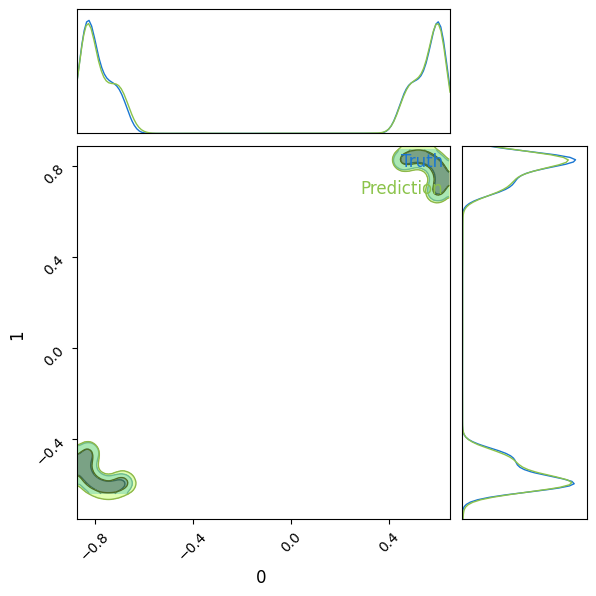
We observe that the posterior obtained after finetuning the parameters performs better than the previous one. It is thus important to play with the different hyperparameters. We here focused only on the learning rate and the number of layers but one could also modify the number of epochs, the batch size, the activation function, etc…
Neural Likelihood Estimation (NLE)
In what follows, we introduce Neural Likelihood Estimation (NLE), where rather than learning the posterior distribution, we learn the likelihood distribution \(p(x|\theta)\). The procedure is the same than NPE but we swap the target and the conditional variables. This approach requires an additional sampling step to get the posterior.
class RealNVPTrainer(TrainerModule):
def __init__(self,
n_in : int,
n_layers : int,
layers : list[int],
activation : str,
trial : Any = None,
**kwargs):
super().__init__(model_class=ConditionalRealNVP,
model_hparams={
'n_in': n_in,
'n_layers': n_layers,
'layers' : layers,
'activation' : activation
},
**kwargs)
self.trial=trial
def create_functions(self):
def loss_nll(params, batch):
thetas, xs = batch
return -jnp.mean(self.model.apply({'params': params}, xs, thetas, method='log_prob'))
def train_step(state, batch):
loss_fn = lambda params: loss_nll(params, batch)
loss, grads =jax.value_and_grad(loss_fn)(state.params)
state = state.apply_gradients(grads=grads)
metrics = {'loss': loss}
return state, metrics
def eval_step(state, batch):
loss = loss_nll(state.params, batch)
return {'loss': loss}
return train_step, eval_step
def run_model_init(self, exmp_input, init_rng):
return self.model.init(init_rng, *exmp_input, train=True, method='log_prob')
def print_tabulate(self, exmp_input):
pass
def on_validation_epoch_end(self, epoch_idx, eval_metrics, val_loader):
if self.trial:
self.trial.report(eval_metrics['val/loss'], step=epoch_idx)
if self.trial.should_prune():
raise optuna.exceptions.TrialPruned()CHECKPOINT_PATH = '~/Documents/SBI/sbi_jax/notebooks/checkpoints_tuto'
trainer = RealNVPTrainer(n_in=dim_truth, #Dimension of the conditional
n_layers=4,
layers=[128, 128],
activation = 'silu',
optimizer_hparams={'lr': 4e-3}, #Optimizer hyperparameters
logger_params={'base_log_dir': CHECKPOINT_PATH},
exmp_input=next(iter(train_loader)), #Example of the input
check_val_every_epoch=5, #Number of epochs before checking the validation.
seed=0)metrics = trainer.train_model(
train_loader, val_loader, test_loader=test_loader, num_epochs=50
)print(f'Training loss: {metrics["train/loss"]}')
print(f'Validation loss: {metrics["val/loss"]}')
print(f'Test loss: {metrics["test/loss"]}')Training loss: -4.281561374664307
Validation loss: -4.271089553833008
Test loss: -4.279826641082764model = trainer.bind_model()#Generate reference_samples from the likelihood using the simulator.
ll_reference_samples = jnp.array(simulator(torch.from_numpy(np.array(truth*jnp.ones((10000, 1))))))
key = jax.random.PRNGKey(0)
samples = model.sample(
jnp.array([truth]), num_samples=10000, key=key
)
c = ChainConsumer()
c.add_chain(ll_reference_samples, shade_alpha=0.5, name='Truth')
c.add_chain(samples, shade_alpha=0.5, name='Prediction')
fig = c.plotter.plot(figsize=2.)
plt.show()WARNING:chainconsumer:Parameter 0 in chain Truth is not constrained
WARNING:chainconsumer:Parameter 0 in chain Prediction is not constrained
WARNING:chainconsumer:Parameter 1 in chain Truth is not constrained
WARNING:chainconsumer:Parameter 1 in chain Prediction is not constrained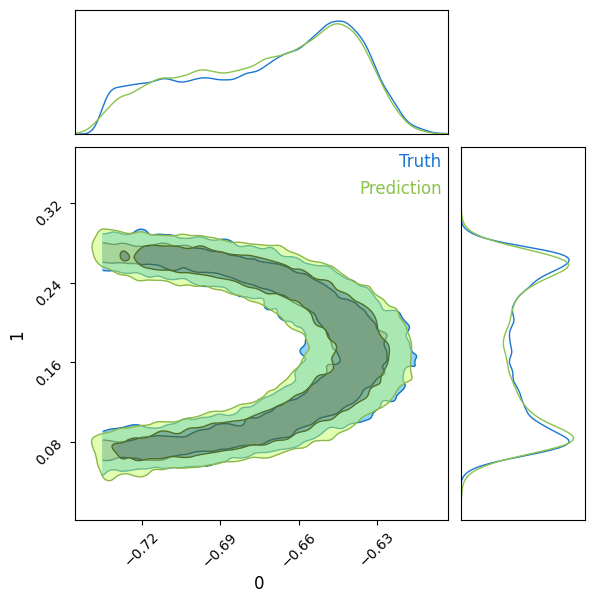
Our neural network now emulates the likelihood. We can use it to compute the log-probability of the likelihood required as input of MCMC samplers.
We can use the library emcee to perform the inference.
def log_prob(theta, observation):
log_prob = model.log_prob(observation.squeeze(), theta)
return log_prob
jit_log_prob = jax.jit(log_prob)%timeit log_prob(truth, observation)205 ms ± 9.56 ms per loop (mean ± std. dev. of 7 runs, 1 loop each)%timeit jax.jit(log_prob)(truth, observation)265 µs ± 4.46 µs per loop (mean ± std. dev. of 7 runs, 1,000 loops each)Note here that using a jitted function increases the computation time by 3 orders of magnitude! And we’re only working on CPU here.
def log_prior(theta):
theta_0, theta_1 = theta
if -1<theta_0<1 and -1<theta_1<1:
return 0
return -jnp.inf
def emcee_log_prob(theta, observation):
lp = log_prior(theta)
if not np.isfinite(lp):
return -np.inf
return np.array(jit_log_prob(theta, observation))init = 0.5 * np.random.randn(32, 2)
nwalkers, ndim = init.shape
obs_reshape = np.array(observation*jnp.ones((nwalkers, 1)))
sampler = emcee.EnsembleSampler(
nwalkers, ndim, emcee_log_prob, args=(np.array(observation),)
)
sampler.run_mcmc(init, 20000, progress=True) 0%| | 0/20000 [00:00<?, ?it/s]/local/home/sg276684/anaconda3/envs/jax_sbi/lib/python3.10/site-packages/emcee/moves/red_blue.py:99: RuntimeWarning: invalid value encountered in double_scalars
lnpdiff = f + nlp - state.log_prob[j]
100%|██████████| 20000/20000 [00:20<00:00, 952.68it/s] State([[ 0.56622794 0.82551308]
[-0.84192175 -0.5034757 ]
[-0.82220868 -0.45624213]
[ 0.61676151 0.72969069]
[ 0.47059992 0.82642351]
[-0.83317183 -0.56423802]
[ 0.59869868 0.7906957 ]
[ 0.58575111 0.79272781]
[ 0.45864529 0.81591466]
[-0.81697791 -0.47950756]
[-0.66845384 -0.59007729]
[-0.7144417 -0.62017852]
[-0.83831687 -0.53659517]
[-0.84052282 -0.49366668]
[ 0.53870593 0.83488013]
[ 0.61433664 0.72854237]
[ 0.5921339 0.69788128]
[-0.82922435 -0.43413221]
[-0.72481919 -0.61243758]
[-0.7142363 -0.59471303]
[-0.69116561 -0.58622983]
[-0.79628598 -0.59900363]
[-0.75184279 -0.60102272]
[ 0.59783747 0.75350486]
[ 0.49965496 0.84482801]
[-0.79253504 -0.59942556]
[-0.80290117 -0.44634101]
[ 0.51271022 0.85718383]
[-0.78241463 -0.58760293]
[ 0.60846291 0.78831013]
[-0.83501385 -0.47313549]
[-0.76627271 -0.60507916]], log_prob=[4.70775509 4.97314405 4.73104668 4.73969507 4.89284897 4.75011635
4.71490955 4.13007069 4.60845041 3.60200548 3.8742981 4.38855982
4.85958624 4.99538517 4.71483564 4.83753681 4.73145199 3.39710021
4.9011302 4.19383717 4.35935402 4.770257 4.09131908 3.97520733
4.81605577 4.77261639 2.2142663 3.75762129 3.47677517 4.51709175
4.9509654 4.64685345], blobs=None, random_state=('MT19937', array([ 401307294, 2869832561, 1100953011, 984858120, 819124626,
4216433764, 1217079513, 2571004889, 1937775468, 4229192987,
3117366934, 4023913729, 2224876349, 1037733731, 1877849617,
4097794022, 2888777206, 2801867606, 1847337653, 3257786341,
3915403236, 296349010, 2697518198, 2428837504, 2041654269,
1540937647, 786862571, 2392048968, 2111444988, 4162538831,
4193810116, 446413774, 3890999749, 1559918583, 608054765,
593360233, 1608513410, 4020406552, 1690425479, 729281855,
94999094, 2700065353, 128022081, 1586326358, 2964707140,
3691258882, 2070539415, 1819552995, 551607416, 729669812,
1262713227, 2981489045, 995682457, 3631207304, 2503163912,
1299511124, 2529241217, 524232495, 3948339264, 2860449319,
2199052266, 3410926426, 3716805919, 1476817820, 701371587,
3186865523, 2829084078, 847461673, 3999191664, 3743023937,
1225074919, 3716333744, 1169084732, 2771231383, 1879391151,
1674350558, 2949533880, 254615671, 347528543, 2970660783,
3780592846, 441025486, 2783372701, 2491275129, 3572533263,
3741011502, 4051643721, 2422387876, 3930271763, 3605693426,
1460980960, 3316186747, 3584744338, 2821468771, 419781923,
2384596529, 114871056, 3431077053, 2339299262, 3453168426,
796890284, 3684844906, 1759214123, 2361056664, 220562694,
3089921369, 3610076489, 222614659, 2216887993, 3624713680,
2730616488, 1831184238, 1663161234, 2740001845, 2603875585,
155837476, 1801700841, 3260753721, 437391514, 3157693830,
3914081963, 3539480052, 3764162330, 165367887, 2448929943,
951968316, 857757261, 1686257943, 3490642800, 3702069353,
449549243, 2724923231, 3480578346, 1581527750, 1310104859,
1074004854, 484566301, 1180607123, 1095209651, 2672051103,
3073970231, 4260513535, 3674794947, 1876437865, 2360485786,
2255227647, 1939783149, 3546376179, 953492400, 1821997503,
1843274526, 2330312689, 1083394287, 1180785233, 1902376221,
121346752, 2424609887, 24650974, 1302601717, 2516773478,
2566769531, 3247685019, 2542671265, 1733038171, 1994707215,
1073725213, 1277254076, 2381707317, 2561319818, 2636379025,
4226876860, 1262564262, 2390427413, 223706129, 161864118,
167658853, 2888041557, 2453749928, 3124133052, 2983273561,
2823690897, 35827733, 3740255300, 4212216613, 3100550309,
2723863342, 1306713009, 2688303917, 3492943432, 1508867566,
373932680, 3821584336, 1801846856, 3356581005, 3342636594,
2696163010, 75528858, 3833851428, 3191966632, 3073473791,
1542268073, 2799056765, 1237871979, 2447847891, 1995757291,
2991758886, 2629103938, 4135538303, 1290083075, 4239994971,
3978228692, 2999867471, 4282712226, 1671596242, 3355017398,
1151470768, 1322747714, 1700597346, 205468550, 3430376242,
3053213069, 3663751182, 2241240786, 1573526684, 3487898915,
2303140304, 2861164539, 2261065510, 2000809954, 2749328475,
2535274602, 2376253259, 3958743457, 2675395966, 2665217682,
21847847, 3291509018, 1388982129, 40401793, 3776191754,
868203609, 997319066, 1826332842, 3823711756, 2882160369,
932401068, 311570031, 2844465786, 1541126253, 2681151453,
2772823033, 1727734247, 2245424530, 3339602120, 86798457,
4014405274, 3622127658, 576315938, 4233178809, 3259723038,
4270442661, 368294178, 384668041, 3486924271, 4087892242,
824227592, 371406268, 2234406721, 385480990, 3672004994,
1496027423, 4174857394, 559818407, 2073368516, 3999627845,
3818075182, 1683755795, 1083721263, 849135481, 3968625594,
3187253219, 2428748495, 73998583, 2587981869, 1192217446,
1143401887, 1510590314, 1119963367, 3537513338, 873818406,
3367631176, 2411864789, 2731205544, 2344166740, 3306455761,
3331543791, 3923748768, 662434947, 575615710, 1449271750,
2912480063, 1901522567, 51838187, 766916992, 4038640005,
3432810830, 3498311961, 1928177229, 2691633046, 1875612951,
3948622006, 1736618505, 871314744, 3608908896, 3629509543,
3996792648, 1531878958, 2895502735, 1731752629, 1105525208,
515061749, 2444385059, 1412745039, 2125379468, 2794227887,
1319969666, 104512035, 847083452, 2349271012, 275159816,
2197329437, 2743940632, 1572005169, 1400683812, 1441233865,
4206707, 2829560799, 3707299642, 1330543273, 1032672687,
1682643733, 3736711396, 3895595038, 624532207, 1855133299,
1434736844, 2948863593, 1804460202, 1821967073, 2736501683,
27802131, 3748091886, 454517351, 1057246458, 1268385809,
425871186, 1543371953, 1324945223, 3986745564, 2146331573,
3606136579, 2459732557, 3678905835, 960288332, 3329504517,
1005067557, 368489998, 2551982361, 710126232, 416199301,
2625619342, 2245001745, 2947667069, 1202347260, 1137364748,
4124107112, 2911177902, 3628540322, 3797089405, 692846116,
2636614037, 4066788286, 4268143476, 3513176299, 864136418,
4035789188, 4237683398, 818693750, 2341798407, 4244055102,
2615049581, 1942742124, 4198114046, 2063241084, 3469414106,
1874874206, 516107175, 1056667027, 1877316294, 1387922277,
3600386880, 1331122776, 2254610348, 3574971467, 1634227872,
797258556, 4145326246, 116347817, 1082481177, 2348760919,
2529455213, 3440730394, 2143238804, 2575959600, 2915847518,
3394930921, 450022458, 1313875750, 2038162824, 1334269001,
3061131644, 3153158868, 3565092207, 2671933999, 2308695471,
2163877413, 1264793960, 2289422479, 1626115198, 676572955,
2575425973, 1619438452, 4134983290, 1471151524, 115838085,
3295015917, 1996472928, 1891274454, 733930476, 829642401,
3354706783, 3788961261, 3141102331, 212489608, 1723252486,
716707665, 38332807, 2859511470, 1720670907, 670364875,
70538163, 2403181425, 2662982678, 4175685836, 30937812,
1926230459, 2480046946, 3340825969, 3558088084, 910983498,
514062255, 1184686789, 3714713044, 3342211412, 3030396376,
210502542, 104279655, 66740659, 2825176654, 3480244460,
3143951230, 2915761184, 524931518, 163646306, 609423850,
3425112993, 3117588456, 2535735257, 1052717201, 2386707047,
3716474300, 3664717913, 1157465304, 2548221865, 3050815250,
3215492900, 2140218676, 1989535649, 2821665217, 1273236232,
1542826021, 2682880574, 4078489838, 577870605, 2985987148,
1449709564, 1660492709, 1197534091, 1412445456, 445135009,
4013427719, 315565665, 198846610, 1502177629, 1226723224,
2090871902, 1403110473, 768073799, 2963129292, 3440829222,
2842046942, 1767260455, 270046953, 88505730, 1755091719,
3250314190, 3714683037, 2516765231, 3165230892, 1055019742,
4131350745, 1512546080, 4180440846, 566111599, 511965141,
3482797233, 2039721443, 791018476, 1898909141, 2289693506,
3986375562, 2593232305, 1485059465, 1009016683, 2590779274,
2544630069, 1098137501, 2185252362, 634943306, 1498165175,
4200071233, 2090438725, 921114626, 248506469, 3529713447,
3353934948, 2483289700, 2228325352, 1568545464, 1339185094,
2353301638, 3188445352, 2727720700, 1556129184, 1647749987,
4268859458, 3772702155, 1241239047, 1553031245, 3145262468,
2524245673, 1211150448, 1925850148, 2976225651, 3303354892,
2611098643, 3752425309, 1758134673, 1781628855, 3357744256,
2510306084, 2382812485, 2099857295, 379959414, 2231048648,
2545031345, 1696181403, 2397073563, 2094873262, 1674900063,
2674072058, 1827208292, 749924647, 3048787901, 1772463442,
201085803, 1128928750, 3013414117, 3034775991, 1338400275,
1672453590, 3245035714, 2111038218, 2741110497, 719905023,
2654207888, 1486216971, 3072319702, 1740833281, 706422124,
2485088457, 3395107174, 2245982623, 3135394201, 3640110005,
339910595, 153759273, 1242451883, 1552596120, 1636040987,
3883258589, 719799817, 2738331449, 3910691070, 1721588432,
3381218178, 4200167340, 2118347360, 1706950057, 4173614819,
43900807, 2890437061, 2547637325, 1429639400], dtype=uint32), 527, 0, 0.0))fig, axes = plt.subplots(2, figsize=(10, 7), sharex=True)
samples = sampler.get_chain()
labels = ["theta_0", "theta_1"]
for i in range(ndim):
ax = axes[i]
ax.plot(samples[:, :, i], "k", alpha=0.3)
ax.set_xlim(0, len(samples))
ax.set_ylabel(labels[i])
ax.yaxis.set_label_coords(-0.1, 0.5)
axes[-1].set_xlabel("step number");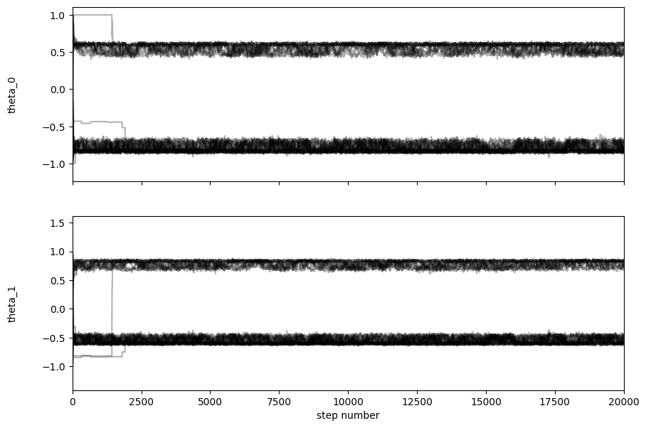
flat_samples = sampler.get_chain(discard=5000, thin=50, flat=True)
print(flat_samples.shape)(9600, 2)c = ChainConsumer()
c.add_chain(reference_samples, shade_alpha=0.5, name='Truth')
c.add_chain(flat_samples, shade_alpha=0.5, name='Prediction')
fig = c.plotter.plot(figsize=2.)
plt.show()WARNING:chainconsumer:Parameter 0 in chain Truth is not constrained
WARNING:chainconsumer:Parameter 0 in chain Prediction is not constrained
WARNING:chainconsumer:Parameter 1 in chain Truth is not constrained
WARNING:chainconsumer:Parameter 1 in chain Prediction is not constrained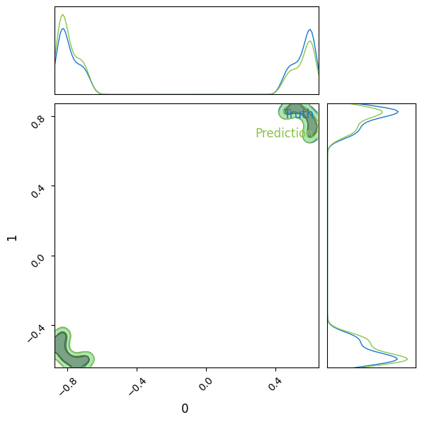
We sse here than one of the drawback of the sampling step is that the quality of the samples depend on the sampler. Here emcee is bad at estimating such a bimodal distribution because the number of chains falling in each potential well is not the same.
We can tackle this issue using e.g flowMC.
n_chains = 32
rng_key_set = initialize_rng_keys(n_chains, seed=42)
initial_position = jax.random.normal(rng_key_set[0], (n_chains, dim_truth))*1
model = MaskedCouplingRQSpline(dim_truth, 3, [64, 64], 8, jax.random.PRNGKey(21))
step_size=1e-1
local_sampler = MALA(jit_log_prob, True, {"step_size": step_size})
nf_sampler = Sampler(
dim_truth,
rng_key_set,
jnp.arange(dim_truth),
local_sampler,
model,
n_local_steps=100,
n_global_steps=100,
n_epochs=30,
learning_rate=1e-2,
batch_size=1000,
n_chains = n_chains
)
nf_sampler.sample(initial_position, observation)
chains, log_probabilities, local_accs, global_accs = nf_sampler.get_sampler_state().values()No autotune found, use input sampler_params
Training normalizing flowTuning global sampler: 0%| | 0/3 [00:00<?, ?it/s]Compiling MALA bodyTuning global sampler: 100%|██████████| 3/3 [00:43<00:00, 14.36s/it]Starting Production runProduction run: 100%|██████████| 3/3 [00:00<00:00, 6.91it/s]fig, axes = plt.subplots(2, figsize=(10, 7), sharex=True)
samples = chains.reshape(-1, n_chains, dim_truth)
labels = ["theta_0", "theta_1"]
for i in range(ndim):
ax = axes[i]
ax.plot(samples[:, :, i], "k", alpha=0.3)
ax.set_xlim(0, len(samples))
ax.set_ylabel(labels[i])
ax.yaxis.set_label_coords(-0.1, 0.5)
axes[-1].set_xlabel("step number");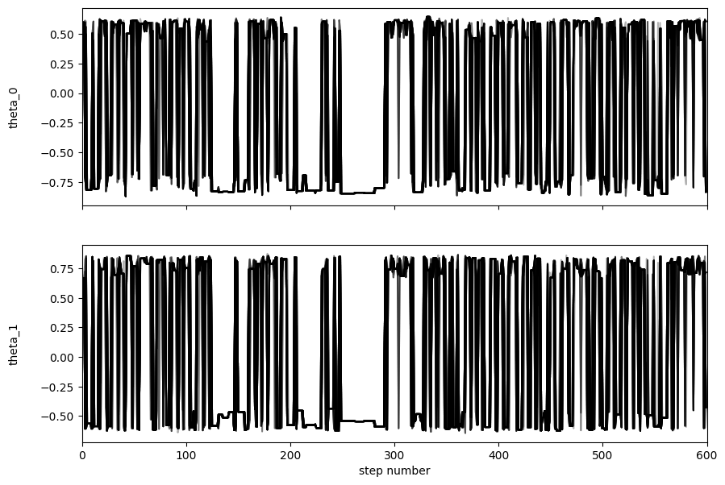
samples = chains.reshape(-1, 2)
c = ChainConsumer()
c.add_chain(reference_samples, shade_alpha=0.5, name='Truth')
c.add_chain(samples, shade_alpha=0.5, name='Prediction')
fig = c.plotter.plot(figsize=2.)
plt.show()WARNING:chainconsumer:Parameter 0 in chain Truth is not constrained
WARNING:chainconsumer:Parameter 0 in chain Prediction is not constrained
WARNING:chainconsumer:Parameter 1 in chain Truth is not constrained
WARNING:chainconsumer:Parameter 1 in chain Prediction is not constrained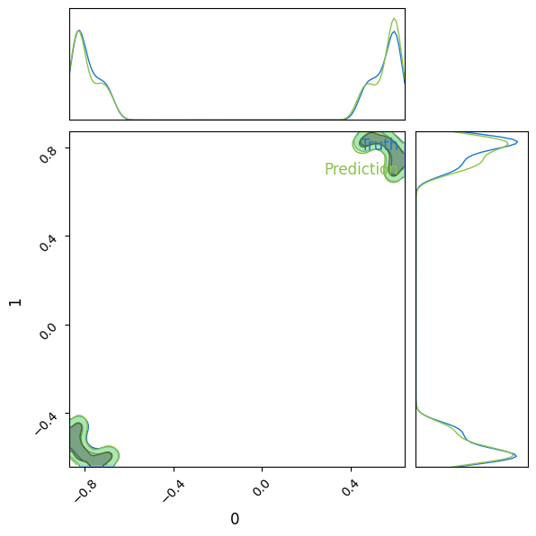
Validation - test of statistical coverage
An important step of the Implicit Likelihood Inference pipeline is the validation of the model if one wants to convince the community that the estimated posterior is valid. Let’s first give some definitions.
The Highest Posterior Density interval is a region in the parameter space that contains the most probable values for a given credibility level \(\alpha\). This is the shortest interval that contains the specified credibility level of the posterior distribution.
Nominal covergae is the probability of the proportion of the parameter space, that the HPD interval is intended to contain. If the nominal coverage is 0.95, the HPD interval should contain the true parameter value 95% of the time.
Empirical coverage is the proportion of true parameter values that actually fall within the HPD interval based on results of simulations
We will thus use our test set to perform such test. Let’s load our previously trained NPE.
CHECKPOINT_PATH = '/local/home/sg276684/Documents/SBI/sbi_jax/notebooks/checkpoints_tuto/optuna'
trainer = RealNVPTrainer.load_from_checkpoints(os.path.join(CHECKPOINT_PATH, 'ConditionalRealNVP/version_13/'),
exmp_input=next(iter(train_loader)))
test_metrics = trainer.eval_model(test_loader)
print(f'Test accuracy: {test_metrics["loss"]:.2f}')
model = trainer.bind_model()/local/home/sg276684/anaconda3/envs/jaxili/lib/python3.10/multiprocessing/popen_fork.py:66: RuntimeWarning: os.fork() was called. os.fork() is incompatible with multithreaded code, and JAX is multithreaded, so this will likely lead to a deadlock.
self.pid = os.fork()
/local/home/sg276684/anaconda3/envs/jaxili/lib/python3.10/multiprocessing/popen_fork.py:66: RuntimeWarning: os.fork() was called. os.fork() is incompatible with multithreaded code, and JAX is multithreaded, so this will likely lead to a deadlock.
self.pid = os.fork()
/local/home/sg276684/anaconda3/envs/jaxili/lib/python3.10/multiprocessing/popen_fork.py:66: RuntimeWarning: os.fork() was called. os.fork() is incompatible with multithreaded code, and JAX is multithreaded, so this will likely lead to a deadlock.
self.pid = os.fork()Test accuracy: -3.64We can have a first visual on the posterior and the truth value for samples in our test set.
key = jax.random.PRNGKey(0)
fig, ax = plt.subplots(5, 5, figsize=(12, 12))
ax = ax.flatten()
for i in range(25):
key, subkey = jax.random.split(key)
theta, obs = test_set.__getitem__(i)
samples = model.sample(jnp.array([obs]), num_samples=10000, key=subkey)
c = ChainConsumer()
c.add_chain(samples, shade_alpha=0.5, parameters=["\theta_0", "\theta_1"])
c.configure(statistics="cumulative", sigma2d=[1, 2])
c.plotter.plot_contour(ax[i], parameter_x="\theta_0", parameter_y="\theta_1")
ax[i].scatter(theta[0], theta[1], c='r', s=10, marker='x')
fig.tight_layout()
plt.show()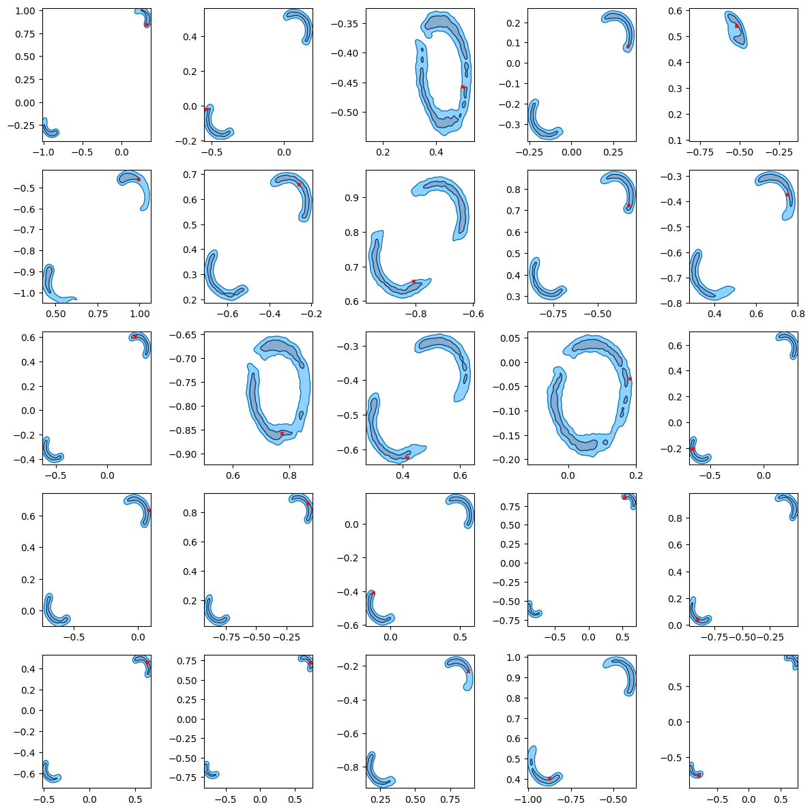
The following function compute the Highest Posterior Density interval empirically from a set of samples drawn from the estimated posterior using a normalizing flow.
#Compute the Highest Posterior Density (HPD) interval
def hpd(samples, credible_mass=0.95):
sorted_samples = np.sort(samples)
interval_idx_inc = int(np.floor(credible_mass * len(sorted_samples)))
n_intervals = sorted_samples.shape[0]- interval_idx_inc
interval_width = np.zeros(n_intervals)
for i in range(n_intervals):
interval_width[i] = sorted_samples[i + interval_idx_inc] - sorted_samples[i]
hdi_min = sorted_samples[np.argmin(interval_width)]
hdi_max = sorted_samples[np.argmin(interval_width) + interval_idx_inc]
return hdi_min, hdi_maxWe can compute those intervals for each sample in the test set and check whether the true value of the parameter falls inside the error bar.
#Generate samples
n_test = 1000
n_samples = 5000
random_index = np.random.permutation(test_set_size)[:n_test]
samples = jnp.array([jnp.zeros((n_samples, 2))])
key = jax.random.PRNGKey(0)
progress_bar = tqdm(total=n_test, desc="Samples from test case", unit="tests")
for index in random_index:
progress_bar.update(1)
theta, obs = test_set.__getitem__(index)
key, subkey = jax.random.split(key)
samples_i = model.sample(jnp.array([obs]), num_samples=n_samples, key=subkey)
samples_i = jnp.reshape(samples_i, (1, -1, 2))
samples = jnp.vstack([samples, samples_i])
samples = np.array(samples[1:])
print(samples.shape)
params_test = np.array([test_set.__getitem__(index)[0] for index in random_index])
print(params_test.shape)Parameter 1: 100%|██████████| 200/200 [00:31<00:00, 6.43tests/s] ]
Parameter 0: 6%|▌ | 12/200 [10:29<2:44:24, 52.47s/tests].90tests/s]
Samples from test case: 100%|██████████| 1000/1000 [03:37<00:00, 3.71tests/s](1000, 5000, 2)
(1000, 2)p_nominals = np.linspace(0.01, 0.99, 50)
contains_true = np.zeros((dim_truth, n_test, len(p_nominals)))
for i_param in range(dim_truth): #Iterate on the number of parameters
progress_bar = tqdm(total=n_test, desc=f"Parameter {i_param}", unit="tests")
for i, sample in enumerate(samples[:,:,i_param]):
for j, p_nominal in enumerate(p_nominals):
hdi_min, hdi_max = hpd(sample, credible_mass=p_nominal)
if hdi_min < params_test[i, i_param] < hdi_max:
contains_true[i_param, i, j] = 1
progress_bar.update(1)Samples from test case: 100%|██████████| 1000/1000 [03:38<00:00, 4.58tests/s]
Parameter 0: 100%|██████████| 1000/1000 [00:49<00:00, 20.39tests/s]
Parameter 1: 100%|█████████▉| 998/1000 [00:48<00:00, 20.46tests/s]We can finally plot the coverage for each parameter.
fig, ax = plt.subplots(1, dim_truth, figsize=(15, 5))
ax[0].plot(p_nominals, contains_true[0].sum(0) / n_test)
ax[0].text(0.1, 0.8, "Conservative")
ax[0].text(0.6, 0.1, "Overconfident")
ax[0].plot([0, 1], [0, 1], color="black", linestyle="--")
ax[0].set_xlabel("Nominal coverage")
ax[0].set_ylabel("Expected coverage")
ax[0].set_title("Coverage for theta_0")
ax[1].plot(p_nominals, contains_true[1].sum(0) / n_test)
ax[1].text(0.1, 0.8, "Conservative")
ax[1].text(0.6, 0.1, "Overconfident")
ax[1].plot([0, 1], [0, 1], color="black", linestyle="--")
ax[1].set_xlabel("Nominal coverage")
ax[1].set_ylabel("Expected coverage")
ax[1].set_title("Coverage for theta_1")Text(0.5, 1.0, 'Coverage for theta_1')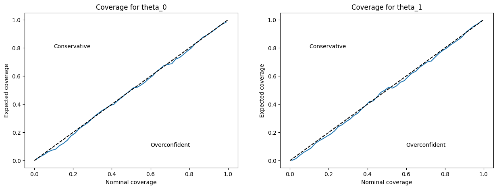
A perfectly calibrated Neural Density Estimator should have equal empirical and nominal coverage for all credibility levels. We see above that our neural network does not perform bad. It tends however to be overconfident on the confidance regions. It is possible to train the NN in such a way that our posterior density estimation is always conservative by adding a renormalization term to the loss. (See Falkiewicz et al. 2023)
CHECKPOINT_PATH = '/local/home/sg276684/Documents/SBI/sbi_jax/notebooks/checkpoints/'
trainer = RealNVPTrainer.load_from_checkpoints(os.path.join(CHECKPOINT_PATH, 'ConditionalRealNVP/version_20/'),
exmp_input=next(iter(train_loader)))
test_metrics = trainer.eval_model(test_loader)
print(f'Test accuracy: {test_metrics["loss"]:.2f}')
model = trainer.bind_model()/local/home/sg276684/anaconda3/envs/jaxili/lib/python3.10/multiprocessing/popen_fork.py:66: RuntimeWarning: os.fork() was called. os.fork() is incompatible with multithreaded code, and JAX is multithreaded, so this will likely lead to a deadlock.
self.pid = os.fork()
/local/home/sg276684/anaconda3/envs/jaxili/lib/python3.10/multiprocessing/popen_fork.py:66: RuntimeWarning: os.fork() was called. os.fork() is incompatible with multithreaded code, and JAX is multithreaded, so this will likely lead to a deadlock.
self.pid = os.fork()Test accuracy: -3.23#Generate samples
n_test = 1000
n_samples = 5000
random_index = np.random.permutation(test_set_size)[:n_test]
samples = jnp.array([jnp.zeros((n_samples, 2))])
key = jax.random.PRNGKey(0)
progress_bar = tqdm(total=n_test, desc="Samples from test case", unit="tests")
for index in random_index:
progress_bar.update(1)
theta, obs = test_set.__getitem__(index)
key, subkey = jax.random.split(key)
samples_i = model.sample(jnp.array([obs]), num_samples=n_samples, key=subkey)
samples_i = jnp.reshape(samples_i, (1, -1, 2))
samples = jnp.vstack([samples, samples_i])
samples = np.array(samples[1:])
print(samples.shape)
params_test = np.array([test_set.__getitem__(index)[0] for index in random_index])
print(params_test.shape)
p_nominals = np.linspace(0.01, 0.99, 50)
contains_true_2 = np.zeros((dim_truth, n_test, len(p_nominals)))
for i_param in range(dim_truth): #Iterate on the number of parameters
progress_bar = tqdm(total=n_test, desc=f"Parameter {i_param}", unit="tests")
for i, sample in enumerate(samples[:,:,i_param]):
for j, p_nominal in enumerate(p_nominals):
hdi_min, hdi_max = hpd(sample, credible_mass=p_nominal)
if hdi_min < params_test[i, i_param] < hdi_max:
contains_true_2[i_param, i, j] = 1
progress_bar.update(1)Parameter 1: 100%|██████████| 1000/1000 [07:19<00:00, 2.27tests/s](1000, 5000, 2)
(1000, 2)Samples from test case: 100%|██████████| 1000/1000 [02:18<00:00, 7.23tests/s]
Parameter 0: 100%|██████████| 1000/1000 [00:47<00:00, 20.87tests/s]fig, ax = plt.subplots(1, dim_truth, figsize=(15, 5))
ax[0].plot(p_nominals, contains_true[0].sum(0) / n_test)
ax[0].plot(p_nominals, contains_true_2[0].sum(0) / n_test)
ax[0].text(0.1, 0.8, "Conservative")
ax[0].text(0.6, 0.1, "Overconfident")
ax[0].plot([0, 1], [0, 1], color="black", linestyle="--")
ax[0].set_xlabel("Nominal coverage")
ax[0].set_ylabel("Expected coverage")
ax[0].set_title("Coverage for theta_0")
ax[1].plot(p_nominals, contains_true[1].sum(0) / n_test)
ax[1].plot(p_nominals, contains_true_2[1].sum(0) / n_test)
ax[1].text(0.1, 0.8, "Conservative")
ax[1].text(0.6, 0.1, "Overconfident")
ax[1].plot([0, 1], [0, 1], color="black", linestyle="--")
ax[1].set_xlabel("Nominal coverage")
ax[1].set_ylabel("Expected coverage")
ax[1].set_title("Coverage for theta_1")Text(0.5, 1.0, 'Coverage for theta_1')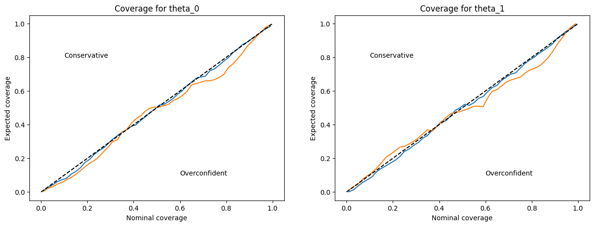
We can here compare two neural network trained with different hyperparameters and compare their coverage. The network trained with optimized hyperparameters is less subject to overconfidence than the other.
Validation coverage in a more realistic case
#Generate data of Gaussian Linear problem in sbibm
task = sbibm.get_task('gaussian_linear')
prior = task.get_prior()
simulator = task.get_simulator()
reference_samples = jnp.array(task.get_reference_posterior_samples(num_observation=1))
observation = jnp.array(task.get_observation(num_observation=1))
truth = jnp.array(task.get_true_parameters(num_observation=1).flatten())
dim_truth = truth.shape[0]
dim_obs= observation.shape[1]
print(dim_truth, dim_obs)
class SimulationDataset(data.Dataset):
def __init__(self, num_points):
super().__init__()
self.thetas = prior(num_samples=num_points)
self.xs = simulator(self.thetas)
self.thetas, self.xs = np.array(self.thetas), np.array(self.xs)
def __len__(self):
return len(self.thetas)
def __getitem__(self, idx):
return self.thetas[idx], self.xs[idx]
train_set_size = 20000
val_set_size = 2000
test_set_size = 5000
train_set = SimulationDataset(train_set_size)
val_set = SimulationDataset(val_set_size)
test_set = SimulationDataset(test_set_size)
train_loader, val_loader, test_loader = create_data_loader(
train_set, val_set, test_set,
train=[True, False, False],
batch_size=128
)/local/home/sg276684/anaconda3/envs/jaxili/lib/python3.10/multiprocessing/popen_fork.py:66: RuntimeWarning: os.fork() was called. os.fork() is incompatible with multithreaded code, and JAX is multithreaded, so this will likely lead to a deadlock.
self.pid = os.fork()10 10#Create the Trainer
class RealNVPTrainer(TrainerModule):
def __init__(self,
n_in : int,
n_layers : int,
layers : list[int],
activation : str,
trial : Any = None,
**kwargs):
super().__init__(model_class=ConditionalRealNVP,
model_hparams={
'n_in': n_in,
'n_layers': n_layers,
'layers' : layers,
'activation' : activation
},
**kwargs)
self.trial=trial
def create_functions(self): #Create the train_step and eval_step functions. This function is not implemented in the TrainerModule class.
def loss_nll(params, batch):
thetas, xs = batch
return -jnp.mean(self.model.apply({'params': params}, thetas, xs, method='log_prob'))
def train_step(state, batch):
loss_fn = lambda params: loss_nll(params, batch)
loss, grads =jax.value_and_grad(loss_fn)(state.params)
state = state.apply_gradients(grads=grads)
metrics = {'loss': loss}
return state, metrics
def eval_step(state, batch):
loss = loss_nll(state.params, batch)
return {'loss': loss}
return train_step, eval_step
def run_model_init(self, exmp_input, init_rng):
return self.model.init(init_rng, *exmp_input, train=True, method='log_prob')
def print_tabulate(self, exmp_input):
pass
def on_validation_epoch_end(self, epoch_idx, eval_metrics, val_loader):
if self.trial:
self.trial.report(eval_metrics['val/loss'], step=epoch_idx)
if self.trial.should_prune():
raise optuna.exceptions.TrialPruned()CHECKPOINT_PATH = '~/Documents/SBI/sbi_jax/notebooks/checkpoints_tuto' #Specify the path where the checkpoints will be saved
trainer = RealNVPTrainer(n_in=dim_obs, #Dimension of the conditional
n_layers=4,
layers=[128, 128],
activation = 'silu',
optimizer_hparams={'lr': 4e-3}, #Optimizer hyperparameters
logger_params={'base_log_dir': CHECKPOINT_PATH},
exmp_input=next(iter(train_loader)), #Example of the input
check_val_every_epoch=1, #Number of epochs before checking the validation.
seed=0)/local/home/sg276684/anaconda3/envs/jaxili/lib/python3.10/multiprocessing/popen_fork.py:66: RuntimeWarning: os.fork() was called. os.fork() is incompatible with multithreaded code, and JAX is multithreaded, so this will likely lead to a deadlock.
self.pid = os.fork()metrics = trainer.train_model(
train_loader, val_loader, test_loader=test_loader, num_epochs=50
)/local/home/sg276684/anaconda3/envs/jaxili/lib/python3.10/multiprocessing/popen_fork.py:66: RuntimeWarning: os.fork() was called. os.fork() is incompatible with multithreaded code, and JAX is multithreaded, so this will likely lead to a deadlock.
self.pid = os.fork()
/local/home/sg276684/anaconda3/envs/jaxili/lib/python3.10/multiprocessing/popen_fork.py:66: RuntimeWarning: os.fork() was called. os.fork() is incompatible with multithreaded code, and JAX is multithreaded, so this will likely lead to a deadlock.
self.pid = os.fork()/local/home/sg276684/anaconda3/envs/jaxili/lib/python3.10/multiprocessing/popen_fork.py:66: RuntimeWarning: os.fork() was called. os.fork() is incompatible with multithreaded code, and JAX is multithreaded, so this will likely lead to a deadlock.
self.pid = os.fork()
/local/home/sg276684/anaconda3/envs/jaxili/lib/python3.10/multiprocessing/popen_fork.py:66: RuntimeWarning: os.fork() was called. os.fork() is incompatible with multithreaded code, and JAX is multithreaded, so this will likely lead to a deadlock.
self.pid = os.fork()print(f'Training loss: {metrics["train/loss"]}')
print(f'Validation loss: {metrics["val/loss"]}')
print(f'Test loss: {metrics["test/loss"]}')Training loss: -0.9029706716537476
Validation loss: -0.713907778263092
Test loss: -0.6707939505577087model = trainer.bind_model() #Freeze the network after training
key = jax.random.PRNGKey(42) #let's get our samples
samples = model.apply({'params': trainer.state.params}, observation, num_samples=10000, key=key, method='sample')c = ChainConsumer()
c.add_chain(reference_samples, shade_alpha = 0.5, name='Truth')
c.add_chain(samples, shade_alpha = 0.5, name="Prediction")
fig = c.plotter.plot(figsize=1., truth=np.array(truth))
plt.show()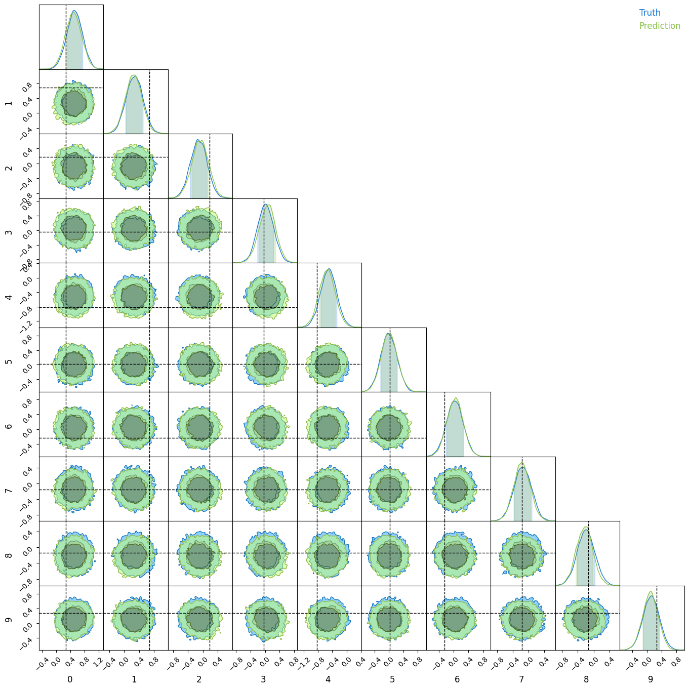
#Generate samples
n_test = 1000
n_samples = 5000
random_index = np.random.permutation(test_set_size)[:n_test]
samples = jnp.array([jnp.zeros((n_samples, dim_truth))])
key = jax.random.PRNGKey(0)
progress_bar = tqdm(total=n_test, desc="Samples from test case", unit="tests")
for index in random_index:
progress_bar.update(1)
theta, obs = test_set.__getitem__(index)
key, subkey = jax.random.split(key)
samples_i = model.sample(jnp.array([obs]), num_samples=n_samples, key=subkey)
samples_i = jnp.reshape(samples_i, (1, -1, dim_truth))
samples = jnp.vstack([samples, samples_i])
progress_bar.close()
samples = np.array(samples[1:])
print(samples.shape)
params_test = np.array([test_set.__getitem__(index)[0] for index in random_index])
print(params_test.shape)
p_nominals = np.linspace(0.01, 0.99, 50)
contains_true = np.zeros((dim_truth, n_test, len(p_nominals)))
for i_param in range(dim_truth): #Iterate on the number of parameters
progress_bar = tqdm(total=n_test, desc=f"Parameter {i_param}", unit="tests")
for i, sample in enumerate(samples[:,:,i_param]):
for j, p_nominal in enumerate(p_nominals):
hdi_min, hdi_max = hpd(sample, credible_mass=p_nominal)
if hdi_min < params_test[i, i_param] < hdi_max:
contains_true[i_param, i, j] = 1
progress_bar.update(1)
progress_bar.close()Samples from test case: 4%|▍ | 38/1000 [00:05<02:09, 7.45tests/s]
Samples from test case: 100%|██████████| 1000/1000 [03:06<00:00, 5.35tests/s](1000, 5000, 10)
(1000, 10)Parameter 0: 100%|██████████| 1000/1000 [00:46<00:00, 21.69tests/s]
Parameter 1: 100%|██████████| 1000/1000 [00:45<00:00, 21.96tests/s]
Parameter 2: 100%|██████████| 1000/1000 [00:45<00:00, 21.85tests/s]
Parameter 3: 100%|██████████| 1000/1000 [00:45<00:00, 21.96tests/s]
Parameter 4: 100%|██████████| 1000/1000 [00:45<00:00, 21.84tests/s]
Parameter 5: 100%|██████████| 1000/1000 [00:45<00:00, 21.99tests/s]
Parameter 6: 100%|██████████| 1000/1000 [00:45<00:00, 21.88tests/s]
Parameter 7: 100%|██████████| 1000/1000 [00:45<00:00, 22.07tests/s]
Parameter 8: 100%|██████████| 1000/1000 [00:45<00:00, 21.94tests/s]
Parameter 9: 100%|██████████| 1000/1000 [00:45<00:00, 21.82tests/s]fig, ax = plt.subplots(dim_truth, 1, figsize=(5, 20))
for i in range(dim_truth):
ax[i].plot(p_nominals, contains_true[i].sum(0) / n_test)
ax[i].text(0.1, 0.8, "Conservative")
ax[i].text(0.6, 0.1, "Overconfident")
ax[i].plot([0, 1], [0, 1], color="black", linestyle="--")
ax[i].set_xlabel("Nominal coverage")
ax[i].set_ylabel("Expected coverage")
ax[i].set_title(f"Coverage for theta_{i}")
fig.tight_layout()Samples from test case: 4%|▎ | 37/1000 [33:23<14:29:04, 54.15s/tests]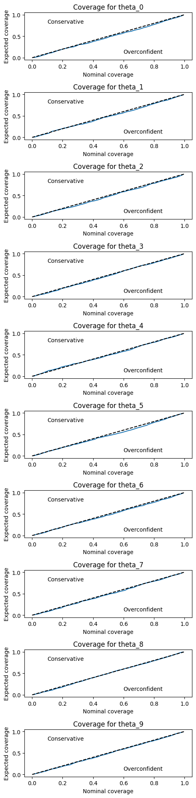
Application: Implicit Likelihood Inference with the power spectrum.
The goal of this section is to show a concrete application of Implicit Likelihood Inference on the power spectrum summary statistics used in cosmology. We used sbi_lens and jax_cosmo to generate power spectra given cosmological parameters. We will first show perform an ABC approach before using Neural Density Estimation to get the posterior of the parameters.
import scipy
import jax_cosmo as jc
from jax.tree_util import register_pytree_node_class
import warnings
warnings.filterwarnings('ignore')Data generation
We first generate data using LSSTY10 settings.
#LSST year 10 settings
N = 256
map_size = 10
sigma_e = 0.26
gals_per_arcmin2 = 27
nbins = 5
a = 2
b = 0.68
z0 = 0.11@register_pytree_node_class
class photoz_bin(jc.redshift.redshift_distribution):
"""Defines a smail distribution with these arguments
Parameters:
-----------
parent_pz:
zphot_min:
zphot_max:
zphot_sig: coefficient in front of (1+z)
"""
def pz_fn(self, z):
parent_pz, zphot_min, zphot_max, zphot_sig = self.params
p = parent_pz(z)
# Apply photo-z errors
x = 1.0 / (jnp.sqrt(2.0) * zphot_sig * (1.0 + z))
res = (
0.5
* p
* (
jax.scipy.special.erf((zphot_max - z) * x)
- jax.scipy.special.erf((zphot_min - z) * x)
)
)
return res
@property
def gals_per_arcmin2(self):
parent_pz, zphot_min, zphot_max, zphot_sig = self.params
return parent_pz._gals_per_arcmin2 * jc.scipy.integrate.simps(
lambda t: parent_pz(t), zphot_min, zphot_max, 256
)
@property
def gals_per_steradian(self):
"""Returns the number density of galaxies in steradian"""
return self.gals_per_arcmin2 * jc.redshift.steradian_to_arcmin2nz = jc.redshift.smail_nz(a, b, z0, gals_per_arcmin2=gals_per_arcmin2)
bins_lim = [0.0, 0.45350614, 0.7223837, 1.0420105, 1.5392338, 10.0]
sig_photoz = 0.05
nzbins = [
photoz_bin(nz, bins_lim[i], bins_lim[i+1], sig_photoz) for i in range(nbins)
]z = np.linspace(0, 5, 256)
for i, bin in enumerate(nzbins):
plt.plot(z, bin(z)/nbins, label=f'Bin {i+1}')
plt.xlabel('Redshift $z$')
plt.ylabel("Number density $n(z)$")
plt.plot(z, nz(z), c='k', label='True distribution', linestyle='--')
plt.legend()
plt.show()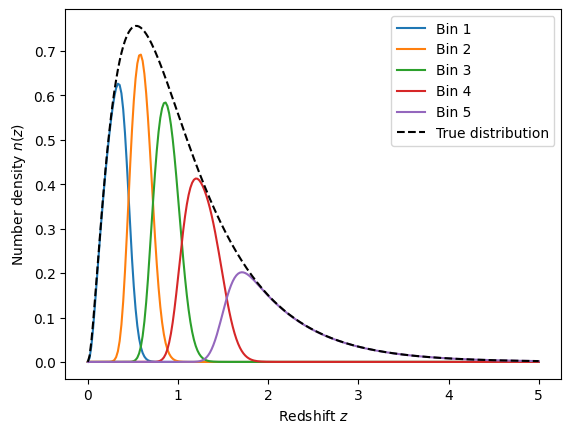
def ps_from_theory(
sigma_e,
nzbins,
cosmo_params,
ell,
with_noise=True,
):
omega_c, omega_b, h_0, sigma_8, n_s, w_0 = cosmo_params
cosmo = jc.Planck15(
Omega_c=omega_c,
Omega_b=omega_b,
h=h_0,
sigma8=sigma_8,
n_s=n_s,
w0=w_0,
)
tracer = jc.probes.WeakLensing(nzbins, sigma_e=sigma_e)
celltheory = jc.angular_cl.angular_cl(cosmo, ell, [tracer])
cellnoise = jc.angular_cl.noise_cl(ell, [tracer])
return jnp.where(with_noise, celltheory + cellnoise, celltheory)
jitted_ps_from_theory = jax.jit(ps_from_theory)
#Cosmo: Omega_c, Omega_b, h, sigma8, n_s, w0
cosmo_params = [0.3, 0.05, 0.7, 0.8, 0.96, -1.0]
ell = np.logspace(1, 3)
# compute the power spectrum of the mass map
ps = ps_from_theory(
sigma_e,
nzbins,
cosmo_params,
ell,
with_noise=True,
)
cosmo_params_2 = [0.2, 0.05, 0.7, 0.9, 0.96, -1.0]
ps_2 = ps_from_theory(
sigma_e,
nzbins,
cosmo_params_2,
ell,
with_noise=True,
)%timeit ps_from_theory(sigma_e, nzbins, cosmo_params, ell, with_noise=True)
%timeit jax.jit(ps_from_theory)(sigma_e, nzbins, cosmo_params, ell, with_noise=True)4.69 s ± 210 ms per loop (mean ± std. dev. of 7 runs, 1 loop each)
99.3 ms ± 2.32 ms per loop (mean ± std. dev. of 7 runs, 1 loop each)Note, here again, how jitted functions are useful to accelerate computations.
fig = plt.figure(figsize=(15, 15))
plt.suptitle('Power spectrum with tomographic bins')
add_index = [0, 3, 5, 6, 6]
for i in range(5):
for j in range(i, 5):
ax = plt.subplot2grid((5, 5), (i,j))
ax.plot(ell, ps[i+j+add_index[i]], label=f'Bin {i+1} - Bin {j+1}')
ax.plot(ell, ps_2[i+j+add_index[i]], label=f'Bin {i+1} - Bin {j+1} (2)')
ax.set_xscale('log')
ax.set_yscale('log')
ax.set_xlabel('$\ell$')
ax.set_ylabel('$C_{\ell}$')
ax.legend(loc="lower left")
fig.tight_layout()
plt.show()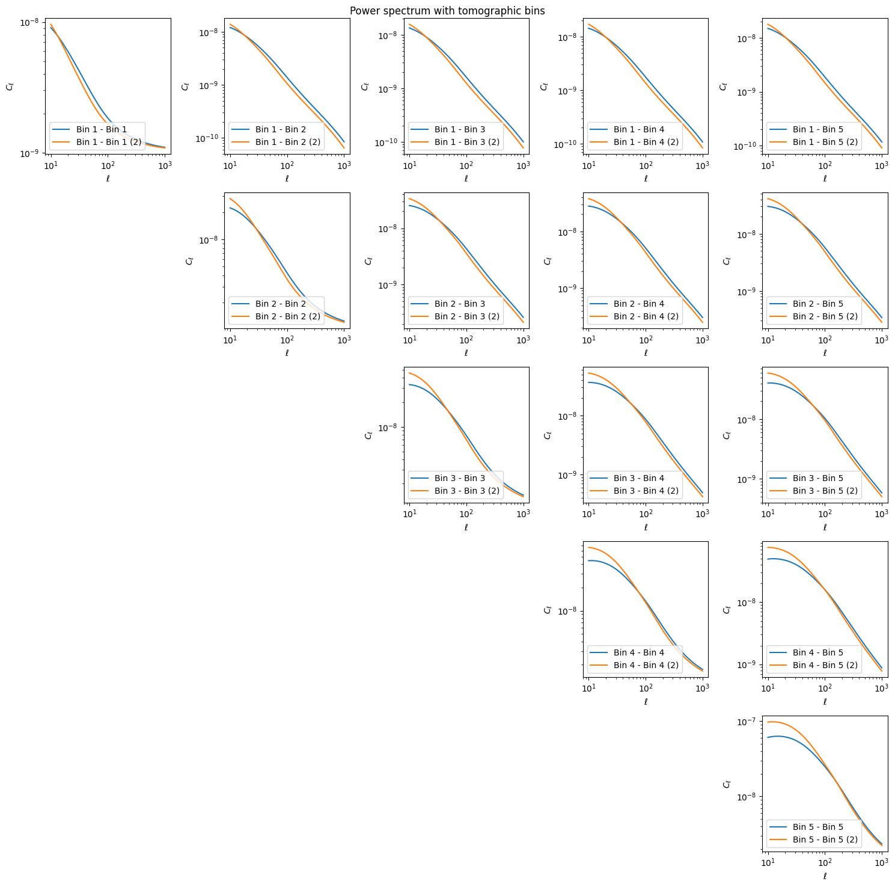
dim_param = 2
dim_obs = 10
#Generate data
class PowerSpectrumDataset(data.Dataset):
def __init__(self, num_points):
super().__init__()
self.thetas = scipy.stats.qmc.LatinHypercube(d=dim_param).random(num_points)
#Define lower bounds and upper bounds of the prior
l_bounds = [0, 0.3]
u_bounds = [1, 1.1]
self.thetas = scipy.stats.qmc.scale(self.thetas, l_bounds, u_bounds)
self.xs = []
omega_b, h, ns, w0 = 0.05, 0.7, 0.96, -1.0
for th in self.thetas:
omega_c, sigma8 = th
cosmo_params = [omega_c, omega_b, h, sigma8, ns, w0]
ell = np.logspace(1, 3, num=10)
nzbins = [jc.redshift.smail_nz(a, b, z0, gals_per_arcmin2=gals_per_arcmin2)]
ps = jitted_ps_from_theory(
sigma_e,
nzbins,
cosmo_params,
ell,
with_noise=True,
)
self.xs.append(ps.flatten())
self.thetas, self.xs = np.array(self.thetas), np.array(self.xs)
def __len__(self):
return len(self.thetas)
def __getitem__(self, idx):
return self.thetas[idx], self.xs[idx]#Specify the size of the training, validation and test set
train_set_size = 5000
val_set_size = 1000
test_set_size = 2000
#Create the datasets
train_set = PowerSpectrumDataset(train_set_size)
print("Train set created")
val_set = PowerSpectrumDataset(val_set_size)
print("Validation set created")
test_set = PowerSpectrumDataset(test_set_size)
print("Test set created")Train set created
Validation set created
Test set created#Save the dataset to avoid recomputing the train, validation and test set.
torch.save(train_set, 'ps_dataset/train_set.pt')
torch.save(val_set, 'ps_dataset/val_set.pt')
torch.save(test_set, 'ps_dataset/test_set.pt')#Load the datasets
train_set = torch.load('ps_dataset/train_set.pt')
val_set = torch.load('ps_dataset/val_set.pt')
test_set = torch.load('ps_dataset/test_set.pt')
#Create data loaders
batch_size = 64
train_loader, val_loader, test_loader = create_data_loader(
train_set, val_set, test_set,
train = [True, False, False],
batch_size = 128
)Inference using ABC
Before performing the inference, we must define a prior function and a simulator.
def prior(num_samples):
omega_c = np.random.uniform(0, 1, num_samples)
sigma8 = np.random.uniform(0.3, 1.1, num_samples)
return np.array([omega_c, sigma8]).T
@jax.vmap
def simulator(theta):
omega_c, sigma8 = theta
omega_b, h, ns, w0 = 0.05, 0.7, 0.96, -1.0
cosmo_params = [omega_c, omega_b, h, sigma8, ns, w0]
ell = np.logspace(1, 3, num=10)
nzbins = [jc.redshift.smail_nz(a, b, z0, gals_per_arcmin2=gals_per_arcmin2)]
ps = jitted_ps_from_theory(
sigma_e,
nzbins,
cosmo_params,
ell,
with_noise=True,
)
return ps.flatten()We then need to generate our observation from our fiducial cosmology.
fiducial_cosmology = np.array([[0.3, 0.8]])
observation = simulator(fiducial_cosmology)plt.figure()
plt.plot(ell, observation[0])
plt.xscale('log')
plt.yscale('log')
plt.xlabel('$\ell$')
plt.ylabel('$C_{\ell}$')
plt.show()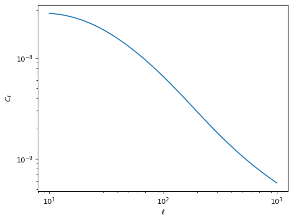
print("Computing ABC samples")
samples = abc(
observation, prior, simulator, epsilon=3e-8, distance_function=mse, n_samples=1000
)Computing ABC samples
Accepted samples: 100%|██████████| 1000/1000 [07:46<00:00, 2.15samples/s, acceptance_ratio=0.178]c = ChainConsumer()
c.add_chain(samples, shade_alpha = 0.5, name='ABC Prediction', parameters=["$\Omega_m$", "$\sigma_8$"])
fig = c.plotter.plot(figsize=2., truth=fiducial_cosmology[0])
plt.show()WARNING:chainconsumer:Parameter $\Omega_m$ in chain ABC Prediction is not constrained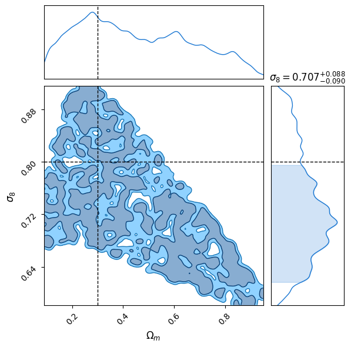
🚧🚧🚧 Inference using NPE 🚧🚧🚧
We can now use our Neural Networks to perform Neural Posterior Estimation to get an estimate of \(\Omega_m\) and \(\sigma_8\).
class RealNVPTrainer(TrainerModule):
def __init__(self,
n_in : int,
n_layers : int,
layers : list[int],
activation : str,
trial : Any = None,
**kwargs):
super().__init__(model_class=ConditionalRealNVP,
model_hparams={
'n_in': n_in,
'n_layers': n_layers,
'layers' : layers,
'activation' : activation
},
**kwargs)
self.trial=trial
def create_functions(self):
def loss_nll(params, batch):
thetas, xs = batch
return -jnp.mean(self.model.apply({'params': params}, thetas, xs, method='log_prob'))
def train_step(state, batch):
loss_fn = lambda params: loss_nll(params, batch)
loss, grads =jax.value_and_grad(loss_fn)(state.params)
state = state.apply_gradients(grads=grads)
metrics = {'loss': loss}
return state, metrics
def eval_step(state, batch):
loss = loss_nll(state.params, batch)
return {'loss': loss}
return train_step, eval_step
def run_model_init(self, exmp_input, init_rng):
return self.model.init(init_rng, *exmp_input, train=True, method='log_prob')
def print_tabulate(self, exmp_input):
pass
def on_validation_epoch_end(self, epoch_idx, eval_metrics, val_loader):
if self.trial:
self.trial.report(eval_metrics['val/loss'], step=epoch_idx)
if self.trial.should_prune():
raise optuna.exceptions.TrialPruned()CHECKPOINT_PATH = '~/Documents/SBI/sbi_jax/notebooks/checkpoints_tuto/ps_analysis' #Specify the path where the checkpoints will be saved
trainer = RealNVPTrainer(n_in=2, #Dimension of the target space
n_layers=3,
layers=[50, 50],
activation = 'relu',
optimizer_hparams={'lr': 4e-3}, #Optimizer hyperparameters
logger_params={'base_log_dir': CHECKPOINT_PATH},
exmp_input=next(iter(train_loader)), #Example of the input
check_val_every_epoch=1, #Number of epochs before checking the validation.
seed=0)metrics = trainer.train_model(
train_loader, val_loader, test_loader=test_loader, num_epochs=50
)Exception ignored in: <function _MultiProcessingDataLoaderIter.__del__ at 0x7f6f9e1f5870>
Traceback (most recent call last):
File "/local/home/sg276684/anaconda3/envs/jaxili/lib/python3.10/site-packages/torch/utils/data/dataloader.py", line 1479, in __del__
self._shutdown_workers()
File "/local/home/sg276684/anaconda3/envs/jaxili/lib/python3.10/site-packages/torch/utils/data/dataloader.py", line 1443, in _shutdown_workers
w.join(timeout=_utils.MP_STATUS_CHECK_INTERVAL)
File "/local/home/sg276684/anaconda3/envs/jaxili/lib/python3.10/multiprocessing/process.py", line 149, in join
res = self._popen.wait(timeout)
File "/local/home/sg276684/anaconda3/envs/jaxili/lib/python3.10/multiprocessing/popen_fork.py", line 40, in wait
if not wait([self.sentinel], timeout):
File "/local/home/sg276684/anaconda3/envs/jaxili/lib/python3.10/multiprocessing/connection.py", line 931, in wait
ready = selector.select(timeout)
File "/local/home/sg276684/anaconda3/envs/jaxili/lib/python3.10/selectors.py", line 416, in select
fd_event_list = self._selector.poll(timeout)
KeyboardInterrupt: print(f'Training loss: {metrics["train/loss"]}')
print(f'Validation loss: {metrics["val/loss"]}')
print(f'Test loss: {metrics["test/loss"]}')Training loss: 0.09867486357688904
Validation loss: 0.09942905604839325
Test loss: 0.09612161666154861key = jax.random.PRNGKey(42)
model = trainer.bind_model()
samples = model.sample(jnp.array(observation), num_samples=10000, key=key)
c = ChainConsumer()
c.add_chain(samples, shade_alpha = 0.5, name='NDE Prediction')
fig = c.plotter.plot(figsize=2., truth=fiducial_cosmology[0])
plt.show()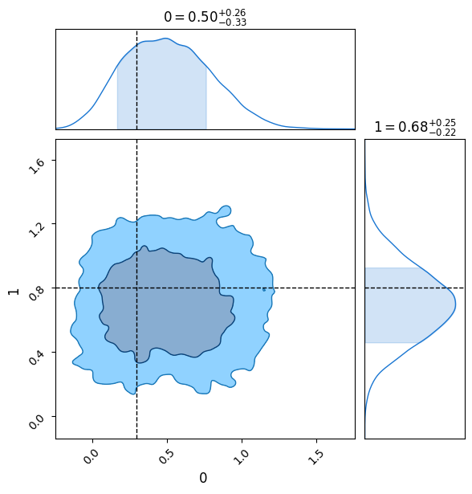
theta.shape(128, 2)obs.shape(128, 10)obsarray([[3.9146894e-08, 3.5206430e-08, 2.7710158e-08, ..., 2.0782016e-09,
1.2229748e-09, 7.5801204e-10],
[8.4745535e-09, 7.9680254e-09, 6.6286723e-09, ..., 6.1514888e-10,
4.0211534e-10, 3.0518718e-10],
[5.2916686e-08, 5.7051633e-08, 5.6658038e-08, ..., 9.9970823e-09,
4.4200976e-09, 1.9167161e-09],
...,
[8.4179803e-08, 5.8645867e-08, 3.2748115e-08, ..., 9.4086228e-10,
5.9593347e-10, 4.1123541e-10],
[1.9127903e-07, 1.1212932e-07, 4.7847372e-08, ..., 6.0956895e-10,
4.0763717e-10, 3.0656042e-10],
[3.6107974e-08, 3.5130903e-08, 3.0529225e-08, ..., 3.2243657e-09,
1.8047812e-09, 1.0524963e-09]], dtype=float32)